Copyright © 2010-2017 Linux Foundation
Permission is granted to copy, distribute and/or modify this document under the terms of the Creative Commons Attribution-Share Alike 2.0 UK: England & Wales as published by Creative Commons.
For the latest version of the Yocto Project Reference Manual associated with this Yocto Project release (version 2.3), see the Yocto Project Reference Manual from the Yocto Project documentation page.
This version of the manual is version 2.3. For later releases of the Yocto Project (if they exist), go to the Yocto Project documentation page and use the drop-down "Active Releases" button and choose the Yocto Project version for which you want the manual.
For an in-development version of the Yocto Project Reference Manual, see http://www.yoctoproject.org/docs/latest/ref-manual/ref-manual.html.
| Revision History | |
|---|---|
| Revision 4.0+git | 24 November 2010 |
| Released with the Yocto Project 0.9 Release | |
| Revision 1.0 | 6 April 2011 |
| Released with the Yocto Project 1.0 Release. | |
| Revision 1.0.1 | 23 May 2011 |
| Released with the Yocto Project 1.0.1 Release. | |
| Revision 1.1 | 6 October 2011 |
| Released with the Yocto Project 1.1 Release. | |
| Revision 1.2 | April 2012 |
| Released with the Yocto Project 1.2 Release. | |
| Revision 1.3 | October 2012 |
| Released with the Yocto Project 1.3 Release. | |
| Revision 1.4 | April 2013 |
| Released with the Yocto Project 1.4 Release. | |
| Revision 1.5 | October 2013 |
| Released with the Yocto Project 1.5 Release. | |
| Revision 1.5.1 | January 2014 |
| Released with the Yocto Project 1.5.1 Release. | |
| Revision 1.6 | April 2014 |
| Released with the Yocto Project 1.6 Release. | |
| Revision 1.7 | October 2014 |
| Released with the Yocto Project 1.7 Release. | |
| Revision 1.8 | April 2015 |
| Released with the Yocto Project 1.8 Release. | |
| Revision 2.0 | October 2015 |
| Released with the Yocto Project 2.0 Release. | |
| Revision 2.1 | April 2016 |
| Released with the Yocto Project 2.1 Release. | |
| Revision 2.2 | October 2016 |
| Released with the Yocto Project 2.2 Release. | |
| Revision 2.3 | May 2017 |
| Released with the Yocto Project 2.3 Release. | |
Table of Contents
oe-pkgdata-utilatom-pc Board Support Package (BSP)SRCREV ValuesIMAGE_FEATURES/runudevarchiver Classqemu-nativecore-image-basicCFLAGS Optionsupdate-alternative Providervirtclass OverridesPACKAGECONFIG Options in local.confeglibc 2.19 Replaced with glibc 2.20linux-yocto Kernel Metadata Repository Now Split from SourcegetVar() and
getVarFlag() is Now Mandatorylibexecdir Reverted to ${prefix}/libexecac_cv_sizeof_off_t is No Longer Cached in Site Filestmp/deploy Now Enabled${B} No Longer Default Working Directory for Tasksrunqemu Ported to PythonKERNEL_IMAGE_BASE_NAME no Longer Uses KERNEL_IMAGETYPEbuild/build/buildhistorybuild/conf/local.confbuild/conf/bblayers.confbuild/conf/sanity_infobuild/downloads/build/sstate-cache/build/tmp/build/tmp/buildstats/build/tmp/cache/build/tmp/deploy/build/tmp/deploy/deb/build/tmp/deploy/rpm/build/tmp/deploy/ipk/build/tmp/deploy/licenses/build/tmp/deploy/images/build/tmp/deploy/sdk/build/tmp/sstate-control/build/tmp/sysroots/build/tmp/stamps/build/tmp/log/build/tmp/work/build/tmp/work/tunearch/recipename/version/build/tmp/work-shared/meta/meta/classes/meta/conf/meta/conf/machine/meta/conf/distro/meta/conf/machine-sdk/meta/files/meta/lib/meta/recipes-bsp/meta/recipes-connectivity/meta/recipes-core/meta/recipes-devtools/meta/recipes-extended/meta/recipes-gnome/meta/recipes-graphics/meta/recipes-kernel/meta/recipes-lsb4/meta/recipes-multimedia/meta/recipes-rt/meta/recipes-sato/meta/recipes-support/meta/site/meta/recipes.txtallarch.bbclassarchiver.bbclassautotools*.bbclassbase.bbclassbash-completion.bbclassbin_package.bbclassbinconfig.bbclassbinconfig-disabled.bbclassblacklist.bbclassbluetooth.bbclassbugzilla.bbclassbuildhistory.bbclassbuildstats.bbclassbuildstats-summary.bbclassccache.bbclasschrpath.bbclassclutter.bbclasscmake.bbclasscml1.bbclasscompress_doc.bbclasscopyleft_compliance.bbclasscopyleft_filter.bbclasscore-image.bbclasscpan*.bbclasscross.bbclasscross-canadian.bbclasscrosssdk.bbclassdebian.bbclassdeploy.bbclassdevshell.bbclassdistro_features_check.bbclassdistrodata.bbclassdistutils*.bbclassdistutils3*.bbclassexternalsrc.bbclassextrausers.bbclassfontcache.bbclassfs-uuid.bbclassgconf.bbclassgettext.bbclassgnome.bbclassgnomebase.bbclassgobject-introspection.bbclassgrub-efi.bbclassgsettings.bbclassgtk-doc.bbclassgtk-icon-cache.bbclassgtk-immodules-cache.bbclassgzipnative.bbclassicecc.bbclassimage.bbclassimage-buildinfo.bbclassimage_types.bbclassimage_types_uboot.bbclassimage-live.bbclassimage-mklibs.bbclassimage-prelink.bbclassimage-vm.bbclassimage-vmdk.bbclassinsane.bbclassinsserv.bbclasskernel.bbclasskernel-arch.bbclasskernel-fitimage.bbclasskernel-grub.bbclasskernel-module-split.bbclasskernel-uboot.bbclasskernel-uimage.bbclasskernel-yocto.bbclasskernelsrc.bbclasslib_package.bbclasslibc*.bbclasslicense.bbclasslinux-kernel-base.bbclasslinuxloader.bbclasslogging.bbclassmeta.bbclassmetadata_scm.bbclassmigrate_localcount.bbclassmime.bbclassmirrors.bbclassmodule.bbclassmodule-base.bbclassmultilib*.bbclassnative.bbclassnativesdk.bbclassnopackages.bbclassnpm.bbclassoelint.bbclassown-mirrors.bbclasspackage.bbclasspackage_deb.bbclasspackage_ipk.bbclasspackage_rpm.bbclasspackage_tar.bbclasspackagedata.bbclasspackagegroup.bbclasspatch.bbclassperlnative.bbclasspixbufcache.bbclasspkgconfig.bbclasspopulate_sdk.bbclasspopulate_sdk_*.bbclassprexport.bbclassprimport.bbclassprserv.bbclassptest.bbclassptest-gnome.bbclasspython-dir.bbclasspython3native.bbclasspythonnative.bbclassqemu.bbclassrecipe_sanity.bbclassrelocatable.bbclassremove-libtool.bbclassreport-error.bbclassrm_work.bbclassrootfs*.bbclasssanity.bbclassscons.bbclasssdl.bbclasssetuptools.bbclasssetuptools3.bbclasssign_rpm.bbclasssip.bbclasssiteconfig.bbclasssiteinfo.bbclassspdx.bbclasssstate.bbclassstaging.bbclasssyslinux.bbclasssystemd.bbclasssystemd-boot.bbclassterminal.bbclasstestimage*.bbclasstestsdk.bbclasstexinfo.bbclasstinderclient.bbclasstoaster.bbclasstoolchain-scripts.bbclasstypecheck.bbclassuboot-config.bbclassuninative.bbclassupdate-alternatives.bbclassupdate-rc.d.bbclassuseradd*.bbclassutility-tasks.bbclassutils.bbclassvala.bbclasswaf.bbclassdo_builddo_compiledo_compile_ptest_basedo_configuredo_configure_ptest_basedo_deploydo_distrodatado_fetchdo_imagedo_image_completedo_installdo_install_ptest_basedo_packagedo_package_qado_package_write_debdo_package_write_ipkdo_package_write_rpmdo_package_write_tardo_packagedatado_patchdo_populate_licdo_populate_sdkdo_populate_sysrootdo_prepare_recipe_sysrootdo_rm_workdo_rm_work_alldo_unpackdo_compile_kernelmodulesdo_diffconfigdo_kernel_checkoutdo_kernel_configcheckdo_kernel_configmedo_kernel_menuconfigdo_kernel_metadatado_menuconfigdo_savedefconfigdo_shared_workdirdo_sizecheckdo_stripdo_validate_branchesdevtool Quick ReferenceTable of Contents
This manual provides reference information for the current release of the Yocto Project. The Yocto Project is an open-source collaboration project focused on embedded Linux developers. Amongst other things, the Yocto Project uses the OpenEmbedded build system, which is based on the Poky project, to construct complete Linux images. You can find complete introductory and getting started information on the Yocto Project by reading the Yocto Project Quick Start.
For task-based information using the Yocto Project, see the Yocto Project Development Manual and the Yocto Project Linux Kernel Development Manual. For Board Support Package (BSP) structure information, see the Yocto Project Board Support Package (BSP) Developer's Guide. For information on how to use a Software Development Kit, (SDK), see the Yocto Project Software Development Kit (SDK) Developer's Guide. You can find information on tracing and profiling in the Yocto Project Profiling and Tracing Manual. For information on BitBake, which is the task execution tool the OpenEmbedded build system is based on, see the BitBake User Manual. Finally, you can also find lots of Yocto Project information on the Yocto Project website.
This reference manual consists of the following:
Using the Yocto Project: Provides an overview of the components that make up the Yocto Project followed by information about debugging images created in the Yocto Project.
A Closer Look at the Yocto Project Development Environment: Provides a more detailed look at the Yocto Project development environment within the context of development.
Technical Details: Describes fundamental Yocto Project components as well as an explanation behind how the Yocto Project uses shared state (sstate) cache to speed build time.
Migrating to a Newer Yocto Project Release: Describes release-specific information that helps you move from one Yocto Project Release to another.
Directory Structure: Describes the Source Directory created either by unpacking a released Yocto Project tarball on your host development system, or by cloning the upstream Poky Git repository.
Classes: Describes the classes used in the Yocto Project.
Tasks: Describes the tasks defined by the OpenEmbedded build system.
devtool Quick Reference:
Provides a quick reference for the devtool
command.
QA Error and Warning Messages: Lists and describes QA warning and error messages.
Images: Describes the standard images that the Yocto Project supports.
Features: Describes mechanisms for creating distribution, machine, and image features during the build process using the OpenEmbedded build system.
Variables Glossary: Presents most variables used by the OpenEmbedded build system, which uses BitBake. Entries describe the function of the variable and how to apply them.
Variable Context: Provides variable locality or context.
FAQ: Provides answers for commonly asked questions in the Yocto Project development environment.
Contributing to the Yocto Project: Provides guidance on how you can contribute back to the Yocto Project.
For general Yocto Project system requirements, see the "Setting Up to Use the Yocto Project" section in the Yocto Project Quick Start. The remainder of this section provides details on system requirements not covered in the Yocto Project Quick Start.
Currently, the Yocto Project is supported on the following distributions:
Yocto Project releases are tested against the stable Linux distributions in the following list. The Yocto Project should work on other distributions but validation is not performed against them.
In particular, the Yocto Project does not support and currently has no plans to support rolling-releases or development distributions due to their constantly changing nature. We welcome patches and bug reports, but keep in mind that our priority is on the supported platforms listed below.
If you encounter problems, please go to Yocto Project Bugzilla and submit a bug. We are interested in hearing about your experience.
Ubuntu 14.04 (LTS)
Ubuntu 14.10
Ubuntu 15.04
Ubuntu 15.10
Ubuntu 16.04
Fedora release 22
Fedora release 23
Fedora release 24
CentOS release 7.x
Debian GNU/Linux 8.x (Jessie)
openSUSE 13.2
openSUSE 42.1
The list of packages you need on the host development system can be large when covering all build scenarios using the Yocto Project. This section provides required packages according to Linux distribution and function.
The following list shows the required packages by function given a supported Ubuntu or Debian Linux distribution:
oss4-dev package installed, you
might experience QEMU build failures due to the package
installing its own custom
/usr/include/linux/soundcard.h on
the Debian system.
If you run into this situation, either of the following
solutions exist:
$ sudo apt-get build-dep qemu
$ sudo apt-get remove oss4-dev
Essentials: Packages needed to build an image on a headless system:
$ sudo apt-get install gawk wget git-core diffstat unzip texinfo gcc-multilib \
build-essential chrpath socat cpio python python3 python3-pip python3-pexpect \
xz-utils debianutils iputils-ping
Graphical and Eclipse Plug-In Extras: Packages recommended if the host system has graphics support or if you are going to use the Eclipse IDE:
$ sudo apt-get install libsdl1.2-dev xterm
Documentation: Packages needed if you are going to build out the Yocto Project documentation manuals:
$ sudo apt-get install make xsltproc docbook-utils fop dblatex xmlto
OpenEmbedded Self-Test (oe-selftest):
Packages needed if you are going to run
oe-selftest:
$ sudo apt-get install python-git
The following list shows the required packages by function given a supported Fedora Linux distribution:
Essentials: Packages needed to build an image for a headless system:
$ sudo dnf install gawk make wget tar bzip2 gzip python3 unzip perl patch \
diffutils diffstat git cpp gcc gcc-c++ glibc-devel texinfo chrpath \
ccache perl-Data-Dumper perl-Text-ParseWords perl-Thread-Queue perl-bignum socat \
python3-pexpect findutils which file cpio python python3-pip xz which
Graphical and Eclipse Plug-In Extras: Packages recommended if the host system has graphics support or if you are going to use the Eclipse IDE:
$ sudo dnf install SDL-devel xterm
Documentation: Packages needed if you are going to build out the Yocto Project documentation manuals:
$ sudo dnf install make docbook-style-dsssl docbook-style-xsl \
docbook-dtds docbook-utils fop libxslt dblatex xmlto xsltproc
OpenEmbedded Self-Test (oe-selftest):
Packages needed if you are going to run
oe-selftest:
$ sudo dnf install python3-GitPython
The following list shows the required packages by function given a supported openSUSE Linux distribution:
Essentials: Packages needed to build an image for a headless system:
$ sudo zypper install python gcc gcc-c++ git chrpath make wget python-xml \
diffstat makeinfo python-curses patch socat python3 python3-curses tar python3-pip \
python3-pexpect xz which
Graphical and Eclipse Plug-In Extras: Packages recommended if the host system has graphics support or if you are going to use the Eclipse IDE:
$ sudo zypper install libSDL-devel xterm
Documentation: Packages needed if you are going to build out the Yocto Project documentation manuals:
$ sudo zypper install make fop xsltproc dblatex xmlto
OpenEmbedded Self-Test (oe-selftest):
Packages needed if you are going to run
oe-selftest:
$ sudo zypper install python-GitPython
The following list shows the required packages by function given a supported CentOS Linux distribution:
Essentials: Packages needed to build an image for a headless system:
$ sudo yum install -y epel-release
$ sudo yum makecache
$ sudo yum install gawk make wget tar bzip2 gzip python unzip perl patch \
diffutils diffstat git cpp gcc gcc-c++ glibc-devel texinfo chrpath socat \
perl-Data-Dumper perl-Text-ParseWords perl-Thread-Queue python34-pip xz \
which SDL-devel xterm
Extra Packages for Enterprise Linux
(i.e. epel-release)
is a collection of packages from Fedora
built on RHEL/CentOS for easy installation
of packages not included in enterprise
Linux by default.
You need to install these packages
separately.
The makecache command
consumes additional Metadata from
epel-release.
Graphical and Eclipse Plug-In Extras: Packages recommended if the host system has graphics support or if you are going to use the Eclipse IDE:
$ sudo yum install SDL-devel xterm
Documentation: Packages needed if you are going to build out the Yocto Project documentation manuals:
$ sudo yum install make docbook-style-dsssl docbook-style-xsl \
docbook-dtds docbook-utils fop libxslt dblatex xmlto xsltproc
OpenEmbedded Self-Test (oe-selftest):
Packages needed if you are going to run
oe-selftest:
$ sudo yum install GitPython
In order to use the build system, your host development system must meet the following version requirements for Git, tar, and Python:
Git 1.8.3.1 or greater
tar 1.24 or greater
Python 3.4.0 or greater
If your host development system does not meet all these requirements,
you can resolve this by installing a buildtools
tarball that contains these tools.
You can get the tarball one of two ways: download a pre-built
tarball or use BitBake to build the tarball.
buildtools Tarball¶Downloading and running a pre-built buildtools installer is the easiest of the two methods by which you can get these tools:
Locate and download the *.sh at
http://downloads.yoctoproject.org/releases/yocto/yocto-2.3/buildtools/.
Execute the installation script. Here is an example:
$ sh poky-glibc-x86_64-buildtools-tarball-x86_64-buildtools-nativesdk-standalone-2.3.sh
During execution, a prompt appears that allows you to choose the installation directory. For example, you could choose the following:
/home/your-username/buildtools
Source the tools environment setup script by using a command like the following:
$ source /home/your_username/buildtools/environment-setup-i586-poky-linux
Of course, you need to supply your installation directory and be sure to use the right file (i.e. i585 or x86-64).
After you have sourced the setup script,
the tools are added to PATH
and any other environment variables required to run the
tools are initialized.
The results are working versions versions of Git, tar,
Python and chrpath.
buildtools Tarball¶
Building and running your own buildtools installer applies
only when you have a build host that can already run BitBake.
In this case, you use that machine to build the
.sh file and then
take steps to transfer and run it on a
machine that does not meet the minimal Git, tar, and Python
requirements.
Here are the steps to take to build and run your own buildtools installer:
On the machine that is able to run BitBake,
be sure you have set up your build environment with
the setup script
(oe-init-build-env
or
oe-init-build-env-memres).
Run the BitBake command to build the tarball:
$ bitbake buildtools-tarball
SDKMACHINE
variable in your local.conf file
determines whether you build tools for a 32-bit
or 64-bit system.
Once the build completes, you can find the
.sh file that installs
the tools in the tmp/deploy/sdk
subdirectory of the
Build Directory.
The installer file has the string "buildtools"
in the name.
Transfer the .sh file from the
build host to the machine that does not meet the
Git, tar, or Python requirements.
On the machine that does not meet the requirements,
run the .sh file
to install the tools.
Here is an example:
$ sh poky-glibc-x86_64-buildtools-tarball-x86_64-buildtools-nativesdk-standalone-2.3.sh
During execution, a prompt appears that allows you to choose the installation directory. For example, you could choose the following:
/home/your_username/buildtools
Source the tools environment setup script by using a command like the following:
$ source /home/your_username/buildtools/environment-setup-i586-poky-linux
Of course, you need to supply your installation directory and be sure to use the right file (i.e. i585 or x86-64).
After you have sourced the setup script,
the tools are added to PATH
and any other environment variables required to run the
tools are initialized.
The results are working versions versions of Git, tar,
Python and chrpath.
The Yocto Project development team makes the Yocto Project available through a number of methods:
Source Repositories:
Working from a copy of the upstream
poky repository is the
preferred method for obtaining and using a Yocto Project
release.
You can view the Yocto Project Source Repositories at
http://git.yoctoproject.org/cgit.cgi.
In particular, you can find the
poky repository at
http://git.yoctoproject.org/cgit/cgit.cgi/poky/.
Releases: Stable, tested releases are available as tarballs through http://downloads.yoctoproject.org/releases/yocto/.
Nightly Builds: These tarball releases are available at http://autobuilder.yoctoproject.org/pub/nightly/. These builds include Yocto Project releases, SDK installation scripts, and experimental builds.
Yocto Project Website: You can find tarball releases of the Yocto Project and supported BSPs at the Yocto Project website. Along with these downloads, you can find lots of other information at this site.
Development using the Yocto Project requires a local Source Directory. You can set up the Source Directory by cloning a copy of the upstream poky Git repository. For information on how to do this, see the "Getting Set Up" section in the Yocto Project Development Manual.
Table of Contents
oe-pkgdata-utilThis chapter describes common usage for the Yocto Project. The information is introductory in nature as other manuals in the Yocto Project documentation set provide more details on how to use the Yocto Project.
This section provides a summary of the build process and provides information for less obvious aspects of the build process. For general information on how to build an image using the OpenEmbedded build system, see the "Building Images" section of the Yocto Project Quick Start.
In the development environment you will need to build an image whenever you change hardware support, add or change system libraries, or add or change services that have dependencies.
Building an Image
The first thing you need to do is set up the OpenEmbedded build
environment by sourcing an environment setup script
(i.e.
oe-init-build-env
or
oe-init-build-env-memres).
Here is an example:
$ source oe-init-build-env [build_dir]
The build_dir argument is optional and specifies the directory the
OpenEmbedded build system uses for the build -
the Build Directory.
If you do not specify a Build Directory, it defaults to a directory
named build in your current working directory.
A common practice is to use a different Build Directory for different targets.
For example, ~/build/x86 for a qemux86
target, and ~/build/arm for a qemuarm target.
Once the build environment is set up, you can build a target using:
$ bitbake target
If you experience a build error due to resources
temporarily being unavailable and it appears you
should not be having this issue, it might be due
to the combination of a 4.3+ Linux kernel and
systemd version 228+
(i.e. see this
link
for information).
To work around this issue, you can try either of the following:
Try the build again.
Modify the "DefaultTasksMax"
systemd parameter
by uncommenting it and setting it to
"infinity".
You can find this parameter in the
system.conf file
located in
/etc/systemd
on most systems.
The target is the name of the recipe you want to build.
Common targets are the images in meta/recipes-core/images,
meta/recipes-sato/images, etc. all found in the
Source Directory.
Or, the target can be the name of a recipe for a specific piece of software such as
BusyBox.
For more details about the images the OpenEmbedded build system supports, see the
"Images" chapter.
When building an image using GPL components, you need to maintain your original settings and not switch back and forth applying different versions of the GNU General Public License. If you rebuild using different versions of GPL, dependency errors might occur due to some components not being rebuilt.
Once an image has been built, it often needs to be installed.
The images and kernels built by the OpenEmbedded build system are placed in the
Build Directory in
tmp/deploy/images.
For information on how to run pre-built images such as qemux86
and qemuarm, see the
Yocto Project Software Development Kit (SDK) Developer's Guide.
For information about how to install these images, see the documentation for your
particular board or machine.
The exact method for debugging build failures depends on the nature of the problem and on the system's area from which the bug originates. Standard debugging practices such as comparison against the last known working version with examination of the changes and the re-application of steps to identify the one causing the problem are valid for the Yocto Project just as they are for any other system. Even though it is impossible to detail every possible potential failure, this section provides some general tips to aid in debugging.
A useful feature for debugging is the error reporting tool. Configuring the Yocto Project to use this tool causes the OpenEmbedded build system to produce error reporting commands as part of the console output. You can enter the commands after the build completes to log error information into a common database, that can help you figure out what might be going wrong. For information on how to enable and use this feature, see the "Using the Error Reporting Tool" section in the Yocto Project Development Manual.
For discussions on debugging, see the "Debugging With the GNU Project Debugger (GDB) Remotely" section in the Yocto Project Developer's Manual and the "Working within Eclipse" section in the Yocto Project Software Development Kit (SDK) Developer's Guide.
bitbake command.
You can learn about BitBake by reading the
BitBake User Manual.
You can find the log for a task in the file
${WORKDIR}/temp/log.do_taskname.
For example, the log for the
do_compile
task of the QEMU minimal image for the x86 machine
(qemux86) might be in
tmp/work/qemux86-poky-linux/core-image-minimal/1.0-r0/temp/log.do_compile.
To see the commands
BitBake ran
to generate a log, look at the corresponding
run.do_taskname
file in the same directory.
log.do_taskname and
run.do_taskname
are actually symbolic links to
log.do_taskname.pid
and
log.run_taskname.pid,
where pid is the PID the task had when
it ran.
The symlinks always point to the files corresponding to the most
recent run.
BitBake's -e option is used to display
variable values after parsing.
The following command displays the variable values after the
configuration files (i.e. local.conf,
bblayers.conf,
bitbake.conf and so forth) have been
parsed:
$ bitbake -e
The following command displays variable values after a specific recipe has been parsed. The variables include those from the configuration as well:
$ bitbake -e recipename
Each recipe has its own private set of variables (datastore). Internally, after parsing the configuration, a copy of the resulting datastore is made prior to parsing each recipe. This copying implies that variables set in one recipe will not be visible to other recipes.
Likewise, each task within a recipe gets a private datastore based on the recipe datastore, which means that variables set within one task will not be visible to other tasks.
In the output of bitbake -e, each variable is
preceded by a description of how the variable got its value,
including temporary values that were later overriden.
This description also includes variable flags (varflags) set on
the variable.
The output can be very helpful during debugging.
Variables that are exported to the environment are preceded by
export in the output of
bitbake -e.
See the following example:
export CC="i586-poky-linux-gcc -m32 -march=i586 --sysroot=/home/ulf/poky/build/tmp/sysroots/qemux86"
In addition to variable values, the output of the
bitbake -e and
bitbake -e recipe
commands includes the following information:
The output starts with a tree listing all configuration
files and classes included globally, recursively listing
the files they include or inherit in turn.
Much of the behavior of the OpenEmbedded build system
(including the behavior of the
normal recipe build tasks)
is implemented in the
base
class and the classes it inherits, rather than being built
into BitBake itself.
After the variable values, all functions appear in the
output.
For shell functions, variables referenced within the
function body are expanded.
If a function has been modified using overrides or
using override-style operators like
_append and
_prepend, then the final assembled
function body appears in the output.
oe-pkgdata-util¶
You can use the oe-pkgdata-util command-line
utility to query
PKGDATA_DIR
and display various package-related information.
When you use the utility, you must use it to view information
on packages that have already been built.
Following are a few of the available
oe-pkgdata-util subcommands.
oe-pkgdata-util list-pkgs [pattern]:
Lists all packages that have been built, optionally
limiting the match to packages that match
pattern.
oe-pkgdata-util list-pkg-files package ...:
Lists the files and directories contained in the given
packages.
A different way to view the contents of a package is
to look at the
${WORKDIR}/packages-split
directory of the recipe that generates the
package.
This directory is created by the
do_package
task and has one subdirectory for each package the
recipe generates, which contains the files stored in
that package.
If you want to inspect the
${WORKDIR}/packages-split
directory, make sure that
rm_work
is not enabled when you build the recipe.
oe-pkgdata-util find-path path ...:
Lists the names of the packages that contain the given
paths.
For example, the following tells us that
/usr/share/man/man1/make.1
is contained in the make-doc
package:
$ oe-pkgdata-util find-path /usr/share/man/man1/make.1
make-doc: /usr/share/man/man1/make.1
oe-pkgdata-util lookup-recipe package ...:
Lists the name of the recipes that
produce the given packages.
For more information on the oe-pkgdata-util
command, use the help facility:
$ oe-pkgdata-util ‐‐help
$ oe-pkgdata-util subcommand --help
Sometimes it can be hard to see why BitBake wants to build other recipes before the one you have specified. Dependency information can help you understand why a recipe is built.
To generate dependency information for a recipe, run the following command:
$ bitbake -g recipename
This command writes the following files in the current directory:
pn-buildlist: A list of
recipes/targets involved in building
recipename.
"Involved" here means that at least one task from the
recipe needs to run when building
recipename from scratch.
Targets that are in
ASSUME_PROVIDED
are not listed.
task-depends.dot: A graph showing
dependencies between tasks.
The graphs are in
DOT
format and can be converted to images (e.g. using the
dot tool from
Graphviz).
DOT files use a plain text format.
The graphs generated using the
bitbake -g command are often so
large as to be difficult to read without special
pruning (e.g. with Bitbake's
-I option) and processing.
Despite the form and size of the graphs, the
corresponding .dot files can still
be possible to read and provide useful information.
As an example, the
task-depends.dot file contains
lines such as the following:
"libxslt.do_configure" -> "libxml2.do_populate_sysroot"
The above example line reveals that the
do_configure
task in libxslt depends on the
do_populate_sysroot
task in libxml2, which is a normal
DEPENDS
dependency between the two recipes.
For an example of how .dot files
can be processed, see the
scripts/contrib/graph-tool Python
script, which finds and displays paths between graph
nodes.
You can use a different method to view dependency information by using the following command:
$ bitbake -g -u depexp recipename
This command displays a GUI window from which you can view
build-time and runtime dependencies for the recipes involved in
building recipename.
As mentioned in the
"Checksums (Signatures)"
section of the BitBake User Manual, BitBake tries to automatically
determine what variables a task depends on so that it can rerun
the task if any values of the variables change.
This determination is usually reliable.
However, if you do things like construct variable names at runtime,
then you might have to manually declare dependencies on those
variables using vardeps as described in the
"Variable Flags"
section of the BitBake User Manual.
If you are unsure whether a variable dependency is being picked up automatically for a given task, you can list the variable dependencies BitBake has determined by doing the following:
Build the recipe containing the task:
$ bitbake recipename
Inside the
STAMPS_DIR
directory, find the signature data
(sigdata) file that corresponds to the
task.
The sigdata files contain a pickled
Python database of all the metadata that went into creating
the input checksum for the task.
As an example, for the
do_fetch
task of the db recipe, the
sigdata file might be found in the
following location:
${BUILDDIR}/tmp/stamps/i586-poky-linux/db/6.0.30-r1.do_fetch.sigdata.7c048c18222b16ff0bcee2000ef648b1
For tasks that are accelerated through the shared state
(sstate)
cache, an additional siginfo file is
written into
SSTATE_DIR
along with the cached task output.
The siginfo files contain exactly the
same information as sigdata files.
Run bitbake-dumpsig on the
sigdata or
siginfo file.
Here is an example:
$ bitbake-dumpsig ${BUILDDIR}/tmp/stamps/i586-poky-linux/db/6.0.30-r1.do_fetch.sigdata.7c048c18222b16ff0bcee2000ef648b1
In the output of the above command, you will find a line like the following, which lists all the (inferred) variable dependencies for the task. This list also includes indirect dependencies from variables depending on other variables, recursively.
Task dependencies: ['PV', 'SRCREV', 'SRC_URI', 'SRC_URI[md5sum]', 'SRC_URI[sha256sum]', 'base_do_fetch']
base_do_fetch)
also count as variable dependencies.
These functions in turn depend on the variables they
reference.
The output of bitbake-dumpsig also includes
the value each variable had, a list of dependencies for each
variable, and
BB_HASHBASE_WHITELIST
information.
There is also a bitbake-diffsigs command for
comparing two siginfo or
sigdata files.
This command can be helpful when trying to figure out what changed
between two versions of a task.
If you call bitbake-diffsigs with just one
file, the command behaves like
bitbake-dumpsig.
You can also use BitBake to dump out the signature construction information without executing tasks by using either of the following BitBake command-line options:
‐‐dump-signatures=SIGNATURE_HANDLER
-S SIGNATURE_HANDLER
SIGNATURE_HANDLER are "none" and
"printdiff", which dump only the signature or compare the
dumped signature with the cached one, respectively.
Using BitBake with either of these options causes BitBake to dump
out sigdata files in the
stamps directory for every task it would have
executed instead of building the specified target package.
Any given recipe consists of a set of tasks.
The standard BitBake behavior in most cases is:
do_fetch,
do_unpack,
do_patch, do_configure,
do_compile, do_install,
do_package,
do_package_write_*, and
do_build.
The default task is do_build and any tasks
on which it depends build first.
Some tasks, such as do_devshell, are not part
of the default build chain.
If you wish to run a task that is not part of the default build
chain, you can use the -c option in BitBake.
Here is an example:
$ bitbake matchbox-desktop -c devshell
The -c option respects task dependencies,
which means that all other tasks (including tasks from other
recipes) that the specified task depends on will be run before the
task.
Even when you manually specify a task to run with
-c, BitBake will only run the task if it
considers it "out of date".
See the
"Stamp Files and the Rerunning of Tasks"
section for how BitBake determines whether a task is "out of date".
If you want to force an up-to-date task to be rerun (e.g.
because you made manual modifications to the recipe's
WORKDIR
that you want to try out), then you can use the
-f option.
-f is never required when
running the
do_devshell
task is because the
[nostamp]
variable flag is already set for the task.
The following example shows one way you can use the
-f option:
$ bitbake matchbox-desktop
.
.
make some changes to the source code in the work directory
.
.
$ bitbake matchbox-desktop -c compile -f
$ bitbake matchbox-desktop
This sequence first builds and then recompiles
matchbox-desktop.
The last command reruns all tasks (basically the packaging tasks)
after the compile.
BitBake recognizes that the do_compile
task was rerun and therefore understands that the other tasks
also need to be run again.
Another, shorter way to rerun a task and all
normal recipe build tasks
that depend on it is to use the -C
option.
-c option, which is lower-cased.
Using this option invalidates the given task and then runs the
do_build
task, which is the default task if no task is given, and the
tasks on which it depends.
You could replace the final two commands in the previous example
with the following single command:
$ bitbake matchbox-desktop -C compile
Internally, the -f and
-C options work by tainting (modifying) the
input checksum of the specified task.
This tainting indirectly causes the task and its
dependent tasks to be rerun through the normal task dependency
mechanisms.
WARNING: /home/ulf/poky/meta/recipes-sato/matchbox-desktop/matchbox-desktop_2.1.bb.do_compile is tainted from a forced run
The purpose of the warning is to let you know that the work
directory and build output might not be in the clean state they
would be in for a "normal" build, depending on what actions
you took.
To get rid of such warnings, you can remove the work directory
and rebuild the recipe, as follows:
$ bitbake matchbox-desktop -c clean
$ bitbake matchbox-desktop
You can view a list of tasks in a given package by running the
do_listtasks task as follows:
$ bitbake matchbox-desktop -c listtasks
The results appear as output to the console and are also in the
file ${WORKDIR}/temp/log.do_listtasks.
A recipe might build successfully even though some of its
build-time dependencies are missing from
DEPENDS.
Following are the two most common ways in which that can happen:
The build-time dependency just happens to already exist in
the staging sysroot
(STAGING_DIR_HOST)
by the time the recipe is built.
This situation occurs when the build-time dependency is
built earlier during recipe processing.
The component built by the recipe conditionally enables functionality depending on whether it can find the build-time dependency in the staging sysroot. If the build-time dependency is missing, the corresponding functionality is disabled. This condition is known as a "floating dependency".
Because dealing with the second case is more complex, focus will
be on the first case.
The
build-deps
QA check checks that every library the component linked against is
declared as a build-time dependency.
If that is not the case, then the first situation described in the
previous list exists, and build-deps reports
a missing build-time dependency.
Another, more manual, way to check a recipe for missing build-time
dependencies of the first type is to build with an empty staging
sysroot.
This method can also find missing build-time dependencies
that are not in the form of libraries, which the
build-deps QA check is unable to find.
An easy way to empty the staging sysroots is to simply remove
TMPDIR,
which is usually
${BUILDDIR}/tmp,
as it includes the staging sysroots.
Another, faster method to empty the staging sysroots is to use the
scripts/wipe-sysroot script,
which removes just the staging sysroots and keeps everything else
in TMPDIR.
scripts/ directory appears in
PATH after running the build environment
initialization script (i.e.
oe-init-build-env
or
oe-init-build-env-memres),
which results in the ability to to run
wipe-sysroot immediately.
You can see debug output from BitBake by using the -D option.
The debug output gives more information about what BitBake
is doing and the reason behind it.
Each -D option you use increases the logging level.
The most common usage is -DDD.
The output from bitbake -DDD -v targetname can reveal why
BitBake chose a certain version of a package or why BitBake
picked a certain provider.
This command could also help you in a situation where you think BitBake did something
unexpected.
Sometimes issues on the host development system can cause your build to fail. Following are known, host-specific problems. Be sure to always consult the Release Notes for a look at all release-related issues.
glibc-initial fails to build:
If your development host system has the unpatched
GNU Make 3.82,
the
do_install
task fails for glibc-initial during
the build.
Typically, every distribution that ships
GNU Make 3.82 as
the default already has the patched version.
However, some distributions, such as Debian, have
GNU Make 3.82 as an option, which
is unpatched.
You will see this error on these types of distributions.
Switch to GNU Make 3.81 or patch
your make to solve the problem.
To build a specific recipe (.bb file),
you can use the following command form:
$ bitbake -b somepath/somerecipe.bb
This command form does not check for dependencies. Consequently, you should use it only when you know existing dependencies have been met.
The Yocto Project provides several logging functions for producing
debugging output and reporting errors and warnings.
For Python functions, the following logging functions exist.
All of these functions log to
${T}/log.do_task,
and can also log to standard output (stdout) with the right
settings:
bb.plain(msg):
Writes msg as is to the log while
also logging to stdout.
bb.note(msg):
Writes "NOTE: msg" to the log.
Also logs to stdout if BitBake is called with "-v".
bb.debug(level, msg):
Writes "DEBUG: msg" to the log.
Also logs to stdout if the log level is greater than or
equal to level.
See the
"-D"
option in the BitBake User Manual for more information.
bb.warn(msg):
Writes "WARNING: msg" to the log
while also logging to stdout.
bb.error(msg):
Writes "ERROR: msg" to the log
while also logging to stdout.
bb.fatal(msg):
This logging function is similar to
bb.error(msg)
but also causes the calling task to fail.
bb.fatal() raises an exception,
which means you do not need to put a "return"
statement after the function.
The same logging functions are also available in shell functions,
under the names
bbplain, bbnote,
bbdebug, bbwarn,
bberror, and bbfatal.
The
logging
class implements these functions.
See that class in the
meta/classes folder of the
Source Directory
for information.
When creating recipes using Python and inserting code that handles build logs, keep in mind the goal is to have informative logs while keeping the console as "silent" as possible. Also, if you want status messages in the log, use the "debug" loglevel.
Following is an example written in Python.
The code handles logging for a function that determines the
number of tasks needed to be run.
See the
"do_listtasks"
section for additional information:
python do_listtasks() {
bb.debug(2, "Starting to figure out the task list")
if noteworthy_condition:
bb.note("There are 47 tasks to run")
bb.debug(2, "Got to point xyz")
if warning_trigger:
bb.warn("Detected warning_trigger, this might be a problem later.")
if recoverable_error:
bb.error("Hit recoverable_error, you really need to fix this!")
if fatal_error:
bb.fatal("fatal_error detected, unable to print the task list")
bb.plain("The tasks present are abc")
bb.debug(2, "Finished figuring out the tasklist")
}
When creating recipes using Bash and inserting code that handles build logs, you have the same goals - informative with minimal console output. The syntax you use for recipes written in Bash is similar to that of recipes written in Python described in the previous section.
Following is an example written in Bash.
The code logs the progress of the do_my_function function.
do_my_function() {
bbdebug 2 "Running do_my_function"
if [ exceptional_condition ]; then
bbnote "Hit exceptional_condition"
fi
bbdebug 2 "Got to point xyz"
if [ warning_trigger ]; then
bbwarn "Detected warning_trigger, this might cause a problem later."
fi
if [ recoverable_error ]; then
bberror "Hit recoverable_error, correcting"
fi
if [ fatal_error ]; then
bbfatal "fatal_error detected"
fi
bbdebug 2 "Completed do_my_function"
}
Here are some other tips that you might find useful:
When adding new packages, it is worth watching for
undesirable items making their way into compiler command
lines.
For example, you do not want references to local system
files like
/usr/lib/ or
/usr/include/.
If you want to remove the psplash
boot splashscreen,
add psplash=false to the kernel
command line.
Doing so prevents psplash from loading
and thus allows you to see the console.
It is also possible to switch out of the splashscreen by
switching the virtual console (e.g. Fn+Left or Fn+Right
on a Zaurus).
Removing
TMPDIR
(usually tmp/, within the
Build Directory)
can often fix temporary build issues.
Removing TMPDIR is usually a
relatively cheap operation, because task output will be
cached in
SSTATE_DIR
(usually sstate-cache/, which is
also in the Build Directory).
TMPDIR might be a
workaround rather than a fix.
Consequently, trying to determine the underlying cause
of an issue before removing the directory is a good
idea.
Understanding how a feature is used in practice within existing recipes can be very helpful. It is recommended that you configure some method that allows you to quickly search through files.
Using GNU Grep, you can use the following shell
function to recursively search through common
recipe-related files, skipping binary files,
.git directories, and the
Build Directory (assuming its name starts with
"build"):
g() {
grep -Ir \
--exclude-dir=.git \
--exclude-dir='build*' \
--include='*.bb*' \
--include='*.inc*' \
--include='*.conf*' \
--include='*.py*' \
"$@"
}
Following are some usage examples:
$ g FOO # Search recursively for "FOO"
$ g -i foo # Search recursively for "foo", ignoring case
$ g -w FOO # Search recursively for "FOO" as a word, ignoring e.g. "FOOBAR"
If figuring out how some feature works requires a lot of searching, it might indicate that the documentation should be extended or improved. In such cases, consider filing a documentation bug using the Yocto Project implementation of Bugzilla. For general information on how to submit a bug against the Yocto Project, see the "Tracking Bugs" section in the Yocto Project Development Manual.
.bbclass file).
Many factors can influence the quality of a build. For example, if you upgrade a recipe to use a new version of an upstream software package or you experiment with some new configuration options, subtle changes can occur that you might not detect until later. Consider the case where your recipe is using a newer version of an upstream package. In this case, a new version of a piece of software might introduce an optional dependency on another library, which is auto-detected. If that library has already been built when the software is building, the software will link to the built library and that library will be pulled into your image along with the new software even if you did not want the library.
The
buildhistory
class exists to help you maintain
the quality of your build output.
You can use the class to highlight unexpected and possibly unwanted
changes in the build output.
When you enable build history, it records information about the contents of
each package and image and then commits that information to a local Git
repository where you can examine the information.
The remainder of this section describes the following:
How you can enable and disable build history
How to understand what the build history contains
How to limit the information used for build history
How to examine the build history from both a command-line and web interface
Build history is disabled by default.
To enable it, add the following INHERIT
statement and set the
BUILDHISTORY_COMMIT
variable to "1" at the end of your
conf/local.conf file found in the
Build Directory:
INHERIT += "buildhistory"
BUILDHISTORY_COMMIT = "1"
Enabling build history as previously described causes the build process to collect build output information and commit it to a local Git repository.
You can disable build history by removing the previous statements
from your conf/local.conf file.
Build history information is kept in
${TOPDIR}/buildhistory
in the Build Directory as defined by the
BUILDHISTORY_DIR
variable.
The following is an example abbreviated listing:
| 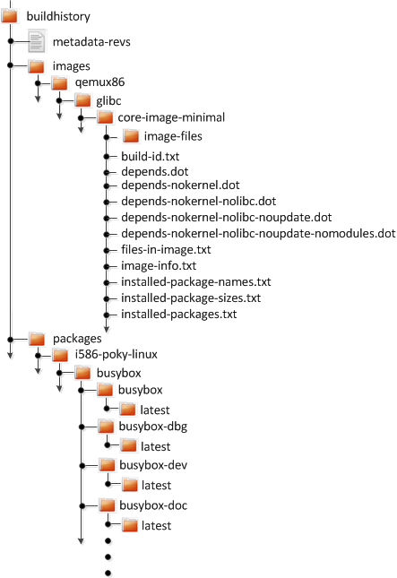 |
At the top level, there is a metadata-revs file
that lists the revisions of the repositories for the layers enabled
when the build was produced.
The rest of the data splits into separate
packages, images and
sdk directories, the contents of which are
described below.
The history for each package contains a text file that has
name-value pairs with information about the package.
For example, buildhistory/packages/i586-poky-linux/busybox/busybox/latest
contains the following:
PV = 1.22.1
PR = r32
RPROVIDES =
RDEPENDS = glibc (>= 2.20) update-alternatives-opkg
RRECOMMENDS = busybox-syslog busybox-udhcpc update-rc.d
PKGSIZE = 540168
FILES = /usr/bin/* /usr/sbin/* /usr/lib/busybox/* /usr/lib/lib*.so.* \
/etc /com /var /bin/* /sbin/* /lib/*.so.* /lib/udev/rules.d \
/usr/lib/udev/rules.d /usr/share/busybox /usr/lib/busybox/* \
/usr/share/pixmaps /usr/share/applications /usr/share/idl \
/usr/share/omf /usr/share/sounds /usr/lib/bonobo/servers
FILELIST = /bin/busybox /bin/busybox.nosuid /bin/busybox.suid /bin/sh \
/etc/busybox.links.nosuid /etc/busybox.links.suid
Most of these name-value pairs correspond to variables used
to produce the package.
The exceptions are FILELIST, which is the
actual list of files in the package, and
PKGSIZE, which is the total size of files
in the package in bytes.
There is also a file corresponding to the recipe from which the
package came (e.g.
buildhistory/packages/i586-poky-linux/busybox/latest):
PV = 1.22.1
PR = r32
DEPENDS = initscripts kern-tools-native update-rc.d-native \
virtual/i586-poky-linux-compilerlibs virtual/i586-poky-linux-gcc \
virtual/libc virtual/update-alternatives
PACKAGES = busybox-ptest busybox-httpd busybox-udhcpd busybox-udhcpc \
busybox-syslog busybox-mdev busybox-hwclock busybox-dbg \
busybox-staticdev busybox-dev busybox-doc busybox-locale busybox
Finally, for those recipes fetched from a version control
system (e.g., Git), a file exists that lists source revisions
that are specified in the recipe and lists the actual revisions
used during the build.
Listed and actual revisions might differ when
SRCREV
is set to
${AUTOREV}.
Here is an example assuming
buildhistory/packages/qemux86-poky-linux/linux-yocto/latest_srcrev):
# SRCREV_machine = "38cd560d5022ed2dbd1ab0dca9642e47c98a0aa1"
SRCREV_machine = "38cd560d5022ed2dbd1ab0dca9642e47c98a0aa1"
# SRCREV_meta = "a227f20eff056e511d504b2e490f3774ab260d6f"
SRCREV_meta = "a227f20eff056e511d504b2e490f3774ab260d6f"
You can use the buildhistory-collect-srcrevs
command with the -a option to
collect the stored SRCREV values
from build history and report them in a format suitable for
use in global configuration (e.g.,
local.conf or a distro include file) to
override floating AUTOREV values to a
fixed set of revisions.
Here is some example output from this command:
$ buildhistory-collect-srcrevs -a
# i586-poky-linux
SRCREV_pn-glibc = "b8079dd0d360648e4e8de48656c5c38972621072"
SRCREV_pn-glibc-initial = "b8079dd0d360648e4e8de48656c5c38972621072"
SRCREV_pn-opkg-utils = "53274f087565fd45d8452c5367997ba6a682a37a"
SRCREV_pn-kmod = "fd56638aed3fe147015bfa10ed4a5f7491303cb4"
# x86_64-linux
SRCREV_pn-gtk-doc-stub-native = "1dea266593edb766d6d898c79451ef193eb17cfa"
SRCREV_pn-dtc-native = "65cc4d2748a2c2e6f27f1cf39e07a5dbabd80ebf"
SRCREV_pn-update-rc.d-native = "eca680ddf28d024954895f59a241a622dd575c11"
SRCREV_glibc_pn-cross-localedef-native = "b8079dd0d360648e4e8de48656c5c38972621072"
SRCREV_localedef_pn-cross-localedef-native = "c833367348d39dad7ba018990bfdaffaec8e9ed3"
SRCREV_pn-prelink-native = "faa069deec99bf61418d0bab831c83d7c1b797ca"
SRCREV_pn-opkg-utils-native = "53274f087565fd45d8452c5367997ba6a682a37a"
SRCREV_pn-kern-tools-native = "23345b8846fe4bd167efdf1bd8a1224b2ba9a5ff"
SRCREV_pn-kmod-native = "fd56638aed3fe147015bfa10ed4a5f7491303cb4"
# qemux86-poky-linux
SRCREV_machine_pn-linux-yocto = "38cd560d5022ed2dbd1ab0dca9642e47c98a0aa1"
SRCREV_meta_pn-linux-yocto = "a227f20eff056e511d504b2e490f3774ab260d6f"
# all-poky-linux
SRCREV_pn-update-rc.d = "eca680ddf28d024954895f59a241a622dd575c11"
buildhistory-collect-srcrevs command:
By default, only values where the
SRCREV was
not hardcoded (usually when AUTOREV
was used) are reported.
Use the -a option to see all
SRCREV values.
The output statements might not have any effect
if overrides are applied elsewhere in the build system
configuration.
Use the -f option to add the
forcevariable override to each output line
if you need to work around this restriction.
The script does apply special handling when
building for multiple machines.
However, the script does place a
comment before each set of values that specifies
which triplet to which they belong as shown above
(e.g., i586-poky-linux).
The files produced for each image are as follows:
image-files:
A directory containing selected files from the root
filesystem.
The files are defined by
BUILDHISTORY_IMAGE_FILES.
build-id.txt:
Human-readable information about the build configuration
and metadata source revisions.
This file contains the full build header as printed
by BitBake.
*.dot:
Dependency graphs for the image that are
compatible with graphviz.
files-in-image.txt:
A list of files in the image with permissions,
owner, group, size, and symlink information.
image-info.txt:
A text file containing name-value pairs with information
about the image.
See the following listing example for more information.
installed-package-names.txt:
A list of installed packages by name only.
installed-package-sizes.txt:
A list of installed packages ordered by size.
installed-packages.txt:
A list of installed packages with full package
filenames.
Here is an example of image-info.txt:
DISTRO = poky
DISTRO_VERSION = 1.7
USER_CLASSES = buildstats image-mklibs image-prelink
IMAGE_CLASSES = image_types
IMAGE_FEATURES = debug-tweaks
IMAGE_LINGUAS =
IMAGE_INSTALL = packagegroup-core-boot run-postinsts
BAD_RECOMMENDATIONS =
NO_RECOMMENDATIONS =
PACKAGE_EXCLUDE =
ROOTFS_POSTPROCESS_COMMAND = write_package_manifest; license_create_manifest; \
write_image_manifest ; buildhistory_list_installed_image ; \
buildhistory_get_image_installed ; ssh_allow_empty_password; \
postinst_enable_logging; rootfs_update_timestamp ; ssh_disable_dns_lookup ;
IMAGE_POSTPROCESS_COMMAND = buildhistory_get_imageinfo ;
IMAGESIZE = 6900
Other than IMAGESIZE, which is the
total size of the files in the image in Kbytes, the
name-value pairs are variables that may have influenced the
content of the image.
This information is often useful when you are trying to determine
why a change in the package or file listings has occurred.
As you can see, build history produces image information,
including dependency graphs, so you can see why something
was pulled into the image.
If you are just interested in this information and not
interested in collecting specific package or SDK information,
you can enable writing only image information without
any history by adding the following to your
conf/local.conf file found in the
Build Directory:
INHERIT += "buildhistory"
BUILDHISTORY_COMMIT = "0"
BUILDHISTORY_FEATURES = "image"
Here, you set the
BUILDHISTORY_FEATURES
variable to use the image feature only.
Build history collects similar information on the contents
of SDKs
(e.g. bitbake -c populate_sdk imagename)
as compared to information it collects for images.
Furthermore, this information differs depending on whether an
extensible or standard SDK is being produced.
The following list shows the files produced for SDKs:
files-in-sdk.txt:
A list of files in the SDK with permissions,
owner, group, size, and symlink information.
This list includes both the host and target parts
of the SDK.
sdk-info.txt:
A text file containing name-value pairs with information
about the SDK.
See the following listing example for more information.
sstate-task-sizes.txt:
A text file containing name-value pairs with information
about task group sizes
(e.g. do_populate_sysroot tasks
have a total size).
The sstate-task-sizes.txt file
exists only when an extensible SDK is created.
sstate-package-sizes.txt:
A text file containing name-value pairs with information
for the shared-state packages and sizes in the SDK.
The sstate-package-sizes.txt file
exists only when an extensible SDK is created.
sdk-files:
A folder that contains copies of the files mentioned in
BUILDHISTORY_SDK_FILES if the
files are present in the output.
Additionally, the default value of
BUILDHISTORY_SDK_FILES is specific
to the extensible SDK although you can set it
differently if you would like to pull in specific files
from the standard SDK.
The default files are
conf/local.conf,
conf/bblayers.conf,
conf/auto.conf,
conf/locked-sigs.inc, and
conf/devtool.conf.
Thus, for an extensible SDK, these files get copied
into the sdk-files directory.
The following information appears under
each of the host
and target directories
for the portions of the SDK that run on the host and
on the target, respectively:
depends.dot:
Dependency graph for the SDK that is
compatible with graphviz.
installed-package-names.txt:
A list of installed packages by name only.
installed-package-sizes.txt:
A list of installed packages ordered by size.
installed-packages.txt:
A list of installed packages with full package
filenames.
Here is an example of sdk-info.txt:
DISTRO = poky
DISTRO_VERSION = 1.3+snapshot-20130327
SDK_NAME = poky-glibc-i686-arm
SDK_VERSION = 1.3+snapshot
SDKMACHINE =
SDKIMAGE_FEATURES = dev-pkgs dbg-pkgs
BAD_RECOMMENDATIONS =
SDKSIZE = 352712
Other than SDKSIZE, which is the
total size of the files in the SDK in Kbytes, the
name-value pairs are variables that might have influenced the
content of the SDK.
This information is often useful when you are trying to
determine why a change in the package or file listings
has occurred.
You can examine build history output from the command line or from a web interface.
To see any changes that have occurred (assuming you have
BUILDHISTORY_COMMIT = "1"),
you can simply
use any Git command that allows you to view the history of
a repository.
Here is one method:
$ git log -p
You need to realize, however, that this method does show changes that are not significant (e.g. a package's size changing by a few bytes).
A command-line tool called buildhistory-diff
does exist, though, that queries the Git repository and prints just
the differences that might be significant in human-readable form.
Here is an example:
$ ~/poky/poky/scripts/buildhistory-diff . HEAD^
Changes to images/qemux86_64/glibc/core-image-minimal (files-in-image.txt):
/etc/anotherpkg.conf was added
/sbin/anotherpkg was added
* (installed-package-names.txt):
* anotherpkg was added
Changes to images/qemux86_64/glibc/core-image-minimal (installed-package-names.txt):
anotherpkg was added
packages/qemux86_64-poky-linux/v86d: PACKAGES: added "v86d-extras"
* PR changed from "r0" to "r1"
* PV changed from "0.1.10" to "0.1.12"
packages/qemux86_64-poky-linux/v86d/v86d: PKGSIZE changed from 110579 to 144381 (+30%)
* PR changed from "r0" to "r1"
* PV changed from "0.1.10" to "0.1.12"
buildhistory-diff tool requires
the GitPython package.
Be sure to install it using Pip3 as follows:
$ pip3 install GitPython --user
Alternatively, you can install
python3-git using the appropriate
distribution package manager (e.g.
apt-get, dnf, or
zipper).
To see changes to the build history using a web interface, follow
the instruction in the README file here.
http://git.yoctoproject.org/cgit/cgit.cgi/buildhistory-web/.
Here is a sample screenshot of the interface:
| 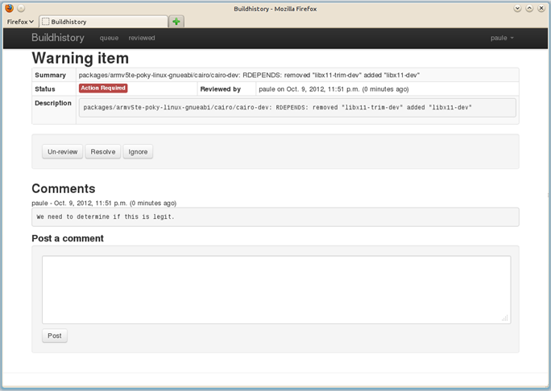 |
Build time can be an issue. By default, the build system uses simple controls to try and maximize build efficiency. In general, the default settings for all the following variables result in the most efficient build times when dealing with single socket systems (i.e. a single CPU). If you have multiple CPUs, you might try increasing the default values to gain more speed. See the descriptions in the glossary for each variable for more information:
BB_NUMBER_THREADS:
The maximum number of threads BitBake simultaneously executes.
BB_NUMBER_PARSE_THREADS:
The number of threads BitBake uses during parsing.
PARALLEL_MAKE:
Extra options passed to the make command
during the
do_compile
task in order to specify parallel compilation on the
local build host.
PARALLEL_MAKEINST:
Extra options passed to the make command
during the
do_install
task in order to specify parallel installation on the
local build host.
As mentioned, these variables all scale to the number of processor cores available on the build system. For single socket systems, this auto-scaling ensures that the build system fundamentally takes advantage of potential parallel operations during the build based on the build machine's capabilities.
Following are additional factors that can affect build speed:
File system type:
The file system type that the build is being performed on can
also influence performance.
Using ext4 is recommended as compared
to ext2 and ext3
due to ext4 improved features
such as extents.
Disabling the updating of access time using
noatime:
The noatime mount option prevents the
build system from updating file and directory access times.
Setting a longer commit: Using the "commit=" mount option increases the interval in seconds between disk cache writes. Changing this interval from the five second default to something longer increases the risk of data loss but decreases the need to write to the disk, thus increasing the build performance.
Choosing the packaging backend: Of the available packaging backends, IPK is the fastest. Additionally, selecting a singular packaging backend also helps.
Using tmpfs for
TMPDIR
as a temporary file system:
While this can help speed up the build, the benefits are
limited due to the compiler using
-pipe.
The build system goes to some lengths to avoid
sync() calls into the
file system on the principle that if there was a significant
failure, the
Build Directory
contents could easily be rebuilt.
Inheriting the
rm_work
class:
Inheriting this class has shown to speed up builds due to
significantly lower amounts of data stored in the data
cache as well as on disk.
Inheriting this class also makes cleanup of
TMPDIR
faster, at the expense of being easily able to dive into the
source code.
File system maintainers have recommended that the fastest way
to clean up large numbers of files is to reformat partitions
rather than delete files due to the linear nature of partitions.
This, of course, assumes you structure the disk partitions and
file systems in a way that this is practical.
Aside from the previous list, you should keep some trade offs in mind that can help you speed up the build:
Remove items from
DISTRO_FEATURES
that you might not need.
Exclude debug symbols and other debug information:
If you do not need these symbols and other debug information,
disabling the *-dbg package generation
can speed up the build.
You can disable this generation by setting the
INHIBIT_PACKAGE_DEBUG_SPLIT
variable to "1".
Disable static library generation for recipes derived from
autoconf or libtool:
Following is an example showing how to disable static
libraries and still provide an override to handle exceptions:
STATICLIBCONF = "--disable-static"
STATICLIBCONF_sqlite3-native = ""
EXTRA_OECONF += "${STATICLIBCONF}"
Some recipes need static libraries in order to work
correctly (e.g. pseudo-native
needs sqlite3-native).
Overrides, as in the previous example, account for
these kinds of exceptions.
Some packages have packaging code that assumes the presence of the static libraries. If so, you might need to exclude them as well.
Table of Contents
This chapter takes a more detailed look at the Yocto Project development environment. The following diagram represents the development environment at a high level. The remainder of this chapter expands on the fundamental input, output, process, and Metadata) blocks in the Yocto Project development environment.
| 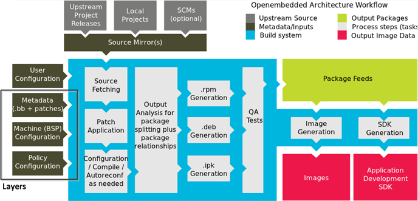 |
The generalized Yocto Project Development Environment consists of several functional areas:
User Configuration: Metadata you can use to control the build process.
Metadata Layers: Various layers that provide software, machine, and distro Metadata.
Source Files: Upstream releases, local projects, and SCMs.
Build System: Processes under the control of BitBake. This block expands on how BitBake fetches source, applies patches, completes compilation, analyzes output for package generation, creates and tests packages, generates images, and generates cross-development tools.
Package Feeds: Directories containing output packages (RPM, DEB or IPK), which are subsequently used in the construction of an image or SDK, produced by the build system. These feeds can also be copied and shared using a web server or other means to facilitate extending or updating existing images on devices at runtime if runtime package management is enabled.
Images: Images produced by the development process.
Application Development SDK: Cross-development tools that are produced along with an image or separately with BitBake.
User configuration helps define the build. Through user configuration, you can tell BitBake the target architecture for which you are building the image, where to store downloaded source, and other build properties.
The following figure shows an expanded representation of the "User Configuration" box of the general Yocto Project Development Environment figure:
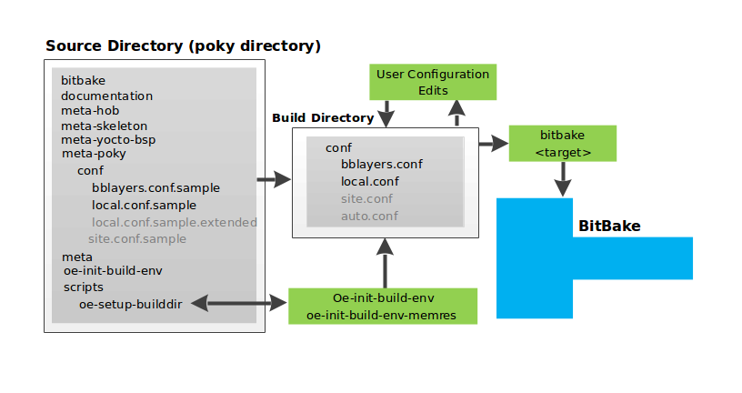
BitBake needs some basic configuration files in order to complete
a build.
These files are *.conf files.
The minimally necessary ones reside as example files in the
Source Directory.
For simplicity, this section refers to the Source Directory as
the "Poky Directory."
When you clone the poky Git repository or you
download and unpack a Yocto Project release, you can set up the
Source Directory to be named anything you want.
For this discussion, the cloned repository uses the default
name poky.
The meta-poky layer inside Poky contains
a conf directory that has example
configuration files.
These example files are used as a basis for creating actual
configuration files when you source the build environment
script
(i.e.
oe-init-build-env
or
oe-init-build-env-memres).
Sourcing the build environment script creates a
Build Directory
if one does not already exist.
BitBake uses the Build Directory for all its work during builds.
The Build Directory has a conf directory that
contains default versions of your local.conf
and bblayers.conf configuration files.
These default configuration files are created only if versions
do not already exist in the Build Directory at the time you
source the build environment setup script.
Because the Poky repository is fundamentally an aggregation of
existing repositories, some users might be familiar with running
the oe-init-build-env or
oe-init-build-env-memres script in the context
of separate OpenEmbedded-Core and BitBake repositories rather than a
single Poky repository.
This discussion assumes the script is executed from within a cloned
or unpacked version of Poky.
Depending on where the script is sourced, different sub-scripts
are called to set up the Build Directory (Yocto or OpenEmbedded).
Specifically, the script
scripts/oe-setup-builddir inside the
poky directory sets up the Build Directory and seeds the directory
(if necessary) with configuration files appropriate for the
Yocto Project development environment.
scripts/oe-setup-builddir script
uses the $TEMPLATECONF variable to
determine which sample configuration files to locate.
The local.conf file provides many
basic variables that define a build environment.
Here is a list of a few.
To see the default configurations in a local.conf
file created by the build environment script, see the
local.conf.sample in the
meta-poky layer:
Parallelism Options:
Controlled by the
BB_NUMBER_THREADS,
PARALLEL_MAKE,
and
BB_NUMBER_PARSE_THREADS
variables.
Target Machine Selection:
Controlled by the
MACHINE
variable.
Download Directory:
Controlled by the
DL_DIR
variable.
Shared State Directory:
Controlled by the
SSTATE_DIR
variable.
Build Output:
Controlled by the
TMPDIR
variable.
conf/local.conf
file can also be set in the
conf/site.conf and
conf/auto.conf configuration files.
The bblayers.conf file tells BitBake what
layers you want considered during the build.
By default, the layers listed in this file include layers
minimally needed by the build system.
However, you must manually add any custom layers you have created.
You can find more information on working with the
bblayers.conf file in the
"Enabling Your Layer"
section in the Yocto Project Development Manual.
The files site.conf and
auto.conf are not created by the environment
initialization script.
If you want the site.conf file, you need to
create that yourself.
The auto.conf file is typically created by
an autobuilder:
site.conf:
You can use the conf/site.conf
configuration file to configure multiple build directories.
For example, suppose you had several build environments and
they shared some common features.
You can set these default build properties here.
A good example is perhaps the packaging format to use
through the
PACKAGE_CLASSES
variable.
One useful scenario for using the
conf/site.conf file is to extend your
BBPATH
variable to include the path to a
conf/site.conf.
Then, when BitBake looks for Metadata using
BBPATH, it finds the
conf/site.conf file and applies your
common configurations found in the file.
To override configurations in a particular build directory,
alter the similar configurations within that build
directory's conf/local.conf file.
auto.conf:
The file is usually created and written to by
an autobuilder.
The settings put into the file are typically the same as
you would find in the conf/local.conf
or the conf/site.conf files.
You can edit all configuration files to further define any particular build environment. This process is represented by the "User Configuration Edits" box in the figure.
When you launch your build with the
bitbake
command, BitBake sorts out the configurations to ultimately
define your build environment.
It is important to understand that the OpenEmbedded build system
reads the configuration files in a specific order:
targetsite.conf, auto.conf,
and local.conf.
And, the build system applies the normal assignment statement
rules.
Because the files are parsed in a specific order, variable
assignments for the same variable could be affected.
For example, if the auto.conf file and
the local.conf set
variable1 to different values, because
the build system parses local.conf after
auto.conf,
variable1 is assigned the value from
the local.conf file.
The previous section described the user configurations that define BitBake's global behavior. This section takes a closer look at the layers the build system uses to further control the build. These layers provide Metadata for the software, machine, and policy.
In general, three types of layer input exist:
Policy Configuration: Distribution Layers provide top-level or general policies for the image or SDK being built. For example, this layer would dictate whether BitBake produces RPM or IPK packages.
Machine Configuration: Board Support Package (BSP) layers provide machine configurations. This type of information is specific to a particular target architecture.
Metadata: Software layers contain user-supplied recipe files, patches, and append files.
The following figure shows an expanded representation of the Metadata, Machine Configuration, and Policy Configuration input (layers) boxes of the general Yocto Project Development Environment figure:
| 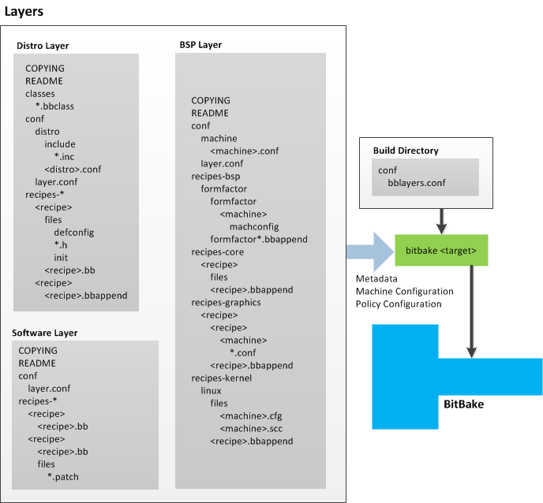 |
In general, all layers have a similar structure.
They all contain a licensing file
(e.g. COPYING) if the layer is to be
distributed, a README file as good practice
and especially if the layer is to be distributed, a
configuration directory, and recipe directories.
The Yocto Project has many layers that can be used. You can see a web-interface listing of them on the Source Repositories page. The layers are shown at the bottom categorized under "Yocto Metadata Layers." These layers are fundamentally a subset of the OpenEmbedded Metadata Index, which lists all layers provided by the OpenEmbedded community.
BitBake uses the conf/bblayers.conf file,
which is part of the user configuration, to find what layers it
should be using as part of the build.
For more information on layers, see the "Understanding and Creating Layers" section in the Yocto Project Development Manual.
The distribution layer provides policy configurations for your
distribution.
Best practices dictate that you isolate these types of
configurations into their own layer.
Settings you provide in
conf/distro/ override
similar
settings that BitBake finds in your
distro.confconf/local.conf file in the Build
Directory.
The following list provides some explanation and references for what you typically find in the distribution layer:
classes:
Class files (.bbclass) hold
common functionality that can be shared among
recipes in the distribution.
When your recipes inherit a class, they take on the
settings and functions for that class.
You can read more about class files in the
"Classes" section.
conf:
This area holds configuration files for the
layer (conf/layer.conf),
the distribution
(conf/distro/),
and any distribution-wide include files.
distro.conf
recipes-*: Recipes and append files that affect common functionality across the distribution. This area could include recipes and append files to add distribution-specific configuration, initialization scripts, custom image recipes, and so forth.
The BSP Layer provides machine configurations. Everything in this layer is specific to the machine for which you are building the image or the SDK. A common structure or form is defined for BSP layers. You can learn more about this structure in the Yocto Project Board Support Package (BSP) Developer's Guide.
The BSP Layer's configuration directory contains
configuration files for the machine
(conf/machine/) and,
of course, the layer (machine.confconf/layer.conf).
The remainder of the layer is dedicated to specific recipes
by function: recipes-bsp,
recipes-core,
recipes-graphics, and
recipes-kernel.
Metadata can exist for multiple formfactors, graphics
support systems, and so forth.
recipes-*
directories, not all these directories appear in all
BSP layers.
The software layer provides the Metadata for additional software packages used during the build. This layer does not include Metadata that is specific to the distribution or the machine, which are found in their respective layers.
This layer contains any new recipes that your project needs in the form of recipe files.
In order for the OpenEmbedded build system to create an image or any target, it must be able to access source files. The general Yocto Project Development Environment figure represents source files using the "Upstream Project Releases", "Local Projects", and "SCMs (optional)" boxes. The figure represents mirrors, which also play a role in locating source files, with the "Source Mirror(s)" box.
The method by which source files are ultimately organized is a function of the project. For example, for released software, projects tend to use tarballs or other archived files that can capture the state of a release guaranteeing that it is statically represented. On the other hand, for a project that is more dynamic or experimental in nature, a project might keep source files in a repository controlled by a Source Control Manager (SCM) such as Git. Pulling source from a repository allows you to control the point in the repository (the revision) from which you want to build software. Finally, a combination of the two might exist, which would give the consumer a choice when deciding where to get source files.
BitBake uses the
SRC_URI
variable to point to source files regardless of their location.
Each recipe must have a SRC_URI variable
that points to the source.
Another area that plays a significant role in where source files
come from is pointed to by the
DL_DIR
variable.
This area is a cache that can hold previously downloaded source.
You can also instruct the OpenEmbedded build system to create
tarballs from Git repositories, which is not the default behavior,
and store them in the DL_DIR by using the
BB_GENERATE_MIRROR_TARBALLS
variable.
Judicious use of a DL_DIR directory can
save the build system a trip across the Internet when looking
for files.
A good method for using a download directory is to have
DL_DIR point to an area outside of your
Build Directory.
Doing so allows you to safely delete the Build Directory
if needed without fear of removing any downloaded source file.
The remainder of this section provides a deeper look into the source files and the mirrors. Here is a more detailed look at the source file area of the base figure:
| 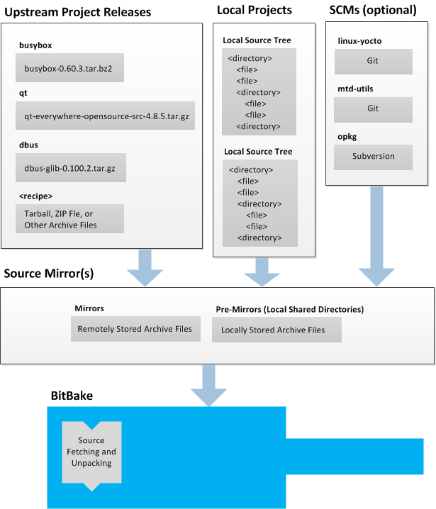 |
Upstream project releases exist anywhere in the form of an archived file (e.g. tarball or zip file). These files correspond to individual recipes. For example, the figure uses specific releases each for BusyBox, Qt, and Dbus. An archive file can be for any released product that can be built using a recipe.
Local projects are custom bits of software the user provides. These bits reside somewhere local to a project - perhaps a directory into which the user checks in items (e.g. a local directory containing a development source tree used by the group).
The canonical method through which to include a local project
is to use the
externalsrc
class to include that local project.
You use either the local.conf or a
recipe's append file to override or set the
recipe to point to the local directory on your disk to pull
in the whole source tree.
For information on how to use the
externalsrc class, see the
"externalsrc.bbclass"
section.
Another place the build system can get source files from is
through an SCM such as Git or Subversion.
In this case, a repository is cloned or checked out.
The
do_fetch
task inside BitBake uses
the SRC_URI
variable and the argument's prefix to determine the correct
fetcher module.
DL_DIR
directory, see the
BB_GENERATE_MIRROR_TARBALLS
variable.
When fetching a repository, BitBake uses the
SRCREV
variable to determine the specific revision from which to
build.
Two kinds of mirrors exist: pre-mirrors and regular mirrors.
The PREMIRRORS
and
MIRRORS
variables point to these, respectively.
BitBake checks pre-mirrors before looking upstream for any
source files.
Pre-mirrors are appropriate when you have a shared directory
that is not a directory defined by the
DL_DIR
variable.
A Pre-mirror typically points to a shared directory that is
local to your organization.
Regular mirrors can be any site across the Internet that is used as an alternative location for source code should the primary site not be functioning for some reason or another.
When the OpenEmbedded build system generates an image or an SDK, it gets the packages from a package feed area located in the Build Directory. The general Yocto Project Development Environment figure shows this package feeds area in the upper-right corner.
This section looks a little closer into the package feeds area used by the build system. Here is a more detailed look at the area:
| 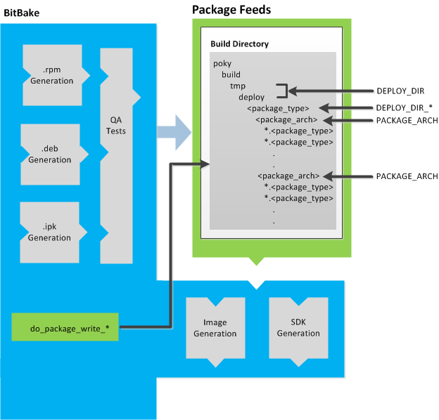 |
Package feeds are an intermediary step in the build process.
The OpenEmbedded build system provides classes to generate
different package types, and you specify which classes to enable
through the
PACKAGE_CLASSES
variable.
Before placing the packages into package feeds,
the build process validates them with generated output quality
assurance checks through the
insane
class.
The package feed area resides in the Build Directory. The directory the build system uses to temporarily store packages is determined by a combination of variables and the particular package manager in use. See the "Package Feeds" box in the illustration and note the information to the right of that area. In particular, the following defines where package files are kept:
DEPLOY_DIR:
Defined as tmp/deploy in the Build
Directory.
DEPLOY_DIR_*:
Depending on the package manager used, the package type
sub-folder.
Given RPM, IPK, or DEB packaging and tarball creation, the
DEPLOY_DIR_RPM,
DEPLOY_DIR_IPK,
DEPLOY_DIR_DEB,
or
DEPLOY_DIR_TAR,
variables are used, respectively.
PACKAGE_ARCH:
Defines architecture-specific sub-folders.
For example, packages could exist for the i586 or qemux86
architectures.
BitBake uses the do_package_write_* tasks to
generate packages and place them into the package holding area (e.g.
do_package_write_ipk for IPK packages).
See the
"do_package_write_deb",
"do_package_write_ipk",
"do_package_write_rpm",
and
"do_package_write_tar"
sections for additional information.
As an example, consider a scenario where an IPK packaging manager
is being used and package architecture support for both i586
and qemux86 exist.
Packages for the i586 architecture are placed in
build/tmp/deploy/ipk/i586, while packages for
the qemux86 architecture are placed in
build/tmp/deploy/ipk/qemux86.
The OpenEmbedded build system uses BitBake to produce images. You can see from the general Yocto Project Development Environment figure, the BitBake area consists of several functional areas. This section takes a closer look at each of those areas.
Separate documentation exists for the BitBake tool. See the BitBake User Manual for reference material on BitBake.
The first stages of building a recipe are to fetch and unpack the source code:
| 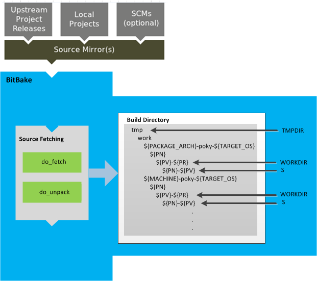 |
The
do_fetch
and
do_unpack
tasks fetch the source files and unpack them into the work
directory.
file://)
that is part of a recipe's
SRC_URI
statement, the OpenEmbedded build system takes a checksum
of the file for the recipe and inserts the checksum into
the signature for the do_fetch.
If any local file has been modified, the
do_fetch task and all tasks that
depend on it are re-executed.
By default, everything is accomplished in the
Build Directory,
which has a defined structure.
For additional general information on the Build Directory,
see the
"build/"
section.
Unpacked source files are pointed to by the
S variable.
Each recipe has an area in the Build Directory where the
unpacked source code resides.
The name of that directory for any given recipe is defined from
several different variables.
You can see the variables that define these directories
by looking at the figure:
TMPDIR -
The base directory where the OpenEmbedded build system
performs all its work during the build.
PACKAGE_ARCH -
The architecture of the built package or packages.
TARGET_OS -
The operating system of the target device.
PN -
The name of the built package.
PV -
The version of the recipe used to build the package.
PR -
The revision of the recipe used to build the package.
WORKDIR -
The location within TMPDIR where
a specific package is built.
S -
Contains the unpacked source files for a given recipe.
Once source code is fetched and unpacked, BitBake locates patch files and applies them to the source files:
| 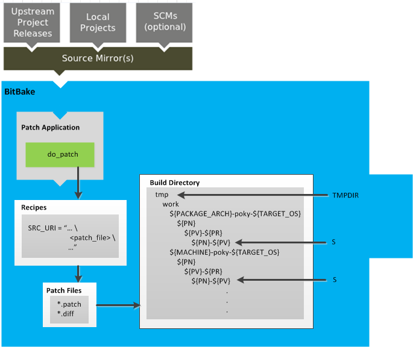 |
The
do_patch
task processes recipes by
using the
SRC_URI
variable to locate applicable patch files, which by default
are *.patch or
*.diff files, or any file if
"apply=yes" is specified for the file in
SRC_URI.
BitBake finds and applies multiple patches for a single recipe
in the order in which it finds the patches.
Patches are applied to the recipe's source files located in the
S directory.
For more information on how the source directories are created, see the "Source Fetching" section.
After source code is patched, BitBake executes tasks that configure and compile the source code:
| 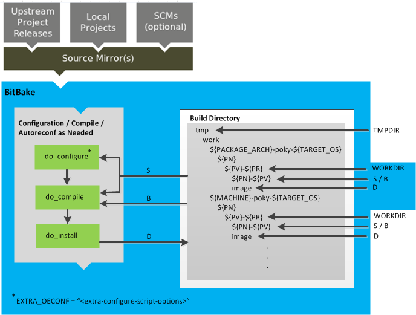 |
This step in the build process consists of three tasks:
do_prepare_recipe_sysroot:
This task sets up the two sysroots in
${WORKDIR}
(i.e. recipe-sysroot and
recipe-sysroot-native) so that
the sysroots contain the contents of the
do_populate_sysroot
tasks of the recipes on which the recipe
containing the tasks depends.
A sysroot exists for both the target and for the native
binaries, which run on the host system.
do_configure:
This task configures the source by enabling and
disabling any build-time and configuration options for
the software being built.
Configurations can come from the recipe itself as well
as from an inherited class.
Additionally, the software itself might configure itself
depending on the target for which it is being built.
The configurations handled by the
do_configure
task are specific
to source code configuration for the source code
being built by the recipe.
If you are using the
autotools
class,
you can add additional configuration options by using
the EXTRA_OECONF
or
PACKAGECONFIG_CONFARGS
variables.
For information on how this variable works within
that class, see the
meta/classes/autotools.bbclass file.
do_compile:
Once a configuration task has been satisfied, BitBake
compiles the source using the
do_compile
task.
Compilation occurs in the directory pointed to by the
B
variable.
Realize that the B directory is, by
default, the same as the
S
directory.
do_install:
Once compilation is done, BitBake executes the
do_install
task.
This task copies files from the B
directory and places them in a holding area pointed to
by the
D
variable.
After source code is configured and compiled, the OpenEmbedded build system analyzes the results and splits the output into packages:
| 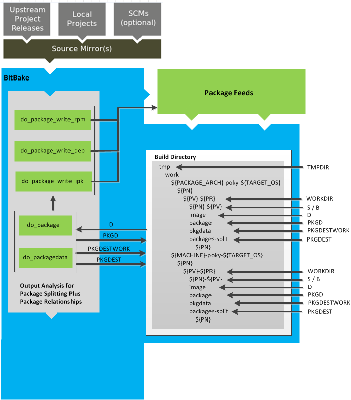 |
The
do_package
and
do_packagedata
tasks combine to analyze
the files found in the
D directory
and split them into subsets based on available packages and
files.
The analyzing process involves the following as well as other
items: splitting out debugging symbols,
looking at shared library dependencies between packages,
and looking at package relationships.
The do_packagedata task creates package
metadata based on the analysis such that the
OpenEmbedded build system can generate the final packages.
Working, staged, and intermediate results of the analysis
and package splitting process use these areas:
PKGD -
The destination directory for packages before they are
split.
PKGDATA_DIR -
A shared, global-state directory that holds data
generated during the packaging process.
PKGDESTWORK -
A temporary work area used by the
do_package task.
PKGDEST -
The parent directory for packages after they have
been split.
The FILES
variable defines the files that go into each package in
PACKAGES.
If you want details on how this is accomplished, you can
look at the
package
class.
Depending on the type of packages being created (RPM, DEB, or
IPK), the do_package_write_* task
creates the actual packages and places them in the
Package Feed area, which is
${TMPDIR}/deploy.
You can see the
"Package Feeds"
section for more detail on that part of the build process.
deploy/* directories does not exist.
Creating such feeds usually requires some kind of feed
maintenance mechanism that would upload the new packages
into an official package feed (e.g. the
Ångström distribution).
This functionality is highly distribution-specific
and thus is not provided out of the box.
Once packages are split and stored in the Package Feeds area, the OpenEmbedded build system uses BitBake to generate the root filesystem image:
| 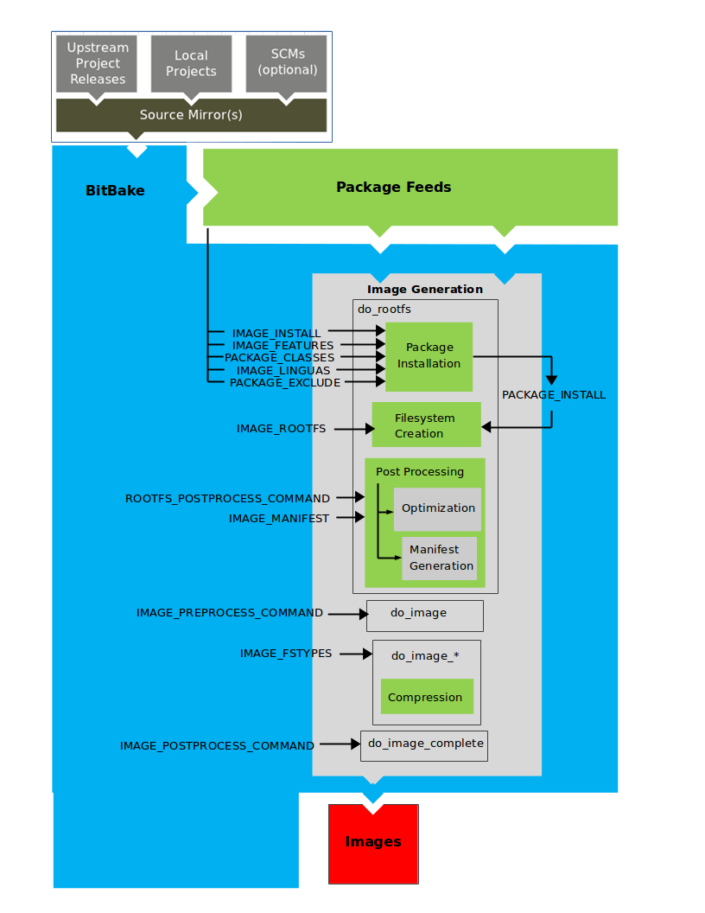 |
The image generation process consists of several stages and
depends on several tasks and variables.
The
do_rootfs
task creates the root filesystem (file and directory structure)
for an image.
This task uses several key variables to help create the list
of packages to actually install:
IMAGE_INSTALL:
Lists out the base set of packages to install from
the Package Feeds area.
PACKAGE_EXCLUDE:
Specifies packages that should not be installed.
IMAGE_FEATURES:
Specifies features to include in the image.
Most of these features map to additional packages for
installation.
PACKAGE_CLASSES:
Specifies the package backend to use and consequently
helps determine where to locate packages within the
Package Feeds area.
IMAGE_LINGUAS:
Determines the language(s) for which additional
language support packages are installed.
PACKAGE_INSTALL:
The final list of packages passed to the package manager
for installation into the image.
With
IMAGE_ROOTFS
pointing to the location of the filesystem under construction and
the PACKAGE_INSTALL variable providing the
final list of packages to install, the root file system is
created.
Package installation is under control of the package manager (e.g. dnf/rpm, opkg, or apt/dpkg) regardless of whether or not package management is enabled for the target. At the end of the process, if package management is not enabled for the target, the package manager's data files are deleted from the root filesystem. As part of the final stage of package installation, postinstall scripts that are part of the packages are run. Any scripts that fail to run on the build host are run on the target when the target system is first booted. If you are using a read-only root filesystem, all the post installation scripts must succeed during the package installation phase since the root filesystem is read-only.
The final stages of the do_rootfs task
handle post processing.
Post processing includes creation of a manifest file and
optimizations.
The manifest file (.manifest) resides
in the same directory as the root filesystem image.
This file lists out, line-by-line, the installed packages.
The manifest file is useful for the
testimage
class, for example, to determine whether or not to run
specific tests.
See the
IMAGE_MANIFEST
variable for additional information.
Optimizing processes run across the image include
mklibs, prelink,
and any other post-processing commands as defined by the
ROOTFS_POSTPROCESS_COMMAND
variable.
The mklibs process optimizes the size
of the libraries, while the
prelink process optimizes the dynamic
linking of shared libraries to reduce start up time of
executables.
After the root filesystem is built, processing begins on
the image through the do_image task.
The build system runs any pre-processing commands as defined
by the
IMAGE_PREPROCESS_COMMAND
variable.
This variable specifies a list of functions to call before
the OpenEmbedded build system creates the final image output
files.
The do_image task dynamically creates
other do_image_* tasks as needed, which
include compressing the root filesystem image to reduce the
overall size of the image.
The process turns everything into an image file or a set of
image files.
The formats used for the root filesystem depend on the
IMAGE_FSTYPES
variable.
The final task involved in image creation is the
do_image_complete task.
This task completes the image by applying any image
post processing as defined through the
IMAGE_POSTPROCESS_COMMAND
variable.
The variable specifies a list of functions to call once the
OpenEmbedded build system has created the final image output
files.
The OpenEmbedded build system uses BitBake to generate the Software Development Kit (SDK) installer script for both the standard and extensible SDKs: 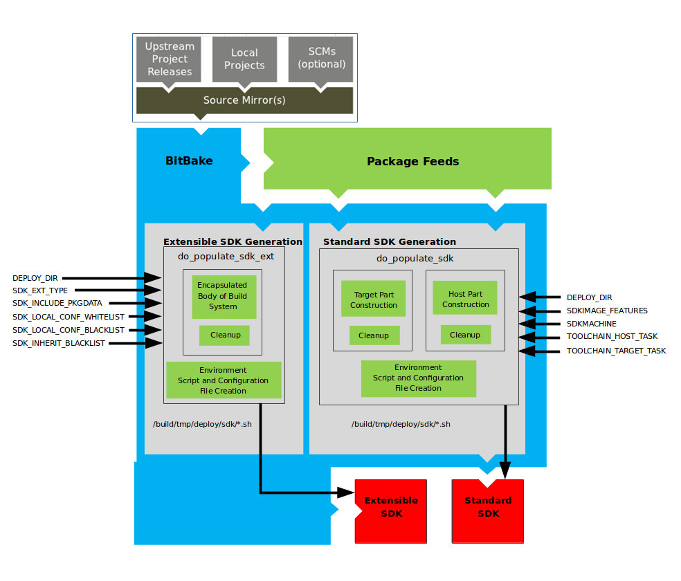
do_populate_sdk
task, see the
"Building an SDK Installer"
section in the Yocto Project Software Development Kit (SDK)
Developer's Guide.
Like image generation, the SDK script process consists of
several stages and depends on many variables.
The do_populate_sdk and
do_populate_sdk_ext tasks use these
key variables to help create the list of packages to actually
install.
For information on the variables listed in the figure, see the
"Application Development SDK"
section.
The do_populate_sdk task helps create
the standard SDK and handles two parts: a target part and a
host part.
The target part is the part built for the target hardware and
includes libraries and headers.
The host part is the part of the SDK that runs on the
SDKMACHINE.
The do_populate_sdk_ext task helps create
the extensible SDK and handles host and target parts
differently than its counter part does for the standard SDK.
For the extensible SDK, the task encapsulates the build system,
which includes everything needed (host and target) for the SDK.
Regardless of the type of SDK being constructed, the
tasks perform some cleanup after which a cross-development
environment setup script and any needed configuration files
are created.
The final output is the Cross-development
toolchain installation script (.sh file),
which includes the environment setup script.
For each task that completes successfully, BitBake writes a
stamp file into the
STAMPS_DIR
directory.
The beginning of the stamp file's filename is determined by the
STAMP
variable, and the end of the name consists of the task's name
and current
input checksum.
BB_SIGNATURE_HANDLER
is "OEBasicHash", which is almost always the case in
current OpenEmbedded.
To determine if a task needs to be rerun, BitBake checks if a stamp file with a matching input checksum exists for the task. If such a stamp file exists, the task's output is assumed to exist and still be valid. If the file does not exist, the task is rerun.
The stamp mechanism is more general than the shared state (sstate) cache mechanism described in the "Setscene Tasks and Shared State" section. BitBake avoids rerunning any task that has a valid stamp file, not just tasks that can be accelerated through the sstate cache.
However, you should realize that stamp files only
serve as a marker that some work has been done and that
these files do not record task output.
The actual task output would usually be somewhere in
TMPDIR
(e.g. in some recipe's
WORKDIR.)
What the sstate cache mechanism adds is a way to cache task
output that can then be shared between build machines.
Since STAMPS_DIR is usually a subdirectory
of TMPDIR, removing
TMPDIR will also remove
STAMPS_DIR, which means tasks will
properly be rerun to repopulate TMPDIR.
If you want some task to always be considered "out of date",
you can mark it with the
nostamp
varflag.
If some other task depends on such a task, then that task will
also always be considered out of date, which might not be what
you want.
For details on how to view information about a task's signature, see the "Viewing Task Variable Dependencies" section.
The description of tasks so far assumes that BitBake needs to build everything and there are no prebuilt objects available. BitBake does support skipping tasks if prebuilt objects are available. These objects are usually made available in the form of a shared state (sstate) cache.
SSTATE_DIR
and
SSTATE_MIRRORS
variables.
The idea of a setscene task (i.e
do_taskname_setscene)
is a version of the task where
instead of building something, BitBake can skip to the end
result and simply place a set of files into specific locations
as needed.
In some cases, it makes sense to have a setscene task variant
(e.g. generating package files in the
do_package_write_* task).
In other cases, it does not make sense, (e.g. a
do_patch
task or
do_unpack
task) since the work involved would be equal to or greater than
the underlying task.
In the OpenEmbedded build system, the common tasks that have
setscene variants are do_package,
do_package_write_*,
do_deploy,
do_packagedata,
and
do_populate_sysroot.
Notice that these are most of the tasks whose output is an
end result.
The OpenEmbedded build system has knowledge of the relationship
between these tasks and other tasks that precede them.
For example, if BitBake runs
do_populate_sysroot_setscene for
something, there is little point in running any of the
do_fetch, do_unpack,
do_patch,
do_configure,
do_compile, and
do_install tasks.
However, if do_package needs to be run,
BitBake would need to run those other tasks.
It becomes more complicated if everything can come from an
sstate cache because some objects are simply not required at
all.
For example, you do not need a compiler or native tools, such
as quilt, if there is nothing to compile or patch.
If the do_package_write_* packages are
available from sstate, BitBake does not need the
do_package task data.
To handle all these complexities, BitBake runs in two phases. The first is the "setscene" stage. During this stage, BitBake first checks the sstate cache for any targets it is planning to build. BitBake does a fast check to see if the object exists rather than a complete download. If nothing exists, the second phase, which is the setscene stage, completes and the main build proceeds.
If objects are found in the sstate cache, the OpenEmbedded build system works backwards from the end targets specified by the user. For example, if an image is being built, the OpenEmbedded build system first looks for the packages needed for that image and the tools needed to construct an image. If those are available, the compiler is not needed. Thus, the compiler is not even downloaded. If something was found to be unavailable, or the download or setscene task fails, the OpenEmbedded build system then tries to install dependencies, such as the compiler, from the cache.
The availability of objects in the sstate cache is handled by
the function specified by the
BB_HASHCHECK_FUNCTION
variable and returns a list of the objects that are available.
The function specified by the
BB_SETSCENE_DEPVALID
variable is the function that determines whether a given
dependency needs to be followed, and whether for any given
relationship the function needs to be passed.
The function returns a True or False value.
Once the setscene process completes, the OpenEmbedded build
system has a list of tasks that it believes it can "accelerate"
and therefore does not need to run.
There is a final function call to the function specified by the
BB_SETSCENE_VERIFY_FUNCTION2
variable that is able to require the tasks to be run that
that the OpenEmbedded build system initially was going to
skip.
The images produced by the OpenEmbedded build system are compressed forms of the root filesystem that are ready to boot on a target device. You can see from the general Yocto Project Development Environment figure that BitBake output, in part, consists of images. This section is going to look more closely at this output:
| 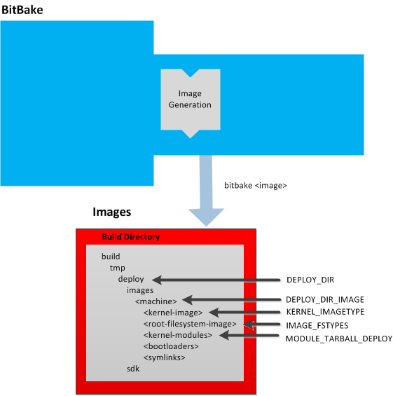 |
For a list of example images that the Yocto Project provides, see the "Images" chapter.
Images are written out to the
Build Directory
inside the tmp/deploy/images/
folder as shown in the figure.
This folder contains any files expected to be loaded on the
target device.
The
machine/DEPLOY_DIR
variable points to the deploy directory,
while the
DEPLOY_DIR_IMAGE
variable points to the appropriate directory containing images for
the current configuration.
kernel-imageKERNEL_IMAGETYPE
variable setting determines the naming scheme for the
kernel image file.
Depending on that variable, the file could begin with
a variety of naming strings.
The deploy/images/
directory can contain multiple image files for the
machine.machine
root-filesystem-image*.ext3 or *.bz2
files).
The IMAGE_FSTYPES
variable setting determines the root filesystem image
type.
The deploy/images/
directory can contain multiple root filesystems for the
machine.machine
kernel-modulesMODULE_TARBALL_DEPLOY
variable to "0".
The deploy/images/
directory can contain multiple kernel module tarballs
for the machine.machine
bootloadersdeploy/images/
directory can contain multiple bootloaders for the
machine.machine
symlinksdeploy/images/
folder contains
a symbolic link that points to the most recently built file
for each machine.
These links might be useful for external scripts that
need to obtain the latest version of each file.
machine
In the
general Yocto Project Development Environment figure,
the output labeled "Application Development SDK" represents an
SDK.
The SDK generation process differs depending on whether you build
a standard SDK
(e.g. bitbake -c populate_sdk imagename)
or an extensible SDK
(e.g. bitbake -c populate_sdk_ext imagename).
This section is going to take a closer look at this output:
| 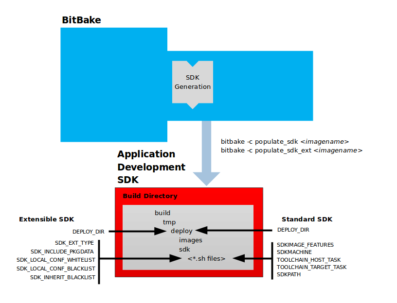 |
The specific form of this output is a self-extracting
SDK installer (*.sh) that, when run,
installs the SDK, which consists of a cross-development
toolchain, a set of libraries and headers, and an SDK
environment setup script.
Running this installer essentially sets up your
cross-development environment.
You can think of the cross-toolchain as the "host"
part because it runs on the SDK machine.
You can think of the libraries and headers as the "target"
part because they are built for the target hardware.
The environment setup script is added so that you can initialize
the environment before using the tools.
The Yocto Project supports several methods by which you can set up this cross-development environment. These methods include downloading pre-built SDK installers or building and installing your own SDK installer.
For background information on cross-development toolchains in the Yocto Project development environment, see the "Cross-Development Toolchain Generation" section. For information on setting up a cross-development environment, see the Yocto Project Software Development Kit (SDK) Developer's Guide.
Once built, the SDK installers are written out to the
deploy/sdk folder inside the
Build Directory
as shown in the figure at the beginning of this section.
Depending on the type of SDK, several variables exist that help
configure these files.
The following list shows the variables associated with a standard
SDK:
DEPLOY_DIR:
Points to the deploy
directory.
SDKMACHINE:
Specifies the architecture of the machine
on which the cross-development tools are run to
create packages for the target hardware.
SDKIMAGE_FEATURES:
Lists the features to include in the "target" part
of the SDK.
TOOLCHAIN_HOST_TASK:
Lists packages that make up the host
part of the SDK (i.e. the part that runs on
the SDKMACHINE).
When you use
bitbake -c populate_sdk
to create the SDK, a set of default packages
apply.
This variable allows you to add more packages.
imagename
TOOLCHAIN_TARGET_TASK:
Lists packages that make up the target part
of the SDK (i.e. the part built for the
target hardware).
SDKPATH:
Defines the default SDK installation path offered by the
installation script.
This next list, shows the variables associated with an extensible SDK:
DEPLOY_DIR:
Points to the deploy directory.
SDK_EXT_TYPE:
Controls whether or not shared state artifacts are copied
into the extensible SDK.
By default, all required shared state artifacts are copied
into the SDK.
SDK_INCLUDE_PKGDATA:
Specifies whether or not packagedata will be included in
the extensible SDK for all recipes in the "world" target.
SDK_INCLUDE_TOOLCHAIN:
Specifies whether or not the toolchain will be included
when building the extensible SDK.
SDK_LOCAL_CONF_WHITELIST:
A list of variables allowed through from the build system
configuration into the extensible SDK configuration.
SDK_LOCAL_CONF_BLACKLIST:
A list of variables not allowed through from the build
system configuration into the extensible SDK configuration.
SDK_INHERIT_BLACKLIST:
A list of classes to remove from the
INHERIT
value globally within the extensible SDK configuration.
Table of Contents
This chapter provides technical details for various parts of the Yocto Project. Currently, topics include Yocto Project components, cross-toolchain generation, shared state (sstate) cache, x32, Wayland support, and Licenses.
The BitBake task executor together with various types of configuration files form the OpenEmbedded Core. This section overviews these components by describing their use and how they interact.
BitBake handles the parsing and execution of the data files. The data itself is of various types:
Recipes: Provides details about particular pieces of software.
Class Data: Abstracts common build information (e.g. how to build a Linux kernel).
Configuration Data: Defines machine-specific settings, policy decisions, and so forth. Configuration data acts as the glue to bind everything together.
BitBake knows how to combine multiple data sources together and refers to each data source as a layer. For information on layers, see the "Understanding and Creating Layers" section of the Yocto Project Development Manual.
Following are some brief details on these core components. For additional information on how these components interact during a build, see the "A Closer Look at the Yocto Project Development Environment" Chapter.
BitBake is the tool at the heart of the OpenEmbedded build system and is responsible for parsing the Metadata, generating a list of tasks from it, and then executing those tasks.
This section briefly introduces BitBake. If you want more information on BitBake, see the BitBake User Manual.
To see a list of the options BitBake supports, use either of the following commands:
$ bitbake -h
$ bitbake --help
The most common usage for BitBake is bitbake , where
packagenamepackagename is the name of the package you want to build
(referred to as the "target" in this manual).
The target often equates to the first part of a recipe's filename
(e.g. "foo" for a recipe named
foo_1.3.0-r0.bb).
So, to process the matchbox-desktop_1.2.3.bb recipe file, you
might type the following:
$ bitbake matchbox-desktop
Several different versions of matchbox-desktop might exist.
BitBake chooses the one selected by the distribution configuration.
You can get more details about how BitBake chooses between different
target versions and providers in the
"Preferences"
section of the BitBake User Manual.
BitBake also tries to execute any dependent tasks first.
So for example, before building matchbox-desktop, BitBake
would build a cross compiler and glibc if they had not already
been built.
A useful BitBake option to consider is the -k or
--continue option.
This option instructs BitBake to try and continue processing the job
as long as possible even after encountering an error.
When an error occurs, the target that
failed and those that depend on it cannot be remade.
However, when you use this option other dependencies can still be
processed.
Files that have the .bb suffix are "recipes"
files.
In general, a recipe contains information about a single piece of
software.
This information includes the location from which to download the
unaltered source, any source patches to be applied to that source
(if needed), which special configuration options to apply,
how to compile the source files, and how to package the compiled
output.
The term "package" is sometimes used to refer to recipes. However,
since the word "package" is used for the packaged output from the OpenEmbedded
build system (i.e. .ipk or .deb files),
this document avoids using the term "package" when referring to recipes.
Class files (.bbclass) contain information that
is useful to share between
Metadata files.
An example is the
autotools
class, which contains common settings for any application that
Autotools uses.
The "Classes" chapter provides
details about classes and how to use them.
The configuration files (.conf) define various configuration variables
that govern the OpenEmbedded build process.
These files fall into several areas that define machine configuration options,
distribution configuration options, compiler tuning options, general common configuration
options, and user configuration options in local.conf, which is found
in the
Build Directory.
The Yocto Project does most of the work for you when it comes to creating cross-development toolchains. This section provides some technical background on how cross-development toolchains are created and used. For more information on toolchains, you can also see the Yocto Project Software Development Kit (SDK) Developer's Guide.
In the Yocto Project development environment, cross-development toolchains are used to build the image and applications that run on the target hardware. With just a few commands, the OpenEmbedded build system creates these necessary toolchains for you.
The following figure shows a high-level build environment regarding toolchain construction and use.
| 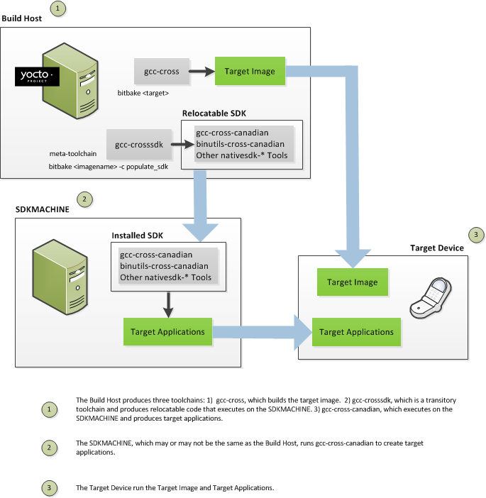 |
Most of the work occurs on the Build Host.
This is the machine used to build images and generally work within the
the Yocto Project environment.
When you run BitBake to create an image, the OpenEmbedded build system
uses the host gcc compiler to bootstrap a
cross-compiler named gcc-cross.
The gcc-cross compiler is what BitBake uses to
compile source files when creating the target image.
You can think of gcc-cross simply as an
automatically generated cross-compiler that is used internally within
BitBake only.
gcc-cross-canadian since this SDK
ships a copy of the OpenEmbedded build system and the sysroot
within it contains gcc-cross.
The chain of events that occurs when gcc-cross is
bootstrapped is as follows:
gcc -> binutils-cross -> gcc-cross-initial -> linux-libc-headers -> glibc-initial -> glibc -> gcc-cross -> gcc-runtime
gcc:
The build host's GNU Compiler Collection (GCC).
binutils-cross:
The bare minimum binary utilities needed in order to run
the gcc-cross-initial phase of the
bootstrap operation.
gcc-cross-initial:
An early stage of the bootstrap process for creating
the cross-compiler.
This stage builds enough of the gcc-cross,
the C library, and other pieces needed to finish building the
final cross-compiler in later stages.
This tool is a "native" package (i.e. it is designed to run on
the build host).
linux-libc-headers:
Headers needed for the cross-compiler.
glibc-initial:
An initial version of the Embedded GLIBC needed to bootstrap
glibc.
gcc-cross:
The final stage of the bootstrap process for the
cross-compiler.
This stage results in the actual cross-compiler that
BitBake uses when it builds an image for a targeted
device.
gcc-cross.
This tool is also a "native" package (i.e. it is designed to run on the build host).
gcc-runtime:
Runtime libraries resulting from the toolchain bootstrapping
process.
This tool produces a binary that consists of the
runtime libraries need for the targeted device.
You can use the OpenEmbedded build system to build an installer for
the relocatable SDK used to develop applications.
When you run the installer, it installs the toolchain, which contains
the development tools (e.g., the
gcc-cross-canadian),
binutils-cross-canadian, and other
nativesdk-* tools,
which are tools native to the SDK (i.e. native to
SDK_ARCH),
you need to cross-compile and test your software.
The figure shows the commands you use to easily build out this
toolchain.
This cross-development toolchain is built to execute on the
SDKMACHINE,
which might or might not be the same
machine as the Build Host.
Here is the bootstrap process for the relocatable toolchain:
gcc -> binutils-crosssdk -> gcc-crosssdk-initial -> linux-libc-headers ->
glibc-initial -> nativesdk-glibc -> gcc-crosssdk -> gcc-cross-canadian
gcc:
The build host's GNU Compiler Collection (GCC).
binutils-crosssdk:
The bare minimum binary utilities needed in order to run
the gcc-crosssdk-initial phase of the
bootstrap operation.
gcc-crosssdk-initial:
An early stage of the bootstrap process for creating
the cross-compiler.
This stage builds enough of the
gcc-crosssdk and supporting pieces so that
the final stage of the bootstrap process can produce the
finished cross-compiler.
This tool is a "native" binary that runs on the build host.
linux-libc-headers:
Headers needed for the cross-compiler.
glibc-initial:
An initial version of the Embedded GLIBC needed to bootstrap
nativesdk-glibc.
nativesdk-glibc:
The Embedded GLIBC needed to bootstrap the
gcc-crosssdk.
gcc-crosssdk:
The final stage of the bootstrap process for the
relocatable cross-compiler.
The gcc-crosssdk is a transitory compiler
and never leaves the build host.
Its purpose is to help in the bootstrap process to create the
eventual relocatable gcc-cross-canadian
compiler, which is relocatable.
This tool is also a "native" package (i.e. it is
designed to run on the build host).
gcc-cross-canadian:
The final relocatable cross-compiler.
When run on the
SDKMACHINE,
this tool
produces executable code that runs on the target device.
Only one cross-canadian compiler is produced per architecture
since they can be targeted at different processor optimizations
using configurations passed to the compiler through the
compile commands.
This circumvents the need for multiple compilers and thus
reduces the size of the toolchains.
By design, the OpenEmbedded build system builds everything from scratch unless BitBake can determine that parts do not need to be rebuilt. Fundamentally, building from scratch is attractive as it means all parts are built fresh and there is no possibility of stale data causing problems. When developers hit problems, they typically default back to building from scratch so they know the state of things from the start.
Building an image from scratch is both an advantage and a disadvantage to the process. As mentioned in the previous paragraph, building from scratch ensures that everything is current and starts from a known state. However, building from scratch also takes much longer as it generally means rebuilding things that do not necessarily need to be rebuilt.
The Yocto Project implements shared state code that supports incremental builds. The implementation of the shared state code answers the following questions that were fundamental roadblocks within the OpenEmbedded incremental build support system:
What pieces of the system have changed and what pieces have not changed?
How are changed pieces of software removed and replaced?
How are pre-built components that do not need to be rebuilt from scratch used when they are available?
For the first question, the build system detects changes in the "inputs" to a given task by creating a checksum (or signature) of the task's inputs. If the checksum changes, the system assumes the inputs have changed and the task needs to be rerun. For the second question, the shared state (sstate) code tracks which tasks add which output to the build process. This means the output from a given task can be removed, upgraded or otherwise manipulated. The third question is partly addressed by the solution for the second question assuming the build system can fetch the sstate objects from remote locations and install them if they are deemed to be valid.
PR information
as part of the shared state packages.
Consequently, considerations exist that affect maintaining shared
state feeds.
For information on how the OpenEmbedded build system
works with packages and can
track incrementing PR information, see the
"Automatically Incrementing a Binary Package Revision Number"
section.
The rest of this section goes into detail about the overall incremental build architecture, the checksums (signatures), shared state, and some tips and tricks.
When determining what parts of the system need to be built, BitBake
works on a per-task basis rather than a per-recipe basis.
You might wonder why using a per-task basis is preferred over a per-recipe basis.
To help explain, consider having the IPK packaging backend enabled and then switching to DEB.
In this case, the
do_install
and
do_package
task outputs are still valid.
However, with a per-recipe approach, the build would not include the
.deb files.
Consequently, you would have to invalidate the whole build and rerun it.
Rerunning everything is not the best solution.
Also, in this case, the core must be "taught" much about specific tasks.
This methodology does not scale well and does not allow users to easily add new tasks
in layers or as external recipes without touching the packaged-staging core.
The shared state code uses a checksum, which is a unique signature of a task's inputs, to determine if a task needs to be run again. Because it is a change in a task's inputs that triggers a rerun, the process needs to detect all the inputs to a given task. For shell tasks, this turns out to be fairly easy because the build process generates a "run" shell script for each task and it is possible to create a checksum that gives you a good idea of when the task's data changes.
To complicate the problem, there are things that should not be
included in the checksum.
First, there is the actual specific build path of a given task -
the WORKDIR.
It does not matter if the work directory changes because it should
not affect the output for target packages.
Also, the build process has the objective of making native
or cross packages relocatable.
The checksum therefore needs to exclude
WORKDIR.
The simplistic approach for excluding the work directory is to set
WORKDIR to some fixed value and create the
checksum for the "run" script.
Another problem results from the "run" scripts containing functions that might or might not get called. The incremental build solution contains code that figures out dependencies between shell functions. This code is used to prune the "run" scripts down to the minimum set, thereby alleviating this problem and making the "run" scripts much more readable as a bonus.
So far we have solutions for shell scripts. What about Python tasks? The same approach applies even though these tasks are more difficult. The process needs to figure out what variables a Python function accesses and what functions it calls. Again, the incremental build solution contains code that first figures out the variable and function dependencies, and then creates a checksum for the data used as the input to the task.
Like the WORKDIR case, situations exist where dependencies
should be ignored.
For these cases, you can instruct the build process to ignore a dependency
by using a line like the following:
PACKAGE_ARCHS[vardepsexclude] = "MACHINE"
This example ensures that the
PACKAGE_ARCHS
variable does not
depend on the value of
MACHINE,
even if it does reference it.
Equally, there are cases where we need to add dependencies BitBake is not able to find. You can accomplish this by using a line like the following:
PACKAGE_ARCHS[vardeps] = "MACHINE"
This example explicitly adds the MACHINE variable as a
dependency for PACKAGE_ARCHS.
Consider a case with in-line Python, for example, where BitBake is not
able to figure out dependencies.
When running in debug mode (i.e. using -DDD), BitBake
produces output when it discovers something for which it cannot figure out
dependencies.
The Yocto Project team has currently not managed to cover those dependencies
in detail and is aware of the need to fix this situation.
Thus far, this section has limited discussion to the direct inputs into a task. Information based on direct inputs is referred to as the "basehash" in the code. However, there is still the question of a task's indirect inputs - the things that were already built and present in the Build Directory. The checksum (or signature) for a particular task needs to add the hashes of all the tasks on which the particular task depends. Choosing which dependencies to add is a policy decision. However, the effect is to generate a master checksum that combines the basehash and the hashes of the task's dependencies.
At the code level, there are a variety of ways both the basehash and the dependent task hashes can be influenced. Within the BitBake configuration file, we can give BitBake some extra information to help it construct the basehash. The following statement effectively results in a list of global variable dependency excludes - variables never included in any checksum:
BB_HASHBASE_WHITELIST ?= "TMPDIR FILE PATH PWD BB_TASKHASH BBPATH DL_DIR \
SSTATE_DIR THISDIR FILESEXTRAPATHS FILE_DIRNAME HOME LOGNAME SHELL TERM \
USER FILESPATH STAGING_DIR_HOST STAGING_DIR_TARGET COREBASE PRSERV_HOST \
PRSERV_DUMPDIR PRSERV_DUMPFILE PRSERV_LOCKDOWN PARALLEL_MAKE \
CCACHE_DIR EXTERNAL_TOOLCHAIN CCACHE CCACHE_DISABLE LICENSE_PATH SDKPKGSUFFIX"
The previous example excludes
WORKDIR
since that variable is actually constructed as a path within
TMPDIR, which is on
the whitelist.
The rules for deciding which hashes of dependent tasks to include through
dependency chains are more complex and are generally accomplished with a
Python function.
The code in meta/lib/oe/sstatesig.py shows two examples
of this and also illustrates how you can insert your own policy into the system
if so desired.
This file defines the two basic signature generators OE-Core
uses: "OEBasic" and "OEBasicHash".
By default, there is a dummy "noop" signature handler enabled in BitBake.
This means that behavior is unchanged from previous versions.
OE-Core uses the "OEBasicHash" signature handler by default
through this setting in the bitbake.conf file:
BB_SIGNATURE_HANDLER ?= "OEBasicHash"
The "OEBasicHash" BB_SIGNATURE_HANDLER is the same as the
"OEBasic" version but adds the task hash to the stamp files.
This results in any
Metadata
change that changes the task hash, automatically
causing the task to be run again.
This removes the need to bump PR
values, and changes to Metadata automatically ripple across the build.
It is also worth noting that the end result of these signature generators is to make some dependency and hash information available to the build. This information includes:
BB_BASEHASH_task-taskname:
The base hashes for each task in the recipe.
BB_BASEHASH_filename:taskname:
The base hashes for each dependent task.
BBHASHDEPS_filename:taskname:
The task dependencies for each task.
BB_TASKHASH:
The hash of the currently running task.
Checksums and dependencies, as discussed in the previous section, solve half the problem of supporting a shared state. The other part of the problem is being able to use checksum information during the build and being able to reuse or rebuild specific components.
The
sstate
class is a relatively generic implementation of how to "capture"
a snapshot of a given task.
The idea is that the build process does not care about the source of a task's output.
Output could be freshly built or it could be downloaded and unpacked from
somewhere - the build process does not need to worry about its origin.
There are two types of output, one is just about creating a directory
in WORKDIR.
A good example is the output of either
do_install
or
do_package.
The other type of output occurs when a set of data is merged into a shared directory
tree such as the sysroot.
The Yocto Project team has tried to keep the details of the
implementation hidden in sstate class.
From a user's perspective, adding shared state wrapping to a task
is as simple as this
do_deploy
example taken from the
deploy
class:
DEPLOYDIR = "${WORKDIR}/deploy-${PN}"
SSTATETASKS += "do_deploy"
do_deploy[sstate-inputdirs] = "${DEPLOYDIR}"
do_deploy[sstate-outputdirs] = "${DEPLOY_DIR_IMAGE}"
python do_deploy_setscene () {
sstate_setscene(d)
}
addtask do_deploy_setscene
do_deploy[dirs] = "${DEPLOYDIR} ${B}"
The following list explains the previous example:
Adding "do_deploy" to SSTATETASKS
adds some required sstate-related processing, which is
implemented in the
sstate
class, to before and after the
do_deploy
task.
The
do_deploy[sstate-inputdirs] = "${DEPLOYDIR}"
declares that do_deploy places its
output in ${DEPLOYDIR} when run
normally (i.e. when not using the sstate cache).
This output becomes the input to the shared state cache.
The
do_deploy[sstate-outputdirs] = "${DEPLOY_DIR_IMAGE}"
line causes the contents of the shared state cache to be
copied to ${DEPLOY_DIR_IMAGE}.
do_deploy is not already in
the shared state cache or if its input checksum
(signature) has changed from when the output was
cached, the task will be run to populate the shared
state cache, after which the contents of the shared
state cache is copied to
${DEPLOY_DIR_IMAGE}.
If do_deploy is in the shared
state cache and its signature indicates that the
cached output is still valid (i.e. if no
relevant task inputs have changed), then the contents
of the shared state cache will be copied directly to
${DEPLOY_DIR_IMAGE} by the
do_deploy_setscene task instead,
skipping the do_deploy task.
The following task definition is glue logic needed to make the previous settings effective:
python do_deploy_setscene () {
sstate_setscene(d)
}
addtask do_deploy_setscene
sstate_setscene() takes the flags
above as input and accelerates the
do_deploy task through the
shared state cache if possible.
If the task was accelerated,
sstate_setscene() returns True.
Otherwise, it returns False, and the normal
do_deploy task runs.
For more information, see the
"setscene"
section in the BitBake User Manual.
The do_deploy[dirs] = "${DEPLOYDIR} ${B}"
line creates ${DEPLOYDIR} and
${B} before the
do_deploy task runs, and also sets
the current working directory of
do_deploy to
${B}.
For more information, see the
"Variable Flags"
section in the BitBake User Manual.
sstate-inputdirs and
sstate-outputdirs would be the
same, you can use
sstate-plaindirs.
For example, to preserve the
${PKGD} and
${PKGDEST} output from the
do_package
task, use the following:
do_package[sstate-plaindirs] = "${PKGD} ${PKGDEST}"
sstate-inputdirs and
sstate-outputdirs can also be used
with multiple directories.
For example, the following declares
PKGDESTWORK and
SHLIBWORK as shared state
input directories, which populates the shared state
cache, and PKGDATA_DIR and
SHLIBSDIR as the corresponding
shared state output directories:
do_package[sstate-inputdirs] = "${PKGDESTWORK} ${SHLIBSWORKDIR}"
do_package[sstate-outputdirs] = "${PKGDATA_DIR} ${SHLIBSDIR}"
These methods also include the ability to take a lockfile when manipulating shared state directory structures, for cases where file additions or removals are sensitive:
do_package[sstate-lockfile] = "${PACKAGELOCK}"
Behind the scenes, the shared state code works by looking in
SSTATE_DIR and
SSTATE_MIRRORS
for shared state files.
Here is an example:
SSTATE_MIRRORS ?= "\
file://.* http://someserver.tld/share/sstate/PATH;downloadfilename=PATH \n \
file://.* file:///some/local/dir/sstate/PATH"
SSTATE_DIR) is
organized into two-character subdirectories, where the subdirectory
names are based on the first two characters of the hash.
If the shared state directory structure for a mirror has the
same structure as SSTATE_DIR, you must
specify "PATH" as part of the URI to enable the build system
to map to the appropriate subdirectory.
The shared state package validity can be detected just by looking at the filename since the filename contains the task checksum (or signature) as described earlier in this section. If a valid shared state package is found, the build process downloads it and uses it to accelerate the task.
The build processes use the *_setscene tasks
for the task acceleration phase.
BitBake goes through this phase before the main execution code and tries
to accelerate any tasks for which it can find shared state packages.
If a shared state package for a task is available, the shared state
package is used.
This means the task and any tasks on which it is dependent are not
executed.
As a real world example, the aim is when building an IPK-based image,
only the
do_package_write_ipk
tasks would have their
shared state packages fetched and extracted.
Since the sysroot is not used, it would never get extracted.
This is another reason why a task-based approach is preferred over a
recipe-based approach, which would have to install the output from every task.
The code in the build system that supports incremental builds is not simple code. This section presents some tips and tricks that help you work around issues related to shared state code.
Seeing what metadata went into creating the input signature
of a shared state (sstate) task can be a useful debugging aid.
This information is available in signature information
(siginfo) files in
SSTATE_DIR.
For information on how to view and interpret information in
siginfo files, see the
"Viewing Task Variable Dependencies"
section.
The OpenEmbedded build system uses checksums and shared state cache to avoid unnecessarily rebuilding tasks. Collectively, this scheme is known as "shared state code."
As with all schemes, this one has some drawbacks.
It is possible that you could make implicit changes to your
code that the checksum calculations do not take into
account.
These implicit changes affect a task's output but do not trigger
the shared state code into rebuilding a recipe.
Consider an example during which a tool changes its output.
Assume that the output of rpmdeps changes.
The result of the change should be that all the
package and
package_write_rpm shared state cache
items become invalid.
However, because the change to the output is
external to the code and therefore implicit,
the associated shared state cache items do not become
invalidated.
In this case, the build process uses the cached items rather
than running the task again.
Obviously, these types of implicit changes can cause problems.
To avoid these problems during the build, you need to understand the effects of any changes you make. Realize that changes you make directly to a function are automatically factored into the checksum calculation. Thus, these explicit changes invalidate the associated area of shared state cache. However, you need to be aware of any implicit changes that are not obvious changes to the code and could affect the output of a given task.
When you identify an implicit change, you can easily take steps
to invalidate the cache and force the tasks to run.
The steps you can take are as simple as changing a function's
comments in the source code.
For example, to invalidate package shared state files, change
the comment statements of
do_package
or the comments of one of the functions it calls.
Even though the change is purely cosmetic, it causes the
checksum to be recalculated and forces the OpenEmbedded build
system to run the task again.
The OpenEmbedded build system automatically adds common types of
runtime dependencies between packages, which means that you do not
need to explicitly declare the packages using
RDEPENDS.
Three automatic mechanisms exist (shlibdeps,
pcdeps, and depchains) that
handle shared libraries, package configuration (pkg-config) modules,
and -dev and -dbg packages,
respectively.
For other types of runtime dependencies, you must manually declare
the dependencies.
shlibdeps:
During the
do_package
task of each recipe, all shared libraries installed by the
recipe are located.
For each shared library, the package that contains the shared
library is registered as providing the shared library.
More specifically, the package is registered as providing the
soname
of the library.
The resulting shared-library-to-package mapping
is saved globally in
PKGDATA_DIR
by the
do_packagedata
task.
Simultaneously, all executables and shared libraries
installed by the recipe are inspected to see what shared
libraries they link against.
For each shared library dependency that is found,
PKGDATA_DIR is queried to
see if some package (likely from a different recipe) contains
the shared library.
If such a package is found, a runtime dependency is added from
the package that depends on the shared library to the package
that contains the library.
The automatically added runtime dependency also includes
a version restriction.
This version restriction specifies that at least the current
version of the package that provides the shared library must be
used, as if
"package (>= version)"
had been added to
RDEPENDS.
This forces an upgrade of the package containing the shared
library when installing the package that depends on the
library, if needed.
If you want to avoid a package being registered as
providing a particular shared library (e.g. because the library
is for internal use only), then add the library to
PRIVATE_LIBS
inside the package's recipe.
pcdeps:
During the
do_package
task of each recipe, all pkg-config modules
(*.pc files) installed by the recipe are
located.
For each module, the package that contains the module is
registered as providing the module.
The resulting module-to-package mapping is saved globally in
PKGDATA_DIR
by the
do_packagedata
task.
Simultaneously, all pkg-config modules installed by the
recipe are inspected to see what other pkg-config modules they
depend on.
A module is seen as depending on another module if it contains
a "Requires:" line that specifies the other module.
For each module dependency,
PKGDATA_DIR is queried to see if some
package contains the module.
If such a package is found, a runtime dependency is added from
the package that depends on the module to the package that
contains the module.
pcdeps mechanism most often infers
dependencies between -dev packages.
depchains:
If a package foo depends on a package
bar, then foo-dev
and foo-dbg are also made to depend on
bar-dev and bar-dbg,
respectively.
Taking the -dev packages as an example,
the bar-dev package might provide
headers and shared library symlinks needed by
foo-dev, which shows the need
for a dependency between the packages.
The dependencies added by depchains
are in the form of
RRECOMMENDS.
foo-dev also has an
RDEPENDS-style dependency on
foo, because the default value of
RDEPENDS_${PN}-dev (set in
bitbake.conf) includes
"${PN}".
To ensure that the dependency chain is never broken,
-dev and -dbg
packages are always generated by default, even if the packages
turn out to be empty.
See the
ALLOW_EMPTY
variable for more information.
The do_package task depends on the
do_packagedata
task of each recipe in
DEPENDS
through use of a
[deptask]
declaration, which guarantees that the required
shared-library/module-to-package mapping information will be available
when needed as long as DEPENDS has been
correctly set.
Some tasks are easier to implement when allowed to perform certain
operations that are normally reserved for the root user.
For example, the
do_install
task benefits from being able to set the UID and GID of installed files
to arbitrary values.
One approach to allowing tasks to perform root-only operations would be to require BitBake to run as root. However, this method is cumbersome and has security issues. The approach that is actually used is to run tasks that benefit from root privileges in a "fake" root environment. Within this environment, the task and its child processes believe that they are running as the root user, and see an internally consistent view of the filesystem. As long as generating the final output (e.g. a package or an image) does not require root privileges, the fact that some earlier steps ran in a fake root environment does not cause problems.
The capability to run tasks in a fake root environment is known as "fakeroot", which is derived from the BitBake keyword/variable flag that requests a fake root environment for a task. In current versions of the OpenEmbedded build system, the program that implements fakeroot is known as Pseudo.
Pseudo overrides system calls through the
LD_PRELOAD mechanism to give the
illusion of running as root.
To keep track of "fake" file ownership and permissions resulting from
operations that require root permissions, an sqlite3
database is used.
This database is stored in
${WORKDIR}/pseudo/files.db
for individual recipes.
Storing the database in a file as opposed to in memory
gives persistence between tasks, and even between builds.
virtual/fakeroot-native:do_populate_sysroot,
giving the following:
fakeroot do_mytask () {
...
}
do_mytask[depends] += "virtual/fakeroot-native:do_populate_sysroot"
For more information, see the
FAKEROOT*
variables in the BitBake User Manual.
You can also reference this
Pseudo
article.
x32 is a processor-specific Application Binary Interface (psABI) for x86_64. An ABI defines the calling conventions between functions in a processing environment. The interface determines what registers are used and what the sizes are for various C data types.
Some processing environments prefer using 32-bit applications even when running on Intel 64-bit platforms. Consider the i386 psABI, which is a very old 32-bit ABI for Intel 64-bit platforms. The i386 psABI does not provide efficient use and access of the Intel 64-bit processor resources, leaving the system underutilized. Now consider the x86_64 psABI. This ABI is newer and uses 64-bits for data sizes and program pointers. The extra bits increase the footprint size of the programs, libraries, and also increases the memory and file system size requirements. Executing under the x32 psABI enables user programs to utilize CPU and system resources more efficiently while keeping the memory footprint of the applications low. Extra bits are used for registers but not for addressing mechanisms.
This Yocto Project release supports the final specifications of x32 psABI. Support for x32 psABI exists as follows:
You can create packages and images in x32 psABI format on x86_64 architecture targets.
You can successfully build many recipes with the x32 toolchain.
You can create and boot core-image-minimal and
core-image-sato images.
Future Plans for the x32 psABI in the Yocto Project include the following:
Enhance and fix the few remaining recipes so they work with and support x32 toolchains.
Enhance RPM Package Manager (RPM) support for x32 binaries.
Support larger images.
Follow these steps to use the x32 spABI:
Enable the x32 psABI tuning file for x86_64
machines by editing the conf/local.conf like this:
MACHINE = "qemux86-64"
DEFAULTTUNE = "x86-64-x32"
baselib = "${@d.getVar('BASE_LIB_tune-' + (d.getVar('DEFAULTTUNE', True) \
or 'INVALID'), True) or 'lib'}"
#MACHINE = "genericx86"
#DEFAULTTUNE = "core2-64-x32"
As usual, use BitBake to build an image that supports the x32 psABI. Here is an example:
$ bitbake core-image-sato
As usual, run your image using QEMU:
$ runqemu qemux86-64 core-image-sato
Wayland is a computer display server protocol that provides a method for compositing window managers to communicate directly with applications and video hardware and expects them to communicate with input hardware using other libraries. Using Wayland with supporting targets can result in better control over graphics frame rendering than an application might otherwise achieve.
The Yocto Project provides the Wayland protocol libraries and the reference Weston compositor as part of its release. This section describes what you need to do to implement Wayland and use the compositor when building an image for a supporting target.
The Wayland protocol libraries and the reference Weston compositor
ship as integrated packages in the meta layer
of the
Source Directory.
Specifically, you can find the recipes that build both Wayland
and Weston at meta/recipes-graphics/wayland.
You can build both the Wayland and Weston packages for use only with targets that accept the Mesa 3D and Direct Rendering Infrastructure, which is also known as Mesa DRI. This implies that you cannot build and use the packages if your target uses, for example, the Intel® Embedded Media and Graphics Driver (Intel® EMGD) that overrides Mesa DRI.
To enable Wayland, you need to enable it to be built and enable it to be included in the image.
To cause Mesa to build the wayland-egl
platform and Weston to build Wayland with Kernel Mode
Setting
(KMS)
support, include the "wayland" flag in the
DISTRO_FEATURES
statement in your local.conf file:
DISTRO_FEATURES_append = " wayland"
To install the Wayland feature into an image, you must
include the following
CORE_IMAGE_EXTRA_INSTALL
statement in your local.conf file:
CORE_IMAGE_EXTRA_INSTALL += "wayland weston"
To run Weston inside X11, enabling it as described earlier and building a Sato image is sufficient. If you are running your image under Sato, a Weston Launcher appears in the "Utility" category.
Alternatively, you can run Weston through the command-line interpretor (CLI), which is better suited for development work. To run Weston under the CLI, you need to do the following after your image is built:
Run these commands to export
XDG_RUNTIME_DIR:
mkdir -p /tmp/$USER-weston
chmod 0700 /tmp/$USER-weston
export XDG_RUNTIME_DIR=/tmp/$USER-weston
Launch Weston in the shell:
weston
This section describes the mechanism by which the OpenEmbedded build system tracks changes to licensing text. The section also describes how to enable commercially licensed recipes, which by default are disabled.
For information that can help you maintain compliance with various open source licensing during the lifecycle of the product, see the "Maintaining Open Source License Compliance During Your Project's Lifecycle" section in the Yocto Project Development Manual.
The license of an upstream project might change in the future.
In order to prevent these changes going unnoticed, the
LIC_FILES_CHKSUM
variable tracks changes to the license text. The checksums are validated at the end of the
configure step, and if the checksums do not match, the build will fail.
LIC_FILES_CHKSUM Variable¶
The LIC_FILES_CHKSUM
variable contains checksums of the license text in the source
code for the recipe.
Following is an example of how to specify
LIC_FILES_CHKSUM:
LIC_FILES_CHKSUM = "file://COPYING;md5=xxxx \
file://licfile1.txt;beginline=5;endline=29;md5=yyyy \
file://licfile2.txt;endline=50;md5=zzzz \
..."
When using "beginline" and "endline", realize that
line numbering begins with one and not zero.
Also, the included lines are inclusive (i.e. lines
five through and including 29 in the previous
example for licfile1.txt).
When a license check fails, the selected license text is included as part of the QA message. Using this output, you can determine the exact start and finish for the needed license text.
The build system uses the
S variable as
the default directory when searching files listed in
LIC_FILES_CHKSUM.
The previous example employs the default directory.
Consider this next example:
LIC_FILES_CHKSUM = "file://src/ls.c;beginline=5;endline=16;\
md5=bb14ed3c4cda583abc85401304b5cd4e"
LIC_FILES_CHKSUM = "file://${WORKDIR}/license.html;md5=5c94767cedb5d6987c902ac850ded2c6"
The first line locates a file in
${S}/src/ls.c and isolates lines five
through 16 as license text.
The second line refers to a file in
WORKDIR.
Note that LIC_FILES_CHKSUM variable is
mandatory for all recipes, unless the
LICENSE variable is set to "CLOSED".
As mentioned in the previous section, the
LIC_FILES_CHKSUM variable lists all the
important files that contain the license text for the source code.
It is possible to specify a checksum for an entire file, or a specific section of a
file (specified by beginning and ending line numbers with the "beginline" and "endline"
parameters, respectively).
The latter is useful for source files with a license notice header,
README documents, and so forth.
If you do not use the "beginline" parameter, then it is assumed that the text begins on the
first line of the file.
Similarly, if you do not use the "endline" parameter, it is assumed that the license text
ends with the last line of the file.
The "md5" parameter stores the md5 checksum of the license text. If the license text changes in any way as compared to this parameter then a mismatch occurs. This mismatch triggers a build failure and notifies the developer. Notification allows the developer to review and address the license text changes. Also note that if a mismatch occurs during the build, the correct md5 checksum is placed in the build log and can be easily copied to the recipe.
There is no limit to how many files you can specify using the
LIC_FILES_CHKSUM variable.
Generally, however, every project requires a few specifications for license tracking.
Many projects have a "COPYING" file that stores the license information for all the source
code files.
This practice allows you to just track the "COPYING" file as long as it is kept up to date.
By default, the OpenEmbedded build system disables
components that have commercial or other special licensing
requirements.
Such requirements are defined on a
recipe-by-recipe basis through the
LICENSE_FLAGS
variable definition in the affected recipe.
For instance, the
poky/meta/recipes-multimedia/gstreamer/gst-plugins-ugly
recipe contains the following statement:
LICENSE_FLAGS = "commercial"
Here is a slightly more complicated example that contains both an explicit recipe name and version (after variable expansion):
LICENSE_FLAGS = "license_${PN}_${PV}"
In order for a component restricted by a LICENSE_FLAGS
definition to be enabled and included in an image, it
needs to have a matching entry in the global
LICENSE_FLAGS_WHITELIST
variable, which is a variable
typically defined in your local.conf file.
For example, to enable
the poky/meta/recipes-multimedia/gstreamer/gst-plugins-ugly
package, you could add either the string
"commercial_gst-plugins-ugly" or the more general string
"commercial" to LICENSE_FLAGS_WHITELIST.
See the
"License Flag Matching" section
for a full explanation of how LICENSE_FLAGS matching works.
Here is the example:
LICENSE_FLAGS_WHITELIST = "commercial_gst-plugins-ugly"
Likewise, to additionally enable the package built from the recipe containing
LICENSE_FLAGS = "license_${PN}_${PV}", and assuming
that the actual recipe name was emgd_1.10.bb,
the following string would enable that package as well as
the original gst-plugins-ugly package:
LICENSE_FLAGS_WHITELIST = "commercial_gst-plugins-ugly license_emgd_1.10"
As a convenience, you do not need to specify the complete license string in the whitelist for every package. You can use an abbreviated form, which consists of just the first portion or portions of the license string before the initial underscore character or characters. A partial string will match any license that contains the given string as the first portion of its license. For example, the following whitelist string will also match both of the packages previously mentioned as well as any other packages that have licenses starting with "commercial" or "license".
LICENSE_FLAGS_WHITELIST = "commercial license"
License flag matching allows you to control what recipes the
OpenEmbedded build system includes in the build.
Fundamentally, the build system attempts to match
LICENSE_FLAGS
strings found in recipes against
LICENSE_FLAGS_WHITELIST
strings found in the whitelist.
A match causes the build system to include a recipe in the
build, while failure to find a match causes the build system to
exclude a recipe.
In general, license flag matching is simple. However, understanding some concepts will help you correctly and effectively use matching.
Before a flag
defined by a particular recipe is tested against the
contents of the whitelist, the expanded string
_${PN} is appended to the flag.
This expansion makes each LICENSE_FLAGS
value recipe-specific.
After expansion, the string is then matched against the
whitelist.
Thus, specifying
LICENSE_FLAGS = "commercial"
in recipe "foo", for example, results in the string
"commercial_foo".
And, to create a match, that string must appear in the
whitelist.
Judicious use of the LICENSE_FLAGS
strings and the contents of the
LICENSE_FLAGS_WHITELIST variable
allows you a lot of flexibility for including or excluding
recipes based on licensing.
For example, you can broaden the matching capabilities by
using license flags string subsets in the whitelist.
usethispart_1.3,
usethispart_1.4, and so forth).
For example, simply specifying the string "commercial" in
the whitelist matches any expanded
LICENSE_FLAGS definition that starts with
the string "commercial" such as "commercial_foo" and
"commercial_bar", which are the strings the build system
automatically generates for hypothetical recipes named
"foo" and "bar" assuming those recipes simply specify the
following:
LICENSE_FLAGS = "commercial"
Thus, you can choose to exhaustively enumerate each license flag in the whitelist and allow only specific recipes into the image, or you can use a string subset that causes a broader range of matches to allow a range of recipes into the image.
This scheme works even if the
LICENSE_FLAGS string already
has _${PN} appended.
For example, the build system turns the license flag
"commercial_1.2_foo" into "commercial_1.2_foo_foo" and would
match both the general "commercial" and the specific
"commercial_1.2_foo" strings found in the whitelist, as
expected.
Here are some other scenarios:
You can specify a versioned string in the recipe such as "commercial_foo_1.2" in a "foo" recipe. The build system expands this string to "commercial_foo_1.2_foo". Combine this license flag with a whitelist that has the string "commercial" and you match the flag along with any other flag that starts with the string "commercial".
Under the same circumstances, you can use "commercial_foo" in the whitelist and the build system not only matches "commercial_foo_1.2" but also matches any license flag with the string "commercial_foo", regardless of the version.
You can be very specific and use both the package and version parts in the whitelist (e.g. "commercial_foo_1.2") to specifically match a versioned recipe.
Other helpful variables related to commercial
license handling exist and are defined in the
poky/meta/conf/distro/include/default-distrovars.inc file:
COMMERCIAL_AUDIO_PLUGINS ?= ""
COMMERCIAL_VIDEO_PLUGINS ?= ""
If you want to enable these components, you can do so by making sure you have
statements similar to the following
in your local.conf configuration file:
COMMERCIAL_AUDIO_PLUGINS = "gst-plugins-ugly-mad \
gst-plugins-ugly-mpegaudioparse"
COMMERCIAL_VIDEO_PLUGINS = "gst-plugins-ugly-mpeg2dec \
gst-plugins-ugly-mpegstream gst-plugins-bad-mpegvideoparse"
LICENSE_FLAGS_WHITELIST = "commercial_gst-plugins-ugly commercial_gst-plugins-bad commercial_qmmp"
Of course, you could also create a matching whitelist
for those components using the more general "commercial"
in the whitelist, but that would also enable all the
other packages with
LICENSE_FLAGS
containing "commercial", which you may or may not want:
LICENSE_FLAGS_WHITELIST = "commercial"
Specifying audio and video plug-ins as part of the
COMMERCIAL_AUDIO_PLUGINS and
COMMERCIAL_VIDEO_PLUGINS statements
(along with the enabling
LICENSE_FLAGS_WHITELIST) includes the
plug-ins or components into built images, thus adding
support for media formats or components.
Table of Contents
The Yocto Project release process is predictable and consists of both major and minor (point) releases. This brief chapter provides information on how releases are named, their life cycle, and their stability.
The Yocto Project delivers major releases (e.g. 2.3) using a six month cadence roughly timed each April and October of the year. Following are examples of some major YP releases with their codenames also shown. See the "Major Release Codenames" section for information on codenames used with major releases.
2.2 (Morty)
2.1 (Krogoth)
2.0 (Jethro)
While the cadence is never perfect, this timescale facilitates regular releases that have strong QA cycles while not overwhelming users with too many new releases. The cadence is predictable and avoids many major holidays in various geographies.
The Yocto project delivers minor (point) releases on an unscheduled basis and are usually driven by the accumulation of enough significant fixes or enhancements to the associated major release. Following are some example past point releases:
2.1.1
2.1.2
2.2.1
The point release indicates a point in the major release branch where a full QA cycle and release process validates the content of the new branch.
Each major release receives a codename that identifies the release in the Yocto Project Source Repositories. The concept is that branches of Metadata with the same codename are likely to be compatible and thus work together.
Releases are given a nominal release version as well but the codename is used in repositories for this reason. You can find information on Yocto Project releases and codenames at https://wiki.yoctoproject.org/wiki/Releases.
Once released, the release enters the stable release process at which time a person is assigned as the maintainer for that stable release. This maintainer monitors activity for the release by investigating and handling nominated patches and backport activity. Only fixes and enhancements that have first been applied on the "master" branch (i.e. the current, in-development branch) are considered for backporting to a stable release.
Stable release branches have strong maintenance for about a year after their initial release. Should significant issues be found for any release regardless of its age, fixes could be backported to older releases. For issues that are not backported given an older release, Community LTS trees and branches exist where community members share patches for older releases. However, these types of patches do not go through the same release process as do point releases. You can find more information about stable branch maintenance at https://wiki.yoctoproject.org/wiki/Stable_branch_maintenance.
Part of the Yocto Project development and release process is quality assurance through the execution of test strategies. Test strategies provide the Yocto Project team a way to ensure a release is validated. Additionally, because the test strategies are visible to you as a developer, you can validate your projects. This section overviews the available test infrastructure used in the Yocto Project. For information on how to run available tests on your projects, see the "Performing Automated Runtime Testing" section in the Yocto Project Development Manual.
The QA/testing infrastructure is woven into the project to the point where core developers take some of it for granted. The infrastructure consists of the following pieces:
bitbake-selftest:
A standalone command that runs unit tests on key pieces of
BitBake and its fetchers.
sanity.bbclass:
This automatically included class checks the build environment
for missing tools (e.g. gcc) or common
misconfigurations such as
MACHINE
set incorrectly.
insane.bbclass:
This class checks the generated output from builds for sanity.
For example, if building for an ARM target, did the build
produce ARM binaries.
If, for example, the build produced PPC binaries then there
is a problem.
testimage.bbclass:
This class performs runtime testing of images after they are
built.
The tests are usually used with
QEMU
to boot the images and check the combined runtime result
boot operation and functions.
However, the test can also use the IP address of a machine to
test.
ptest:
Runs tests against packages produced during the build for a
given piece of software.
The test allows the packages to be be run within a target
image.
oe-selftest:
Tests combination BitBake invocations.
These tests operate outside the OpenEmbedded build system
itself.
The oe-selftest can run all tests by
default or can run selected tests or test suites.
oe-selftest requires
host packages beyond the "Essential" grouping.
See the
"Required Packages for the Host Development System"
section for more information.
Originally, much of this testing was done manually. However, significant effort has been made to automate the tests so that more people can use them and the Yocto Project development team can run them faster and more efficiently.
The Yocto Project's main Autobuilder
(autobuilder.yoctoproject.org) publicly tests
each Yocto Project release's code in the OE-Core, Poky, and BitBake
repositories.
The testing occurs for both the current state of the
"master" branch and also for submitted patches.
Testing for submitted patches usually occurs in the
"ross/mut" branch in the poky-contrib repository
(i.e. the master-under-test branch) or in the "master-next" branch
in the poky repository.
Testing within these public branches ensures in a publicly visible way that all of the main supposed architectures and recipes in OE-Core successfully build and behave properly.
Various features such as multilib, sub
architectures (e.g. x32,
poky-tiny, musl,
no-x11 and and so forth),
bitbake-selftest, and
oe-selftest are tested as part of
the QA process of a release.
Complete testing and validation for a release takes the Autobuilder
workers several hours.
Finally, in addition to the Autobuilder's tests, the Yocto Project QA team also performs testing on a variety of platforms, which includes actual hardware, to ensure expected results.
Table of Contents
atom-pc Board Support Package (BSP)SRCREV ValuesIMAGE_FEATURES/runudevarchiver Classqemu-nativecore-image-basicCFLAGS Optionsupdate-alternative Providervirtclass OverridesPACKAGECONFIG Options in local.confeglibc 2.19 Replaced with glibc 2.20linux-yocto Kernel Metadata Repository Now Split from SourcegetVar() and
getVarFlag() is Now Mandatorylibexecdir Reverted to ${prefix}/libexecac_cv_sizeof_off_t is No Longer Cached in Site Filestmp/deploy Now Enabled${B} No Longer Default Working Directory for Tasksrunqemu Ported to PythonKERNEL_IMAGE_BASE_NAME no Longer Uses KERNEL_IMAGETYPEThis chapter provides information you can use to migrate work to a newer Yocto Project release. You can find the same information in the release notes for a given release.
Some considerations are not tied to a specific Yocto Project release. This section presents information you should consider when migrating to any new Yocto Project release.
Dealing with Customized Recipes: Issues could arise if you take older recipes that contain customizations and simply copy them forward expecting them to work after you migrate to new Yocto Project metadata. For example, suppose you have a recipe in your layer that is a customized version of a core recipe copied from the earlier release, rather than through the use of an append file. When you migrate to a newer version of Yocto Project, the metadata (e.g. perhaps an include file used by the recipe) could have changed in a way that would break the build. Say, for example, a function is removed from an include file and the customized recipe tries to call that function.
You could "forward-port" all your customizations in your recipe so that everything works for the new release. However, this is not the optimal solution as you would have to repeat this process with each new release if changes occur that give rise to problems.
The better solution (where practical) is to use append
files (*.bbappend) to capture any
customizations you want to make to a recipe.
Doing so, isolates your changes from the main recipe making
them much more manageable.
However, sometimes it is not practical to use an append
file.
A good example of this is when introducing a newer or older
version of a recipe in another layer.
Updating Append Files:
Since append files generally only contain your customizations,
they often do not need to be adjusted for new releases.
However, if the .bbappend file is
specific to a particular version of the recipe (i.e. its
name does not use the % wildcard) and the version of the
recipe to which it is appending has changed, then you will
at a minimum need to rename the append file to match the
name of the recipe file.
A mismatch between an append file and its corresponding
recipe file (.bb) will
trigger an error during parsing.
Depending on the type of customization the append file applies, other incompatibilities might occur when you upgrade. For example, if your append file applies a patch and the recipe to which it is appending is updated to a newer version, the patch might no longer apply. If this is the case and assuming the patch is still needed, you must modify the patch file so that it does apply.
This section provides migration information for moving to the Yocto Project 1.3 Release from the prior release.
Differences include changes for
SSTATE_MIRRORS
and bblayers.conf.
The shared state cache (sstate-cache), as pointed to by
SSTATE_DIR,
by default now has two-character subdirectories to prevent
issues arising from too many files in the same directory.
Also, native sstate-cache packages, which are built to run
on the host system, will go into a subdirectory named using
the distro ID string.
If you copy the newly structured sstate-cache to a mirror
location (either local or remote) and then point to it in
SSTATE_MIRRORS,
you need to append "PATH" to the end of the mirror URL so that
the path used by BitBake before the mirror substitution is
appended to the path used to access the mirror.
Here is an example:
SSTATE_MIRRORS = "file://.* http://someserver.tld/share/sstate/PATH"
The meta-yocto layer consists of two parts
that correspond to the Poky reference distribution and the
reference hardware Board Support Packages (BSPs), respectively:
meta-yocto and
meta-yocto-bsp.
When running BitBake for the first time after upgrading,
your conf/bblayers.conf file will be
updated to handle this change and you will be asked to
re-run or restart for the changes to take effect.
Differences include changes for the following:
Python function whitespace
proto= in SRC_URI
nativesdk
Task recipes
IMAGE_FEATURES
Removed recipes
All Python functions must now use four spaces for indentation.
Previously, an inconsistent mix of spaces and tabs existed,
which made extending these functions using
_append or _prepend
complicated given that Python treats whitespace as
syntactically significant.
If you are defining or extending any Python functions (e.g.
populate_packages, do_unpack,
do_patch and so forth) in custom recipes
or classes, you need to ensure you are using consistent
four-space indentation.
Any use of proto= in
SRC_URI
needs to be changed to protocol=.
In particular, this applies to the following URIs:
svn://
bzr://
hg://
osc://
Other URIs were already using protocol=.
This change improves consistency.
The suffix nativesdk is now implemented
as a prefix, which simplifies a lot of the packaging code for
nativesdk recipes.
All custom nativesdk recipes, which are
relocatable packages that are native to
SDK_ARCH,
and any references need to be updated to use
nativesdk-* instead of
*-nativesdk.
"Task" recipes are now known as "Package groups" and have
been renamed from task-*.bb to
packagegroup-*.bb.
Existing references to the previous task-*
names should work in most cases as there is an automatic
upgrade path for most packages.
However, you should update references in your own recipes and
configurations as they could be removed in future releases.
You should also rename any custom task-*
recipes to packagegroup-*, and change
them to inherit packagegroup instead of
task, as well as taking the opportunity
to remove anything now handled by
packagegroup.bbclass, such as providing
-dev and -dbg
packages, setting
LIC_FILES_CHKSUM,
and so forth.
See the
"packagegroup.bbclass"
section for further details.
Image recipes that previously included "apps-console-core"
in IMAGE_FEATURES
should now include "splash" instead to enable the boot-up
splash screen.
Retaining "apps-console-core" will still include the splash
screen but generates a warning.
The "apps-x11-core" and "apps-x11-games"
IMAGE_FEATURES features have been removed.
The following recipes have been removed. For most of them, it is unlikely that you would have any references to them in your own Metadata. However, you should check your metadata against this list to be sure:
libx11-trim:
Replaced by libx11, which has a negligible
size difference with modern Xorg.
xserver-xorg-lite:
Use xserver-xorg, which has a negligible
size difference when DRI and GLX modules are not installed.
xserver-kdrive:
Effectively unmaintained for many years.
mesa-xlib:
No longer serves any purpose.
galago:
Replaced by telepathy.
gail:
Functionality was integrated into GTK+ 2.13.
eggdbus:
No longer needed.
gcc-*-intermediate:
The build has been restructured to avoid the need for
this step.
libgsmd:
Unmaintained for many years.
Functionality now provided by
ofono instead.
contacts, dates, tasks, eds-tools:
Largely unmaintained PIM application suite.
It has been moved to meta-gnome
in meta-openembedded.
In addition to the previously listed changes, the
meta-demoapps directory has also been removed
because the recipes in it were not being maintained and many
had become obsolete or broken.
Additionally, these recipes were not parsed in the default configuration.
Many of these recipes are already provided in an updated and
maintained form within the OpenEmbedded community layers such as
meta-oe and meta-gnome.
For the remainder, you can now find them in the
meta-extras repository, which is in the
Yocto Project
Source Repositories.
The naming scheme for kernel output binaries has been changed to
now include
PE as part of the
filename:
KERNEL_IMAGE_BASE_NAME ?= "${KERNEL_IMAGETYPE}-${PE}-${PV}-${PR}-${MACHINE}-${DATETIME}"
Because the PE variable is not set by default,
these binary files could result with names that include two dash
characters.
Here is an example:
bzImage--3.10.9+git0+cd502a8814_7144bcc4b8-r0-qemux86-64-20130830085431.bin
This section provides migration information for moving to the Yocto Project 1.4 Release from the prior release.
Differences include the following:
Comment Continuation: If a comment ends with a line continuation (\) character, then the next line must also be a comment. Any instance where this is not the case, now triggers a warning. You must either remove the continuation character, or be sure the next line is a comment.
Package Name Overrides:
The runtime package specific variables
RDEPENDS,
RRECOMMENDS,
RSUGGESTS,
RPROVIDES,
RCONFLICTS,
RREPLACES,
FILES,
ALLOW_EMPTY,
and the pre, post, install, and uninstall script functions
pkg_preinst,
pkg_postinst,
pkg_prerm, and
pkg_postrm should always have a
package name override.
For example, use RDEPENDS_${PN} for
the main package instead of RDEPENDS.
BitBake uses more strict checks when it parses recipes.
Differences include the following:
Shared State Code: The shared state code has been optimized to avoid running unnecessary tasks. For example, the following no longer populates the target sysroot since that is not necessary:
$ bitbake -c rootfs some-image
Instead, the system just needs to extract the output package contents, re-create the packages, and construct the root filesystem. This change is unlikely to cause any problems unless you have missing declared dependencies.
Scanning Directory Names:
When scanning for files in
SRC_URI,
the build system now uses
FILESOVERRIDES
instead of OVERRIDES
for the directory names.
In general, the values previously in
OVERRIDES are now in
FILESOVERRIDES as well.
However, if you relied upon an additional value
you previously added to OVERRIDES,
you might now need to add it to
FILESOVERRIDES unless you are already
adding it through the
MACHINEOVERRIDES
or DISTROOVERRIDES
variables, as appropriate.
For more related changes, see the
"Variables"
section.
A new oe-git-proxy script has been added to
replace previous methods of handling proxies and fetching source
from Git.
See the meta-yocto/conf/site.conf.sample file
for information on how to use this script.
If you have created your own custom
etc/network/interfaces file by creating
an append file for the netbase recipe,
you now need to create an append file for the
init-ifupdown recipe instead, which you can
find in the
Source Directory
at meta/recipes-core/init-ifupdown.
For information on how to use append files, see the
"Using .bbappend Files"
in the Yocto Project Development Manual.
Support for remote debugging with the Eclipse IDE is now
separated into an image feature
(eclipse-debug) that corresponds to the
packagegroup-core-eclipse-debug package group.
Previously, the debugging feature was included through the
tools-debug image feature, which corresponds
to the packagegroup-core-tools-debug
package group.
The following variables have changed:
SANITY_TESTED_DISTROS:
This variable now uses a distribution ID, which is composed
of the host distributor ID followed by the release.
Previously,
SANITY_TESTED_DISTROS
was composed of the description field.
For example, "Ubuntu 12.10" becomes "Ubuntu-12.10".
You do not need to worry about this change if you are not
specifically setting this variable, or if you are
specifically setting it to "".
SRC_URI:
The ${PN},
${PF},
${P},
and FILE_DIRNAME directories have been
dropped from the default value of the
FILESPATH
variable, which is used as the search path for finding files
referred to in
SRC_URI.
If you have a recipe that relied upon these directories,
which would be unusual, then you will need to add the
appropriate paths within the recipe or, alternatively,
rearrange the files.
The most common locations are still covered by
${BP}, ${BPN},
and "files", which all remain in the default value of
FILESPATH.
If runtime package management is enabled and the RPM backend is selected, Smart is now installed for package download, dependency resolution, and upgrades instead of Zypper. For more information on how to use Smart, run the following command on the target:
smart --help
The following recipes were moved from their previous locations because they are no longer used by anything in the OpenEmbedded-Core:
clutter-box2d:
Now resides in the meta-oe layer.
evolution-data-server:
Now resides in the meta-gnome layer.
gthumb:
Now resides in the meta-gnome layer.
gtkhtml2:
Now resides in the meta-oe layer.
gupnp:
Now resides in the meta-multimedia layer.
gypsy:
Now resides in the meta-oe layer.
libcanberra:
Now resides in the meta-gnome layer.
libgdata:
Now resides in the meta-gnome layer.
libmusicbrainz:
Now resides in the meta-multimedia layer.
metacity:
Now resides in the meta-gnome layer.
polkit:
Now resides in the meta-oe layer.
zeroconf:
Now resides in the meta-networking layer.
The following list shows what has been removed or renamed:
evieext:
Removed because it has been removed from
xserver since 2008.
Gtk+ DirectFB: Removed support because upstream Gtk+ no longer supports it as of version 2.18.
libxfontcache / xfontcacheproto:
Removed because they were removed from the Xorg server in 2008.
libxp / libxprintapputil / libxprintutil / printproto:
Removed because the XPrint server was removed from
Xorg in 2008.
libxtrap / xtrapproto:
Removed because their functionality was broken upstream.
linux-yocto 3.0 kernel: Removed with linux-yocto 3.8 kernel being added. The linux-yocto 3.2 and linux-yocto 3.4 kernels remain as part of the release.
lsbsetup:
Removed with functionality now provided by
lsbtest.
matchbox-stroke:
Removed because it was never more than a proof-of-concept.
matchbox-wm-2 / matchbox-theme-sato-2:
Removed because they are not maintained.
However, matchbox-wm and
matchbox-theme-sato are still
provided.
mesa-dri:
Renamed to mesa.
mesa-xlib:
Removed because it was no longer useful.
mutter:
Removed because nothing ever uses it and the recipe is
very old.
orinoco-conf:
Removed because it has become obsolete.
update-modules:
Removed because it is no longer used.
The kernel module postinstall and
postrm scripts can now do the same
task without the use of this script.
web:
Removed because it is not maintained. Superseded by
web-webkit.
xf86bigfontproto:
Removed because upstream it has been disabled by default
since 2007.
Nothing uses xf86bigfontproto.
xf86rushproto:
Removed because its dependency in
xserver was spurious and it was
removed in 2005.
zypper / libzypp / sat-solver:
Removed and been functionally replaced with Smart
(python-smartpm) when RPM packaging
is used and package management is enabled on the target.
This section provides migration information for moving to the Yocto Project 1.5 Release from the prior release.
The OpenEmbedded build system now has some additional requirements on the host system:
Python 2.7.3+
Tar 1.24+
Git 1.7.8+
Patched version of Make if you are using 3.82. Most distributions that provide Make 3.82 use the patched version.
If the Linux distribution you are using on your build host does not provide packages for these, you can install and use the Buildtools tarball, which provides an SDK-like environment containing them.
For more information on this requirement, see the "Required Git, tar, and Python Versions" section.
atom-pc Board Support Package (BSP)¶
The atom-pc hardware reference BSP has been
replaced by a genericx86 BSP.
This BSP is not necessarily guaranteed to work on all x86
hardware, but it will run on a wider range of systems than the
atom-pc did.
genericx86-64 BSP has
been added for 64-bit Atom systems.
The following changes have been made that relate to BitBake:
BitBake now supports a _remove
operator.
The addition of this operator means you will have to
rename any items in recipe space (functions, variables)
whose names currently contain
_remove_ or end with
_remove to avoid unexpected behavior.
BitBake's global method pool has been removed. This method is not particularly useful and led to clashes between recipes containing functions that had the same name.
The "none" server backend has been removed. The "process" server backend has been serving well as the default for a long time now.
The bitbake-runtask script has been
removed.
${P}
and
${PF}
are no longer added to
PROVIDES
by default in bitbake.conf.
These version-specific PROVIDES
items were seldom used.
Attempting to use them could result in two versions being
built simultaneously rather than just one version due to
the way BitBake resolves dependencies.
The following changes have been made to the package QA checks:
If you have customized
ERROR_QA
or WARN_QA
values in your configuration, check that they contain all of
the issues that you wish to be reported.
Previous Yocto Project versions contained a bug that meant
that any item not mentioned in ERROR_QA
or WARN_QA would be treated as a
warning.
Consequently, several important items were not already in
the default value of WARN_QA.
All of the possible QA checks are now documented in the
"insane.bbclass"
section.
An additional QA check has been added to check if
/usr/share/info/dir is being installed.
Your recipe should delete this file within
do_install
if "make install" is installing it.
If you are using the buildhistory class, the check for the
package version going backwards is now controlled using a
standard QA check.
Thus, if you have customized your
ERROR_QA or
WARN_QA values and still wish to have
this check performed, you should add
"version-going-backwards" to your value for one or the
other variables depending on how you wish it to be handled.
See the documented QA checks in the
"insane.bbclass"
section.
The following directory changes exist:
Output SDK installer files are now named to include the
image name and tuning architecture through the
SDK_NAME
variable.
Images and related files are now installed into a directory
that is specific to the machine, instead of a parent
directory containing output files for multiple machines.
The
DEPLOY_DIR_IMAGE
variable continues to point to the directory containing
images for the current
MACHINE
and should be used anywhere there is a need to refer to
this directory.
The runqemu script now uses this
variable to find images and kernel binaries and will use
BitBake to determine the directory.
Alternatively, you can set the
DEPLOY_DIR_IMAGE variable in the
external environment.
When buildhistory is enabled, its output is now written
under the
Build Directory
rather than
TMPDIR.
Doing so makes it easier to delete
TMPDIR and preserve the build history.
Additionally, data for produced SDKs is now split by
IMAGE_NAME.
The pkgdata directory produced as
part of the packaging process has been collapsed into a
single machine-specific directory.
This directory is located under
sysroots and uses a machine-specific
name (i.e.
tmp/sysroots/).
machine/pkgdata
SRCREV Values¶
BitBake will now shorten revisions from Git repositories from the
normal 40 characters down to 10 characters within
SRCPV
for improved usability in path and file names.
This change should be safe within contexts where these revisions
are used because the chances of spatially close collisions
is very low.
Distant collisions are not a major issue in the way
the values are used.
IMAGE_FEATURES¶
The following changes have been made that relate to
IMAGE_FEATURES:
The value of
IMAGE_FEATURES
is now validated to ensure invalid feature items are not
added.
Some users mistakenly add package names to this variable
instead of using
IMAGE_INSTALL
in order to have the package added to the image, which does
not work.
This change is intended to catch those kinds of situations.
Valid IMAGE_FEATURES are drawn from
PACKAGE_GROUP
definitions,
COMPLEMENTARY_GLOB
and a new "validitems" varflag on
IMAGE_FEATURES.
The "validitems" varflag change allows additional features
to be added if they are not provided using the previous
two mechanisms.
The previously deprecated "apps-console-core"
IMAGE_FEATURES item is no longer
supported.
Add "splash" to IMAGE_FEATURES if you
wish to have the splash screen enabled, since this is
all that apps-console-core was doing.
/run¶
The /run directory from the Filesystem
Hierarchy Standard 3.0 has been introduced.
You can find some of the implications for this change
here.
The change also means that recipes that install files to
/var/run must be changed.
You can find a guide on how to make these changes
here.
The image core-image-minimal no longer adds
remove_packaging_data_files to
ROOTFS_POSTPROCESS_COMMAND.
This addition is now handled automatically when "package-management"
is not in
IMAGE_FEATURES.
If you have custom image recipes that make this addition,
you should remove the lines, as they are not needed and might
interfere with correct operation of postinstall scripts.
The
do_rootfs
and other related image
construction tasks are no longer marked as "nostamp".
Consequently, they will only be re-executed when their inputs have
changed.
Previous versions of the OpenEmbedded build system always rebuilt
the image when requested rather when necessary.
The previously deprecated task.bbclass has
now been dropped.
For recipes that previously inherited from this class, you should
rename them from task-* to
packagegroup-* and inherit packagegroup
instead.
For more information, see the
"packagegroup.bbclass"
section.
By default, we now split BusyBox into two binaries:
one that is suid root for those components that need it, and
another for the rest of the components.
Splitting BusyBox allows for optimization that eliminates the
tinylogin recipe as recommended by upstream.
You can disable this split by setting
BUSYBOX_SPLIT_SUID
to "0".
A new automated image testing framework has been added
through the
testimage.bbclass
class.
This framework replaces the older
imagetest-qemu framework.
You can learn more about performing automated image tests in the "Performing Automated Runtime Testing" section.
Following are changes to Build History:
Installed package sizes:
installed-package-sizes.txt for an
image now records the size of the files installed by each
package instead of the size of each compressed package
archive file.
The dependency graphs (depends*.dot)
now use the actual package names instead of replacing
dashes, dots and plus signs with underscores.
The buildhistory-diff and
buildhistory-collect-srcrevs
utilities have improved command-line handling.
Use the --help option for
each utility for more information on the new syntax.
For more information on Build History, see the "Maintaining Build Output Quality" section.
udev¶
Following are changes to udev:
udev no longer brings in
udev-extraconf automatically
through
RRECOMMENDS,
since this was originally intended to be optional.
If you need the extra rules, then add
udev-extraconf to your image.
udev no longer brings in
pciutils-ids or
usbutils-ids through
RRECOMMENDS.
These are not needed by udev itself
and removing them saves around 350KB.
The linux-yocto 3.2 kernel has been
removed.
libtool-nativesdk has been renamed to
nativesdk-libtool.
tinylogin has been removed.
It has been replaced by a suid portion of Busybox.
See the
"BusyBox" section
for more information.
external-python-tarball has been renamed
to buildtools-tarball.
web-webkit has been removed.
It has been functionally replaced by
midori.
imake has been removed.
It is no longer needed by any other recipe.
transfig-native has been removed.
It is no longer needed by any other recipe.
anjuta-remote-run has been removed.
Anjuta IDE integration has not been officially supported for
several releases.
Following is a list of short entries describing other changes:
run-postinsts: Make this generic.
base-files: Remove the unnecessary
media/xxx directories.
alsa-state: Provide an empty
asound.conf by default.
classes/image: Ensure
BAD_RECOMMENDATIONS
supports pre-renamed package names.
classes/rootfs_rpm: Implement
BAD_RECOMMENDATIONS
for RPM.
systemd: Remove
systemd_unitdir if
systemd is not in
DISTRO_FEATURES.
systemd: Remove
init.d dir if
systemd unit file is present and
sysvinit is not a distro feature.
libpam: Deny all services for the
OTHER entries.
image.bbclass: Move
runtime_mapping_rename to avoid
conflict with multilib.
See
YOCTO #4993
in Bugzilla for more information.
linux-dtb: Use kernel build system
to generate the dtb files.
kern-tools: Switch from guilt to
new kgit-s2q tool.
This section provides migration information for moving to the Yocto Project 1.6 Release from the prior release.
archiver Class¶
The
archiver
class has been rewritten and its configuration has been simplified.
For more details on the source archiver, see the
"Maintaining Open Source License Compliance During Your Product's Lifecycle"
section in the Yocto Project Development Manual.
The following packaging changes have been made:
The binutils recipe no longer produces
a binutils-symlinks package.
update-alternatives is now used to
handle the preferred binutils
variant on the target instead.
The tc (traffic control) utilities have been split out of
the main iproute2 package and put
into the iproute2-tc package.
The gtk-engines schemas have been
moved to a dedicated
gtk-engines-schemas package.
The armv7a with thumb package
architecture suffix has changed.
The suffix for these packages with the thumb
optimization enabled is "t2" as it should be.
Use of this suffix was not the case in the 1.5 release.
Architecture names will change within package feeds as a
result.
The following changes have been made to BitBake.
When fetching source from a Git repository using
SRC_URI,
BitBake will now validate the
SRCREV
value against the branch.
You can specify the branch using the following form:
SRC_URI = "git://server.name/repository;branch=branchname"
If you do not specify a branch, BitBake looks in the default "master" branch.
Alternatively, if you need to bypass this check (e.g.
if you are fetching a revision corresponding to a tag that
is not on any branch), you can add ";nobranch=1" to
the end of the URL within SRC_URI.
BitBake had some previously deprecated Python definitions
within its bb module removed.
You should use their sub-module counterparts instead:
bb.MalformedUrl:
Use bb.fetch.MalformedUrl.
bb.encodeurl:
Use bb.fetch.encodeurl.
bb.decodeurl:
Use bb.fetch.decodeurl
bb.mkdirhier:
Use bb.utils.mkdirhier.
bb.movefile:
Use bb.utils.movefile.
bb.copyfile:
Use bb.utils.copyfile.
bb.which:
Use bb.utils.which.
bb.vercmp_string:
Use bb.utils.vercmp_string.
bb.vercmp:
Use bb.utils.vercmp.
The SVK fetcher has been removed from BitBake.
The BitBake console UI will now output errors to
stderr instead of
stdout.
Consequently, if you are piping or redirecting the output of
bitbake to somewhere else, and you wish
to retain the errors, you will need to add
2>&1 (or something similar) to the
end of your bitbake command line.
task-taskname Overrides¶
task-taskname overrides have been
adjusted so that tasks whose names contain underscores have the
underscores replaced by hyphens for the override so that they
now function properly.
For example, the task override for
do_populate_sdk
is task-populate-sdk.
The following variables have changed. For information on the OpenEmbedded build system variables, see the "Variables Glossary" Chapter.
TMPDIR¶
TMPDIR
can no longer be on an NFS mount.
NFS does not offer full POSIX locking and inode consistency
and can cause unexpected issues if used to store
TMPDIR.
The check for this occurs on startup.
If TMPDIR is detected on an NFS mount,
an error occurs.
PRINC¶
The PRINC
variable has been deprecated and triggers a warning if
detected during a build.
For
PR
increments on changes, use the PR service instead.
You can find out more about this service in the
"Working With a PR Service"
section in the Yocto Project Development Manual.
IMAGE_TYPES¶
The "sum.jffs2" option for
IMAGE_TYPES
has been replaced by the "jffs2.sum" option, which fits the
processing order.
COPY_LIC_MANIFEST¶
The
COPY_LIC_MANIFEST
variable must
now be set to "1" rather than any value in order to enable
it.
COPY_LIC_DIRS¶
The
COPY_LIC_DIRS
variable must
now be set to "1" rather than any value in order to enable
it.
PACKAGE_GROUP¶
The
PACKAGE_GROUP
variable has been renamed to
FEATURE_PACKAGES
to more accurately reflect its purpose.
You can still use PACKAGE_GROUP but
the OpenEmbedded build system produces a warning message when
it encounters the variable.
The following variables now expect a semicolon separated list of functions to call and not arbitrary shell commands:
ROOTFS_PREPROCESS_COMMAND
ROOTFS_POSTPROCESS_COMMAND
SDK_POSTPROCESS_COMMAND
POPULATE_SDK_POST_TARGET_COMMAND
POPULATE_SDK_POST_HOST_COMMAND
IMAGE_POSTPROCESS_COMMAND
IMAGE_PREPROCESS_COMMAND
ROOTFS_POSTUNINSTALL_COMMAND
ROOTFS_POSTINSTALL_COMMAND
For migration purposes, you can simply wrap shell commands in a shell function and then call the function. Here is an example:
my_postprocess_function() {
echo "hello" > ${IMAGE_ROOTFS}/hello.txt
}
ROOTFS_POSTPROCESS_COMMAND += "my_postprocess_function; "
Package Tests (ptest) are built but not installed by default.
For information on using Package Tests, see the
"Setting up and running package test (ptest)"
section in the Yocto Project Development Manual.
For information on the ptest class, see the
"ptest.bbclass"
section.
Separate build and source directories have been enabled
by default for selected recipes where it is known to work
(a whitelist) and for all recipes that inherit the
cmake
class.
In future releases the
autotools
class will enable a separate build directory by default as
well.
Recipes building Autotools-based
software that fails to build with a separate build directory
should be changed to inherit from the
autotools-brokensep
class instead of the autotools or
autotools_stageclasses.
qemu-native¶
qemu-native now builds without
SDL-based graphical output support by default.
The following additional lines are needed in your
local.conf to enable it:
PACKAGECONFIG_pn-qemu-native = "sdl"
ASSUME_PROVIDED += "libsdl-native"
local.conf
contains these statements.
Consequently, if you are building a headless system and using
a default local.conf file, you will need
comment these two lines out.
core-image-basic¶
core-image-basic has been renamed to
core-image-full-cmdline.
In addition to core-image-basic being renamed,
packagegroup-core-basic has been renamed to
packagegroup-core-full-cmdline to match.
The top-level LICENSE file has been changed
to better describe the license of the various components of
OE-Core.
However, the licensing itself remains unchanged.
Normally, this change would not cause any side-effects.
However, some recipes point to this file within
LIC_FILES_CHKSUM
(as ${COREBASE}/LICENSE) and thus the
accompanying checksum must be changed from
3f40d7994397109285ec7b81fdeb3b58 to
4d92cd373abda3937c2bc47fbc49d690.
A better alternative is to have
LIC_FILES_CHKSUM point to a file
describing the license that is distributed with the source
that the recipe is building, if possible, rather than pointing
to ${COREBASE}/LICENSE.
CFLAGS Options¶
The "-fpermissive" option has been removed from the default
CFLAGS
value.
You need to take action on individual recipes that fail when
building with this option.
You need to either patch the recipes to fix the issues reported by
the compiler, or you need to add "-fpermissive" to
CFLAGS in the recipes.
Custom image output types, as selected using
IMAGE_FSTYPES,
must declare their dependencies on other image types (if any) using
a new
IMAGE_TYPEDEP
variable.
The do_package_write task has been removed.
The task is no longer needed.
update-alternative Provider¶
The default update-alternatives provider has
been changed from opkg to
opkg-utils.
This change resolves some troublesome circular dependencies.
The runtime package has also been renamed from
update-alternatives-cworth
to update-alternatives-opkg.
virtclass Overrides¶
The virtclass overrides are now deprecated.
Use the equivalent class overrides instead (e.g.
virtclass-native becomes
class-native.)
The following recipes have been removed:
packagegroup-toolset-native -
This recipe is largely unused.
linux-yocto-3.8 -
Support for the Linux yocto 3.8 kernel has been dropped.
Support for the 3.10 and 3.14 kernels have been added
with the linux-yocto-3.10 and
linux-yocto-3.14 recipes.
ocf-linux -
This recipe has been functionally replaced using
cryptodev-linux.
genext2fs -
genext2fs is no longer used by the
build system and is unmaintained upstream.
js -
This provided an ancient version of Mozilla's javascript
engine that is no longer needed.
zaurusd -
The recipe has been moved to the
meta-handheld layer.
eglibc 2.17 -
Replaced by the eglibc 2.19
recipe.
gcc 4.7.2 -
Replaced by the now stable
gcc 4.8.2.
external-sourcery-toolchain -
this recipe is now maintained in the
meta-sourcery layer.
linux-libc-headers-yocto 3.4+git -
Now using version 3.10 of the
linux-libc-headers by default.
meta-toolchain-gmae -
This recipe is obsolete.
packagegroup-core-sdk-gmae -
This recipe is obsolete.
packagegroup-core-standalone-gmae-sdk-target -
This recipe is obsolete.
The following classes have become obsolete and have been removed:
module_strip
pkg_metainfo
pkg_distribute
image-empty
The following reference BSPs changes occurred:
The BeagleBoard
(beagleboard) ARM reference hardware
has been replaced by the BeagleBone
(beaglebone) hardware.
The RouterStation Pro
(routerstationpro) MIPS reference
hardware has been replaced by the EdgeRouter Lite
(edgerouter) hardware.
The previous reference BSPs for the
beagleboard and
routerstationpro machines are still available
in a new meta-yocto-bsp-old layer in the
Source Repositories
at
http://git.yoctoproject.org/cgit/cgit.cgi/meta-yocto-bsp-old/.
This section provides migration information for moving to the Yocto Project 1.7 Release from the prior release.
PACKAGECONFIG Options in local.conf¶
The QEMU recipe now uses a number of
PACKAGECONFIG
options to enable various optional features.
The method used to set defaults for these options means that
existing
local.conf files will need to be be
modified to append to PACKAGECONFIG for
qemu-native and
nativesdk-qemu instead of setting it.
In other words, to enable graphical output for QEMU, you should
now have these lines in local.conf:
PACKAGECONFIG_append_pn-qemu-native = " sdl"
PACKAGECONFIG_append_pn-nativesdk-qemu = " sdl"
The minimum
Git version required
on the build host is now 1.7.8 because the
--list option is now required by
BitBake's Git fetcher.
As always, if your host distribution does not provide a version of
Git that meets this requirement, you can use the
buildtools-tarball that does.
See the
"Required Git, tar, and Python Versions"
section for more information.
The following
autotools
class changes occurred:
A separate build directory is now used by default:
The autotools class has been changed
to use a directory for building
(B),
which is separate from the source directory
(S).
This is commonly referred to as
B != S, or an out-of-tree build.
If the software being built is already capable of
building in a directory separate from the source, you
do not need to do anything.
However, if the software is not capable of being built
in this manner, you will
need to either patch the software so that it can build
separately, or you will need to change the recipe to
inherit the
autotools-brokensep
class instead of the autotools or
autotools_stage classes.
The --foreign option is
no longer passed to automake when
running autoconf:
This option tells automake that a
particular software package does not follow the GNU
standards and therefore should not be expected
to distribute certain files such as
ChangeLog,
AUTHORS, and so forth.
Because the majority of upstream software packages already
tell automake to enable foreign mode
themselves, the option is mostly superfluous.
However, some recipes will need patches for this change.
You can easily make the change by patching
configure.ac so that it passes
"foreign" to AM_INIT_AUTOMAKE().
See
this commit
for an example showing how to make the patch.
Some of the core recipes that package binary configuration scripts
now disable the scripts due to the
scripts previously requiring error-prone path substitution.
Software that links against these libraries using these scripts
should use the much more robust pkg-config
instead.
The list of recipes changed in this version (and their
configuration scripts) is as follows:
directfb (directfb-config)
freetype (freetype-config)
gpgme (gpgme-config)
libassuan (libassuan-config)
libcroco (croco-6.0-config)
libgcrypt (libgcrypt-config)
libgpg-error (gpg-error-config)
libksba (ksba-config)
libpcap (pcap-config)
libpcre (pcre-config)
libpng (libpng-config, libpng16-config)
libsdl (sdl-config)
libusb-compat (libusb-config)
libxml2 (xml2-config)
libxslt (xslt-config)
ncurses (ncurses-config)
neon (neon-config)
npth (npth-config)
pth (pth-config)
taglib (taglib-config)
Additionally, support for pkg-config has been
added to some recipes in the previous list in the rare cases
where the upstream software package does not already provide
it.
eglibc 2.19 Replaced with glibc 2.20¶
Because eglibc and
glibc were already fairly close, this
replacement should not require any significant changes to other
software that links to eglibc.
However, there were a number of minor changes in
glibc 2.20 upstream that could require
patching some software (e.g. the removal of the
_BSD_SOURCE feature test macro).
glibc 2.20 requires version 2.6.32 or greater
of the Linux kernel.
Thus, older kernels will no longer be usable in conjunction with it.
For full details on the changes in glibc 2.20,
see the upstream release notes
here.
The
module_autoload_*
variable is now deprecated and a new
KERNEL_MODULE_AUTOLOAD
variable should be used instead.
Also,
module_conf_*
must now be used in conjunction with a new
KERNEL_MODULE_PROBECONF
variable.
The new variables no longer require you to specify the module name
as part of the variable name.
This change not only simplifies usage but also allows the values
of these variables to be appropriately incorporated into task
signatures and thus trigger the appropriate tasks to re-execute
when changed.
You should replace any references to
module_autoload_* with
KERNEL_MODULE_AUTOLOAD, and add any modules
for which module_conf_* is specified to
KERNEL_MODULE_PROBECONF.
For more information, see the
KERNEL_MODULE_AUTOLOAD
and
KERNEL_MODULE_PROBECONF
variables.
The following changes have occurred to the QA check process:
Additional QA checks file-rdeps
and build-deps have been added in
order to verify that file dependencies are satisfied
(e.g. package contains a script requiring
/bin/bash) and build-time dependencies
are declared, respectively.
For more information, please see the
"QA Error and Warning Messages"
chapter.
Package QA checks are now performed during a new
do_package_qa
task rather than being part of the
do_package
task.
This allows more parallel execution.
This change is unlikely to be an issue except for highly
customized recipes that disable packaging tasks themselves
by marking them as noexec.
For those packages, you will need to disable the
do_package_qa task as well.
Files being overwritten during the
do_populate_sysroot
task now trigger an error instead of a warning.
Recipes should not be overwriting files written to the
sysroot by other recipes.
If you have these types of recipes, you need to alter them
so that they do not overwrite these files.
You might now receive this error after changes in
configuration or metadata resulting in orphaned files
being left in the sysroot.
If you do receive this error, the way to resolve the issue
is to delete your
TMPDIR
or to move it out of the way and then re-start the build.
Anything that has been fully built up to that point and
does not need rebuilding will be restored from the shared
state cache and the rest of the build will be able to
proceed as normal.
The following recipes have been removed:
x-load:
This recipe has been superseded by
U-boot SPL for all Cortex-based TI SoCs.
For legacy boards, the meta-ti
layer, which contains a maintained recipe, should be used
instead.
ubootchart:
This recipe is obsolete.
A bootchart2 recipe has been added
to functionally replace it.
linux-yocto 3.4:
Support for the linux-yocto 3.4 kernel has been dropped.
Support for the 3.10 and 3.14 kernels remains, while
support for version 3.17 has been added.
eglibc has been removed in favor of
glibc.
See the
"eglibc 2.19 Replaced with glibc 2.20"
section for more information.
The following miscellaneous change occurred:
The build history feature now writes
build-id.txt instead of
build-id.
Additionally, build-id.txt
now contains the full build header as printed by
BitBake upon starting the build.
You should manually remove old "build-id" files from your
existing build history repositories to avoid confusion.
For information on the build history feature, see the
"Maintaining Build Output Quality"
section.
This section provides migration information for moving to the Yocto Project 1.8 Release from the prior release.
The following recipes have been removed:
owl-video:
Functionality replaced by gst-player.
gaku:
Functionality replaced by gst-player.
gnome-desktop:
This recipe is now available in
meta-gnome and is no longer needed.
gsettings-desktop-schemas:
This recipe is now available in
meta-gnome and is no longer needed.
python-argparse:
The argparse module is already
provided in the default Python distribution in a
package named python-argparse.
Consequently, the separate
python-argparse recipe is no
longer needed.
telepathy-python, libtelepathy, telepathy-glib, telepathy-idle, telepathy-mission-control:
All these recipes have moved to
meta-oe and are consequently no
longer needed by any recipes in OpenEmbedded-Core.
linux-yocto_3.10 and linux-yocto_3.17:
Support for the linux-yocto 3.10 and 3.17 kernels has been
dropped.
Support for the 3.14 kernel remains, while support for
3.19 kernel has been added.
poky-feed-config-opkg:
This recipe has become obsolete and is no longer needed.
Use distro-feed-config from
meta-oe instead.
libav 0.8.x:
libav 9.x is now used.
sed-native:
No longer needed.
A working version of sed is expected
to be provided by the host distribution.
Proper built-in support for selecting BlueZ 5.x in preference
to the default of 4.x now exists.
To use BlueZ 5.x, simply add "bluez5" to your
DISTRO_FEATURES
value.
If you had previously added append files
(*.bbappend) to make this selection, you can
now remove them.
Additionally, a
bluetooth
class has been added to make selection of the appropriate bluetooth
support within a recipe a little easier.
If you wish to make use of this class in a recipe, add something
such as the following:
inherit bluetooth
PACKAGECONFIG ??= "${@bb.utils.contains('DISTRO_FEATURES', 'bluetooth', '${BLUEZ}', '', d)}
PACKAGECONFIG[bluez4] = "--enable-bluetooth,--disable-bluetooth,bluez4"
PACKAGECONFIG[bluez5] = "--enable-bluez5,--disable-bluez5,bluez5"
The kernel build process was changed to place the source
in a common shared work area and to place build artifacts
separately in the source code tree.
In theory, migration paths have been provided for most common
usages in kernel recipes but this might not work in all cases.
In particular, users need to ensure that
${S} (source files) and
${B} (build artifacts) are used
correctly in functions such as
do_configure
and
do_install.
For kernel recipes that do not inherit from
kernel-yocto or include
linux-yocto.inc, you might wish to
refer to the linux.inc file in the
meta-oe layer for the kinds of changes you
need to make.
For reference, here is the
commit
where the linux.inc file in
meta-oe was updated.
Recipes that rely on the kernel source code and do not inherit
the module classes might need to add explicit dependencies on
the do_shared_workdir kernel task, for example:
do_configure[depends] += "virtual/kernel:do_shared_workdir"
SSL 3.0 is now disabled when building OpenSSL.
Disabling SSL 3.0 avoids any lingering instances of the POODLE
vulnerability.
If you feel you must re-enable SSL 3.0, then you can add an
append file (*.bbappend) for the
openssl recipe to remove "-no-ssl3"
from
EXTRA_OECONF.
gcc's default sysroot and include directories
are now "poisoned".
In other words, the sysroot and include directories are being
redirected to a non-existent location in order to catch when
host directories are being used due to the correct options not
being passed.
This poisoning applies both to the cross-compiler used within the
build and to the cross-compiler produced in the SDK.
If this change causes something in the build to fail, it almost certainly means the various compiler flags and commands are not being passed correctly to the underlying piece of software. In such cases, you need to take corrective steps.
Changes have been made to the
base,
autotools,
and
cmake
classes to clean out generated files when the
do_configure
task needs to be re-executed.
One of the improvements is to attempt to run "make clean" during
the do_configure task if a
Makefile exists.
Some software packages do not provide a working clean target
within their make files.
If you have such recipes, you need to set
CLEANBROKEN
to "1" within the recipe, for example:
CLEANBROKEN = "1"
The following QA Check and Validation Changes have occurred:
Usage of PRINC
previously triggered a warning.
It now triggers an error.
You should remove any remaining usage of
PRINC in any recipe or append file.
An additional QA check has been added to detect usage of
${D} in
FILES
values where
D values
should not be used at all.
The same check ensures that $D is used
in
pkg_preinst/pkg_postinst/pkg_prerm/pkg_postrm
functions instead of ${D}.
S now
needs to be set to a valid value within a recipe.
If S is not set in the recipe, the
directory is not automatically created.
If S does not point to a directory
that exists at the time the
do_unpack
task finishes, a warning will be shown.
LICENSE
is now validated for correct formatting of multiple
licenses.
If the format is invalid (e.g. multiple licenses are
specified with no operators to specify how the multiple
licenses interact), then a warning will be shown.
The following miscellaneous changes have occurred:
The send-error-report script now
expects a "-s" option to be specified before the server
address.
This assumes a server address is being specified.
The oe-pkgdata-util script now
expects a "-p" option to be specified before the
pkgdata directory, which is now
optional.
If the pkgdata directory is not
specified, the script will run BitBake to query
PKGDATA_DIR
from the build environment.
This section provides migration information for moving to the Yocto Project 2.0 Release from the prior release.
The default compiler is now GCC 5.2. This change has required fixes for compilation errors in a number of other recipes.
One important example is a fix for when the Linux kernel freezes at
boot time on ARM when built with GCC 5.
If you are using your own kernel recipe or source tree and
building for ARM, you will likely need to apply this
patch.
The standard linux-yocto kernel source tree
already has a workaround for the same issue.
For further details, see https://gcc.gnu.org/gcc-5/changes.html and the porting guide at https://gcc.gnu.org/gcc-5/porting_to.html.
Alternatively, you can switch back to GCC 4.9 or 4.8 by
setting GCCVERSION in your configuration,
as follows:
GCCVERSION = "4.9%"
Gstreamer 0.10 has been removed in favor of Gstreamer 1.x.
As part of the change, recipes for Gstreamer 0.10 and related
software are now located
in meta-multimedia.
This change results in Qt4 having Phonon and Gstreamer
support in QtWebkit disabled by default.
The following recipes have been moved or removed:
bluez4: The recipe is obsolete and
has been moved due to bluez5
becoming fully integrated.
The bluez4 recipe now resides in
meta-oe.
gamin: The recipe is obsolete and
has been removed.
gnome-icon-theme: The recipe's
functionally has been replaced by
adwaita-icon-theme.
Gstreamer 0.10 Recipes: Recipes for Gstreamer 0.10 have been removed in favor of the recipes for Gstreamer 1.x.
insserv: The recipe is obsolete and
has been removed.
libunique: The recipe is no longer
used and has been moved to meta-oe.
midori: The recipe's functionally
has been replaced by epiphany.
python-gst: The recipe is obsolete
and has been removed since it only contains bindings for
Gstreamer 0.10.
qt-mobility: The recipe is obsolete and
has been removed since it requires
Gstreamer 0.10, which has been
replaced.
subversion: All 1.6.x versions of this
recipe have been removed.
webkit-gtk: The older 1.8.3 version
of this recipe has been removed in favor of
webkitgtk.
The method by which BitBake's datastore handles overrides has
changed.
Overrides are now applied dynamically and
bb.data.update_data() is now a no-op.
Thus, bb.data.update_data() is no longer
required in order to apply the correct overrides.
In practice, this change is unlikely to require any changes to
Metadata.
However, these minor changes in behavior exist:
All potential overrides are now visible in the variable history as seen when you run the following:
$ bitbake -e
d.delVar('VARNAME') and
d.setVar('VARNAME', None)
result in the variable and all of its overrides being
cleared out.
Before the change, only the non-overridden values
were cleared.
The shell versions of the BitBake message functions (i.e.
bbdebug, bbnote,
bbwarn, bbplain,
bberror, and bbfatal)
are now connected through to their BitBake equivalents
bb.debug(), bb.note(),
bb.warn(), bb.plain(),
bb.error(), and
bb.fatal(), respectively.
Thus, those message functions that you would expect to be printed
by the BitBake UI are now actually printed.
In practice, this change means two things:
If you now see messages on the console that you did not
previously see as a result of this change, you might
need to clean up the calls to
bbwarn, bberror,
and so forth.
Or, you might want to simply remove the calls.
The bbfatal message function now
suppresses the full error log in the UI, which means any
calls to bbfatal where you still
wish to see the full error log should be replaced by
die or
bbfatal_log.
The following recipes have had extra
dev/dbg packages removed:
acl
apmd
aspell
attr
augeas
bzip2
cogl
curl
elfutils
gcc-target
libgcc
libtool
libxmu
opkg
pciutils
rpm
sysfsutils
tiff
xz
All of the above recipes now conform to the standard packaging
scheme where a single -dev,
-dbg, and -staticdev
package exists per recipe.
Maintenance tracking data for recipes that was previously part
of meta-yocto has been moved to OE-Core.
The change includes package_regex.inc and
distro_alias.inc, which are typically enabled
when using the
distrodata
class.
Additionally, the contents of
upstream_tracking.inc has now been split out
to the relevant recipes.
Stale files from recipes that no longer exist in the current
configuration are now automatically removed from
sysroot as well as removed from
any other place managed by shared state.
This automatic cleanup means that the build system now properly
handles situations such as renaming the build system side of
recipes, removal of layers from
bblayers.conf, and
DISTRO_FEATURES
changes.
Additionally, work directories for old versions of recipes are now pruned. If you wish to disable pruning old work directories, you can set the following variable in your configuration:
SSTATE_PRUNE_OBSOLETEWORKDIR = "0"
linux-yocto Kernel Metadata Repository Now Split from Source¶
The linux-yocto tree has up to now been a
combined set of kernel changes and configuration (meta) data
carried in a single tree.
While this format is effective at keeping kernel configuration and
source modifications synchronized, it is not always obvious to
developers how to manipulate the Metadata as compared to the
source.
Metadata processing has now been removed from the
kernel-yocto
class and the external Metadata repository
yocto-kernel-cache, which has always been used
to seed the linux-yocto "meta" branch.
This separate linux-yocto cache repository
is now the primary location for this data.
Due to this change, linux-yocto is no longer
able to process combined trees.
Thus, if you need to have your own combined kernel repository,
you must do the split there as well and update your recipes
accordingly.
See the meta/recipes-kernel/linux/linux-yocto_4.1.bb
recipe for an example.
The following QA checks have been added:
Added a "host-user-contaminated" check for ownership
issues for packaged files outside of
/home.
The check looks for files that are incorrectly owned by the
user that ran BitBake instead of owned by a valid user in
the target system.
Added an "invalid-chars" check for invalid (non-UTF8)
characters in recipe metadata variable values
(i.e.
DESCRIPTION,
SUMMARY,
LICENSE,
and
SECTION).
Some package managers do not support these characters.
Added an "invalid-packageconfig" check for any options
specified in
PACKAGECONFIG
that do not match any PACKAGECONFIG
option defined for the recipe.
These additional changes exist:
gtk-update-icon-cache has been
renamed to gtk-icon-utils.
The tools-profile
IMAGE_FEATURES
item as well as its corresponding packagegroup and
packagegroup-core-tools-profile no
longer bring in oprofile.
Bringing in oprofile was originally
added to aid compilation on resource-constrained
targets.
However, this aid has not been widely used and is not
likely to be used going forward due to the more powerful
target platforms and the existence of better
cross-compilation tools.
The
IMAGE_FSTYPES
variable's default value now specifies
ext4 instead of
ext3.
All support for the PRINC
variable has been removed.
The packagegroup-core-full-cmdline
packagegroup no longer brings in
lighttpd due to the fact that
bringing in lighttpd is not really in
line with the packagegroup's purpose, which is to add full
versions of command-line tools that by default are
provided by busybox.
This section provides migration information for moving to the Yocto Project 2.1 Release from the prior release.
Variable expressions, such as
${VARNAME}
no longer expand automatically within Python functions.
Suppressing expansion was done to allow Python functions to
construct shell scripts or other code for situations in which you
do not want such expressions expanded.
For any existing code that relies on these expansions, you need to
change the expansions to expand the value of individual
variables through d.getVar().
To alternatively expand more complex expressions,
use d.expand().
The convention for overrides has always been for them to be
lower-case characters.
This practice is now a requirement as BitBake's datastore now
assumes lower-case characters in order to give a slight performance
boost during parsing.
In practical terms, this requirement means that anything that ends
up in
OVERRIDES
must now appear in lower-case characters (e.g. values for
MACHINE, TARGET_ARCH,
DISTRO, and also recipe names if
_pn-recipename
overrides are to be effective).
getVar() and
getVarFlag() is Now Mandatory¶
The expand parameter to getVar() and
getVarFlag() previously defaulted to
False if not specified.
Now, however, no default exists so one must be specified.
You must change any getVar() calls that
do not specify the final expand parameter to calls that do specify
the parameter.
You can run the following sed command at the
base of a layer to make this change:
sed -e 's:\(\.getVar([^,()]*\)):\1, False):g' -i `grep -ril getVar *`
sed -e 's:\(\.getVarFlag([^,()]*, [^,()]*\)):\1, False):g' -i `grep -ril getVarFlag *`
EXTRA_OEMAKE
now defaults to "" instead of "-e MAKEFLAGS=".
Setting EXTRA_OEMAKE to "-e MAKEFLAGS=" by
default was a historical accident that has required many classes
(e.g. autotools, module)
and recipes to override this default in order to work with
sensible build systems.
When upgrading to the release, you must edit any recipe that
relies upon this old default by either setting
EXTRA_OEMAKE back to "-e MAKEFLAGS=" or by
explicitly setting any required variable value overrides using
EXTRA_OEMAKE, which is typically only needed
when a Makefile sets a default value for a variable that is
inappropriate for cross-compilation using the "=" operator rather
than the "?=" operator.
libexecdir Reverted to ${prefix}/libexec¶
The use of ${libdir}/${BPN} as
libexecdir is different as compared to all
other mainstream distributions, which either uses
${prefix}/libexec or
${libdir}.
The use is also contrary to the GNU Coding Standards
(i.e. https://www.gnu.org/prep/standards/html_node/Directory-Variables.html)
that suggest ${prefix}/libexec and also
notes that any package-specific nesting should be done by the
package itself.
Finally, having libexecdir change between
recipes makes it very difficult for different recipes to invoke
binaries that have been installed into
libexecdir.
The Filesystem Hierarchy Standard
(i.e. http://refspecs.linuxfoundation.org/FHS_3.0/fhs/ch04s07.html)
now recognizes the use of ${prefix}/libexec/,
giving distributions the choice between
${prefix}/lib or
${prefix}/libexec without breaking FHS.
ac_cv_sizeof_off_t is No Longer Cached in Site Files¶
For recipes inheriting the
autotools
class, ac_cv_sizeof_off_t is no longer cached
in the site files for autoconf.
The reason for this change is because the
ac_cv_sizeof_off_t value is not necessarily
static per architecture as was previously assumed.
Rather, the value changes based on whether large file support is
enabled.
For most software that uses autoconf, this
change should not be a problem.
However, if you have a recipe that bypasses the standard
do_configure
task from the autotools class and the software
the recipe is building uses a very old version of
autoconf, the recipe might be incapable of
determining the correct size of off_t during
do_configure.
The best course of action is to patch the software as necessary
to allow the default implementation from the
autotools class to work such that
autoreconf succeeds and produces a working
configure script, and to remove the
overridden do_configure task such that the
default implementation does get used.
Previously, for image recipes the
do_rootfs
task assembled the filesystem and then from that filesystem
generated images.
With this Yocto Project release, image generation is split into
separate
do_image_*
tasks for clarity both in operation and in the code.
For most cases, this change does not present any problems.
However, if you have made customizations that directly modify the
do_rootfs task or that mention
do_rootfs, you might need to update those
changes.
In particular, if you had added any tasks after
do_rootfs, you should make edits so that
those tasks are after the
do_image_complete
task rather than after do_rootfs
so that the your added tasks
run at the correct time.
A minor part of this restructuring is that the post-processing
definitions and functions have been moved from the
image
class to the
rootfs-postcommands
class.
Functionally, however, they remain unchanged.
The following recipes have been removed in the 2.1 release:
gcc version 4.8:
Versions 4.9 and 5.3 remain.
qt4:
All support for Qt 4.x has been moved out to a separate
meta-qt4 layer because Qt 4 is no
longer supported upstream.
x11vnc:
Moved to the meta-oe layer.
linux-yocto-3.14:
No longer supported.
linux-yocto-3.19:
No longer supported.
libjpeg:
Replaced by the libjpeg-turbo recipe.
pth:
Became obsolete.
liboil:
Recipe is no longer needed and has been moved to the
meta-multimedia layer.
gtk-theme-torturer:
Recipe is no longer needed and has been moved to the
meta-gnome layer.
gnome-mime-data:
Recipe is no longer needed and has been moved to the
meta-gnome layer.
udev:
Replaced by the eudev recipe for
compatibility when using sysvinit
with newer kernels.
python-pygtk:
Recipe became obsolete.
adt-installer:
Recipe became obsolete.
See the
"ADT Removed"
section for more information.
The following classes have changed:
autotools_stage:
Removed because the
autotools
class now provides its functionality.
Recipes that inherited from
autotools_stage should now inherit
from autotools instead.
boot-directdisk:
Merged into the
image-vm
class.
The boot-directdisk class was rarely
directly used.
Consequently, this change should not cause any issues.
bootimg:
Merged into the
image-live
class.
The bootimg class was rarely
directly used.
Consequently, this change should not cause any issues.
packageinfo:
Removed due to its limited use by the Hob UI, which has
itself been removed.
The following changes have been made to the build system user interface:
Hob GTK+-based UI: Removed because it is unmaintained and based on the outdated GTK+ 2 library. The Toaster web-based UI is much more capable and is actively maintained. See the "Using the Toaster Web Interface" section in the Yocto Project Toaster User Manual for more information on this interface.
"puccho" BitBake UI: Removed because is unmaintained and no longer useful.
The Application Development Toolkit (ADT) has been removed because its functionality almost completely overlapped with the standard SDK and the extensible SDK. For information on these SDKs and how to build and use them, see the Yocto Project Software Development Kit (SDK) Developer's Guide.
The following changes have been made for the Poky distribution:
The meta-yocto layer has been renamed
to meta-poky to better match its
purpose, which is to provide the Poky reference
distribution.
The meta-yocto-bsp layer retains its
original name since it provides reference machines for
the Yocto Project and it is otherwise unrelated to Poky.
References to meta-yocto in your
conf/bblayers.conf should
automatically be updated, so you should not need to change
anything unless you are relying on this naming elsewhere.
The
uninative
class is now enabled by default in Poky.
This class attempts to isolate the build system from the
host distribution's C library and makes re-use of native
shared state artifacts across different host distributions
practical.
With this class enabled, a tarball containing a pre-built
C library is downloaded at the start of the build.
The uninative class is enabled
through the
meta/conf/distro/include/yocto-uninative.inc
file, which for those not using the Poky distribution, can
include to easily enable the same functionality.
Alternatively, if you wish to build your own
uninative tarball, you can do so by
building the uninative-tarball recipe,
making it available to your build machines
(e.g. over HTTP/HTTPS) and setting a similar configuration
as the one set by yocto-uninative.inc.
Static library generation, for most cases, is now disabled by default in the Poky distribution. Disabling this generation saves some build time as well as the size used for build output artifacts.
Disabling this library generation is accomplished
through a
meta/conf/distro/include/no-static-libs.inc,
which for those not using the Poky distribution can
easily include to enable the same functionality.
Any recipe that needs to opt-out of having the "--disable-static" option specified on the configure command line either because it is not a supported option for the configure script or because static libraries are needed should set the following variable:
DISABLE_STATIC = ""
The separate poky-tiny distribution
now uses the musl C library instead of a heavily pared
down glibc.
Using musl results in a smaller
distribution and facilitates much greater maintainability
because musl is designed to have a small footprint.
If you have used poky-tiny and
have customized the glibc
configuration you will need to redo those customizations
with musl when upgrading to the new release.
The following changes have been made to packaging:
The runuser and
mountpoint binaries, which were
previously in the main util-linux
package, have been split out into the
util-linux-runuser and
util-linux-mountpoint packages,
respectively.
The python-elementtree package has
been merged into the python-xml
package.
The following changes have been made to the tuning files:
The "no-thumb-interwork" tuning feature has been dropped from the ARM tune include files. Because interworking is required for ARM EABI, attempting to disable it through a tuning feature no longer makes sense.
The tune-cortexm*.inc and
tune-cortexr4.inc files have been
removed because they are poorly tested.
Until the OpenEmbedded build system officially gains
support for CPUs without an MMU, these tuning files would
probably be better maintained in a separate layer
if needed.
This release supports generation of GLib Introspective Repository (GIR) files through GObject introspection, which is the standard mechanism for accessing GObject-based software from runtime environments. You can enable, disable, and test the generation of this data. See the "Enabling GObject Introspection Support" section for more information.
These additional changes exist:
The minimum Git version has been increased to 1.8.3.1. If your host distribution does not provide a sufficiently recent version, you can install the buildtools, which will provide it. See the "Required Git, tar, and Python Versions" section for more information on the buildtools tarball.
The buggy and incomplete support for the RPM version 4 package manager has been removed. The well-tested and maintained support for RPM version 5 remains.
Previously, the following list of packages were removed
if package-management was not in
IMAGE_FEATURES,
regardless of any dependencies:
update-rc.d
base-passwd
shadow
update-alternatives
run-postinsts
With the Yocto Project 2.1 release, these packages are only
removed if "read-only-rootfs" is in
IMAGE_FEATURES, since they might
still be needed for a read-write image even in the absence
of a package manager (e.g. if users need to be added,
modified, or removed at runtime).
The
devtool modify
command now defaults to extracting the source since that
is most commonly expected.
The "-x" or "--extract" options are now no-ops.
If you wish to provide your own existing source tree, you
will now need to specify either the "-n" or
"--no-extract" options when running
devtool modify.
If the formfactor for a machine is either not supplied or does not specify whether a keyboard is attached, then the default is to assume a keyboard is attached rather than assume no keyboard. This change primarily affects the Sato UI.
The .debug directory packaging is
now automatic.
If your recipe builds software that installs binaries into
directories other than the standard ones, you no longer
need to take care of setting
FILES_${PN}-dbg to pick up the
resulting .debug directories as these
directories are automatically found and added.
Inaccurate disk and CPU percentage data has been dropped
from buildstats output.
This data has been replaced with
getrusage() data and corrected IO
statistics.
You will probably need to update any custom code that reads
the buildstats data.
The
meta/conf/distro/include/package_regex.inc
is now deprecated.
The contents of this file have been moved to individual
recipes.
The v86d/uvesafb has been removed from
the genericx86 and
genericx86-64 reference machines,
which are provided by the
meta-yocto-bsp layer.
Most modern x86 boards do not rely on this file and it only
adds kernel error messages during startup.
If you do still need to support
uvesafb, you can
simply add v86d to your image.
Build sysroot paths are now removed from debug symbol
files.
Removing these paths means that remote GDB using an
unstripped build system sysroot will no longer work
(although this was never documented to work).
The supported method to accomplish something similar is
to set IMAGE_GEN_DEBUGFS to "1",
which will generate a companion debug image
containing unstripped binaries and associated debug
sources alongside the image.
This section provides migration information for moving to the Yocto Project 2.2 Release from the prior release.
The minimum kernel version for the target system and for SDK
is now 3.2.0, due to the upgrade
to glibc 2.24.
Specifically, for AArch64-based targets the version is
3.14.
For Nios II-based targets, the minimum kernel version is 3.19.
OLDEST_KERNEL
to anything down to 2.6.32 if desired.
The way directories are staged in sysroot has been simplified and
introduces the new
SYSROOT_DIRS,
SYSROOT_DIRS_NATIVE,
and
SYSROOT_DIRS_BLACKLIST.
See the
v2 patch series on the OE-Core Mailing List
for additional information.
tmp/deploy Now Enabled¶
Removal of old images and other files in
tmp/deploy/ is now enabled by default due
to a new staging method used for those files.
As a result of this change, the
RM_OLD_IMAGE variable is now redundant.
The following changes for Python occurred:
BitBake requires Python 3.4 or greater.
A UTF-8 locale is required on the build host due to Python 3. Since C.UTF-8 is not a standard, the default is en_US.UTF-8.
The metadata is now required to use Python 3 syntax. For help preparing metadata, see any of the many Python 3 porting guides available. Alternatively, you can reference the conversion commits for Bitbake and you can use OE-Core as a guide for changes. Following are particular areas of interest:
* subprocess command-line pipes needing locale decoding
* the syntax for octal values changed
* the iter*() functions changed name
* iterators now return views, not lists
* changed names for Python modules
Most target Python recipes have now been switched to Python 3. Unfortunately, systems using RPM as a package manager and providing online package-manager support through SMART still require Python 2.
buildtools-tarball Includes Python 3¶
buildtools-tarball now includes Python 3.
uClibc has been removed in favor of musl. Musl has matured, is better maintained, and is compatible with a wider range of applications as compared to uClibc.
${B} No Longer Default Working Directory for Tasks¶
${B}
is no longer the default working directory for tasks.
Consequently, any custom tasks you define now need to either
have the
[dirs] flag set, or the task needs to change into the
appropriate working directory manually (e.g using
cd for a shell task).
[dirs] flag.
runqemu Ported to Python¶
runqemu has been ported to Python and has
changed behavior in some cases.
Previous usage patterns continue to be supported.
The new runqemu is a Python script.
Machine knowledge is no longer hardcoded into
runqemu.
You can choose to use the qemuboot
configuration file to define the BSP's own arguments and to make
it bootable with runqemu.
If you use a configuration file, use the following form:
image-name-machine.qemuboot.conf
The configuration file enables fine-grained tuning of options
passed to QEMU without the runqemu script
hard-coding any knowledge about different machines.
Using a configuration file is particularly convenient when trying
to use QEMU with machines other than the
qemu* machines in OE-Core.
The qemuboot.conf file is generated by the
qemuboot
class when the root filesystem is being build (i.e.
build rootfs).
QEMU boot arguments can be set in BSP's configuration file and
the qemuboot class will save them to
qemuboot.conf.
If you want to use runqemu without a
configuration file, use the following command form:
$ runqemu machine rootfs kernel [options]
Supported machines are as follows:
qemuarm
qemuarm64
qemux86
qemux86-64
qemuppc
qemumips
qemumips64
qemumipsel
qemumips64el
Consider the following example, which uses the
qemux86-64 machine,
provides a root filesystem, provides an image, and uses
the nographic option:
$ runqemu qemux86-64 tmp/deploy/images/qemux86-64/core-image-minimal-qemux86-64.ext4 tmp/deploy/images/qemux86-64/bzImage nographic
Following is a list of variables that can be set in configuration
files such as bsp.conf to enable the BSP
to be booted by runqemu:
QB_SYSTEM_NAME: QEMU name (e.g. "qemu-system-i386")
QB_OPT_APPEND: Options to append to QEMU (e.g. "-show-cursor")
QB_DEFAULT_KERNEL: Default kernel to boot (e.g. "bzImage")
QB_DEFAULT_FSTYPE: Default FSTYPE to boot (e.g. "ext4")
QB_MEM: Memory (e.g. "-m 512")
QB_MACHINE: QEMU machine (e.g. "-machine virt")
QB_CPU: QEMU cpu (e.g. "-cpu qemu32")
QB_CPU_KVM: Similar to QB_CPU except used for kvm support (e.g. "-cpu kvm64")
QB_KERNEL_CMDLINE_APPEND: Options to append to the kernel's -append
option (e.g. "console=ttyS0 console=tty")
QB_DTB: QEMU dtb name
QB_AUDIO_DRV: QEMU audio driver (e.g. "alsa", set it when support audio)
QB_AUDIO_OPT: QEMU audio option (e.g. "-soundhw ac97,es1370"), which is used
when QB_AUDIO_DRV is set.
QB_KERNEL_ROOT: Kernel's root (e.g. /dev/vda)
QB_TAP_OPT: Network option for 'tap' mode (e.g.
"-netdev tap,id=net0,ifname=@TAP@,script=no,downscript=no -device virtio-net-device,netdev=net0").
runqemu will replace "@TAP@" with the one that is used, such as tap0, tap1 ...
QB_SLIRP_OPT: Network option for SLIRP mode (e.g. "-netdev user,id=net0 -device virtio-net-device,netdev=net0")
QB_ROOTFS_OPT: Used as rootfs (e.g.
"-drive id=disk0,file=@ROOTFS@,if=none,format=raw -device virtio-blk-device,drive=disk0").
runqemu will replace "@ROOTFS@" with the one which is used, such as
core-image-minimal-qemuarm64.ext4.
QB_SERIAL_OPT: Serial port (e.g. "-serial mon:stdio")
QB_TCPSERIAL_OPT: tcp serial port option (e.g.
" -device virtio-serial-device -chardev socket,id=virtcon,port=@PORT@,host=127.0.0.1 -device virtconsole,chardev=virtcon"
runqemu will replace "@PORT@" with the port number which is used.
To use runqemu, set
IMAGE_CLASSES
as follows and run runqemu:
runqemu help.
IMAGE_CLASSES += "qemuboot"
The default linker hash style for gcc-cross
is now "sysv" in order to catch recipes that are building software
without using the OpenEmbedded
LDFLAGS.
This change could result in seeing some "No GNU_HASH in the elf
binary" QA issues when building such recipes.
You need to fix these recipes so that they use the expected
LDFLAGS.
Depending on how the software is built, the build system used by
the software (e.g. a Makefile) might need to be patched.
However, sometimes making this fix is as simple as adding the
following to the recipe:
TARGET_CC_ARCH += "${LDFLAGS}"
KERNEL_IMAGE_BASE_NAME no Longer Uses KERNEL_IMAGETYPE¶
The
KERNEL_IMAGE_BASE_NAME
variable no longer uses the
KERNEL_IMAGETYPE
variable to create the image's base name.
Because the OpenEmbedded build system can now build multiple kernel
image types, this part of the kernel image base name as been
removed leaving only the following:
KERNEL_IMAGE_BASE_NAME ?= "${PKGE}-${PKGV}-${PKGR}-${MACHINE}-${DATETIME}
If you have recipes or classes that use
KERNEL_IMAGE_BASE_NAME directly, you might
need to update the references to ensure they continue to work.
The following changes took place for BitBake:
The "goggle" UI and standalone image-writer tool have been removed as they both require GTK+ 2.0 and were not being maintained.
The Perforce fetcher now supports
SRCREV
for specifying the source revision to use, be it
${AUTOREV},
changelist number, p4date, or label, in preference to
separate
SRC_URI
parameters to specify these.
This change is more in-line with how the other fetchers
work for source control systems.
Recipes that fetch from Perforce will need to be updated
to use SRCREV in place of specifying
the source revision within
SRC_URI.
Some of BitBake's internal code structures for accessing the recipe cache needed to be changed to support the new multi-configuration functionality. These changes will affect external tools that use BitBake's tinfoil module. For information on these changes, see the changes made to the scripts supplied with OpenEmbedded-Core: 1 and 2.
The task management code has been rewritten to avoid using
ID indirection in order to improve performance.
This change is unlikely to cause any problems for most
users.
However, the setscene verification function as pointed to
by BB_SETSCENE_VERIFY_FUNCTION
needed to change signature.
Consequently, a new variable named
BB_SETSCENE_VERIFY_FUNCTION2
has been added allowing multiple versions of BitBake
to work with suitably written metadata, which includes
OpenEmbedded-Core and Poky.
Anyone with custom BitBake task scheduler code might also
need to update the code to handle the new structure.
Swabber, a tool that was intended to detect host contamination in the build process, has been removed, as it has been unmaintained and unused for some time and was never particularly effective. The OpenEmbedded build system has since incorporated a number of mechanisms including enhanced QA checks that mean that there is less of a need for such a tool.
The following recipes have been removed:
augeas:
No longer needed and has been moved to
meta-oe.
directfb:
Unmaintained and has been moved to
meta-oe.
gcc:
Removed 4.9 version.
Versions 5.4 and 6.2 are still present.
gnome-doc-utils:
No longer needed.
gtk-doc-stub:
Replaced by gtk-doc.
gtk-engines:
No longer needed and has been moved to
meta-gnome.
gtk-sato-engine:
Became obsolete.
libglade:
No longer needed and has been moved to
meta-oe.
libmad:
Unmaintained and functionally replaced by
libmpg123.
libmad has been moved to
meta-oe.
libowl:
Became obsolete.
libxsettings-client:
No longer needed.
oh-puzzles:
Functionally replaced by
puzzles.
oprofileui:
Became obsolete.
OProfile has been largely supplanted by perf.
packagegroup-core-directfb.bb:
Removed.
core-image-directfb.bb:
Removed.
pointercal:
No longer needed and has been moved to
meta-oe.
python-imaging:
No longer needed and moved to
meta-python
python-pyrex:
No longer needed and moved to
meta-python.
sato-icon-theme:
Became obsolete.
swabber-native:
Swabber has been removed.
See the
entry on Swabber.
tslib:
No longer needed and has been moved to
meta-oe.
uclibc:
Removed in favor of musl.
xtscal:
No longer needed and moved to
meta-oe
The following classes have been removed:
distutils-native-base:
No longer needed.
distutils3-native-base:
No longer needed.
sdl:
Only set
DEPENDS
and
SECTION,
which are better set within the recipe instead.
sip:
Mostly unused.
swabber:
See the
entry on Swabber.
The following minor packaging changes have occurred:
grub:
Split grub-editenv into its own
package.
systemd:
Split container and vm related units into a new package,
systemd-container.
util-linux:
Moved prlimit to a separate
util-linux-prlimit package.
The following miscellaneous changes have occurred:
package_regex.inc:
Removed because the definitions
package_regex.inc previously contained
have been moved to their respective recipes.
Both devtool add and
recipetool create now use a fixed
SRCREV
by default when fetching from a Git repository.
You can override this in either case to use
${AUTOREV}
instead by using the -a or
‐‐autorev command-line
option
distcc:
GTK+ UI is now disabled by default.
packagegroup-core-tools-testapps:
Removed Piglit.
image.bbclass:
Renamed COMPRESS(ION) to CONVERSION.
This change means that
COMPRESSIONTYPES,
COMPRESS_DEPENDS and
COMPRESS_CMD are deprecated in favor
of CONVERSIONTYPES,
CONVERSION_DEPENDS and
CONVERSION_CMD.
The COMPRESS* variable names will
still work in the 2.2 release but metadata that does not
need to be backwards-compatible should be changed to
use the new names as the COMPRESS*
ones will be removed in a future release.
gtk-doc:
A full version of gtk-doc is now
made available.
However, some old software might not be capable of using
the current version of gtk-doc
to build documentation.
You need to change recipes that build such software so that
they explicitly disable building documentation with
gtk-doc.
This section provides migration information for moving to the Yocto Project 2.3 Release from the prior release.
The Open-Embedded build system now uses one sysroot per recipe to resolve long-standing issues with configuration script auto-detection of undeclared dependencies. Consequently, you must explicitly declare all build-time dependencies for your recipe. If you do not declare these dependencies, they are not populated into the sysroot for the recipe.
You can find information on how this works in the
staging
class.
PATH Variable¶
The environment variable PATH is now
sanitized such that symbolic links linking only the binaries
from the host mentioned in the
HOSTTOOLS and
HOSTTOOLS_NONFATAL variables into
their own directory are added to PATH.
Consequently, any native binaries that you need to call should
either be in one of these two variables at the configuration
level.
Alternatively, you can use a native recipe (i.e.
-native) that includes the recipe's
DEPENDS
value.
The previously deprecated
bb.data.getVar(),
bb.data.setVar(), and
related functions have been removed in favor of
d.getVar(),
d.setVar(), and so forth.
You need to fix any references to these old functions.
The package-depends.dot and
pn-depends.dot files as previously generated
using the bitbake -g command have been
removed.
A recipe-depends.dot file
is now generated as a collapsed version of
task-depends.dot instead.
The reason for this change is because
package-depends.dot and
pn-depends.dot largely date back to a time
before task-based execution and do not take into account
task-level dependencies between recipes, which could be
misleading.
The following changes took place for BitBake:
BitBake's graphical dependency explorer UI
depexp was replaced by
taskexp.
Absolute symbolic links (symlinks) within staged files are no longer permitted and now trigger an error.
Older GPLv2 versions of GPLv3 recipes have moved to a
separate meta-gplv2 layer.
The following package management changes took place:
Smart package manager is replaced by Dnf package manager. Smart has become unmaintained upstream, is not ported to Python 3.x. Consequently, Smart needed to be replaced. Dnf is the only feasible candidate.
The change in functionality is that the on-target runtime package management from remote package feeds is now done with a different tool that has a different set of command-line options. If you have scripts that call the tool directly, or use its API, they need to be fixed.
For more information, see the Dnf Documentation.
Rpm 5.x is replaced with Rpm 4.x. This is done for two major reasons:
Dnf is API-incompatible with Rpm 5.x and porting it and maintaining the port is non-trivial.
Rpm 5.x itself is more or less unmaintained both in the upstream and in Yocto Project. Community support does not exist around it and the Yocto Project is the sole remaining user.
Berkeley db 6.x is removed and Berkeley db 5.x becomes the default:
Version 6.x of Berkeley DB has been rejected by the open source community due to its hostile AGPLv3 license. Both Fedora and Debian are sticking with db 5.x. By extension,all the open source projects are still developed and tested with db 5.x
In OE-core, the only thing that was requiring db 6.x was Rpm 5.x. Thus, no reason exists to continue carrying db 6.x in OE-core.
createrepo is replaced with
createrepo_c.
createrepo_c is the current
incarnation of the tool that generates remote repository
metadata.
It is written in C as compared to
createrepo, which is written in
Python.
createrepo_c is faster and is
maintained.
Architecture-independent RPM packages are "noarch" instead of "all".
This change was made because too many places in
dnf/rpm4 stack already make that assumption.
Only the filenames and the architecture tag has changed.
Nothing else has changed in OE-core system, particularly
in the
allarch.bbclass
class.
Signing of remote package feeds using
PACKAGE_FEED_SIGN is not supported.
Table of Contents
build/build/buildhistorybuild/conf/local.confbuild/conf/bblayers.confbuild/conf/sanity_infobuild/downloads/build/sstate-cache/build/tmp/build/tmp/buildstats/build/tmp/cache/build/tmp/deploy/build/tmp/deploy/deb/build/tmp/deploy/rpm/build/tmp/deploy/ipk/build/tmp/deploy/licenses/build/tmp/deploy/images/build/tmp/deploy/sdk/build/tmp/sstate-control/build/tmp/sysroots/build/tmp/stamps/build/tmp/log/build/tmp/work/build/tmp/work/tunearch/recipename/version/build/tmp/work-shared/meta/meta/classes/meta/conf/meta/conf/machine/meta/conf/distro/meta/conf/machine-sdk/meta/files/meta/lib/meta/recipes-bsp/meta/recipes-connectivity/meta/recipes-core/meta/recipes-devtools/meta/recipes-extended/meta/recipes-gnome/meta/recipes-graphics/meta/recipes-kernel/meta/recipes-lsb4/meta/recipes-multimedia/meta/recipes-rt/meta/recipes-sato/meta/recipes-support/meta/site/meta/recipes.txtThe Source Directory consists of several components. Understanding them and knowing where they are located is key to using the Yocto Project well. This chapter describes the Source Directory and gives information about the various files and directories.
For information on how to establish a local Source Directory on your development system, see the "Getting Set Up" section in the Yocto Project Development Manual.
This section describes the top-level components of the Source Directory.
bitbake/¶This directory includes a copy of BitBake for ease of use. The copy usually matches the current stable BitBake release from the BitBake project. BitBake, a Metadata interpreter, reads the Yocto Project Metadata and runs the tasks defined by that data. Failures are usually from the Metadata and not from BitBake itself. Consequently, most users do not need to worry about BitBake.
When you run the bitbake command, the
main BitBake executable, which resides in the
bitbake/bin/ directory, starts.
Sourcing an environment setup script (e.g.
oe-init-build-env
or
oe-init-build-env-memres)
places the scripts and
bitbake/bin directories (in that order) into
the shell's PATH environment variable.
For more information on BitBake, see the BitBake User Manual.
build/¶
This directory contains user configuration files and the output
generated by the OpenEmbedded build system in its standard configuration where
the source tree is combined with the output.
The Build Directory
is created initially when you source
the OpenEmbedded build environment setup script
(i.e.
oe-init-build-env
or
oe-init-build-env-memres).
It is also possible to place output and configuration
files in a directory separate from the
Source Directory
by providing a directory name when you source
the setup script.
For information on separating output from your local
Source Directory files, see the
"oe-init-build-env
and
"oe-init-build-env-memres"
sections.
documentation/¶
This directory holds the source for the Yocto Project documentation
as well as templates and tools that allow you to generate PDF and HTML
versions of the manuals.
Each manual is contained in a sub-folder.
For example, the files for this manual reside in
the ref-manual/ directory.
meta/¶
This directory contains the OpenEmbedded Core metadata.
The directory holds recipes, common classes, and machine
configuration for emulated targets (qemux86,
qemuarm, and so forth.)
meta-poky/¶This directory contains the configuration for the Poky reference distribution.
meta-yocto-bsp/¶This directory contains the Yocto Project reference hardware Board Support Packages (BSPs). For more information on BSPs, see the Yocto Project Board Support Package (BSP) Developer's Guide.
meta-selftest/¶This directory adds additional recipes and append files used by the OpenEmbedded selftests to verify the behavior of the build system.
You do not have to add this layer to your
bblayers.conf file unless you want to run the
selftests.
meta-skeleton/¶This directory contains template recipes for BSP and kernel development.
scripts/¶
This directory contains various integration scripts that implement
extra functionality in the Yocto Project environment (e.g. QEMU scripts).
The oe-init-build-env
and
oe-init-build-env-memres
scripts append this directory to the shell's
PATH environment variable.
The scripts directory has useful scripts that assist in contributing
back to the Yocto Project, such as create-pull-request and
send-pull-request.
oe-init-build-env¶
This script is one of two scripts that set up the OpenEmbedded build
environment.
For information on the other script, see the
"oe-init-build-env-memres"
section.
Running this script with the source command in
a shell makes changes to PATH and sets other
core BitBake variables based on the current working directory.
You need to run an environment setup script before running BitBake
commands.
The script uses other scripts within the
scripts directory to do the bulk of the work.
When you run this script, your Yocto Project environment is set up, a Build Directory is created, your working directory becomes the Build Directory, and you are presented with a list of common BitBake targets. Here is an example:
$ source oe-init-build-env
### Shell environment set up for builds. ###
You can now run 'bitbake <target>'
Common targets are:
core-image-minimal
core-image-sato
meta-toolchain
meta-ide-support
You can also run generated qemu images with a command like 'runqemu qemux86'
The script gets its default list of common targets from the
conf-notes.txt file, which is found in the
meta-poky directory within the
Source Directory.
Should you have custom distributions, it is very easy to modify
this configuration file to include your targets for your
distribution.
See the
"Creating a Custom Template Configuration Directory"
section in the Yocto Project Development Manual for more
information.
By default, running this script without a
Build Directory
argument creates the build directory
in your current working directory.
If you provide a Build Directory argument when you
source the script, you direct the OpenEmbedded
build system to create a Build Directory of your choice.
For example, the following command creates a Build Directory named
mybuilds that is outside of the
Source Directory:
$ source oe-init-build-env ~/mybuilds
The OpenEmbedded build system uses the template configuration
files, which are found by default in the
meta-poky/conf directory in the
Source Directory.
See the
"Creating a Custom Template Configuration Directory"
section in the Yocto Project Development Manual for more
information.
oe-init-build-env script
from a Source Directory that contains spaces in either the filenames
or directory names, the script returns an error indicating no such
file or directory.
Be sure to use a Source Directory free of names containing spaces.
oe-init-build-env-memres¶
This script is one of two scripts that set up the OpenEmbedded
build environment.
Aside from setting up the environment, this script starts a
memory-resident BitBake server.
For information on the other setup script, see the
"oe-init-build-env"
section.
Memory-resident BitBake resides in memory until you specifically remove it using the following BitBake command:
$ bitbake -m
Running this script with the source command in
a shell makes changes to PATH and sets other
core BitBake variables based on the current working directory.
One of these variables is the
BBSERVER
variable, which allows the OpenEmbedded build system to locate
the server that is running BitBake.
You need to run an environment setup script before using BitBake commands. Following is the script syntax:
$ source oe-init-build-env-memres port_number build_dir
Following are some considerations when sourcing this script:
The script uses other scripts within the
scripts directory to do the bulk of
the work.
If you do not provide a port number with the script, the BitBake server starts at a randomly selected port.
The script's parameters are positionally dependent. Consequently, you cannot run the script and provide a Build Directory name without also providing a port number. In other words, the following syntax is illegal:
$ source oe-initbuild-env-memres build_dir
When you run this script, your Yocto Project environment is set up, a Build Directory is created, your working directory becomes the Build Directory, and you are presented with a list of common BitBake targets. Here is an example:
$ source oe-init-build-env-memres
No port specified, using dynamically selected port
### Shell environment set up for builds. ###
You can now run 'bitbake <target>'
Common targets are:
core-image-minimal
core-image-sato
meta-toolchain
meta-ide-support
You can also run generated qemu images with a command like 'runqemu qemux86'
Bitbake server address: 127.0.0.1, server port: 53995
Bitbake server started on demand as needed, use bitbake -m to shut it down
The script gets its default list of common targets from the
conf-notes.txt file, which is found in the
meta-poky directory within the
Source Directory.
Should you have custom distributions, it is very easy to modify
this configuration file to include your targets for your
distribution.
See the
"Creating a Custom Template Configuration Directory"
section in the Yocto Project Development Manual for more
information.
By default, running this script without a
Build Directory
argument creates a build directory named
build.
If you provide a Build Directory argument and port number when you
source the script, the Build Directory is
created using that name.
For example, the following command starts the BitBake server using
port 53995 and creates a Build Directory named
mybuilds that is outside of the
Source Directory:
$ source oe-init-build-env-memres 53995 ~/mybuilds
The oe-init-build-env-memres script starts a
memory resident BitBake server.
This BitBake instance uses the
bitbake-cookerdaemon.log file, which is
located in the Build Directory.
The OpenEmbedded build system uses the template configuration
files, which are found by default in the
meta-poky/conf directory in the
Source Directory.
See the
"Creating a Custom Template Configuration Directory"
section in the Yocto Project Development Manual for more
information.
oe-init-build-env-memres script
from a Source Directory that contains spaces in either the
filenames or directory names, the script returns an error
indicating no such file or directory.
Be sure to use a Source Directory free of names containing
spaces.
LICENSE, README, and README.hardware¶These files are standard top-level files.
build/¶
The OpenEmbedded build system creates the
Build Directory
when you run one of the build environment setup scripts (i.e.
oe-init-build-env
or
oe-init-build-env-memres).
If you do not give the Build Directory a specific name when you run
a setup script, the name defaults to build.
The
TOPDIR variable
points to the Build Directory.
build/buildhistory¶The OpenEmbedded build system creates this directory when you enable the build history feature. The directory tracks build information into image, packages, and SDK subdirectories. For information on the build history feature, see the "Maintaining Build Output Quality" section.
build/conf/local.conf¶
This configuration file contains all the local user configurations
for your build environment.
The local.conf file contains documentation on
the various configuration options.
Any variable set here overrides any variable set elsewhere within
the environment unless that variable is hard-coded within a file
(e.g. by using '=' instead of '?=').
Some variables are hard-coded for various reasons but these
variables are relatively rare.
Edit this file to set the
MACHINE
for which you want to build, which package types you wish to use
(PACKAGE_CLASSES),
and the location from which you want to access downloaded files
(DL_DIR).
If local.conf is not present when you
start the build, the OpenEmbedded build system creates it from
local.conf.sample when
you source the top-level build environment
setup script (i.e.
oe-init-build-env
or
oe-init-build-env-memres).
The source local.conf.sample file used
depends on the $TEMPLATECONF script variable,
which defaults to meta-poky/conf
when you are building from the Yocto Project development
environment and defaults to meta/conf when
you are building from the OpenEmbedded Core environment.
Because the script variable points to the source of the
local.conf.sample file, this implies that
you can configure your build environment from any layer by setting
the variable in the top-level build environment setup script as
follows:
TEMPLATECONF=your_layer/conf
Once the build process gets the sample file, it uses
sed to substitute final
${OEROOT}
values for all ##OEROOT## values.
TEMPLATECONF variable
is used by looking at the
scripts/oe-setup-builddir script in the
Source Directory.
You can find the Yocto Project version of the
local.conf.sample file in the
meta-poky/conf directory.
build/conf/bblayers.conf¶
This configuration file defines
layers,
which are directory trees, traversed (or walked) by BitBake.
The bblayers.conf file uses the
BBLAYERS
variable to list the layers BitBake tries to find.
If bblayers.conf is not present when you
start the build, the OpenEmbedded build system creates it from
bblayers.conf.sample when
you source the top-level build environment
setup script (i.e.
oe-init-build-env
or
oe-init-build-env-memres).
The source bblayers.conf.sample file used
depends on the $TEMPLATECONF script variable,
which defaults to meta-poky/conf
when you are building from the Yocto Project development
environment and defaults to meta/conf when
you are building from the OpenEmbedded Core environment.
Because the script variable points to the source of the
bblayers.conf.sample file, this implies that
you can base your build from any layer by setting the variable in
the top-level build environment setup script as follows:
TEMPLATECONF=your_layer/conf
Once the build process gets the sample file, it uses
sed to substitute final
${OEROOT}
values for all ##OEROOT## values.
TEMPLATECONF variable
scripts/oe-setup-builddir script in the
Source Directory.
You can find the Yocto Project version of the
bblayers.conf.sample file in the
meta-poky/conf directory.
build/conf/sanity_info¶This file indicates the state of the sanity checks and is created during the build.
build/downloads/¶
This directory contains downloaded upstream source tarballs.
You can reuse the directory for multiple builds or move
the directory to another location.
You can control the location of this directory through the
DL_DIR variable.
build/sstate-cache/¶
This directory contains the shared state cache.
You can reuse the directory for multiple builds or move
the directory to another location.
You can control the location of this directory through the
SSTATE_DIR variable.
build/tmp/¶
The OpenEmbedded build system creates and uses this directory
for all the build system's output.
The
TMPDIR
variable points to this directory.
BitBake creates this directory if it does not exist.
As a last resort, to clean up a build and start it from scratch
(other than the downloads), you can remove everything in the
tmp directory or get rid of the
directory completely.
If you do, you should also completely remove the
build/sstate-cache directory.
build/tmp/buildstats/¶This directory stores the build statistics.
build/tmp/cache/¶
When BitBake parses the metadata (recipes and configuration files),
it caches the results in build/tmp/cache/
to speed up future builds.
The results are stored on a per-machine basis.
During subsequent builds, BitBake checks each recipe (together with, for example, any files included or appended to it) to see if they have been modified. Changes can be detected, for example, through file modification time (mtime) changes and hashing of file contents. If no changes to the file are detected, then the parsed result stored in the cache is reused. If the file has changed, it is reparsed.
build/tmp/deploy/¶
This directory contains any "end result" output from the
OpenEmbedded build process.
The DEPLOY_DIR
variable points to this directory.
For more detail on the contents of the deploy
directory, see the
"Images" and
"Application Development SDK"
sections.
build/tmp/deploy/deb/¶
This directory receives any .deb packages produced by
the build process.
The packages are sorted into feeds for different architecture types.
build/tmp/deploy/rpm/¶
This directory receives any .rpm packages produced by
the build process.
The packages are sorted into feeds for different architecture types.
build/tmp/deploy/ipk/¶
This directory receives .ipk packages produced by
the build process.
build/tmp/deploy/licenses/¶
This directory receives package licensing information.
For example, the directory contains sub-directories for bash,
busybox, and glibc (among others) that in turn
contain appropriate COPYING license files with other licensing information.
For information on licensing, see the
"Maintaining Open Source License Compliance During Your Product's Lifecycle"
section.
build/tmp/deploy/images/¶This directory receives complete filesystem images. If you want to flash the resulting image from a build onto a device, look here for the image.
Be careful when deleting files in this directory.
You can safely delete old images from this directory (e.g.
core-image-*).
However, the kernel (*zImage*, *uImage*, etc.),
bootloader and other supplementary files might be deployed here prior to building an
image.
Because these files are not directly produced from the image, if you
delete them they will not be automatically re-created when you build the image again.
If you do accidentally delete files here, you will need to force them to be re-created. In order to do that, you will need to know the target that produced them. For example, these commands rebuild and re-create the kernel files:
$ bitbake -c clean virtual/kernel
$ bitbake virtual/kernel
build/tmp/deploy/sdk/¶The OpenEmbedded build system creates this directory to hold toolchain installer scripts, which when executed, install the sysroot that matches your target hardware. You can find out more about these installers in the "Building an SDK Installer" section in the Yocto Project Software Development Kit (SDK) Developer's Guide.
build/tmp/sstate-control/¶The OpenEmbedded build system uses this directory for the shared state manifest files. The shared state code uses these files to record the files installed by each sstate task so that the files can be removed when cleaning the recipe or when a newer version is about to be installed. The build system also uses the manifests to detect and produce a warning when files from one task are overwriting those from another.
build/tmp/sysroots/¶
Previous versions of the OpenEmbedded build system used to
create a global shared sysroot per machine along with a native
sysroot.
Beginning with the 2.3 version of the Yocto Project,
sysroots exist in recipe-specific
WORKDIR
directories.
Thus, the build/tmp/sysroots/ directory
is unused.
build/tmp/sysroots/ directory
can still be populated using the
bitbake build-sysroots command and can
be used for compatibility in some cases.
However, in general it is not recommended to populate
this directory.
Individual recipe-specific sysroots should be used.
build/tmp/stamps/¶This directory holds information that BitBake uses for accounting purposes to track what tasks have run and when they have run. The directory is sub-divided by architecture, package name, and version. Following is an example:
stamps/all-poky-linux/distcc-config/1.0-r0.do_build-2fdd....2do
Although the files in the directory are empty of data, BitBake uses the filenames and timestamps for tracking purposes.
For information on how BitBake uses stamp files to determine if a task should be rerun, see the "Stamp Files and the Rerunning of Tasks" section.
build/tmp/log/¶
This directory contains general logs that are not otherwise placed using the
package's WORKDIR.
Examples of logs are the output from the
do_check_pkg or
do_distro_check tasks.
Running a build does not necessarily mean this directory is created.
build/tmp/work/¶
This directory contains architecture-specific work sub-directories
for packages built by BitBake.
All tasks execute from the appropriate work directory.
For example, the source for a particular package is unpacked,
patched, configured and compiled all within its own work directory.
Within the work directory, organization is based on the package group
and version for which the source is being compiled
as defined by the
WORKDIR.
It is worth considering the structure of a typical work directory.
As an example, consider linux-yocto-kernel-3.0
on the machine qemux86
built within the Yocto Project.
For this package, a work directory of
tmp/work/qemux86-poky-linux/linux-yocto/3.0+git1+<.....>,
referred to as the
WORKDIR, is created.
Within this directory, the source is unpacked to
linux-qemux86-standard-build and then patched by Quilt.
(See the
"Using Quilt in Your Workflow"
section in the Yocto Project Development Manual for more information.)
Within the linux-qemux86-standard-build directory,
standard Quilt directories linux-3.0/patches
and linux-3.0/.pc are created,
and standard Quilt commands can be used.
There are other directories generated within WORKDIR.
The most important directory is WORKDIR/temp/,
which has log files for each task (log.do_*.pid)
and contains the scripts BitBake runs for each task
(run.do_*.pid).
The WORKDIR/image/ directory is where "make
install" places its output that is then split into sub-packages
within WORKDIR/packages-split/.
build/tmp/work/tunearch/recipename/version/¶
The recipe work directory (recipe_work_directory).
As described earlier in the
"build/tmp/sysroots/"
section, beginning with the 2.3 release of the Yocto
Project, the OpenEmbedded build system builds each recipe in its
own work directory (i.e.
WORKDIR).
The path to the work directory is constructed using the
architecture of the given build (e.g.
TUNE_PKGARCH,
MACHINE_ARCH,
or "allarch"), the recipe name, and the version of the recipe (i.e.
PE:PV-PR).
A number of key subdirectories exist within each recipe work directory:
recipe_work_directory/templog.task_order file, which lists the
order in which tasks were executed.
recipe_work_directory/imagedo_install
task, which corresponds to the
${D}
variable in that task.
recipe_work_directory/pseudo
recipe_work_directory/sysroot-destdirdo_populate_sysroot
task.
recipe_work_directory/packagedo_package
task before the output is split into individual packages.
recipe_work_directory/packages-splitdo_package
task after the output has been split into individual
packages.
Subdirectories exist for each individual package created
by the recipe.
recipe_work_directory/recipe-sysroot
recipe_work_directory/recipe-sysroot-native
recipe_work_directory/build${B}).
build/tmp/work-shared/¶
For efficiency, the OpenEmbedded build system creates and uses
this directory to hold recipes that share a work directory with
other recipes.
In practice, this is only used for gcc
and its variants (e.g. gcc-cross,
libgcc, gcc-runtime,
and so forth).
meta/¶As mentioned previously, Metadata is the core of the Yocto Project. Metadata has several important subdivisions:
meta/classes/¶
This directory contains the *.bbclass files.
Class files are used to abstract common code so it can be reused by multiple
packages.
Every package inherits the base.bbclass file.
Examples of other important classes are autotools.bbclass, which
in theory allows any Autotool-enabled package to work with the Yocto Project with minimal effort.
Another example is kernel.bbclass that contains common code and functions
for working with the Linux kernel.
Functions like image generation or packaging also have their specific class files
such as image.bbclass, rootfs_*.bbclass and
package*.bbclass.
For reference information on classes, see the "Classes" chapter.
meta/conf/¶
This directory contains the core set of configuration files that start from
bitbake.conf and from which all other configuration
files are included.
See the include statements at the end of the
bitbake.conf file and you will note that even
local.conf is loaded from there.
While bitbake.conf sets up the defaults, you can often override
these by using the (local.conf) file, machine file or
the distribution configuration file.
meta/conf/machine/¶
This directory contains all the machine configuration files.
If you set MACHINE = "qemux86",
the OpenEmbedded build system looks for a qemux86.conf file in this
directory.
The include directory contains various data common to multiple machines.
If you want to add support for a new machine to the Yocto Project, look in this directory.
meta/conf/distro/¶
The contents of this directory controls any distribution-specific
configurations.
For the Yocto Project, the defaultsetup.conf is the main file here.
This directory includes the versions and the
SRCDATE definitions for applications that are configured here.
An example of an alternative configuration might be poky-bleeding.conf.
Although this file mainly inherits its configuration from Poky.
meta/conf/machine-sdk/¶
The OpenEmbedded build system searches this directory for
configuration files that correspond to the value of
SDKMACHINE.
By default, 32-bit and 64-bit x86 files ship with the Yocto
Project that support some SDK hosts.
However, it is possible to extend that support to other SDK hosts
by adding additional configuration files in this subdirectory
within another layer.
meta/files/¶This directory contains common license files and several text files used by the build system. The text files contain minimal device information and lists of files and directories with known permissions.
meta/lib/¶This directory contains OpenEmbedded Python library code used during the build process.
meta/recipes-bsp/¶This directory contains anything linking to specific hardware or hardware configuration information such as "u-boot" and "grub".
meta/recipes-connectivity/¶This directory contains libraries and applications related to communication with other devices.
meta/recipes-core/¶This directory contains what is needed to build a basic working Linux image including commonly used dependencies.
meta/recipes-devtools/¶This directory contains tools that are primarily used by the build system. The tools, however, can also be used on targets.
meta/recipes-extended/¶This directory contains non-essential applications that add features compared to the alternatives in core. You might need this directory for full tool functionality or for Linux Standard Base (LSB) compliance.
meta/recipes-gnome/¶This directory contains all things related to the GTK+ application framework.
meta/recipes-graphics/¶This directory contains X and other graphically related system libraries
meta/recipes-kernel/¶This directory contains the kernel and generic applications and libraries that have strong kernel dependencies.
meta/recipes-lsb4/¶This directory contains recipes specifically added to support the Linux Standard Base (LSB) version 4.x.
meta/recipes-multimedia/¶This directory contains codecs and support utilities for audio, images and video.
meta/recipes-rt/¶
This directory contains package and image recipes for using and testing
the PREEMPT_RT kernel.
meta/recipes-sato/¶This directory contains the Sato demo/reference UI/UX and its associated applications and configuration data.
meta/recipes-support/¶This directory contains recipes used by other recipes, but that are not directly included in images (i.e. dependencies of other recipes).
meta/site/¶This directory contains a list of cached results for various architectures. Because certain "autoconf" test results cannot be determined when cross-compiling due to the tests not able to run on a live system, the information in this directory is passed to "autoconf" for the various architectures.
meta/recipes.txt¶
This file is a description of the contents of recipes-*.
Table of Contents
allarch.bbclassarchiver.bbclassautotools*.bbclassbase.bbclassbash-completion.bbclassbin_package.bbclassbinconfig.bbclassbinconfig-disabled.bbclassblacklist.bbclassbluetooth.bbclassbugzilla.bbclassbuildhistory.bbclassbuildstats.bbclassbuildstats-summary.bbclassccache.bbclasschrpath.bbclassclutter.bbclasscmake.bbclasscml1.bbclasscompress_doc.bbclasscopyleft_compliance.bbclasscopyleft_filter.bbclasscore-image.bbclasscpan*.bbclasscross.bbclasscross-canadian.bbclasscrosssdk.bbclassdebian.bbclassdeploy.bbclassdevshell.bbclassdistro_features_check.bbclassdistrodata.bbclassdistutils*.bbclassdistutils3*.bbclassexternalsrc.bbclassextrausers.bbclassfontcache.bbclassfs-uuid.bbclassgconf.bbclassgettext.bbclassgnome.bbclassgnomebase.bbclassgobject-introspection.bbclassgrub-efi.bbclassgsettings.bbclassgtk-doc.bbclassgtk-icon-cache.bbclassgtk-immodules-cache.bbclassgzipnative.bbclassicecc.bbclassimage.bbclassimage-buildinfo.bbclassimage_types.bbclassimage_types_uboot.bbclassimage-live.bbclassimage-mklibs.bbclassimage-prelink.bbclassimage-vm.bbclassimage-vmdk.bbclassinsane.bbclassinsserv.bbclasskernel.bbclasskernel-arch.bbclasskernel-fitimage.bbclasskernel-grub.bbclasskernel-module-split.bbclasskernel-uboot.bbclasskernel-uimage.bbclasskernel-yocto.bbclasskernelsrc.bbclasslib_package.bbclasslibc*.bbclasslicense.bbclasslinux-kernel-base.bbclasslinuxloader.bbclasslogging.bbclassmeta.bbclassmetadata_scm.bbclassmigrate_localcount.bbclassmime.bbclassmirrors.bbclassmodule.bbclassmodule-base.bbclassmultilib*.bbclassnative.bbclassnativesdk.bbclassnopackages.bbclassnpm.bbclassoelint.bbclassown-mirrors.bbclasspackage.bbclasspackage_deb.bbclasspackage_ipk.bbclasspackage_rpm.bbclasspackage_tar.bbclasspackagedata.bbclasspackagegroup.bbclasspatch.bbclassperlnative.bbclasspixbufcache.bbclasspkgconfig.bbclasspopulate_sdk.bbclasspopulate_sdk_*.bbclassprexport.bbclassprimport.bbclassprserv.bbclassptest.bbclassptest-gnome.bbclasspython-dir.bbclasspython3native.bbclasspythonnative.bbclassqemu.bbclassrecipe_sanity.bbclassrelocatable.bbclassremove-libtool.bbclassreport-error.bbclassrm_work.bbclassrootfs*.bbclasssanity.bbclassscons.bbclasssdl.bbclasssetuptools.bbclasssetuptools3.bbclasssign_rpm.bbclasssip.bbclasssiteconfig.bbclasssiteinfo.bbclassspdx.bbclasssstate.bbclassstaging.bbclasssyslinux.bbclasssystemd.bbclasssystemd-boot.bbclassterminal.bbclasstestimage*.bbclasstestsdk.bbclasstexinfo.bbclasstinderclient.bbclasstoaster.bbclasstoolchain-scripts.bbclasstypecheck.bbclassuboot-config.bbclassuninative.bbclassupdate-alternatives.bbclassupdate-rc.d.bbclassuseradd*.bbclassutility-tasks.bbclassutils.bbclassvala.bbclasswaf.bbclass
Class files are used to abstract common functionality and share it amongst
multiple recipe (.bb) files.
To use a class file, you simply make sure the recipe inherits the class.
In most cases, when a recipe inherits a class it is enough to enable its
features.
There are cases, however, where in the recipe you might need to set
variables or override some default behavior.
Any Metadata usually
found in a recipe can also be placed in a class file.
Class files are identified by the extension .bbclass
and are usually placed in a classes/ directory beneath
the meta*/ directory found in the
Source Directory.
Class files can also be pointed to by
BUILDDIR
(e.g. build/) in the same way as
.conf files in the conf directory.
Class files are searched for in
BBPATH
using the same method by which .conf files are
searched.
This chapter discusses only the most useful and important classes.
Other classes do exist within the meta/classes
directory in the
Source Directory.
You can reference the .bbclass files directly
for more information.
allarch.bbclass¶
The allarch class is inherited
by recipes that do not produce architecture-specific output.
The class disables functionality that is normally needed for recipes
that produce executable binaries (such as building the cross-compiler
and a C library as pre-requisites, and splitting out of debug symbols
during packaging).
Unlike some distro recipes (e.g. Debian), OpenEmbedded recipes
that produce packages that depend on tunings through use of the
RDEPENDS
and
TUNE_PKGARCH
variables, should never be configured for all architectures
using allarch.
This is the case even if the recipes do not produce
architecture-specific output.
Configuring such recipes for all architectures causes the
do_package_write_*
tasks to have different signatures for the machines with different
tunings.
Additionally, unnecessary rebuilds occur every time an
image for a different MACHINE is built
even when the recipe never changes.
By default, all recipes inherit the
base and
package
classes, which enable functionality
needed for recipes that produce executable output.
If your recipe, for example, only produces packages that contain
configuration files, media files, or scripts (e.g. Python and Perl),
then it should inherit the allarch class.
archiver.bbclass¶
The archiver class supports releasing
source code and other materials with the binaries.
For more details on the source archiver, see the
"Maintaining Open Source License Compliance During Your Product's Lifecycle"
section in the Yocto Project Development Manual.
You can also see the
ARCHIVER_MODE
variable for information about the variable flags (varflags)
that help control archive creation.
autotools*.bbclass¶
The autotools* classes support Autotooled
packages.
The autoconf, automake,
and libtool packages bring standardization.
This class defines a set of tasks (e.g.
configure, compile and
so forth) that
work for all Autotooled packages.
It should usually be enough to define a few standard variables
and then simply inherit autotools.
These classes can also work with software that emulates Autotools.
For more information, see the
"Autotooled Package"
section in the Yocto Project Development Manual.
By default, the autotools* classes
use out-of-tree builds (i.e.
autotools.bbclass).
(B !=
S).
If the software being built by a recipe does not support
using out-of-tree builds, you should have the recipe inherit the
autotools-brokensep class.
The autotools-brokensep class behaves the same
as the autotools class but builds with
B ==
S.
This method is useful when out-of-tree build support is either not
present or is broken.
It's useful to have some idea of how the tasks defined by
the autotools* classes work and what they do
behind the scenes.
do_configure -
Regenerates the
configure script (using autoreconf) and
then launches it with a standard set of arguments used during
cross-compilation.
You can pass additional parameters to
configure through the
EXTRA_OECONF
or
PACKAGECONFIG_CONFARGS
variables.
do_compile -
Runs make with arguments that specify the
compiler and linker.
You can pass additional arguments through
the EXTRA_OEMAKE
variable.
do_install -
Runs make install and passes in
${D}
as DESTDIR.
base.bbclass¶
The base class is special in that every
.bb file implicitly inherits the class.
This class contains definitions for standard basic
tasks such as fetching, unpacking, configuring (empty by default),
compiling (runs any Makefile present), installing
(empty by default) and packaging (empty by default).
These classes are often overridden or extended by other classes
such as the
autotools
class or the
package
class.
The class also contains some commonly used functions such as
oe_runmake, which runs
make with the arguments specified in
EXTRA_OEMAKE
variable as well as the arguments passed directly to
oe_runmake.
bash-completion.bbclass¶Sets up packaging and dependencies appropriate for recipes that build software that includes bash-completion data.
bin_package.bbclass¶
The bin_package class is a
helper class for recipes that extract the contents of a binary package
(e.g. an RPM) and install those contents rather than building the
binary from source.
The binary package is extracted and new packages in the configured
output package format are created.
Extraction and installation of proprietary binaries is a good example
use for this class.
git://), the "subpath" parameter limits
the checkout to a specific subpath of the tree.
Here is an example where ${BP} is used so that
the files are extracted into the subdirectory expected by the
default value of
S:
SRC_URI = "git://example.com/downloads/somepackage.rpm;subpath=${BP}"
See the
"Fetchers"
section in the BitBake User Manual for more information on
supported BitBake Fetchers.
binconfig.bbclass¶
The binconfig class helps to correct paths in
shell scripts.
Before pkg-config had become widespread, libraries
shipped shell scripts to give information about the libraries and
include paths needed to build software (usually named
LIBNAME-config).
This class assists any recipe using such scripts.
During staging, the OpenEmbedded build system installs such scripts
into the sysroots/ directory.
Inheriting this class results in all paths in these scripts being
changed to point into the sysroots/ directory so
that all builds that use the script use the correct directories
for the cross compiling layout.
See the
BINCONFIG_GLOB
variable for more information.
binconfig-disabled.bbclass¶
An alternative version of the
binconfig
class, which disables binary configuration scripts by making them
return an error in favor of using pkg-config
to query the information.
The scripts to be disabled should be specified using the
BINCONFIG
variable within the recipe inheriting the class.
blacklist.bbclass¶
The blacklist class prevents
the OpenEmbedded build system from building specific recipes
(blacklists them).
To use this class, inherit the class globally and set
PNBLACKLIST
for each recipe you wish to blacklist.
Specify the PN
value as a variable flag (varflag) and provide a reason, which is
reported, if the package is requested to be built as the value.
For example, if you want to blacklist a recipe called "exoticware",
you add the following to your local.conf
or distribution configuration:
INHERIT += "blacklist"
PNBLACKLIST[exoticware] = "Not supported by our organization."
bluetooth.bbclass¶
The bluetooth class defines a variable that
expands to the recipe (package) providing core
bluetooth support on the platform.
For details on how the class works, see the
meta/classes/bluetooth.bbclass file in the Yocto
Project
Source Directory.
bugzilla.bbclass¶
The bugzilla class supports setting up an
instance of Bugzilla in which you can automatically files bug reports
in response to build failures.
For this class to work, you need to enable the XML-RPC interface in
the instance of Bugzilla.
buildhistory.bbclass¶
The buildhistory class records a
history of build output metadata, which can be used to detect possible
regressions as well as used for analysis of the build output.
For more information on using Build History, see the
"Maintaining Build Output Quality"
section.
buildstats.bbclass¶
The buildstats class records
performance statistics about each task executed during the build
(e.g. elapsed time, CPU usage, and I/O usage).
When you use this class, the output goes into the
BUILDSTATS_BASE
directory, which defaults to ${TMPDIR}/buildstats/.
You can analyze the elapsed time using
scripts/pybootchartgui/pybootchartgui.py, which
produces a cascading chart of the entire build process and can be
useful for highlighting bottlenecks.
Collecting build statistics is enabled by default through the
USER_CLASSES
variable from your local.conf file.
Consequently, you do not have to do anything to enable the class.
However, if you want to disable the class, simply remove "buildstats"
from the USER_CLASSES list.
buildstats-summary.bbclass¶
When inherited globally, prints statistics at the end of the build
on sstate re-use.
In order to function, this class requires the
buildstats
class be enabled.
ccache.bbclass¶
The ccache class enables the
C/C++ Compiler Cache
for the build.
This class is used to give a minor performance boost during the build.
However, using the class can lead to unexpected side-effects.
Thus, it is recommended that you do not use this class.
See http://ccache.samba.org/ for information on
the C/C++ Compiler Cache.
chrpath.bbclass¶
The chrpath class
is a wrapper around the "chrpath" utility, which is used during the
build process for nativesdk,
cross, and
cross-canadian recipes to change
RPATH records within binaries in order to make
them relocatable.
clutter.bbclass¶
The clutter class consolidates the
major and minor version naming and other common items used by Clutter
and related recipes.
cmake.bbclass¶
The cmake class allows for
recipes that need to build software using the CMake build system.
You can use the
EXTRA_OECMAKE
variable to specify additional configuration options to be passed on
the cmake command line.
cml1.bbclass¶
The cml1 class provides basic support for the
Linux kernel style build configuration system.
compress_doc.bbclass¶
Enables compression for man pages and info pages.
This class is intended to be inherited globally.
The default compression mechanism is gz (gzip) but you can
select an alternative mechanism by setting the
DOC_COMPRESS
variable.
copyleft_compliance.bbclass¶
The copyleft_compliance class
preserves source code for the purposes of license compliance.
This class is an alternative to the archiver
class and is still used by some users even though it has been
deprecated in favor of the
archiver
class.
copyleft_filter.bbclass¶
A class used by the
archiver
and
copyleft_compliance
classes for filtering licenses.
The copyleft_filter class is an internal class
and is not intended to be used directly.
core-image.bbclass¶
The core-image class
provides common definitions for the
core-image-* image recipes, such as support for
additional
IMAGE_FEATURES.
cpan*.bbclass¶
The cpan* classes support Perl modules.
Recipes for Perl modules are simple. These recipes usually only need to point to the source's archive and then inherit the proper class file. Building is split into two methods depending on which method the module authors used.
Modules that use old
Makefile.PL-based build system require
cpan.bbclass in their recipes.
Modules that use
Build.PL-based build system require
using cpan_build.bbclass in their recipes.
Both build methods inherit the cpan-base class
for basic Perl support.
cross.bbclass¶
The cross class provides support for the recipes
that build the cross-compilation tools.
cross-canadian.bbclass¶
The cross-canadian class
provides support for the recipes that build the Canadian
Cross-compilation tools for SDKs.
See the
"Cross-Development Toolchain Generation"
section for more discussion on these cross-compilation tools.
crosssdk.bbclass¶
The crosssdk class
provides support for the recipes that build the cross-compilation
tools used for building SDKs.
See the
"Cross-Development Toolchain Generation"
section for more discussion on these cross-compilation tools.
debian.bbclass¶
The debian class renames output packages so that
they follow the Debian naming policy (i.e. glibc
becomes libc6 and glibc-devel
becomes libc6-dev.)
Renaming includes the library name and version as part of the package
name.
If a recipe creates packages for multiple libraries
(shared object files of .so type), use the
LEAD_SONAME
variable in the recipe to specify the library on which to apply the
naming scheme.
deploy.bbclass¶
The deploy class handles deploying files
to the
DEPLOY_DIR_IMAGE
directory.
The main function of this class is to allow the deploy step to be
accelerated by shared state.
Recipes that inherit this class should define their own
do_deploy
function to copy the files to be deployed to
DEPLOYDIR,
and use addtask to add the task at the appropriate
place, which is usually after
do_compile
or
do_install.
The class then takes care of staging the files from
DEPLOYDIR to
DEPLOY_DIR_IMAGE.
devshell.bbclass¶
The devshell class adds the
do_devshell task.
Distribution policy dictates whether to include this class.
See the
"Using a Development Shell" section
in the Yocto Project Development Manual for more information about
using devshell.
distro_features_check.bbclass¶
The distro_features_check class
allows individual recipes to check for required and conflicting
DISTRO_FEATURES.
This class provides support for the
REQUIRED_DISTRO_FEATURES
and
CONFLICT_DISTRO_FEATURES
variables.
If any conditions specified in the recipe using the above variables are
not met, the recipe will be skipped.
distrodata.bbclass¶
The distrodata class
provides for automatic checking for upstream recipe updates.
The class creates a comma-separated value (CSV) spreadsheet that
contains information about the recipes.
The information provides the
do_distrodata
and
do_distro_check tasks, which do upstream checking
and also verify if a package is used in multiple major distributions.
The class is not included by default.
To use it, you must set the
INHERIT
variable:
INHERIT+= "distrodata"
The distrodata class also provides the
do_checkpkg
task, which can be used against a simple recipe or against an
image to get all its recipe information.
distutils*.bbclass¶
The distutils* classes support recipes for Python
version 2.x extensions, which are simple.
These recipes usually only need to point to the source's archive and
then inherit the proper class.
Building is split into two methods depending on which method the
module authors used.
Extensions that use an Autotools-based build system
require Autotools and the classes based on
distutils in their recipes.
Extensions that use build systems based on
distutils require
the distutils class in their recipes.
Extensions that use build systems based on
setuptools require the
setuptools
class in their recipes.
The distutils-common-base class is required by
some of the distutils* classes to provide common
Python2 support.
The distutils-tools class supports recipes for
additional "distutils" tools.
distutils3*.bbclass¶
The distutils3* classes support recipes for Python
version 3.x extensions, which are simple.
These recipes usually only need to point to the source's archive and
then inherit the proper class.
Building is split into three methods depending on which method the
module authors used.
Extensions that use an Autotools-based build system
require Autotools and
distutils-based classes in their recipes.
Extensions that use
distutils-based build systems require
the distutils class in their recipes.
Extensions that use build systems based on
setuptools3 require the
setuptools3
class in their recipes.
The distutils3* classes either inherit their
corresponding distutils* class or replicate them
using a Python3 version instead (e.g.
distutils3-base inherits
distutils-common-base, which is the same as
distutils-base but inherits
python3native instead of
pythonnative).
externalsrc.bbclass¶
The externalsrc class supports building software
from source code that is external to the OpenEmbedded build system.
Building software from an external source tree means that the build
system's normal fetch, unpack, and patch process is not used.
By default, the OpenEmbedded build system uses the
S and
B variables to
locate unpacked recipe source code and to build it, respectively.
When your recipe inherits the externalsrc class,
you use the
EXTERNALSRC
and
EXTERNALSRC_BUILD
variables to ultimately define S and
B.
By default, this class expects the source code to support recipe builds
that use the B
variable to point to the directory in which the OpenEmbedded build
system places the generated objects built from the recipes.
By default, the B directory is set to the
following, which is separate from the source directory
(S):
${WORKDIR}/${BPN}/{PV}/
See these variables for more information:
WORKDIR,
BPN, and
PV,
For more information on the
externalsrc class, see the comments in
meta/classes/externalsrc.bbclass in the
Source Directory.
For information on how to use the externalsrc
class, see the
"Building Software from an External Source"
section in the Yocto Project Development Manual.
extrausers.bbclass¶
The extrausers class allows
additional user and group configuration to be applied at the image
level.
Inheriting this class either globally or from an image recipe allows
additional user and group operations to be performed using the
EXTRA_USERS_PARAMS
variable.
extrausers class are not tied to a specific
recipe outside of the recipe for the image.
Thus, the operations can be performed across the image as a whole.
Use the
useradd
class to add user and group configuration to a specific recipe.
Here is an example that uses this class in an image recipe:
inherit extrausers
EXTRA_USERS_PARAMS = "\
useradd -p '' tester; \
groupadd developers; \
userdel nobody; \
groupdel -g video; \
groupmod -g 1020 developers; \
usermod -s /bin/sh tester; \
"
Here is an example that adds two users named "tester-jim" and "tester-sue" and assigns passwords:
inherit extrausers
EXTRA_USERS_PARAMS = "\
useradd -P tester01 tester-jim; \
useradd -P tester01 tester-sue; \
"
Finally, here is an example that sets the root password to "1876*18":
inherit extrausers
EXTRA_USERS_PARAMS = "\
usermod -P 1876*18 root; \
"
fontcache.bbclass¶
The fontcache class generates the
proper post-install and post-remove (postinst and postrm)
scriptlets for font packages.
These scriptlets call fc-cache (part of
Fontconfig) to add the fonts to the font
information cache.
Since the cache files are architecture-specific,
fc-cache runs using QEMU if the postinst
scriptlets need to be run on the build host during image creation.
If the fonts being installed are in packages other than the main
package, set
FONT_PACKAGES
to specify the packages containing the fonts.
fs-uuid.bbclass¶
The fs-uuid class extracts UUID from
${ROOTFS},
which must have been built by the time that this function gets called.
The fs-uuid class only works on
ext file systems and depends on
tune2fs.
gconf.bbclass¶
The gconf class provides common
functionality for recipes that need to install GConf schemas.
The schemas will be put into a separate package
(${PN}-gconf)
that is created automatically when this class is inherited.
This package uses the appropriate post-install and post-remove
(postinst/postrm) scriptlets to register and unregister the schemas
in the target image.
gettext.bbclass¶
The gettext class provides support for
building software that uses the GNU gettext
internationalization and localization system.
All recipes building software that use
gettext should inherit this class.
gnome.bbclass¶
The gnome class supports recipes that
build software from the GNOME stack.
This class inherits the
gnomebase,
gtk-icon-cache,
gconf and
mime classes.
The class also disables GObject introspection where applicable.
gnomebase.bbclass¶
The gnomebase class is the base
class for recipes that build software from the GNOME stack.
This class sets
SRC_URI to
download the source from the GNOME mirrors as well as extending
FILES
with the typical GNOME installation paths.
gobject-introspection.bbclass¶
Provides support for recipes building software that
supports GObject introspection.
This functionality is only enabled if the
"gobject-introspection-data" feature is in
DISTRO_FEATURES
as well as "qemu-usermode" being in
MACHINE_FEATURES.
DISTRO_FEATURES_BACKFILL_CONSIDERED
or
MACHINE_FEATURES_BACKFILL_CONSIDERED,
respectively.
grub-efi.bbclass¶
The grub-efi
class provides grub-efi-specific functions for
building bootable images.
This class supports several variables:
INITRD:
Indicates list of filesystem images to concatenate and use
as an initial RAM disk (initrd) (optional).
ROOTFS:
Indicates a filesystem image to include as the root filesystem
(optional).
GRUB_GFXSERIAL:
Set this to "1" to have graphics and serial in the boot menu.
LABELS:
A list of targets for the automatic configuration.
APPEND:
An override list of append strings for each
LABEL.
GRUB_OPTS:
Additional options to add to the configuration (optional).
Options are delimited using semi-colon characters
(;).
GRUB_TIMEOUT:
Timeout before executing the default LABEL
(optional).
gsettings.bbclass¶
The gsettings class
provides common functionality for recipes that need to install
GSettings (glib) schemas.
The schemas are assumed to be part of the main package.
Appropriate post-install and post-remove (postinst/postrm)
scriptlets are added to register and unregister the schemas in the
target image.
gtk-doc.bbclass¶
The gtk-doc class
is a helper class to pull in the appropriate
gtk-doc dependencies and disable
gtk-doc.
gtk-icon-cache.bbclass¶
The gtk-icon-cache class
generates the proper post-install and post-remove (postinst/postrm)
scriptlets for packages that use GTK+ and install icons.
These scriptlets call gtk-update-icon-cache to add
the fonts to GTK+'s icon cache.
Since the cache files are architecture-specific,
gtk-update-icon-cache is run using QEMU if the
postinst scriptlets need to be run on the build host during image
creation.
gtk-immodules-cache.bbclass¶
The gtk-immodules-cache class
generates the proper post-install and post-remove (postinst/postrm)
scriptlets for packages that install GTK+ input method modules for
virtual keyboards.
These scriptlets call gtk-update-icon-cache to add
the input method modules to the cache.
Since the cache files are architecture-specific,
gtk-update-icon-cache is run using QEMU if the
postinst scriptlets need to be run on the build host during image
creation.
If the input method modules being installed are in packages other than
the main package, set
GTKIMMODULES_PACKAGES
to specify the packages containing the modules.
gzipnative.bbclass¶
The gzipnative class enables the use of
different native versions of gzip
and pigz rather than the versions of these tools
from the build host.
icecc.bbclass¶
The icecc class supports
Icecream, which
facilitates taking compile jobs and distributing them among remote
machines.
The class stages directories with symlinks from gcc
and g++ to icecc, for both
native and cross compilers.
Depending on each configure or compile, the OpenEmbedded build system
adds the directories at the head of the PATH list
and then sets the ICECC_CXX and
ICEC_CC variables, which are the paths to the
g++ and gcc compilers,
respectively.
For the cross compiler, the class creates a tar.gz
file that contains the Yocto Project toolchain and sets
ICECC_VERSION, which is the version of the
cross-compiler used in the cross-development toolchain, accordingly.
The class handles all three different compile stages
(i.e native ,cross-kernel and target) and creates the necessary
environment tar.gz file to be used by the remote
machines.
The class also supports SDK generation.
If ICECC_PATH
is not set in your local.conf file, then the
class tries to locate the icecc binary
using which.
If
ICECC_ENV_EXEC
is set in your local.conf file, the variable should
point to the icecc-create-env script
provided by the user.
If you do not point to a user-provided script, the build system
uses the default script provided by the recipe
icecc-create-env-native.bb.
icecc.
If you do not want the Icecream distributed compile support to apply
to specific recipes or classes, you can effectively "blacklist" them
by listing the recipes and classes using the
ICECC_USER_PACKAGE_BL
and
ICECC_USER_CLASS_BL,
variables, respectively, in your local.conf file.
Doing so causes the OpenEmbedded build system to handle these
compilations locally.
Additionally, you can list recipes using the
ICECC_USER_PACKAGE_WL
variable in your local.conf file to force
icecc to be enabled for recipes using an empty
PARALLEL_MAKE
variable.
Inheriting the icecc class changes all sstate
signatures.
Consequently, if a development team has a dedicated build system
that populates
STATE_MIRRORS
and they want to reuse sstate from
STATE_MIRRORS, then all developers and the
build system need to either inherit the icecc
class or nobody should.
At the distribution level, you can inherit the
icecc class to be sure that all builders start
with the same sstate signatures.
After inheriting the class, you can then disable the feature by setting
the
ICECC_DISABLED
variable to "1" as follows:
INHERIT_DISTRO_append = " icecc"
ICECC_DISABLED ??= "1"
This practice makes sure everyone is using the same signatures but also
requires individuals that do want to use Icecream to enable the feature
individually as follows in your local.conf file:
ICECC_DISABLED = ""
image.bbclass¶
The image class helps support creating images
in different formats.
First, the root filesystem is created from packages using
one of the rootfs*.bbclass
files (depending on the package format used) and then one or more image
files are created.
The
IMAGE_FSTYPES
variable controls the types of images to generate.
The
IMAGE_INSTALL
variable controls the list of packages to install into the
image.
For information on customizing images, see the "Customizing Images" section in the Yocto Project Development Manual. For information on how images are created, see the "Images" section elsewhere in this manual.
image-buildinfo.bbclass¶
The image-buildinfo class writes information
to the target filesystem on /etc/build.
image_types.bbclass¶
The image_types class defines all of
the standard image output types that you can enable through the
IMAGE_FSTYPES
variable.
You can use this class as a reference on how to add support for custom
image output types.
By default, this class is enabled through the
IMAGE_CLASSES
variable in
image.bbclass.
If you define your own image types using a custom BitBake class and
then use IMAGE_CLASSES to enable it, the custom
class must either inherit image_types or
image_types must also appear in
IMAGE_CLASSES.
image_types_uboot.bbclass¶
The image_types_uboot class
defines additional image types specifically for the U-Boot bootloader.
image-live.bbclass¶
The image-live class supports building "live"
images.
Normally, you do not use this class directly.
Instead, you add "live" to
IMAGE_FSTYPES.
For example, if you were building an ISO image, you would add "live"
to IMAGE_FSTYPES, set the
NOISO variable to
"0" and the build system would use the image-live
class to build the ISO image.
image-mklibs.bbclass¶
The image-mklibs class
enables the use of the mklibs utility during the
do_rootfs
task, which optimizes the size of
libraries contained in the image.
By default, the class is enabled in the
local.conf.template using the
USER_CLASSES
variable as follows:
USER_CLASSES ?= "buildstats image-mklibs image-prelink"
image-prelink.bbclass¶
The image-prelink class
enables the use of the prelink utility during
the
do_rootfs
task, which optimizes the dynamic
linking of shared libraries to reduce executable startup time.
By default, the class is enabled in the
local.conf.template using the
USER_CLASSES
variable as follows:
USER_CLASSES ?= "buildstats image-mklibs image-prelink"
image-vm.bbclass¶
The image-vm class supports building VM
images.
image-vmdk.bbclass¶
The image-vmdk class supports building VMware
VMDK images.
Normally, you do not use this class directly.
Instead, you add "vmdk" to
IMAGE_FSTYPES.
insane.bbclass¶
The insane class adds a step to the package
generation process so that output quality assurance checks are
generated by the OpenEmbedded build system.
A range of checks are performed that check the build's output
for common problems that show up during runtime.
Distribution policy usually dictates whether to include this class.
You can configure the sanity checks so that specific test failures either raise a warning or an error message. Typically, failures for new tests generate a warning. Subsequent failures for the same test would then generate an error message once the metadata is in a known and good condition. See the "QA Error and Warning Messages" Chapter for a list of all the warning and error messages you might encounter using a default configuration.
Use the
WARN_QA and
ERROR_QA
variables to control the behavior of
these checks at the global level (i.e. in your custom distro
configuration).
However, to skip one or more checks in recipes, you should use
INSANE_SKIP.
For example, to skip the check for symbolic link
.so files in the main package of a recipe,
add the following to the recipe.
You need to realize that the package name override, in this example
${PN}, must be used:
INSANE_SKIP_${PN} += "dev-so"
Please keep in mind that the QA checks exist in order to detect real or potential problems in the packaged output. So exercise caution when disabling these checks.
The following list shows the tests you can list with the
WARN_QA and ERROR_QA
variables:
already-stripped:
Checks that produced binaries have not already been
stripped prior to the build system extracting debug symbols.
It is common for upstream software projects to default to
stripping debug symbols for output binaries.
In order for debugging to work on the target using
-dbg packages, this stripping must be
disabled.
arch:
Checks the Executable and Linkable Format (ELF) type, bit size,
and endianness of any binaries to ensure they match the target
architecture.
This test fails if any binaries do not match the type since
there would be an incompatibility.
The test could indicate that the
wrong compiler or compiler options have been used.
Sometimes software, like bootloaders, might need to bypass
this check.
buildpaths:
Checks for paths to locations on the build host inside the
output files.
Currently, this test triggers too many false positives and
thus is not normally enabled.
build-deps:
Determines if a build-time dependency that is specified through
DEPENDS,
explicit
RDEPENDS,
or task-level dependencies exists to match any runtime
dependency.
This determination is particularly useful to discover where
runtime dependencies are detected and added during packaging.
If no explicit dependency has been specified within the
metadata, at the packaging stage it is too late to ensure that
the dependency is built, and thus you can end up with an
error when the package is installed into the image during the
do_rootfs
task because the auto-detected dependency was not satisfied.
An example of this would be where the
update-rc.d
class automatically adds a dependency on the
initscripts-functions package to packages
that install an initscript that refers to
/etc/init.d/functions.
The recipe should really have an explicit
RDEPENDS for the package in question on
initscripts-functions so that the
OpenEmbedded build system is able to ensure that the
initscripts recipe is actually built and
thus the initscripts-functions package is
made available.
compile-host-path:
Checks the
do_compile
log for indications
that paths to locations on the build host were used.
Using such paths might result in host contamination of the
build output.
debug-deps:
Checks that all packages except -dbg
packages do not depend on -dbg
packages, which would cause a packaging bug.
debug-files:
Checks for .debug directories in anything but the
-dbg package.
The debug files should all be in the -dbg package.
Thus, anything packaged elsewhere is incorrect packaging.
dep-cmp:
Checks for invalid version comparison statements in runtime
dependency relationships between packages (i.e. in
RDEPENDS,
RRECOMMENDS,
RSUGGESTS,
RPROVIDES,
RREPLACES,
and
RCONFLICTS
variable values).
Any invalid comparisons might trigger failures or undesirable
behavior when passed to the package manager.
desktop:
Runs the desktop-file-validate program
against any .desktop files to validate
their contents against the specification for
.desktop files.
dev-deps:
Checks that all packages except -dev
or -staticdev packages do not depend on
-dev packages, which would be a
packaging bug.
dev-so:
Checks that the .so symbolic links are in the
-dev package and not in any of the other packages.
In general, these symlinks are only useful for development purposes.
Thus, the -dev package is the correct location for
them.
Some very rare cases do exist for dynamically loaded modules where
these symlinks are needed instead in the main package.
file-rdeps:
Checks that file-level dependencies identified by the
OpenEmbedded build system at packaging time are satisfied.
For example, a shell script might start with the line
#!/bin/bash.
This line would translate to a file dependency on
/bin/bash.
Of the three package managers that the OpenEmbedded build
system supports, only RPM directly handles file-level
dependencies, resolving them automatically to packages
providing the files.
However, the lack of that functionality in the other two
package managers does not mean the dependencies do not still
need resolving.
This QA check attempts to ensure that explicitly declared
RDEPENDS
exist to handle any file-level dependency detected in
packaged files.
files-invalid:
Checks for
FILES
variable values that contain "//", which is invalid.
host-user-contaminated:
Checks that no package produced by the recipe contains any
files outside of /home with a user or
group ID that matches the user running BitBake.
A match usually indicates that the files are being installed
with an incorrect UID/GID, since target IDs are independent
from host IDs.
For additional information, see the section describing the
do_install
task.
incompatible-license:
Report when packages are excluded from being created due to
being marked with a license that is in
INCOMPATIBLE_LICENSE.
install-host-path:
Checks the
do_install
log for indications
that paths to locations on the build host were used.
Using such paths might result in host contamination of the
build output.
installed-vs-shipped:
Reports when files have been installed within
do_install but have not been included in
any package by way of the
FILES
variable.
Files that do not appear in any package cannot be present in
an image later on in the build process.
Ideally, all installed files should be packaged or not
installed at all.
These files can be deleted at the end of
do_install if the files are not
needed in any package.
invalid-chars:
Checks that the recipe metadata variables
DESCRIPTION,
SUMMARY,
LICENSE,
and
SECTION
do not contain non-UTF-8 characters.
Some package managers do not support such characters.
invalid-packageconfig:
Checks that no undefined features are being added to
PACKAGECONFIG.
For example, any name "foo" for which the following form
does not exist:
PACKAGECONFIG[foo] = "..."
la:
Checks .la files for any TMPDIR
paths.
Any .la file containing these paths is incorrect since
libtool adds the correct sysroot prefix when using the
files automatically itself.
ldflags:
Ensures that the binaries were linked with the
LDFLAGS
options provided by the build system.
If this test fails, check that the LDFLAGS variable
is being passed to the linker command.
libdir:
Checks for libraries being installed into incorrect
(possibly hardcoded) installation paths.
For example, this test will catch recipes that install
/lib/bar.so when
${base_libdir} is "lib32".
Another example is when recipes install
/usr/lib64/foo.so when
${libdir} is "/usr/lib".
libexec:
Checks if a package contains files in
/usr/libexec.
This check is not performed if the
libexecdir variable has been set
explicitly to /usr/libexec.
packages-list:
Checks for the same package being listed multiple times through
the PACKAGES
variable value.
Installing the package in this manner can cause errors during
packaging.
perm-config:
Reports lines in fs-perms.txt that have
an invalid format.
perm-line:
Reports lines in fs-perms.txt that have
an invalid format.
perm-link:
Reports lines in fs-perms.txt that
specify 'link' where the specified target already exists.
perms:
Currently, this check is unused but reserved.
pkgconfig:
Checks .pc files for any
TMPDIR/WORKDIR
paths.
Any .pc file containing these paths is incorrect
since pkg-config itself adds the correct sysroot prefix
when the files are accessed.
pkgname:
Checks that all packages in
PACKAGES
have names that do not contain invalid characters (i.e.
characters other than 0-9, a-z, ., +, and -).
pkgv-undefined:
Checks to see if the PKGV variable
is undefined during
do_package.
pkgvarcheck:
Checks through the variables
RDEPENDS,
RRECOMMENDS,
RSUGGESTS,
RCONFLICTS,
RPROVIDES,
RREPLACES,
FILES,
ALLOW_EMPTY,
pkg_preinst,
pkg_postinst,
pkg_prerm
and pkg_postrm, and reports if there are
variable sets that are not package-specific.
Using these variables without a package suffix is bad practice,
and might unnecessarily complicate dependencies of other packages
within the same recipe or have other unintended consequences.
pn-overrides:
Checks that a recipe does not have a name
(PN) value
that appears in
OVERRIDES.
If a recipe is named such that its PN
value matches something already in
OVERRIDES (e.g. PN
happens to be the same as
MACHINE
or
DISTRO),
it can have unexpected consequences.
For example, assignments such as
FILES_${PN} = "xyz" effectively turn into
FILES = "xyz".
rpaths:
Checks for rpaths in the binaries that contain build system paths such
as TMPDIR.
If this test fails, bad -rpath options are being
passed to the linker commands and your binaries have potential security
issues.
split-strip:
Reports that splitting or stripping debug symbols from binaries
has failed.
staticdev:
Checks for static library files (*.a) in
non-staticdev packages.
symlink-to-sysroot:
Checks for symlinks in packages that point into
TMPDIR
on the host.
Such symlinks will work on the host, but are clearly invalid
when running on the target.
textrel:
Checks for ELF binaries that contain relocations in their
.text sections, which can result in a
performance impact at runtime.
See the explanation for the
ELF binary
message for more information regarding runtime performance issues.
unsafe-references-in-binaries:
Reports when a binary installed in
${base_libdir},
${base_bindir}, or
${base_sbindir}, depends on another
binary installed under ${exec_prefix}.
This dependency is a concern if you want the system to remain
basically operable if /usr is mounted
separately and is not mounted.
${base_libdir},
${base_bindir}, and
${base_sbindir} are
/lib, /bin, and
/sbin, respectively.
The default for a binary installed
under ${exec_prefix} is
/usr.
unsafe-references-in-scripts:
Reports when a script file installed in
${base_libdir},
${base_bindir}, or
${base_sbindir}, depends on files
installed under ${exec_prefix}.
This dependency is a concern if you want the system to remain
basically operable if /usr is mounted
separately and is not mounted.
${base_libdir},
${base_bindir}, and
${base_sbindir} are
/lib, /bin, and
/sbin, respectively.
The default for a binary installed
under ${exec_prefix} is
/usr.
useless-rpaths:
Checks for dynamic library load paths (rpaths) in the binaries that
by default on a standard system are searched by the linker (e.g.
/lib and /usr/lib).
While these paths will not cause any breakage, they do waste space and
are unnecessary.
var-undefined:
Reports when variables fundamental to packaging (i.e.
WORKDIR,
DEPLOY_DIR,
D,
PN, and
PKGD) are
undefined during
do_package.
version-going-backwards:
If Build History is enabled, reports when a package
being written out has a lower version than the previously
written package under the same name.
If you are placing output packages into a feed and
upgrading packages on a target system using that feed, the
version of a package going backwards can result in the target
system not correctly upgrading to the "new" version of the
package.
xorg-driver-abi:
Checks that all packages containing Xorg drivers have ABI
dependencies.
The xserver-xorg recipe provides driver
ABI names.
All drivers should depend on the ABI versions that they have
been built against.
Driver recipes that include
xorg-driver-input.inc
or xorg-driver-video.inc will
automatically get these versions.
Consequently, you should only need to explicitly add
dependencies to binary driver recipes.
insserv.bbclass¶
The insserv class
uses the insserv utility to update the order of
symbolic links in /etc/rc?.d/ within an image
based on dependencies specified by LSB headers in the
init.d scripts themselves.
kernel.bbclass¶
The kernel class handles building Linux kernels.
The class contains code to build all kernel trees.
All needed headers are staged into the
STAGING_KERNEL_DIR
directory to allow out-of-tree module builds using
the
module
class.
This means that each built kernel module is packaged separately and
inter-module dependencies are created by parsing the
modinfo output.
If all modules are required, then installing the
kernel-modules package installs all packages with
modules and various other kernel packages such as
kernel-vmlinux.
The kernel class contains logic that allows
you to embed an initial RAM filesystem (initramfs) image when
you build the kernel image.
For information on how to build an initramfs, see the
"Building an Initial RAM Filesystem (initramfs) Image"
section in the Yocto Project Development Manual.
Various other classes are used by the kernel
and module classes internally including the
kernel-arch,
module-base,
and
linux-kernel-base
classes.
kernel-arch.bbclass¶
The kernel-arch class
sets the ARCH environment variable for Linux
kernel compilation (including modules).
kernel-fitimage.bbclass¶
The kernel-fitimage class provides support to
pack zImages.
kernel-grub.bbclass¶
The kernel-grub class updates the boot area and
the boot menu with the kernel as the priority boot mechanism while
installing a RPM to update the kernel on a deployed target.
kernel-module-split.bbclass¶
The kernel-module-split class
provides common functionality for splitting Linux kernel modules into
separate packages.
kernel-uboot.bbclass¶
The kernel-uboot class provides support for
building from vmlinux-style kernel sources.
kernel-uimage.bbclass¶
The kernel-uimage class provides support to
pack uImage.
kernel-yocto.bbclass¶
The kernel-yocto class
provides common functionality for building from linux-yocto style
kernel source repositories.
kernelsrc.bbclass¶
The kernelsrc class sets the Linux kernel
source and version.
lib_package.bbclass¶
The lib_package class
supports recipes that build libraries and produce executable
binaries, where those binaries should not be installed by default
along with the library.
Instead, the binaries are added to a separate
${PN}-bin
package to make their installation optional.
libc*.bbclass¶
The libc* classes support recipes that build
packages with libc:
The libc-common class
provides common support for building with
libc.
The libc-package class
supports packaging up glibc and
eglibc.
license.bbclass¶
The license class provides license
manifest creation and license exclusion.
This class is enabled by default using the default value for the
INHERIT_DISTRO
variable.
linux-kernel-base.bbclass¶
The linux-kernel-base class
provides common functionality for recipes that build out of the Linux
kernel source tree.
These builds goes beyond the kernel itself.
For example, the Perf recipe also inherits this class.
linuxloader.bbclass¶
Provides the function linuxloader(), which gives
the value of the dynamic loader/linker provided on the platform.
This value is used by a number of other classes.
logging.bbclass¶
The logging class provides the standard
shell functions used to log messages for various BitBake severity levels
(i.e. bbplain, bbnote,
bbwarn, bberror,
bbfatal, and bbdebug).
This class is enabled by default since it is inherited by
the base class.
meta.bbclass¶
The meta class is inherited by recipes
that do not build any output packages themselves, but act as a "meta"
target for building other recipes.
metadata_scm.bbclass¶
The metadata_scm class provides functionality for
querying the branch and revision of a Source Code Manager (SCM)
repository.
The base
class uses this class to print the revisions of each layer before
starting every build.
The metadata_scm class is enabled by default
because it is inherited by the base class.
migrate_localcount.bbclass¶
The migrate_localcount class verifies a recipe's
localcount data and increments it appropriately.
mime.bbclass¶
The mime class generates the proper
post-install and post-remove (postinst/postrm) scriptlets for packages
that install MIME type files.
These scriptlets call update-mime-database to add
the MIME types to the shared database.
mirrors.bbclass¶
The mirrors class sets up some standard
MIRRORS entries
for source code mirrors.
These mirrors provide a fall-back path in case the upstream source
specified in
SRC_URI
within recipes is unavailable.
This class is enabled by default since it is inherited by the
base class.
module.bbclass¶
The module class provides support for building
out-of-tree Linux kernel modules.
The class inherits the
module-base
and
kernel-module-split
classes, and implements the
do_compile
and
do_install
tasks.
The class provides everything needed to build and package a kernel
module.
For general information on out-of-tree Linux kernel modules, see the "Incorporating Out-of-Tree Modules" section in the Yocto Project Linux Kernel Development Manual.
module-base.bbclass¶
The module-base class provides the base
functionality for building Linux kernel modules.
Typically, a recipe that builds software that includes one or
more kernel modules and has its own means of building
the module inherits this class as opposed to inheriting the
module
class.
multilib*.bbclass¶
The multilib* classes provide support
for building libraries with different target optimizations or target
architectures and installing them side-by-side in the same image.
For more information on using the Multilib feature, see the "Combining Multiple Versions of Library Files into One Image" section in the Yocto Project Development Manual.
native.bbclass¶
The native class provides common
functionality for recipes that wish to build tools to run on the build
host (i.e. tools that use the compiler or other tools from the
build host).
You can create a recipe that builds tools that run natively on the host a couple different ways:
Create a myrecipe-native.bb
that inherits the native class.
If you use this method, you must order the inherit statement
in the recipe after all other inherit statements so that the
native class is inherited last.
Create or modify a target recipe that contains the following:
BBCLASSEXTEND = "native"
Inside the recipe, use _class-native and
_class-target overrides to specify any
functionality specific to the respective native or target
case.
Although applied differently, the native class is
used with both methods.
The advantage of the second method is that you do not need to have two
separate recipes (assuming you need both) for native and target.
All common parts of the recipe are automatically shared.
nativesdk.bbclass¶
The nativesdk class provides common
functionality for recipes that wish to build tools to run as part of
an SDK (i.e. tools that run on
SDKMACHINE).
You can create a recipe that builds tools that run on the SDK machine a couple different ways:
Create a
nativesdk-myrecipe.bb
recipe that inherits the nativesdk class.
If you use this method, you must order the inherit statement
in the recipe after all other inherit statements so that the
nativesdk class is inherited last.
Create a nativesdk variant
of any recipe by adding the following:
BBCLASSEXTEND = "nativesdk"
Inside the recipe, use _class-nativesdk and
_class-target overrides to specify any
functionality specific to the respective SDK machine or target
case.
nativesdk-myrecipe.bb
Not doing so can lead to subtle problems because code exists
that depends on the naming convention.
Although applied differently, the nativesdk class
is used with both methods.
The advantage of the second method is that you do not need to have two
separate recipes (assuming you need both) for the SDK machine and the
target.
All common parts of the recipe are automatically shared.
nopackages.bbclass¶Disables packaging tasks for those recipes and classes where packaging is not needed.
npm.bbclass¶Provides support for building Node.js software fetched using the npm package manager.
npm:// fetcher to have dependencies fetched
and packaged automatically.
oelint.bbclass¶
The oelint class is an
obsolete lint checking tool that exists in
meta/classes in the
Source Directory.
A number of classes exist that could be generally useful in
OE-Core but are never actually used within OE-Core itself.
The oelint class is one such example.
However, being aware of this class can reduce the proliferation of
different versions of similar classes across multiple layers.
own-mirrors.bbclass¶
The own-mirrors class makes it
easier to set up your own
PREMIRRORS
from which to first fetch source before attempting to fetch it from the
upstream specified in
SRC_URI
within each recipe.
To use this class, inherit it globally and specify
SOURCE_MIRROR_URL.
Here is an example:
INHERIT += "own-mirrors"
SOURCE_MIRROR_URL = "http://example.com/my-source-mirror"
You can specify only a single URL in
SOURCE_MIRROR_URL.
package.bbclass¶
The package class supports generating
packages from a build's output.
The core generic functionality is in
package.bbclass.
The code specific to particular package types resides in these
package-specific classes:
package_deb,
package_rpm,
package_ipk,
and
package_tar.
package_tar class is broken and not
supported.
It is recommended that you do not use this class.
You can control the list of resulting package formats by using the
PACKAGE_CLASSES
variable defined in your conf/local.conf
configuration file, which is located in the
Build Directory.
When defining the variable, you can specify one or more package types.
Since images are generated from packages, a packaging class is
needed to enable image generation.
The first class listed in this variable is used for image generation.
If you take the optional step to set up a repository (package feed) on the development host that can be used by Dnf, you can install packages from the feed while you are running the image on the target (i.e. runtime installation of packages). For more information, see the "Using Runtime Package Management" section in the Yocto Project Development Manual.
The package-specific class you choose can affect build-time performance
and has space ramifications.
In general, building a package with IPK takes about thirty percent less
time as compared to using RPM to build the same or similar package.
This comparison takes into account a complete build of the package with
all dependencies previously built.
The reason for this discrepancy is because the RPM package manager
creates and processes more
Metadata than the
IPK package manager.
Consequently, you might consider setting
PACKAGE_CLASSES to "package_ipk" if you are
building smaller systems.
Before making your package manager decision, however, you should consider some further things about using RPM:
RPM starts to provide more abilities than IPK due to the fact that it processes more Metadata. For example, this information includes individual file types, file checksum generation and evaluation on install, sparse file support, conflict detection and resolution for Multilib systems, ACID style upgrade, and repackaging abilities for rollbacks.
For smaller systems, the extra space used for the Berkeley Database and the amount of metadata when using RPM can affect your ability to perform on-device upgrades.
You can find additional information on the effects of the package class at these two Yocto Project mailing list links:
package_deb.bbclass¶
The package_deb class
provides support for creating packages that use the Debian
(i.e. .deb) file format.
The class ensures the packages are written out in a
.deb file format to the
${DEPLOY_DIR_DEB}
directory.
This class inherits the
package
class and is enabled through the
PACKAGE_CLASSES
variable in the local.conf file.
package_ipk.bbclass¶
The package_ipk class
provides support for creating packages that use the IPK
(i.e. .ipk) file format.
The class ensures the packages are written out in a
.ipk file format to the
${DEPLOY_DIR_IPK}
directory.
This class inherits the
package
class and is enabled through the
PACKAGE_CLASSES
variable in the local.conf file.
package_rpm.bbclass¶
The package_rpm class
provides support for creating packages that use the RPM
(i.e. .rpm) file format.
The class ensures the packages are written out in a
.rpm file format to the
${DEPLOY_DIR_RPM}
directory.
This class inherits the
package
class and is enabled through the
PACKAGE_CLASSES
variable in the local.conf file.
package_tar.bbclass¶
The package_tar class
provides support for creating tarballs.
The class ensures the packages are written out in a
tarball format to the
${DEPLOY_DIR_TAR}
directory.
This class inherits the
package
class and is enabled through the
PACKAGE_CLASSES
variable in the local.conf file.
package_tar class
first using the PACKAGE_CLASSES variable.
You must use .deb,
.ipk, or .rpm file
formats for your image or SDK.
packagedata.bbclass¶
The packagedata class provides
common functionality for reading pkgdata files
found in
PKGDATA_DIR.
These files contain information about each output package produced by
the OpenEmbedded build system.
This class is enabled by default because it is inherited by the
package
class.
packagegroup.bbclass¶
The packagegroup class sets default values
appropriate for package group recipes (e.g.
PACKAGES,
PACKAGE_ARCH,
ALLOW_EMPTY,
and so forth).
It is highly recommended that all package group recipes inherit this class.
For information on how to use this class, see the "Customizing Images Using Custom Package Groups" section in the Yocto Project Development Manual.
Previously, this class was called the task class.
patch.bbclass¶
The patch class provides all functionality for
applying patches during the
do_patch
task.
This class is enabled by default because it is inherited by the
base
class.
perlnative.bbclass¶
When inherited by a recipe, the perlnative class
supports using the native version of Perl built by the build system
rather than using the version provided by the build host.
pixbufcache.bbclass¶
The pixbufcache class generates the proper
post-install and post-remove (postinst/postrm) scriptlets for packages
that install pixbuf loaders, which are used with
gdk-pixbuf.
These scriptlets call update_pixbuf_cache
to add the pixbuf loaders to the cache.
Since the cache files are architecture-specific,
update_pixbuf_cache is run using QEMU if the
postinst scriptlets need to be run on the build host during image
creation.
If the pixbuf loaders being installed are in packages other
than the recipe's main package, set
PIXBUF_PACKAGES
to specify the packages containing the loaders.
pkgconfig.bbclass¶
The pkgconfig class provides a standard way to get
header and library information by using pkg-config.
This class aims to smooth integration of
pkg-config into libraries that use it.
During staging, BitBake installs pkg-config
data into the sysroots/ directory.
By making use of sysroot functionality within
pkg-config, the pkgconfig
class no longer has to manipulate the files.
populate_sdk.bbclass¶
The populate_sdk class provides support for
SDK-only recipes.
For information on advantages gained when building a cross-development
toolchain using the
do_populate_sdk
task, see the
"Building an SDK Installer"
section in the Yocto Project Software Development Kit (SDK) Developer's Guide.
populate_sdk_*.bbclass¶
The populate_sdk_* classes support SDK creation
and consist of the following classes:
populate_sdk_base:
The base class supporting SDK creation under all package
managers (i.e. DEB, RPM, and opkg).
populate_sdk_deb:
Supports creation of the SDK given the Debian package manager.
populate_sdk_rpm:
Supports creation of the SDK given the RPM package manager.
populate_sdk_ipk:
Supports creation of the SDK given the opkg (IPK format)
package manager.
populate_sdk_ext:
Supports extensible SDK creation under all package managers.
The populate_sdk_base class inherits the
appropriate populate_sdk_* (i.e.
deb, rpm, and
ipk) based on
IMAGE_PKGTYPE.
The base class ensures all source and destination directories are
established and then populates the SDK.
After populating the SDK, the populate_sdk_base
class constructs two sysroots:
${SDK_ARCH}-nativesdk,
which contains the cross-compiler and associated tooling, and the
target, which contains a target root filesystem that is configured for
the SDK usage.
These two images reside in
SDK_OUTPUT,
which consists of the following:
${SDK_OUTPUT}/${SDK_ARCH}-nativesdk-pkgs
${SDK_OUTPUT}/${SDKTARGETSYSROOT}/target-pkgs
Finally, the base populate SDK class creates the toolchain environment setup script, the tarball of the SDK, and the installer.
The respective populate_sdk_deb,
populate_sdk_rpm, and
populate_sdk_ipk classes each support the
specific type of SDK.
These classes are inherited by and used with the
populate_sdk_base class.
For more information on the cross-development toolchain
generation, see the
"Cross-Development Toolchain Generation"
section.
For information on advantages gained when building a
cross-development toolchain using the
do_populate_sdk
task, see the
"Building an SDK Installer"
section in the Yocto Project Software Development Kit (SDK) Developer's
Guide.
prexport.bbclass¶
The prexport class provides functionality for
exporting
PR values.
bitbake-prserv-tool export".
primport.bbclass¶
The primport class provides functionality for
importing
PR values.
bitbake-prserv-tool import".
prserv.bbclass¶
The prserv class provides functionality for
using a
PR service
in order to automatically manage the incrementing of the
PR variable for
each recipe.
This class is enabled by default because it is inherited by the
package
class.
However, the OpenEmbedded build system will not enable the
functionality of this class unless
PRSERV_HOST
has been set.
ptest.bbclass¶
The ptest class provides functionality for
packaging and installing runtime tests for recipes that build software
that provides these tests.
This class is intended to be inherited by individual recipes.
However, the class' functionality is largely disabled unless "ptest"
appears in
DISTRO_FEATURES.
See the
"Testing Packages With ptest"
section in the Yocto Project Development Manual for more information
on ptest.
ptest-gnome.bbclass¶
Enables package tests (ptests) specifically for GNOME packages,
which have tests intended to be executed with
gnome-desktop-testing.
For information on setting up and running ptests, see the "Testing Packages With ptest" section in the Yocto Project Development Manual.
python-dir.bbclass¶
The python-dir class provides the base version,
location, and site package location for Python.
python3native.bbclass¶
The python3native class supports using the
native version of Python 3 built by the build system rather than
support of the version provided by the build host.
pythonnative.bbclass¶
When inherited by a recipe, the pythonnative class
supports using the native version of Python built by the build system
rather than using the version provided by the build host.
qemu.bbclass¶
The qemu class provides functionality for recipes
that either need QEMU or test for the existence of QEMU.
Typically, this class is used to run programs for a target system on
the build host using QEMU's application emulation mode.
recipe_sanity.bbclass¶
The recipe_sanity class checks for the presence
of any host system recipe prerequisites that might affect the
build (e.g. variables that are set or software that is present).
relocatable.bbclass¶
The relocatable class enables relocation of
binaries when they are installed into the sysroot.
This class makes use of the
chrpath
class and is used by both the
cross
and
native
classes.
remove-libtool.bbclass¶
The remove-libtool class adds a post function
to the
do_install
task to remove all .la files installed by
libtool.
Removing these files results in them being absent from both the
sysroot and target packages.
If a recipe needs the .la files to be installed,
then the recipe can override the removal by setting
REMOVE_LIBTOOL_LA to "0" as follows:
REMOVE_LIBTOOL_LA = "0"
remove-libtool class is not enabled by
default.
report-error.bbclass¶
The report-error class supports enabling the
error reporting tool,
which allows you to submit build error information to a central
database.
The class collects debug information for recipe, recipe version, task,
machine, distro, build system, target system, host distro, branch,
commit, and log.
From the information, report files using a JSON format are created and
stored in
${LOG_DIR}/error-report.
rm_work.bbclass¶
The rm_work class supports deletion of temporary
workspace, which can ease your hard drive demands during builds.
The OpenEmbedded build system can use a substantial amount of disk
space during the build process.
A portion of this space is the work files under the
${TMPDIR}/work directory for each recipe.
Once the build system generates the packages for a recipe, the work
files for that recipe are no longer needed.
However, by default, the build system preserves these files
for inspection and possible debugging purposes.
If you would rather have these files deleted to save disk space
as the build progresses, you can enable rm_work
by adding the following to your local.conf file,
which is found in the
Build Directory.
INHERIT += "rm_work"
If you are modifying and building source code out of the work directory
for a recipe, enabling rm_work will potentially
result in your changes to the source being lost.
To exclude some recipes from having their work directories deleted by
rm_work, you can add the names of the recipe or
recipes you are working on to the RM_WORK_EXCLUDE
variable, which can also be set in your local.conf
file.
Here is an example:
RM_WORK_EXCLUDE += "busybox glibc"
rootfs*.bbclass¶
The rootfs* classes support creating
the root filesystem for an image and consist of the following classes:
The rootfs-postcommands class, which
defines filesystem post-processing functions for image recipes.
The rootfs_deb class, which supports
creation of root filesystems for images built using
.deb packages.
The rootfs_rpm class, which supports
creation of root filesystems for images built using
.rpm packages.
The rootfs_ipk class, which supports
creation of root filesystems for images built using
.ipk packages.
The rootfsdebugfiles class, which installs
additional files found on the build host directly into the
root filesystem.
The root filesystem is created from packages using one of the
rootfs*.bbclass files as determined by the
PACKAGE_CLASSES
variable.
For information on how root filesystem images are created, see the "Image Generation" section.
sanity.bbclass¶
The sanity class checks to see if prerequisite
software is present on the host system so that users can be notified
of potential problems that might affect their build.
The class also performs basic user configuration checks from
the local.conf configuration file to
prevent common mistakes that cause build failures.
Distribution policy usually determines whether to include this class.
scons.bbclass¶
The scons class supports recipes that need to
build software that uses the SCons build system.
You can use the
EXTRA_OESCONS
variable to specify additional configuration options you want to pass
SCons command line.
sdl.bbclass¶
The sdl class supports recipes that need to build
software that uses the Simple DirectMedia Layer (SDL) library.
setuptools.bbclass¶
The setuptools class supports Python
version 2.x extensions that use build systems based on
setuptools.
If your recipe uses these build systems, the recipe needs to
inherit the setuptools class.
setuptools3.bbclass¶
The setuptools3 class supports Python
version 3.x extensions that use build systems based on
setuptools3.
If your recipe uses these build systems, the recipe needs to
inherit the setuptools3 class.
sign_rpm.bbclass¶
The sign_rpm class supports generating signed
RPM packages.
sip.bbclass¶
The sip class
supports recipes that build or package SIP-based Python bindings.
siteconfig.bbclass¶
The siteconfig class
provides functionality for handling site configuration.
The class is used by the
autotools
class to accelerate the
do_configure
task.
siteinfo.bbclass¶
The siteinfo class provides information about
the targets that might be needed by other classes or recipes.
As an example, consider Autotools, which can require tests that must
execute on the target hardware.
Since this is not possible in general when cross compiling, site
information is used to provide cached test results so these tests can
be skipped over but still make the correct values available.
The
meta/site directory
contains test results sorted into different categories such as
architecture, endianness, and the libc used.
Site information provides a list of files containing data relevant to
the current build in the
CONFIG_SITE variable
that Autotools automatically picks up.
The class also provides variables like
SITEINFO_ENDIANNESS
and SITEINFO_BITS
that can be used elsewhere in the metadata.
Because the
base class
includes the siteinfo class, it is always active.
spdx.bbclass¶
The spdx class integrates real-time license
scanning, generation of SPDX standard output, and verification
of license information during the build.
sstate.bbclass¶
The sstate class provides support for Shared
State (sstate).
By default, the class is enabled through the
INHERIT_DISTRO
variable's default value.
For more information on sstate, see the "Shared State Cache" section.
staging.bbclass¶
The staging class installs files into individual
recipe work directories for sysroots.
The class contains the following key tasks:
The
do_populate_sysroot
task, which is responsible for handing the files that end up
in the recipe sysroots.
The
do_prepare_recipe_sysroot
task (a "partner" task to the
populate_sysroot task), which installs
the files into the individual recipe work directories (i.e.
WORKDIR).
The code in the staging class is complex and
basically works in two stages:
Stage One:
The first stage addresses recipes that have files they want
to share with other recipes that have dependencies on the
originating recipe.
Normally these dependencies are installed through the
do_install
task into
${D}.
The do_populate_sysroot task copies
a subset of these files into
${SYSROOT_DESTDIR}.
This subset of files is controlled by the
SYSROOT_DIRS,
SYSROOT_DIRS_NATIVE,
and
SYSROOT_DIRS_BLACKLIST
variables.
SYSROOT_PREPROCESS_FUNCS
variable.
A shared state (sstate) object is built from these files
and the files are placed into a subdirectory of
tmp/sysroot-components/.
The files are scanned for hardcoded paths to the original
installation location.
If the location is found in text files, the hardcoded
locations are replaced by tokens and a list of the files
needing such replacements is created.
These adjustments are referred to as "FIXMEs".
The list of files that are scanned for paths is controlled by
the
SSTATE_SCAN_FILES
variable.
Stage Two:
The second stage addresses recipes that want to use something
from another recipe and declare a dependency on that recipe
through the
DEPENDS
variable.
The recipe will have a
do_prepare_recipe_sysroot
task and when
this task executes, it creates the
recipe-sysroot and
recipe-sysroot-native in the recipe
work directory (i.e.
WORKDIR.
The OpenEmbedded build system creates hard links to copies of the
relevant files from sysroot-components
into the recipe work directory.
The build system then addresses any "FIXMEs" to paths as defined from the list created in the first stage.
Finally, any files in ${bindir}
within the sysroot that have the prefix
"postinst-" are executed.
Because recipes can have other dependencies outside of
DEPENDS (e.g.
do_unpack[depends] += "tar-native:do_populate_sysroot"),
the sysroot creation function
extend_recipe_sysroot is also added as
a pre-function for those tasks whose dependencies are not
through DEPENDS but operate similarly.
When installing dependencies into the sysroot, the code
traverses the dependency graph and processes dependencies
in exactly the same way as the dependencies would or would not
be when installed from sstate.
This processing means, for example, a native tool would have
its native dependencies added but a target library would not
have its dependencies traversed or installed.
The same sstate dependency code is used so that
builds should be identical regardless of whether sstate
was used or not.
For a closer look, see the
setscene_depvalid() function in the
sstate
class.
The build system is careful to maintain manifests of the files it installs so that any given dependency can be installed as needed. The sstate hash of the installed item is also stored so that if it changes, the build system can reinstall it.
syslinux.bbclass¶
The syslinux class provides syslinux-specific
functions for building bootable images.
The class supports the following variables:
INITRD:
Indicates list of filesystem images to concatenate and use as
an initial RAM disk (initrd).
This variable is optional.
ROOTFS:
Indicates a filesystem image to include as the root filesystem.
This variable is optional.
AUTO_SYSLINUXMENU:
Enables creating an automatic menu when set to "1".
LABELS:
Lists targets for automatic configuration.
APPEND:
Lists append string overrides for each label.
SYSLINUX_OPTS:
Lists additional options to add to the syslinux file.
Semicolon characters separate multiple options.
SYSLINUX_SPLASH:
Lists a background for the VGA boot menu when you are using the
boot menu.
SYSLINUX_DEFAULT_CONSOLE:
Set to "console=ttyX" to change kernel boot default console.
SYSLINUX_SERIAL:
Sets an alternate serial port.
Or, turns off serial when the variable is set with an
empty string.
SYSLINUX_SERIAL_TTY:
Sets an alternate "console=tty..." kernel boot argument.
systemd.bbclass¶
The systemd class provides support for recipes
that install systemd unit files.
The functionality for this class is disabled unless you have "systemd"
in
DISTRO_FEATURES.
Under this class, the recipe or Makefile (i.e. whatever the recipe is
calling during the
do_install
task) installs unit files into
${D}${systemd_unitdir}/system.
If the unit files being installed go into packages other than the
main package, you need to set
SYSTEMD_PACKAGES
in your recipe to identify the packages in which the files will be
installed.
You should set
SYSTEMD_SERVICE
to the name of the service file.
You should also use a package name override to indicate the package
to which the value applies.
If the value applies to the recipe's main package, use
${PN}.
Here is an example from the connman recipe:
SYSTEMD_SERVICE_${PN} = "connman.service"
Services are set up to start on boot automatically unless
you have set
SYSTEMD_AUTO_ENABLE
to "disable".
For more information on systemd, see the
"Selecting an Initialization Manager"
section in the Yocto Project Development Manual.
systemd-boot.bbclass¶
The systemd-boot class provides functions specific
to the systemd-boot bootloader for building bootable images.
This is an internal class and is not intended to be used directly.
systemd-boot class is a result from
merging the gummiboot class used in previous
Yocto Project releases with the systemd
project.
Set the
EFI_PROVIDER
variable to "systemd-boot" to use this class.
Doing so creates a standalone EFI bootloader that is not dependent
on systemd.
For information on more variables used and supported in this class,
see the
SYSTEMD_BOOT_CFG,
SYSTEMD_BOOT_ENTRIES,
and
SYSTEMD_BOOT_TIMEOUT
variables.
You can also see the Systemd-boot documentation for more information.
terminal.bbclass¶
The terminal class provides support for starting
a terminal session.
The
OE_TERMINAL
variable controls which terminal emulator is used for the session.
Other classes use the terminal class anywhere a
separate terminal session needs to be started.
For example, the
patch
class assuming
PATCHRESOLVE
is set to "user", the
cml1
class, and the
devshell
class all use the terminal class.
testimage*.bbclass¶
The testimage* classes support running
automated tests against images using QEMU and on actual hardware.
The classes handle loading the tests and starting the image.
To use the classes, you need to perform steps to set up the
environment.
The tests are commands that run on the target system over
ssh.
Each test is written in Python and makes use of the
unittest module.
The testimage.bbclass runs tests on an image
when called using the following:
$ bitbake -c testimage image
The testimage-auto class runs tests on an image
after the image is constructed (i.e.
TEST_IMAGE
must be set to "1").
For information on how to enable, run, and create new tests, see the "Performing Automated Runtime Testing" section in the Yocto Project Development Manual.
testsdk.bbclass¶
This class supports running automated tests against
software development kits (SDKs).
The testsdk class runs tests on an SDK when
called using the following:
$ bitbake -c testsdk image
texinfo.bbclass¶
This class should be inherited by recipes whose upstream packages
invoke the texinfo utilities at build-time.
Native and cross recipes are made to use the dummy scripts provided
by texinfo-dummy-native, for improved performance.
Target architecture recipes use the genuine
Texinfo utilities.
By default, they use the Texinfo utilities on the host system.
ASSUME_PROVIDED
and makeinfo from
SANITY_REQUIRED_UTILITIES.
tinderclient.bbclass¶
The tinderclient class submits build results to
an external Tinderbox instance.
toaster.bbclass¶
The toaster class collects information about
packages and images and sends them as events that the BitBake
user interface can receive.
The class is enabled when the Toaster user interface is running.
This class is not intended to be used directly.
toolchain-scripts.bbclass¶
The toolchain-scripts class provides the scripts
used for setting up the environment for installed SDKs.
typecheck.bbclass¶
The typecheck class provides support for
validating the values of variables set at the configuration level
against their defined types.
The OpenEmbedded build system allows you to define the type of a
variable using the "type" varflag.
Here is an example:
IMAGE_FEATURES[type] = "list"
uboot-config.bbclass¶
The uboot-config class provides support for
U-Boot configuration for a machine.
Specify the machine in your recipe as follows:
UBOOT_CONFIG ??= <default>
UBOOT_CONFIG[foo] = "config,images"
You can also specify the machine using this method:
UBOOT_MACHINE = "config"
See the
UBOOT_CONFIG
and
UBOOT_MACHINE
variables for additional information.
uninative.bbclass¶
Attempts to isolate the build system from the host
distribution's C library in order to make re-use of native shared state
artifacts across different host distributions practical.
With this class enabled, a tarball containing a pre-built C library
is downloaded at the start of the build.
In the Poky reference distribution this is enabled by default
through
meta/conf/distro/include/yocto-uninative.inc.
Other distributions that do not derive from poky can also
"require conf/distro/include/yocto-uninative.inc"
to use this.
Alternatively if you prefer, you can build the uninative-tarball recipe
yourself, publish the resulting tarball (e.g. via HTTP) and set
UNINATIVE_URL and
UNINATIVE_CHECKSUM appropriately.
For an example, see the
meta/conf/distro/include/yocto-uninative.inc.
update-alternatives.bbclass¶
The update-alternatives class helps the
alternatives system when multiple sources provide the same command.
This situation occurs when several programs that have the same or
similar function are installed with the same name.
For example, the ar command is available from the
busybox, binutils and
elfutils packages.
The update-alternatives class handles
renaming the binaries so that multiple packages can be installed
without conflicts.
The ar command still works regardless of which
packages are installed or subsequently removed.
The class renames the conflicting binary in each package and symlinks
the highest priority binary during installation or removal of packages.
To use this class, you need to define a number of variables:
These variables list alternative commands needed by a package,
provide pathnames for links, default links for targets, and
so forth.
For details on how to use this class, see the comments in the
update-alternatives.bbclass.
update-alternatives command
directly in your recipes.
However, this class simplifies things in most cases.
update-rc.d.bbclass¶
The update-rc.d class uses
update-rc.d to safely install an
initialization script on behalf of the package.
The OpenEmbedded build system takes care of details such as making
sure the script is stopped before a package is removed and started when
the package is installed.
Three variables control this class:
INITSCRIPT_PACKAGES,
INITSCRIPT_NAME and
INITSCRIPT_PARAMS.
See the variable links for details.
useradd*.bbclass¶
The useradd* classes support the addition of users
or groups for usage by the package on the target.
For example, if you have packages that contain system services that
should be run under their own user or group, you can use these classes
to enable creation of the user or group.
The meta-skeleton/recipes-skeleton/useradd/useradd-example.bb
recipe in the Source Directory
provides a simple example that shows how to add three
users and groups to two packages.
See the useradd-example.bb recipe for more
information on how to use these classes.
The useradd_base class provides basic
functionality for user or groups settings.
The useradd* classes support the
USERADD_PACKAGES,
USERADD_PARAM,
GROUPADD_PARAM,
and
GROUPMEMS_PARAM
variables.
The useradd-staticids class supports the addition
of users or groups that have static user identification
(uid) and group identification
(gid) values.
The default behavior of the OpenEmbedded build system for assigning
uid and gid values when
packages add users and groups during package install time is to
add them dynamically.
This works fine for programs that do not care what the values of the
resulting users and groups become.
In these cases, the order of the installation determines the final
uid and gid values.
However, if non-deterministic
uid and gid values are a
problem, you can override the default, dynamic application of these
values by setting static values.
When you set static values, the OpenEmbedded build system looks in
BBPATH for
files/passwd and files/group
files for the values.
To use static uid and gid
values, you need to set some variables.
See the
USERADDEXTENSION,
USERADD_UID_TABLES,
USERADD_GID_TABLES,
and
USERADD_ERROR_DYNAMIC
variables.
You can also see the
useradd
class for additional information.
useradd-staticids
class directly.
You either enable or disable the class by setting the
USERADDEXTENSION variable.
If you enable or disable the class in a configured system,
TMPDIR
might contain incorrect uid and
gid values.
Deleting the TMPDIR directory
will correct this condition.
utility-tasks.bbclass¶
The utility-tasks class provides support for
various "utility" type tasks that are applicable to all recipes,
such as
do_clean and
do_listtasks.
This class is enabled by default because it is inherited by
the
base
class.
utils.bbclass¶
The utils class provides some useful Python
functions that are typically used in inline Python expressions
(e.g. ${@...}).
One example use is for bb.utils.contains().
This class is enabled by default because it is inherited by the
base
class.
vala.bbclass¶
The vala class supports recipes that need to
build software written using the Vala programming language.
waf.bbclass¶
The waf class supports recipes that need to build
software that uses the Waf build system.
You can use the
EXTRA_OECONF
or
PACKAGECONFIG_CONFARGS
variables to specify additional configuration options to be passed on
the Waf command line.
Table of Contents
do_builddo_compiledo_compile_ptest_basedo_configuredo_configure_ptest_basedo_deploydo_distrodatado_fetchdo_imagedo_image_completedo_installdo_install_ptest_basedo_packagedo_package_qado_package_write_debdo_package_write_ipkdo_package_write_rpmdo_package_write_tardo_packagedatado_patchdo_populate_licdo_populate_sdkdo_populate_sysrootdo_prepare_recipe_sysrootdo_rm_workdo_rm_work_alldo_unpackdo_compile_kernelmodulesdo_diffconfigdo_kernel_checkoutdo_kernel_configcheckdo_kernel_configmedo_kernel_menuconfigdo_kernel_metadatado_menuconfigdo_savedefconfigdo_shared_workdirdo_sizecheckdo_stripdo_validate_branches
Tasks are units of execution for BitBake.
Recipes (.bb files) use tasks to complete
configuring, compiling, and packaging software.
This chapter provides a reference of the tasks defined in the
OpenEmbedded build system.
The following sections describe normal tasks associated with building a recipe. For more information on tasks and dependencies, see the "Tasks" and "Dependencies" sections in the BitBake User Manual.
do_build¶The default task for all recipes. This task depends on all other normal tasks required to build a recipe.
do_compile¶
Compiles the source code.
This task runs with the current working directory set
to
${B}.
The default behavior of this task is to run the
oe_runmake function if a makefile
(Makefile, makefile,
or GNUmakefile) is found.
If no such file is found, the do_compile
task does nothing.
do_compile_ptest_base¶Compiles the runtime test suite included in the software being built.
do_configure¶
Configures the source by enabling and disabling any build-time and
configuration options for the software being built.
The task runs with the current working directory set to
${B}.
The default behavior of this task is to run
oe_runmake clean if a makefile
(Makefile, makefile,
or GNUmakefile) is found and
CLEANBROKEN
is not set to "1".
If no such file is found or the CLEANBROKEN
variable is set to "1", the do_configure
task does nothing.
do_configure_ptest_base¶Configures the runtime test suite included in the software being built.
do_deploy¶
Writes output files that are to be deployed to
${DEPLOY_DIR_IMAGE}.
The task runs with the current working directory set to
${B}.
Recipes implementing this task should inherit the
deploy
class and should write the output to
${DEPLOYDIR},
which is not to be confused with
${DEPLOY_DIR}.
The deploy class sets up
do_deploy as a shared state (sstate) task that
can be accelerated through sstate use.
The sstate mechanism takes care of copying the output from
${DEPLOYDIR} to
${DEPLOY_DIR_IMAGE}.
${DEPLOY_DIR_IMAGE}, as this causes
the sstate mechanism to malfunction.
The do_deploy task is not added as a task
by default and consequently needs to be added manually.
If you want the task to run after
do_compile,
you can add it by doing the following:
addtask deploy after do_compile
Adding do_deploy after other tasks works the
same way.
before do_build
to the addtask command (though it is
harmless), because the
base
class contains the following:
do_build[recrdeptask] += "do_deploy"
See the
"Dependencies"
section in the BitBake User Manual for more information.
If the do_deploy task re-executes, any
previous output is removed (i.e. "cleaned").
do_distrodata¶Provides information about the recipe.
The distrodata task is included as part of the
distrodata
class.
To build the distrodata task, use the
bitbake command with the "-c" option and
task name:
$ bitbake core-image-minimal -c distrodata
By default, the results are stored in
$LOG_DIR
(e.g. $BUILD_DIR/tmp/log).
do_fetch¶
Fetches the source code.
This task uses the
SRC_URI
variable and the argument's prefix to determine the correct
fetcher module.
do_image¶
Starts the image generation process.
The do_image task runs after the
OpenEmbedded build system has run the
do_rootfs
task during which packages are identified for installation into
the image and the root filesystem is created, complete with
post-processing.
The do_image task performs pre-processing
on the image through the
IMAGE_PREPROCESS_COMMAND
and dynamically generates supporting
do_image_* tasks as needed.
For more information on image creation, see the "Image Generation" section.
do_image_complete¶
Completes the image generation process.
The do_image_complete task runs after the
OpenEmbedded build system has run the
do_image
task during which image pre-processing occurs and through
dynamically generated do_image_* tasks the
image is constructed.
The do_image_complete task performs
post-processing on the image through the
IMAGE_POSTPROCESS_COMMAND.
For more information on image creation, see the "Image Generation" section.
do_install¶
Copies files that are to be packaged into the holding area
${D}.
This task runs with the current working directory set to
${B},
which is the compilation directory.
The do_install task, as well as other tasks
that either directly or indirectly depend on the installed files
(e.g.
do_package,
do_package_write_*,
and
do_rootfs),
run under
fakeroot.
When installing files, be careful not to set the owner and
group IDs of the installed files to unintended values.
Some methods of copying files, notably when using the
recursive cp command, can preserve the
UID and/or GID of the original file, which is usually not
what you want.
The
host-user-contaminated
QA check checks for files that probably have the wrong
ownership.
Safe methods for installing files include the following:
The install utility.
This utility is the preferred method.
The cp command with the
"--no-preserve=ownership" option.
The tar command with the
"--no-same-owner" option.
See the bin_package.bbclass
file in the meta/classes
directory of the
Source Directory
for an example.
do_install_ptest_base¶Copies the runtime test suite files from the compilation directory to a holding area.
do_package¶
Analyzes the content of the holding area
${D}
and splits the content into subsets based on available packages
and files.
This task makes use of the
PACKAGES
and
FILES
variables.
The do_package task, in conjunction with the
do_packagedata
task, also saves some important package metadata.
For additional information, see the
PKGDESTWORK
variable and the
"Automatically Added Runtime Dependencies"
section.
do_package_qa¶
Runs QA checks on packaged files.
For more information on these checks, see the
insane
class.
do_package_write_deb¶
Creates Debian packages (i.e. *.deb files) and
places them in the
${DEPLOY_DIR_DEB}
directory in the package feeds area.
For more information, see the
"Package Feeds"
section.
do_package_write_ipk¶
Creates IPK packages (i.e. *.ipk files) and
places them in the
${DEPLOY_DIR_IPK}
directory in the package feeds area.
For more information, see the
"Package Feeds"
section.
do_package_write_rpm¶
Creates RPM packages (i.e. *.rpm files) and
places them in the
${DEPLOY_DIR_RPM}
directory in the package feeds area.
For more information, see the
"Package Feeds"
section.
do_package_write_tar¶
Creates tarballs and places them in the
${DEPLOY_DIR_TAR}
directory in the package feeds area.
For more information, see the
"Package Feeds"
section.
do_packagedata¶
Saves package metadata generated by the
do_package
task in
PKGDATA_DIR
to make it available globally.
do_patch¶Locates patch files and applies them to the source code. See the "Patching" section for more information.
do_populate_lic¶Writes license information for the recipe that is collected later when the image is constructed.
do_populate_sdk¶Creates the file and directory structure for an installable SDK. See the "SDK Generation" section for more information.
do_populate_sysroot¶
Stages (copies) a subset of the files installed by the
do_install
task into the appropriate sysroot.
For information on how to access these files from other recipes,
see the
STAGING_DIR*
variables.
Directories that would typically not be needed by other recipes at
build time (e.g. /etc) are not copied by
default.
For information on what directories are copied by default, see the
SYSROOT_DIRS*
variables.
You can change these variables inside your recipe if you need
to make additional (or fewer) directories available to other
recipes at build time.
The do_populate_sysroot task is a
shared state (sstate) task, which means that the task can
be accelerated through sstate use.
Realize also that if the task is re-executed, any previous output
is removed (i.e. "cleaned").
do_prepare_recipe_sysroot¶
Installs the files into the individual recipe work directories
(i.e. WORKDIR).
See the
"staging"
class for more information.
do_rm_work¶
Removes work files after the OpenEmbedded build system has
finished with them.
You can learn more by looking at the
"rm_work.bbclass"
section.
do_rm_work_all¶Top-level task for removing work files after the build system has finished with them.
do_unpack¶
Unpacks the source code into a working directory pointed to
by
${WORKDIR}.
The
S variable also
plays a role in where unpacked source files ultimately reside.
For more information on how source files are unpacked, see the
"Source Fetching"
section and the WORKDIR and
S variable descriptions.
These tasks are typically manually triggered (e.g. by using the
bitbake -c command-line option):
do_checkpkg¶Provides information about the recipe including its upstream version and status. The upstream version and status reveals whether or not a version of the recipe exists upstream and a status of not updated, updated, or unknown.
The checkpkg task is included as part of the
distrodata
class.
To build the checkpkg task, use the
bitbake command with the "-c" option and
task name:
$ bitbake core-image-minimal -c checkpkg
By default, the results are stored in
$LOG_DIR
(e.g. $BUILD_DIR/tmp/log).
do_clean¶
Removes all output files for a target from the
do_unpack
task forward (i.e.
do_unpack,
do_configure,
do_compile,
do_install,
and
do_package).
You can run this task using BitBake as follows:
$ bitbake -c clean recipe
Running this task does not remove the
sstate) cache
files.
Consequently, if no changes have been made and the recipe is
rebuilt after cleaning, output files are simply restored from the
sstate cache.
If you want to remove the sstate cache files for the recipe,
you need to use the
do_cleansstate
task instead (i.e. bitbake -c cleansstate recipe).
do_cleanall¶
Removes all output files, shared state
(sstate) cache, and
downloaded source files for a target (i.e. the contents of
DL_DIR).
Essentially, the do_cleanall task is
identical to the
do_cleansstate
task with the added removal of downloaded source files.
You can run this task using BitBake as follows:
$ bitbake -c cleanall recipe
Typically, you would not normally use the
cleanall task.
Do so only if you want to start fresh with the
do_fetch
task.
do_cleansstate¶
Removes all output files and shared state
(sstate)
cache for a target.
Essentially, the do_cleansstate task is
identical to the
do_clean
task with the added removal of shared state
(sstate) cache.
You can run this task using BitBake as follows:
$ bitbake -c cleansstate recipe
When you run the do_cleansstate task,
the OpenEmbedded build system no longer uses any
sstate.
Consequently, building the recipe from scratch is guaranteed.
do_cleansstate task cannot remove
sstate from a remote sstate mirror.
If you need to build a target from scratch using remote
mirrors, use the "-f" option as follows:
$ bitbake -f -c do_cleansstate target
do_devpyshell¶
Starts a shell in which an interactive Python interpreter allows
you to interact with the BitBake build environment.
From within this shell, you can directly examine and set
bits from the data store and execute functions as if within
the BitBake environment.
See the
"Using a Development Python Shell"
section in the Yocto Project Development Manual for more
information about using devpyshell.
do_devshell¶
Starts a shell whose environment is set up for
development, debugging, or both.
See the
"Using a Development Shell"
section in the Yocto Project Development Manual for more
information about using devshell.
do_fetchall¶Fetches all remote sources required to build a target.
do_listtasks¶Lists all defined tasks for a target.
do_package_index¶Creates or updates the index in the Package Feeds area.
bitbake -c command-line option as
are the other tasks in this section.
Because this task is specifically for the
package-index recipe,
you run it using
bitbake package-index.
The following tasks are applicable to image recipes.
do_bootimg¶
Creates a bootable live image.
See the
IMAGE_FSTYPES
variable for additional information on live image types.
do_bundle_initramfs¶
Combines an initial RAM disk (initramfs) image and kernel
together to form a single image.
The
CONFIG_INITRAMFS_SOURCE
variable has some more information about these types of images.
do_rootfs¶Creates the root filesystem (file and directory structure) for an image. See the "Image Generation" section for more information on how the root filesystem is created.
do_testimage¶Boots an image and performs runtime tests within the image. For information on automatically testing images, see the "Performing Automated Runtime Testing" section in the Yocto Project Development Manual.
do_testimage_auto¶
Boots an image and performs runtime tests within the image
immediately after it has been built.
This task is enabled when you set
TEST_IMAGE
equal to "1".
For information on automatically testing images, see the "Performing Automated Runtime Testing" section in the Yocto Project Development Manual.
The following tasks are applicable to kernel recipes.
Some of these tasks (e.g. the
do_menuconfig
task) are also applicable to recipes that use
Linux kernel style configuration such as the BusyBox recipe.
do_compile_kernelmodules¶
Runs the step that builds the kernel modules (if needed).
Building a kernel consists of two steps: 1) the kernel
(vmlinux) is built, and 2) the modules
are built (i.e. make modules).
do_diffconfig¶
When invoked by the user, this task creates a file containing the
differences between the original config as produced by
do_kernel_configme
task and the changes made by the user with other methods
(i.e. using
(do_kernel_menuconfig).
Once the file of differences is created, it can be used to create
a config fragment that only contains the differences.
You can invoke this task from the command line as follows:
$ bitbake linux-yocto -c diffconfig
For more information, see the "Generating Configuration Files" section in the Yocto Project Linux Kernel Development Manual.
do_kernel_checkout¶
Converts the newly unpacked kernel source into a form with which
the OpenEmbedded build system can work.
Because the kernel source can be fetched in several different ways,
the do_kernel_checkout task makes sure that
subsequent tasks are given a clean working tree copy of the kernel
with the correct branches checked out.
do_kernel_configcheck¶
Validates the configuration produced by the
do_kernel_menuconfig
task.
The do_kernel_configcheck task produces
warnings when a requested configuration does not appear in the
final .config file or when you override a
policy configuration in a hardware configuration fragment.
You can run this task explicitly and view the output by using
the following command:
$ bitbake linux-yocto -c kernel_configcheck -f
For more information, see the "Generating Configuration Files" section in the Yocto Project Linux Kernel Development Manual.
do_kernel_configme¶
After the kernel is patched by the
do_patch
task, the do_kernel_configme task assembles
and merges all the kernel config fragments into a merged
configuration that can then be passed to the kernel configuration
phase proper.
This is also the time during which user-specified defconfigs
are applied if present, and where configuration modes such as
--allnoconfig are applied.
do_kernel_menuconfig¶
Invoked by the user to manipulate the
.config file used to build a linux-yocto
recipe.
This task starts the Linux kernel configuration tool, which you
then use to modify the kernel configuration.
$ bitbake linux-yocto -c menuconfig
See the
"Generating Configuration Files"
section in the Yocto Project Linux Kernel Development Manual
for more information on this configuration tool.
You can also reference the
"Using menuconfig"
section in the Yocto Project Development Manual.
do_kernel_metadata¶
Collects all the features required for a given kernel build,
whether the features come from
SRC_URI
or from Git repositories.
After collection, the do_kernel_metadata task
processes the features into a series of config fragments and
patches, which can then be applied by subsequent tasks such as
do_patch
and
do_kernel_configme.
do_menuconfig¶
Runs make menuconfig for the kernel.
For information on menuconfig, see the
"Using menuconfig"
section in the Yocto Project Development Manual.
do_savedefconfig¶
When invoked by the user, creates a defconfig file that can be
used instead of the default defconfig.
The saved defconfig contains the differences between the default
defconfig and the changes made by the user using other methods
(i.e. the
do_kernel_menuconfig
task.
You can invoke the task using the following command:
$ bitbake linux-yocto -c savedefconfig
do_shared_workdir¶
After the kernel has been compiled but before the kernel modules
have been compiled, this task copies files required for module
builds and which are generated from the kernel build into the
shared work directory.
With these copies successfully copied, the
do_compile_kernelmodules
task can successfully build the kernel modules in the next step
of the build.
do_sizecheck¶
After the kernel has been built, this task checks the size of the
stripped kernel image against
KERNEL_IMAGE_MAXSIZE.
If that variable was set and the size of the stripped kernel
exceeds that size, the kernel build produces a warning to that
effect.
do_strip¶
If
KERNEL_IMAGE_STRIP_EXTRA_SECTIONS is defined,
this task strips the sections named in that variable from
vmlinux.
This stripping is typically used to remove nonessential sections
such as .comment sections from a
size-sensitive configuration.
do_validate_branches¶
After the kernel is unpacked but before it is patched, this task
makes sure that the machine and metadata branches as specified
by the SRCREV
variables actually exist on the specified branches.
If these branches do not exist and
AUTOREV
is not being used, the do_validate_branches
task fails during the build.
devtool Quick Reference¶Table of Contents
The devtool command-line tool provides a number
of features that help you build, test, and package software.
This command is available alongside the bitbake
command.
Additionally, the devtool command is a key
part of the extensible SDK.
This chapter provides a Quick Reference for the
devtool command.
For more information on how to apply the command when using the
extensible SDK, see the
"Using the Extensible SDK"
section in the Yocto Project Software Development Kit (SDK) Developer's
Guide.
The devtool command line is organized
similarly to Git in that it has a number of sub-commands for
each function.
You can run devtool --help to see all
the commands:
$ devtool --help
usage: devtool [--basepath BASEPATH] [--bbpath BBPATH] [-d] [-q]
[--color COLOR] [-h]
<subcommand> ...
OpenEmbedded development tool
options:
--basepath BASEPATH Base directory of SDK / build directory
--bbpath BBPATH Explicitly specify the BBPATH, rather than getting it
from the metadata
-d, --debug Enable debug output
-q, --quiet Print only errors
--color COLOR Colorize output (where COLOR is auto, always, never)
-h, --help show this help message and exit
subcommands:
Beginning work on a recipe:
add Add a new recipe
modify Modify the source for an existing recipe
upgrade Upgrade an existing recipe
Getting information:
status Show workspace status
search Search available recipes
Working on a recipe in the workspace:
edit-recipe Edit a recipe file in your workspace
configure-help Get help on configure script options
build Build a recipe
update-recipe Apply changes from external source tree to recipe
reset Remove a recipe from your workspace
finish Finish working on a recipe in your workspace
Testing changes on target:
deploy-target Deploy recipe output files to live target machine
undeploy-target Undeploy recipe output files in live target machine
build-image Build image including workspace recipe packages
Advanced:
create-workspace Set up workspace in an alternative location
extract Extract the source for an existing recipe
sync Synchronize the source tree for an existing recipe
Use devtool <subcommand> --help to get help on a specific command
As directed in the general help output, you can get more
syntax on a specific command by providing the command
name and using --help:
$ devtool add --help
usage: devtool add [-h] [--same-dir | --no-same-dir] [--fetch URI]
[--version VERSION] [--no-git] [--autorev] [--binary]
[--also-native] [--src-subdir SUBDIR]
[recipename] [srctree] [fetchuri]
Adds a new recipe to the workspace to build a specified source tree. Can
optionally fetch a remote URI and unpack it to create the source tree.
arguments:
recipename Name for new recipe to add (just name - no version,
path or extension). If not specified, will attempt to
auto-detect it.
srctree Path to external source tree. If not specified, a
subdirectory of
/home/scottrif/poky/build/workspace/sources will be
used.
fetchuri Fetch the specified URI and extract it to create the
source tree
options:
-h, --help show this help message and exit
--same-dir, -s Build in same directory as source
--no-same-dir Force build in a separate build directory
--fetch URI, -f URI Fetch the specified URI and extract it to create the
source tree (deprecated - pass as positional argument
instead)
--version VERSION, -V VERSION
Version to use within recipe (PV)
--no-git, -g If fetching source, do not set up source tree as a git
repository
--autorev, -a When fetching from a git repository, set SRCREV in the
recipe to a floating revision instead of fixed
--binary, -b Treat the source tree as something that should be
installed verbatim (no compilation, same directory
structure). Useful with binary packages e.g. RPMs.
--also-native Also add native variant (i.e. support building recipe
for the build host as well as the target machine)
--src-subdir SUBDIR Specify subdirectory within source tree to use
devtool uses a "Workspace" layer
in which to accomplish builds.
This layer is not specific to any single
devtool command but is rather a common
working area used across the tool.
The following figure shows the workspace structure:
| 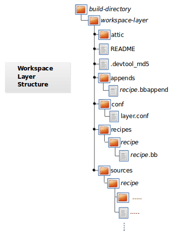 |
attic - A directory created if devtool believes it preserve
anything when you run "devtool reset". For example, if you
run "devtool add", make changes to the recipe, and then
run "devtool reset", devtool takes notice that the file has
been changed and moves it into the attic should you still
want the recipe.
README - Provides information on what is in workspace layer and how to
manage it.
.devtool_md5 - A checksum file used by devtool.
appends - A directory that contains *.bbappend files, which point to
external source.
conf - A configuration directory that contains the layer.conf file.
recipes - A directory containing recipes. This directory contains a
folder for each directory added whose name matches that of the
added recipe. devtool places the recipe.bb file
within that sub-directory.
sources - A directory containing a working copy of the source files used
when building the recipe. This is the default directory used
as the location of the source tree when you do not provide a
source tree path. This directory contains a folder for each
set of source files matched to a corresponding recipe.
Use the devtool add command to add a new recipe
to the workspace layer.
The recipe you add should not exist -
devtool creates it for you.
The source files the recipe uses should exist in an external
area.
The following example creates and adds a new recipe named
jackson to a workspace layer the tool creates.
The source code built by the recipes resides in
/home/scottrif/sources/jackson:
$ devtool add jackson /home/scottrif/sources/jackson
If you add a recipe and the workspace layer does not exist, the command creates the layer and populates it as described in "The Workspace Layer Structure" section.
Running devtool add when the
workspace layer exists causes the tool to add the recipe,
append files, and source files into the existing workspace layer.
The .bbappend file is created to point
to the external source tree.
Use the devtool extract command to
extract the source for an existing recipe.
When you use this command, you must supply the root name
of the recipe (i.e. no version, paths, or extensions), and
you must supply the directory to which you want the source
extracted.
Additional command options let you control the name of a development branch into which you can checkout the source and whether or not to keep a temporary directory, which is useful for debugging.
Use the devtool sync command to
synchronize a previously extracted source tree for an
existing recipe.
When you use this command, you must supply the root name
of the recipe (i.e. no version, paths, or extensions), and
you must supply the directory to which you want the source
extracted.
Additional command options let you control the name of a development branch into which you can checkout the source and whether or not to keep a temporary directory, which is useful for debugging.
Use the devtool modify command to begin
modifying the source of an existing recipe.
This command is very similar to the
add
command except that it does not physically create the
recipe in the workspace layer because the recipe already
exists in an another layer.
The devtool modify command extracts the
source for a recipe, sets it up as a Git repository if the
source had not already been fetched from Git, checks out a
branch for development, and applies any patches from the recipe
as commits on top.
You can use the following command to checkout the source
files:
$ devtool modify recipe
Using the above command form, devtool uses
the existing recipe's
SRC_URI
statement to locate the upstream source, extracts the source
into the default sources location in the workspace.
The default development branch used is "devtool".
Use the devtool edit-recipe command
to run the default editor, which is identified using the
EDITOR variable, on the specified recipe.
When you use the devtool edit-recipe
command, you must supply the root name of the recipe
(i.e. no version, paths, or extensions).
Also, the recipe file itself must reside in the workspace
as a result of the devtool add or
devtool upgrade commands.
However, you can override that requirement by using the
"-a" or "--any-recipe" option.
Using either of these options allows you to edit any recipe
regardless of its location.
Use the devtool update-recipe command to
update your recipe with patches that reflect changes you make
to the source files.
For example, if you know you are going to work on some
code, you could first use the
devtool modify
command to extract the code and set up the workspace.
After which, you could modify, compile, and test the code.
When you are satisfied with the results and you have committed
your changes to the Git repository, you can then
run the devtool update-recipe to create the
patches and update the recipe:
$ devtool update-recipe recipe
If you run the devtool update-recipe
without committing your changes, the command ignores the
changes.
Often, you might want to apply customizations made to your
software in your own layer rather than apply them to the
original recipe.
If so, you can use the
-a or --append
option with the devtool update-recipe
command.
These options allow you to specify the layer into which to
write an append file:
$ devtool update-recipe recipe -a base-layer-directory
The *.bbappend file is created at the
appropriate path within the specified layer directory, which
may or may not be in your bblayers.conf
file.
If an append file already exists, the command updates it
appropriately.
Use the devtool upgrade command
to upgrade an existing recipe to a new upstream version.
The command puts the upgraded recipe file into the
workspace along with any associated files, and extracts
the source tree to a specified location should patches
need rebased or added to as a result of the upgrade.
When you use the devtool upgrade command,
you must supply the root name of the recipe (i.e. no version,
paths, or extensions), and you must supply the directory
to which you want the source extracted.
Additional command options let you control things such as
the version number to which you want to upgrade (i.e. the
PV),
the source revision to which you want to upgrade (i.e. the
SRCREV,
whether or not to apply patches, and so forth.
Use the devtool reset command to remove a
recipe and its configuration (e.g. the corresponding
.bbappend file) from the workspace layer.
Realize that this command deletes the recipe and the
append file.
The command does not physically move them for you.
Consequently, you must be sure to physically relocate your
updated recipe and the append file outside of the workspace
layer before running the devtool reset
command.
If the devtool reset command detects that
the recipe or the append files have been modified, the
command preserves the modified files in a separate "attic"
subdirectory under the workspace layer.
Here is an example that resets the workspace directory that
contains the mtr recipe:
$ devtool reset mtr
NOTE: Cleaning sysroot for recipe mtr...
NOTE: Leaving source tree /home/scottrif/poky/build/workspace/sources/mtr as-is; if you no
longer need it then please delete it manually
$
Use the devtool build command to cause the
OpenEmbedded build system to build your recipe.
The devtool build command is equivalent to
bitbake -c populate_sysroot.
When you use the devtool build command,
you must supply the root name of the recipe (i.e. no version,
paths, or extensions).
You can use either the "-s" or the "--disable-parallel-make"
option to disable parallel makes during the build.
Here is an example:
$ devtool build recipe
Use the devtool build-image command
to build an image, extending it to include packages from
recipes in the workspace.
Using this command is useful when you want an image that
ready for immediate deployment onto a device for testing.
For proper integration into a final image, you need to
edit your custom image recipe appropriately.
When you use the devtool build-image
command, you must supply the name of the image.
This command has no command line options:
$ devtool build-image image
Use the devtool deploy-target command to
deploy the recipe's build output to the live target machine:
$ devtool deploy-target recipe target
The target is the address of the
target machine, which must be running an SSH server (i.e.
user@hostname[:destdir]).
This command deploys all files installed during the
do_install
task.
Furthermore, you do not need to have package management enabled
within the target machine.
If you do, the package manager is bypassed.
The deploy-target
functionality is for development only.
You should never use it to update an image that will be
used in production.
Some conditions exist that could prevent a deployed application from behaving as expected. When both of the following conditions exist, your application has the potential to not behave correctly when run on the target:
You are deploying a new application to the target and the recipe you used to build the application had correctly defined runtime dependencies.
The target does not physically have the packages on which the application depends installed.
If both of these conditions exist, your application will not
behave as expected.
The reason for this misbehavior is because the
devtool deploy-target command does not deploy
the packages (e.g. libraries) on which your new application
depends.
The assumption is that the packages are already on the target.
Consequently, when a runtime call is made in the application
for a dependent function (e.g. a library call), the function
cannot be found.
To be sure you have all the dependencies local to the target, you need to be sure that the packages are pre-deployed (installed) on the target before attempting to run your application.
Use the devtool undeploy-target command to
remove deployed build output from the target machine.
For the devtool undeploy-target command to
work, you must have previously used the
devtool deploy-target
command.
$ devtool undeploy-target recipe target
The target is the address of the
target machine, which must be running an SSH server (i.e.
user@hostname).
Use the devtool create-workspace command to
create a new workspace layer in your
Build Directory.
When you create a new workspace layer, it is populated with the
README file and the
conf directory only.
The following example creates a new workspace layer in your current working and by default names the workspace layer "workspace":
$ devtool create-workspace
You can create a workspace layer anywhere by supplying a pathname with the command. The following command creates a new workspace layer named "new-workspace":
$ devtool create-workspace /home/scottrif/new-workspace
Use the devtool status command to
list the recipes currently in your workspace.
Information includes the paths to their respective
external source trees.
The devtool status command has no
command-line options:
$ devtool status
Following is sample output after using
devtool add
to create and add the mtr_0.86.bb recipe
to the workspace directory:
$ devtool status
mtr: /home/scottrif/poky/build/workspace/sources/mtr (/home/scottrif/poky/build/workspace/recipes/mtr/mtr_0.86.bb)
$
Use the devtool search command to
search for available target recipes.
The command matches the recipe name, package name,
description, and installed files.
The command displays the recipe name as a result of a
match.
When you use the devtool search command,
you must supply a keyword.
The command uses the keyword when
searching for a match.
Table of Contents
When building a recipe, the OpenEmbedded build system performs various QA checks on the output to ensure that common issues are detected and reported. Sometimes when you create a new recipe to build new software, it will build with no problems. When this is not the case, or when you have QA issues building any software, it could take a little time to resolve them.
While it is tempting to ignore a QA message or even to disable QA checks, it is best to try and resolve any reported QA issues. This chapter provides a list of the QA messages and brief explanations of the issues you could encounter so that you can properly resolve problems.
The next section provides a list of all QA error and warning messages based on a default configuration. Each entry provides the message or error form along with an explanation.
At the end of each message, the name of the associated
QA test (as listed in the
"insane.bbclass"
section) appears within square brackets.
As mentioned, this list of error and warning messages is for QA checks only. The list does not cover all possible build errors or warnings you could encounter.
Because some QA checks are disabled by default, this list does not include all possible QA check errors and warnings.
<packagename>: <path> is using libexec please relocate to <libexecdir> [libexec]
¶
The specified package contains files in
/usr/libexec when the distro
configuration uses a different path for
<libexecdir>
By default, <libexecdir> is
$prefix/libexec.
However, this default can be changed (e.g.
${libdir}).
package <packagename> contains bad RPATH <rpath> in file <file> [rpaths]
¶
The specified binary produced by the recipe contains dynamic
library load paths (rpaths) that contain build system paths
such as
TMPDIR,
which are incorrect for the target and could potentially
be a security issue.
Check for bad -rpath options being
passed to the linker in your
do_compile
log.
Depending on the build system used by the software being
built, there might be a configure option to disable rpath
usage completely within the build of the software.
<packagename>: <file> contains probably-redundant RPATH <rpath> [useless-rpaths]
¶
The specified binary produced by the recipe contains dynamic
library load paths (rpaths) that on a standard system are
searched by default by the linker (e.g.
/lib and /usr/lib).
While these paths will not cause any breakage, they do waste
space and are unnecessary.
Depending on the build system used by the software being
built, there might be a configure option to disable rpath
usage completely within the build of the software.
<packagename> requires <files>, but no providers in its RDEPENDS [file-rdeps]
¶
A file-level dependency has been identified from the
specified package on the specified files, but there is
no explicit corresponding entry in
RDEPENDS.
If particular files are required at runtime then
RDEPENDS should be declared in the
recipe to ensure the packages providing them are built.
<packagename1> rdepends on <packagename2>, but it isn't a build dependency? [build-deps]
¶
A runtime dependency exists between the two specified
packages, but there is nothing explicit within the recipe
to enable the OpenEmbedded build system to ensure that
dependency is satisfied.
This condition is usually triggered by an
RDEPENDS
value being added at the packaging stage rather than up
front, which is usually automatic based on the contents of
the package.
In most cases, you should change the recipe to add an
explicit RDEPENDS for the dependency.
non -dev/-dbg/nativesdk- package contains symlink .so: <packagename> path '<path>' [dev-so]
¶
Symlink .so files are for development
only, and should therefore go into the
-dev package.
This situation might occur if you add
*.so* rather than
*.so.* to a non-dev package.
Change
FILES
(and possibly
PACKAGES)
such that the specified .so file goes
into an appropriate -dev package.
<packagename>: found library in wrong location [libdir]
¶
The specified file may have been installed into an incorrect
(possibly hardcoded) installation path.
For example, this test will catch recipes that install
/lib/bar.so when
${base_libdir} is "lib32".
Another example is when recipes install
/usr/lib64/foo.so when
${libdir} is "/usr/lib".
False positives occasionally exist.
For these cases add "libdir" to
INSANE_SKIP
for the package.
non debug package contains .debug directory: <packagename> path <path> [debug-files]
¶
The specified package contains a
.debug directory, which should not
appear in anything but the -dbg
package.
This situation might occur if you add a path which contains
a .debug directory and do not
explicitly add the .debug directory
to the -dbg package.
If this is the case, add the .debug
directory explicitly to
FILES_${PN}-dbg.
See
FILES
for additional information on FILES.
Architecture did not match (<machine_arch> to <file_arch>) on <file> [arch]
¶
By default, the OpenEmbedded build system checks the
Executable and Linkable Format (ELF) type, bit size, and
endianness of any binaries to ensure they match the
target architecture.
This test fails if any binaries do not match the type since
there would be an incompatibility.
The test could indicate that the wrong compiler or compiler
options have been used.
Sometimes software, like bootloaders, might need to
bypass this check.
If the file you receive the error for is firmware
that is not intended to be executed within the target
operating system or is intended to run on a separate
processor within the device, you can add "arch" to
INSANE_SKIP
for the package.
Another option is to check the
do_compile
log and verify that the compiler options being used
are correct.
Bit size did not match (<machine_bits> to <file_bits>) <recipe> on <file> [arch]
¶
By default, the OpenEmbedded build system checks
the Executable and Linkable Format (ELF) type,
bit size, and endianness of any binaries to ensure
they match the target architecture.
This test fails if any binaries do not match the type since
there would be an incompatibility.
The test could indicate that the wrong compiler or compiler
options have been used.
Sometimes software, like bootloaders, might need to
bypass this check.
If the file you receive the error for is firmware that
is not intended to be executed within the target
operating system or is intended to run on a separate
processor within the device, you can add "arch" to
INSANE_SKIP
for the package.
Another option is to check the
do_compile
log and verify that the compiler options being used are
correct.
Endianness did not match (<machine_endianness> to <file_endianness>) on <file> [arch]
¶
By default, the OpenEmbedded build system checks
the Executable and Linkable Format (ELF) type, bit
size, and endianness of any binaries to ensure they
match the target architecture.
This test fails if any binaries do not match the type since
there would be an incompatibility.
The test could indicate that the wrong compiler or compiler
options have been used.
Sometimes software, like bootloaders, might need to
bypass this check.
If the file you receive the error for is firmware
that is not intended to be executed within the target
operating system or is intended to run on a separate
processor within the device, you can add "arch" to
INSANE_SKIP
for the package.
Another option is to check the
do_compile
log and verify that the compiler options being used
are correct.
ELF binary '<file>' has relocations in .text [textrel]
¶
The specified ELF binary contains relocations in its
.text sections.
This situation can result in a performance impact
at runtime.
Typically, the way to solve this performance issue is to
add "-fPIC" or "-fpic" to the compiler command-line
options.
For example, given software that reads
CFLAGS
when you build it, you could add the following to your
recipe:
CFLAGS_append = " -fPIC "
For more information on text relocations at runtime, see http://www.akkadia.org/drepper/textrelocs.html.
No GNU_HASH in the elf binary: '<file>' [ldflags]
¶
This indicates that binaries produced when building the
recipe have not been linked with the
LDFLAGS
options provided by the build system.
Check to be sure that the LDFLAGS
variable is being passed to the linker command.
A common workaround for this situation is to pass in
LDFLAGS using
TARGET_CC_ARCH
within the recipe as follows:
TARGET_CC_ARCH += "${LDFLAGS}"
Package <packagename> contains Xorg driver (<driver>) but no xorg-abi- dependencies [xorg-driver-abi]
¶
The specified package contains an Xorg driver, but does not
have a corresponding ABI package dependency.
The xserver-xorg recipe provides driver ABI names.
All drivers should depend on the ABI versions that they have
been built against.
Driver recipes that include
xorg-driver-input.inc or
xorg-driver-video.inc will
automatically get these versions.
Consequently, you should only need to explicitly add
dependencies to binary driver recipes.
The /usr/share/info/dir file is not meant to be shipped in a particular package. [infodir]
¶
The /usr/share/info/dir should not be
packaged.
Add the following line to your
do_install
task or to your do_install_append
within the recipe as follows:
rm ${D}${infodir}/dir
Symlink <path> in <packagename> points to TMPDIR [symlink-to-sysroot]
¶
The specified symlink points into
TMPDIR
on the host.
Such symlinks will work on the host.
However, they are clearly invalid when running on
the target.
You should either correct the symlink to use a relative
path or remove the symlink.
<packagename> rdepends on <debug_packagename> [debug-deps]
¶
A dependency exists between the specified non-dbg package
(i.e. a package whose name does not end in
-dbg) and a package that is a
dbg package.
The dbg packages contain
debug symbols and are brought in using several
different methods:
Using the dbg-pkgs
IMAGE_FEATURES
value.
Using
IMAGE_INSTALL.
As a dependency of another
dbg package that was brought
in using one of the above methods.
The dependency might have been automatically added
because the dbg package erroneously
contains files that it should not contain (e.g. a
non-symlink .so file) or it might
have been added manually (e.g. by adding to
RDEPENDS).
<packagename> rdepends on <dev_packagename> [dev-deps]
¶
A dependency exists between the specified non-dev package
(a package whose name does not end in
-dev) and a package that is a
dev package.
The dev packages contain development
headers and are usually brought in using several different
methods:
Using the dev-pkgs
IMAGE_FEATURES
value.
Using
IMAGE_INSTALL.
As a dependency of another
dev package that was brought
in using one of the above methods.
The dependency might have been automatically added (because
the dev package erroneously contains
files that it should not have (e.g. a non-symlink
.so file) or it might have been added
manually (e.g. by adding to
RDEPENDS).
<var>_<packagename> is invalid: <comparison> (<value>) only comparisons <, =, >, <=, and >= are allowed [dep-cmp]
¶
If you are adding a versioned dependency relationship to one
of the dependency variables
(RDEPENDS,
RRECOMMENDS,
RSUGGESTS,
RPROVIDES,
RREPLACES,
or
RCONFLICTS),
you must only use the named comparison operators.
Change the versioned dependency values you are adding
to match those listed in the message.
<recipename>: The compile log indicates that host include and/or library paths were used. Please check the log '<logfile>' for more information. [compile-host-path]
¶
The log for the
do_compile
task indicates that paths on the host were searched
for files, which is not appropriate when cross-compiling.
Look for "is unsafe for cross-compilation" or "CROSS COMPILE
Badness" in the specified log file.
<recipename>: The install log indicates that host include and/or library paths were used. Please check the log '<logfile>' for more information. [install-host-path]
¶
The log for the
do_install
task indicates that paths on the host were searched
for files, which is not appropriate when cross-compiling.
Look for "is unsafe for cross-compilation"
or "CROSS COMPILE Badness" in the specified log file.
This autoconf log indicates errors, it looked at host include and/or library paths while determining system capabilities. Rerun configure task after fixing this. The path was '<path>'
¶
The log for the
do_configure
task indicates that paths on the host were searched
for files, which is not appropriate when cross-compiling.
Look for "is unsafe for cross-compilation" or
"CROSS COMPILE Badness" in the specified log file.
<packagename> doesn't match the [a-z0-9.+-]+ regex [pkgname]
¶
The convention within the OpenEmbedded build system
(sometimes enforced by the package manager itself) is to
require that package names are all lower case
and to allow a restricted set of characters.
If your recipe name does not match this, or you add
packages to
PACKAGES
that do not conform to the convention, then you
will receive this error.
Rename your recipe.
Or, if you have added a non-conforming package name to
PACKAGES, change the package name
appropriately.
<recipe>: configure was passed unrecognized options: <options> [unknown-configure-option]
¶
The configure script is reporting that the specified
options are unrecognized.
This situation could be because the options
were previously valid but have been removed from the
configure script.
Or, there was a mistake when the options were added
and there is another option that should be used instead.
If you are unsure, consult the upstream build
documentation, the
./configure --help output,
and the upstream change log or release notes.
Once you have worked out what the appropriate
change is, you can update
EXTRA_OECONF,
PACKAGECONFIG_CONFARGS,
or the individual
PACKAGECONFIG
option values accordingly.
Recipe <recipefile> has PN of "<recipename>" which is in OVERRIDES, this can result in unexpected behavior. [pn-overrides]
¶
The specified recipe has a name
(PN)
value that appears in
OVERRIDES.
If a recipe is named such that its PN
value matches something already in
OVERRIDES (e.g. PN
happens to be the same as
MACHINE
or
DISTRO),
it can have unexpected consequences.
For example, assignments such as
FILES_${PN} = "xyz" effectively
turn into FILES = "xyz".
Rename your recipe (or if PN is being
set explicitly, change the PN value) so
that the conflict does not occur.
See
FILES
for additional information.
<recipefile>: Variable <variable> is set as not being package specific, please fix this. [pkgvarcheck]
¶
Certain variables
(RDEPENDS,
RRECOMMENDS,
RSUGGESTS,
RCONFLICTS,
RPROVIDES,
RREPLACES,
FILES,
pkg_preinst,
pkg_postinst,
pkg_prerm,
pkg_postrm, and
ALLOW_EMPTY)
should always be set specific to a package (i.e. they
should be set with a package name override such as
RDEPENDS_${PN} = "value" rather than
RDEPENDS = "value").
If you receive this error, correct any assignments to these
variables within your recipe.
File '<file>' from <recipename> was already stripped, this will prevent future debugging! [already-stripped]
¶
Produced binaries have already been stripped prior to the
build system extracting debug symbols.
It is common for upstream software projects to default to
stripping debug symbols for output binaries.
In order for debugging to work on the target using
-dbg packages, this stripping must be
disabled.
Depending on the build system used by the software being built, disabling this stripping could be as easy as specifying an additional configure option. If not, disabling stripping might involve patching the build scripts. In the latter case, look for references to "strip" or "STRIP", or the "-s" or "-S" command-line options being specified on the linker command line (possibly through the compiler command line if preceded with "-Wl,").
-dbg package,
it will then strip the symbols from the binaries.
<recipename>: Files/directories were installed but not shipped in any package [installed-vs-shipped]
¶
Files have been installed within the
do_install
task but have not been included in any package by way of the
FILES
variable.
Files that do not appear in any package cannot be present in
an image later on in the build process.
You need to do one of the following:
Add the files to FILES for the
package you want them to appear in (e.g.
FILES_${PN} for the main
package).
Delete the files at the end of the
do_install task if the files
are not needed in any package.
<oldpackage>-<oldpkgversion> was registered as shlib provider for <library>, changing it to <newpackage>-<newpkgversion> because it was built later
¶
This message means that both
<oldpackage> and
<newpackage> provide the specified
shared library.
You can expect this message when a recipe has been renamed.
However, if that is not the case, the message might indicate
that a private version of a library is being erroneously
picked up as the provider for a common library.
If that is the case, you should add the library's
.so file name to
PRIVATE_LIBS
in the recipe that provides
the private version of the library.
You can configure the QA checks globally so that specific check
failures either raise a warning or an error message, using the
WARN_QA and
ERROR_QA
variables, respectively.
You can also disable checks within a particular recipe using
INSANE_SKIP.
For information on how to work with the QA checks, see the
"insane.bbclass"
section.
The OpenEmbedded build system provides several example
images to satisfy different needs.
When you issue the bitbake command you provide a “top-level” recipe
that essentially begins the build for the type of image you want.
local.conf file before using the BitBake
command to build the minimal or base image:
1. Comment out the EXTRA_IMAGE_FEATURES line
2. Set INCOMPATIBLE_LICENSE = "GPL-3.0 LGPL-3.0 AGPL-3.0"
From within the poky Git repository, you can use
the following command to display the list of directories within the
Source Directory
that containe image recipe files:
$ ls meta*/recipes*/images/*.bb
Following is a list of supported recipes:
build-appliance-image:
An example virtual machine that contains all the pieces required to
run builds using the build system as well as the build system itself.
You can boot and run the image using either the
VMware Player
or VMware Workstation.
For more information on this image, see the
Build Appliance page on
the Yocto Project website.
core-image-base:
A console-only image that fully supports the target device hardware.
core-image-clutter:
An image with support for the Open GL-based toolkit Clutter, which enables development of
rich and animated graphical user interfaces.
core-image-full-cmdline:
A console-only image with more full-featured Linux system
functionality installed.
core-image-lsb:
An image that conforms to the Linux Standard Base (LSB)
specification.
This image requires a distribution configuration that
enables LSB compliance (e.g. poky-lsb).
If you build core-image-lsb without that
configuration, the image will not be LSB-compliant.
core-image-lsb-dev:
A core-image-lsb image that is suitable for development work
using the host.
The image includes headers and libraries you can use in a host development
environment.
This image requires a distribution configuration that
enables LSB compliance (e.g. poky-lsb).
If you build core-image-lsb-dev without that
configuration, the image will not be LSB-compliant.
core-image-lsb-sdk:
A core-image-lsb that includes everything in
the cross-toolchain but also includes development headers and libraries
to form a complete standalone SDK.
This image requires a distribution configuration that
enables LSB compliance (e.g. poky-lsb).
If you build core-image-lsb-sdk without that
configuration, the image will not be LSB-compliant.
This image is suitable for development using the target.
core-image-minimal:
A small image just capable of allowing a device to boot.
core-image-minimal-dev:
A core-image-minimal image suitable for development work
using the host.
The image includes headers and libraries you can use in a host development
environment.
core-image-minimal-initramfs:
A core-image-minimal image that has the Minimal RAM-based
Initial Root Filesystem (initramfs) as part of the kernel,
which allows the system to find the first “init” program more efficiently.
See the
PACKAGE_INSTALL
variable for additional information helpful when working with
initramfs images.
core-image-minimal-mtdutils:
A core-image-minimal image that has support
for the Minimal MTD Utilities, which let the user interact with the
MTD subsystem in the kernel to perform operations on flash devices.
core-image-rt:
A core-image-minimal image plus a real-time test suite and
tools appropriate for real-time use.
core-image-rt-sdk:
A core-image-rt image that includes everything in
the cross-toolchain.
The image also includes development headers and libraries to form a complete
stand-alone SDK and is suitable for development using the target.
core-image-sato:
An image with Sato support, a mobile environment and visual style that works well
with mobile devices.
The image supports X11 with a Sato theme and applications such as
a terminal, editor, file manager, media player, and so forth.
core-image-sato-dev:
A core-image-sato image suitable for development
using the host.
The image includes libraries needed to build applications on the device itself,
testing and profiling tools, and debug symbols.
This image was formerly core-image-sdk.
core-image-sato-sdk:
A core-image-sato image that includes everything in
the cross-toolchain.
The image also includes development headers and libraries to form a complete standalone SDK
and is suitable for development using the target.
core-image-testmaster:
A "master" image designed to be used for automated runtime testing.
Provides a "known good" image that is deployed to a separate
partition so that you can boot into it and use it to deploy a
second image to be tested.
You can find more information about runtime testing in the
"Performing Automated Runtime Testing"
section in the Yocto Project Development Manual.
core-image-testmaster-initramfs:
A RAM-based Initial Root Filesystem (initramfs) image tailored for
use with the core-image-testmaster image.
core-image-weston:
A very basic Wayland image with a terminal.
This image provides the Wayland protocol libraries and the
reference Weston compositor.
For more information, see the
"Wayland" section.
core-image-x11:
A very basic X11 image with a terminal.
Table of Contents
This chapter provides a reference of shipped machine and distro features you can include as part of your image, a reference on image features you can select, and a reference on feature backfilling.
Features provide a mechanism for working out which packages
should be included in the generated images.
Distributions can select which features they want to support through the
DISTRO_FEATURES
variable, which is set or appended to in a distribution's configuration file such as
poky.conf,
poky-tiny.conf,
poky-lsb.conf and so forth.
Machine features are set in the
MACHINE_FEATURES
variable, which is set in the machine configuration file and
specifies the hardware features for a given machine.
These two variables combine to work out which kernel modules, utilities, and other packages to include. A given distribution can support a selected subset of features so some machine features might not be included if the distribution itself does not support them.
One method you can use to determine which recipes are checking to see if a
particular feature is contained or not is to grep through
the Metadata
for the feature.
Here is an example that discovers the recipes whose build is potentially
changed based on a given feature:
$ cd poky
$ git grep 'contains.*MACHINE_FEATURES.*feature'
The items below are features you can use with
MACHINE_FEATURES.
Features do not have a one-to-one correspondence to packages, and they can
go beyond simply controlling the installation of a package or packages.
Sometimes a feature can influence how certain recipes are built.
For example, a feature might determine whether a particular configure option
is specified within the
do_configure
task for a particular recipe.
This feature list only represents features as shipped with the Yocto Project metadata:
acpi: Hardware has ACPI (x86/x86_64 only)
alsa: Hardware has ALSA audio drivers
apm: Hardware uses APM (or APM emulation)
bluetooth: Hardware has integrated BT
efi: Support for booting through EFI
ext2: Hardware HDD or Microdrive
irda: Hardware has IrDA support
keyboard: Hardware has a keyboard
pcbios: Support for booting through BIOS
pci: Hardware has a PCI bus
pcmcia: Hardware has PCMCIA or CompactFlash sockets
phone: Mobile phone (voice) support
qvga: Machine has a QVGA (320x240) display
rtc: Machine has a Real-Time Clock
screen: Hardware has a screen
serial: Hardware has serial support (usually RS232)
touchscreen: Hardware has a touchscreen
usbgadget: Hardware is USB gadget device capable
usbhost: Hardware is USB Host capable
vfat: FAT file system support
wifi: Hardware has integrated WiFi
The items below are features you can use with
DISTRO_FEATURES
to enable features across your distribution.
Features do not have a one-to-one correspondence to packages,
and they can go beyond simply controlling the installation of a
package or packages.
In most cases, the presence or absence of a feature translates to
the appropriate option supplied to the configure script during the
do_configure
task for the recipes that optionally
support the feature.
Some distro features are also machine features.
These select features make sense to be controlled both at
the machine and distribution configuration level.
See the
COMBINED_FEATURES
variable for more information.
This list only represents features as shipped with the Yocto Project metadata:
alsa: Include ALSA support (OSS compatibility kernel modules installed if available).
api-documentation:
Enables generation of API documentation during recipe
builds.
The resulting documentation is added to SDK tarballs
when the
bitbake -c populate_sdk command
is used.
See the
"Adding API Documentation to the Standard SDK"
section in the Yocto Project Software Development Kit (SDK)
Developer's Guide for more information.
bluetooth: Include bluetooth support (integrated BT only).
bluez5: Include BlueZ Version 5, which provides core Bluetooth layers and protocols support.
DISTRO FEATURES
variable includes "bluetooth", which causes bluez5
to be backfilled in for bluetooth support.
If you do not want bluez5 backfilled and would rather
use bluez4, you need to use the
DISTRO_FEATURES_BACKFILL_CONSIDERED
variable as follows:
DISTRO_FEATURES_BACKFILL_CONSIDERED = "bluez5"
Setting this variable tells the OpenEmbedded build
system that you have considered but ruled
out using the bluez5 feature and that bluez4 will be
used.
cramfs: Include CramFS support.
directfb: Include DirectFB support.
ext2: Include tools for supporting for devices with internal HDD/Microdrive for storing files (instead of Flash only devices).
ipsec: Include IPSec support.
ipv6: Include IPv6 support.
irda: Include IrDA support.
keyboard: Include keyboard support (e.g. keymaps will be loaded during boot).
nfs: Include NFS client support (for mounting NFS exports on device).
opengl: Include the Open Graphics Library, which is a cross-language, multi-platform application programming interface used for rendering two and three-dimensional graphics.
pci: Include PCI bus support.
pcmcia: Include PCMCIA/CompactFlash support.
ppp: Include PPP dialup support.
ptest: Enables building the package tests where supported by individual recipes. For more information on package tests, see the "Testing Packages With ptest" section in the Yocto Project Development Manual.
smbfs: Include SMB networks client support (for mounting Samba/Microsoft Windows shares on device).
systemd: Include support
for this init manager, which is a full
replacement of for init with parallel
starting of services, reduced shell overhead, and other
features.
This init manager is used by many
distributions.
usbgadget: Include USB Gadget Device support (for USB networking/serial/storage).
usbhost: Include USB Host support (allows to connect external keyboard, mouse, storage, network etc).
wayland: Include the Wayland display server protocol and the library that supports it.
wifi: Include WiFi support (integrated only).
x11: Include the X server and libraries.
The contents of images generated by the OpenEmbedded build system
can be controlled by the
IMAGE_FEATURES
and
EXTRA_IMAGE_FEATURES
variables that you typically configure in your image recipes.
Through these variables, you can add several different
predefined packages such as development utilities or packages with
debug information needed to investigate application problems or
profile applications.
The following image features are available for all images:
allow-empty-password: Allows Dropbear and OpenSSH to accept root logins and logins from accounts having an empty password string.
dbg-pkgs: Installs debug symbol packages for all packages installed in a given image.
debug-tweaks: Makes an image suitable for development (e.g. allows root logins without passwords and enables post-installation logging). See the 'allow-empty-password', 'empty-root-password', and 'post-install-logging' features in this list for additional information.
dev-pkgs: Installs development packages (headers and extra library links) for all packages installed in a given image.
doc-pkgs: Installs documentation packages for all packages installed in a given image.
empty-root-password: Sets the root password to an empty string, which allows logins with a blank password.
package-management: Installs package management tools and preserves the package manager database.
post-install-logging:
Enables logging postinstall script runs to
the /var/log/postinstall.log file
on first boot of the image on the target system.
/var/log directory
on the target persistent, use the
VOLATILE_LOG_DIR
variable by setting it to "no".
ptest-pkgs: Installs ptest packages for all ptest-enabled recipes.
read-only-rootfs: Creates an image whose root filesystem is read-only. See the "Creating a Read-Only Root Filesystem" section in the Yocto Project Development Manual for more information.
splash:
Enables showing a splash screen during boot.
By default, this screen is provided by
psplash, which does allow
customization.
If you prefer to use an alternative splash screen package,
you can do so by setting the SPLASH
variable to a different package name (or names) within the
image recipe or at the distro configuration level.
staticdev-pkgs:
Installs static development packages, which are
static libraries (i.e. *.a files), for
all packages installed in a given image.
Some image features are available only when you inherit the
core-image
class.
The current list of these valid features is as follows:
eclipse-debug: Provides Eclipse remote debugging support.
hwcodecs: Installs hardware acceleration codecs.
nfs-server: Installs an NFS server.
perf:
Installs profiling tools such as
perf, systemtap,
and LTTng.
For general information on user-space tools, see the
Yocto Project Software Development Kit (SDK) Developer's Guide.
ssh-server-dropbear: Installs the Dropbear minimal SSH server.
ssh-server-openssh:
Installs the OpenSSH SSH server, which is more
full-featured than Dropbear.
Note that if both the OpenSSH SSH server and the Dropbear
minimal SSH server are present in
IMAGE_FEATURES, then OpenSSH will take
precedence and Dropbear will not be installed.
tools-debug:
Installs debugging tools such as
strace and gdb.
For information on GDB, see the
"Debugging With the GNU Project Debugger (GDB) Remotely"
section in the Yocto Project Development Manual.
For information on tracing and profiling, see the
Yocto Project Profiling and Tracing Manual.
tools-sdk: Installs a full SDK that runs on the device.
tools-testapps: Installs device testing tools (e.g. touchscreen debugging).
x11: Installs the X server.
x11-base: Installs the X server with a minimal environment.
x11-sato: Installs the OpenedHand Sato environment.
Sometimes it is necessary in the OpenEmbedded build system to extend
MACHINE_FEATURES
or DISTRO_FEATURES
to control functionality that was previously enabled and not able
to be disabled.
For these cases, we need to add an
additional feature item to appear in one of these variables,
but we do not want to force developers who have existing values
of the variables in their configuration to add the new feature
in order to retain the same overall level of functionality.
Thus, the OpenEmbedded build system has a mechanism to
automatically "backfill" these added features into existing
distro or machine configurations.
You can see the list of features for which this is done by
finding the
DISTRO_FEATURES_BACKFILL
and MACHINE_FEATURES_BACKFILL
variables in the meta/conf/bitbake.conf file.
Because such features are backfilled by default into all
configurations as described in the previous paragraph, developers
who wish to disable the new features need to be able to selectively
prevent the backfilling from occurring.
They can do this by adding the undesired feature or features to the
DISTRO_FEATURES_BACKFILL_CONSIDERED
or MACHINE_FEATURES_BACKFILL_CONSIDERED
variables for distro features and machine features respectively.
Here are two examples to help illustrate feature backfilling:
The "pulseaudio" distro feature option:
Previously, PulseAudio support was enabled within the Qt and
GStreamer frameworks.
Because of this, the feature is backfilled and thus
enabled for all distros through the
DISTRO_FEATURES_BACKFILL
variable in the meta/conf/bitbake.conf file.
However, your distro needs to disable the feature.
You can disable the feature without affecting
other existing distro configurations that need PulseAudio support
by adding "pulseaudio" to
DISTRO_FEATURES_BACKFILL_CONSIDERED
in your distro's .conf file.
Adding the feature to this variable when it also
exists in the DISTRO_FEATURES_BACKFILL
variable prevents the build system from adding the feature to
your configuration's DISTRO_FEATURES, effectively disabling
the feature for that particular distro.
The "rtc" machine feature option:
Previously, real time clock (RTC) support was enabled for all
target devices.
Because of this, the feature is backfilled and thus enabled
for all machines through the MACHINE_FEATURES_BACKFILL
variable in the meta/conf/bitbake.conf file.
However, your target device does not have this capability.
You can disable RTC support for your device without
affecting other machines that need RTC support
by adding the feature to your machine's
MACHINE_FEATURES_BACKFILL_CONSIDERED
list in the machine's .conf file.
Adding the feature to this variable when it also
exists in the MACHINE_FEATURES_BACKFILL
variable prevents the build system from adding the feature to
your configuration's MACHINE_FEATURES, effectively
disabling RTC support for that particular machine.
Table of Contents
This chapter lists common variables used in the OpenEmbedded build system and gives an overview of their function and contents.
A B C D E F G H I K L M O P R S T U V W X
Extension to the Application Binary Interface (ABI) field of the GNU canonical architecture name (e.g. "eabi").
ABI extensions are set in the machine include files.
For example, the
meta/conf/machine/include/arm/arch-arm.inc
file sets the following extension:
ABIEXTENSION = "eabi"
Specifies if an output package should still be produced if it is empty.
By default, BitBake does not produce empty packages.
This default behavior can cause issues when there is an
RDEPENDS or
some other hard runtime requirement on the existence of the package.
Like all package-controlling variables, you must always use them in conjunction with a package name override, as in:
ALLOW_EMPTY_${PN} = "1"
ALLOW_EMPTY_${PN}-dev = "1"
ALLOW_EMPTY_${PN}-staticdev = "1"
Lists commands in a package that need an alternative binary naming scheme. Sometimes the same command is provided in multiple packages. When this occurs, the OpenEmbedded build system needs to use the alternatives system to create a different binary naming scheme so the commands can co-exist.
To use the variable, list out the package's commands
that also exist as part of another package.
For example, if the busybox package
has four commands that also exist as part of another
package, you identify them as follows:
ALTERNATIVE_busybox = "sh sed test bracket"
For more information on the alternatives system, see the
"update-alternatives.bbclass"
section.
Used by the alternatives system to map duplicated commands
to actual locations.
For example, if the bracket command
provided by the busybox package is
duplicated through another package, you must use the
ALTERNATIVE_LINK_NAME variable to
specify the actual location:
ALTERNATIVE_LINK_NAME[bracket] = "/usr/bin/["
In this example, the binary for the
bracket command (i.e.
[) from the
busybox package resides in
/usr/bin/.
ALTERNATIVE_LINK_NAME is not
defined, it defaults to
${bindir}/name.
For more information on the alternatives system, see the
"update-alternatives.bbclass"
section.
Used by the alternatives system to create default priorities for duplicated commands. You can use the variable to create a single default regardless of the command name or package, a default for specific duplicated commands regardless of the package, or a default for specific commands tied to particular packages. Here are the available syntax forms:
ALTERNATIVE_PRIORITY = "priority"
ALTERNATIVE_PRIORITY[name] = "priority"
ALTERNATIVE_PRIORITY_pkg[name] = "priority"
For more information on the alternatives system, see the
"update-alternatives.bbclass"
section.
Used by the alternatives system to create default link locations for duplicated commands. You can use the variable to create a single default location for all duplicated commands regardless of the command name or package, a default for specific duplicated commands regardless of the package, or a default for specific commands tied to particular packages. Here are the available syntax forms:
ALTERNATIVE_TARGET = "target"
ALTERNATIVE_TARGET[name] = "target"
ALTERNATIVE_TARGET_pkg[name] = "target"
If ALTERNATIVE_TARGET is not
defined, it inherits the value from the
ALTERNATIVE_LINK_NAME
variable.
If ALTERNATIVE_LINK_NAME and
ALTERNATIVE_TARGET are the
same, the target for
ALTERNATIVE_TARGET
has ".{BPN}" appended to it.
Finally, if the file referenced has not been
renamed, the alternatives system will rename it to
avoid the need to rename alternative files in the
do_install
task while
retaining support for the command if necessary.
For more information on the alternatives system, see the
"update-alternatives.bbclass"
section.
An override list of append strings for each
LABEL.
See the
grub-efi
class for more information on how this variable is used.
The minimal command and arguments used to run
ar.
When used with the
archiver
class, determines the type of information used to create
a released archive.
You can use this variable to create archives of patched
source, original source, configured source, and so forth
by employing the following variable flags (varflags):
ARCHIVER_MODE[src] = "original" # Uses original (unpacked) source
# files.
ARCHIVER_MODE[src] = "patched" # Uses patched source files. This is
# the default.
ARCHIVER_MODE[src] = "configured" # Uses configured source files.
ARCHIVER_MODE[diff] = "1" # Uses patches between do_unpack and
# do_patch.
ARCHIVER_MODE[diff-exclude] ?= "file file ..." # Lists files and directories to
# exclude from diff.
ARCHIVER_MODE[dumpdata] = "1" # Uses environment data.
ARCHIVER_MODE[recipe] = "1" # Uses recipe and include files.
ARCHIVER_MODE[srpm] = "1" # Uses RPM package files.
For information on how the variable works, see the
meta/classes/archiver.bbclass file
in the
Source Directory.
The minimal command and arguments used to run the assembler.
Lists recipe names
(PN
values) BitBake does not attempt to build.
Instead, BitBake assumes these recipes have already been
built.
In OpenEmbedded Core, ASSUME_PROVIDED
mostly specifies native tools that should not be built.
An example is git-native, which when
specified, allows for the Git binary from the host to be
used rather than building git-native.
Provides additional shlibs provider
mapping information, which adds to or overwrites the
information provided automatically by the system.
Separate multiple entries using spaces.
As an example, use the following form to add an
shlib provider of
shlibname in
packagename with the optional
version:
shlibname:packagename[_version]
Here is an example that adds a shared library named
libEGL.so.1 as being provided by
the libegl-implementation package:
ASSUME_SHLIBS = "libEGL.so.1:libegl-implementation"
The email address used to contact the original author or authors in order to send patches and forward bugs.
When the
debian
class is inherited, which is the default behavior,
AUTO_LIBNAME_PKGS specifies which
packages should be checked for libraries and renamed
according to Debian library package naming.
The default value is "${PACKAGES}", which causes the debian class to act on all packages that are explicitly generated by the recipe.
Enables creating an automatic menu for the syslinux
bootloader.
You must set this variable in your recipe.
The
syslinux
class checks this variable.
When
SRCREV
is set to the value of this variable, it specifies to use
the latest source revision in the repository.
Here is an example:
SRCREV = "${AUTOREV}"
If you use the previous statement to retrieve the latest
version of software, you need to be sure
PV
contains
${SRCPV}.
For example, suppose you have a kernel recipe that
inherits the
kernel class
and you use the previous statement.
In this example, ${SRCPV} does not
automatically get into PV.
Consequently, you need to change PV
in your recipe so that it does contain
${SRCPV}.
For more information see the "Automatically Incrementing a Binary Package Revision Number" section in the Yocto Project Development Manual.
The list of defined CPU and Application Binary Interface (ABI) tunings (i.e. "tunes") available for use by the OpenEmbedded build system.
The list simply presents the tunes that are available. Not all tunes may be compatible with a particular machine configuration, or with each other in a Multilib configuration.
To add a tune to the list, be sure to append it with spaces using the "+=" BitBake operator. Do not simply replace the list by using the "=" operator. See the "Basic Syntax" section in the BitBake User Manual for more information.
The directory within the
Build Directory
in which the OpenEmbedded build system places generated
objects during a recipe's build process.
By default, this directory is the same as the S
directory, which is defined as:
S = "${WORKDIR}/${BP}"
You can separate the (S) directory
and the directory pointed to by the B
variable.
Most Autotools-based recipes support separating these
directories.
The build system defaults to using separate directories for
gcc and some kernel recipes.
Lists "recommended-only" packages to not install.
Recommended-only packages are packages installed only
through the
RRECOMMENDS
variable.
You can prevent any of these "recommended" packages from
being installed by listing them with the
BAD_RECOMMENDATIONS variable:
BAD_RECOMMENDATIONS = "package_name package_name package_name ..."
You can set this variable globally in your
local.conf file or you can attach it to
a specific image recipe by using the recipe name override:
BAD_RECOMMENDATIONS_pn-target_image = "package_name"
It is important to realize that if you choose to not install
packages using this variable and some other packages are
dependent on them (i.e. listed in a recipe's
RDEPENDS
variable), the OpenEmbedded build system ignores your
request and will install the packages to avoid dependency
errors.
Support for this variable exists only when using the IPK and RPM packaging backend. Support does not exist for DEB.
See the
NO_RECOMMENDATIONS
and the
PACKAGE_EXCLUDE
variables for related information.
The library directory name for the CPU or Application
Binary Interface (ABI) tune.
The BASE_LIB applies only in the
Multilib context.
See the
"Combining Multiple Versions of Library Files into One Image"
section in the Yocto Project Development Manual for
information on Multilib.
The BASE_LIB variable is defined in
the machine include files in the
Source Directory.
If Multilib is not being used, the value defaults to "lib".
Points to the base of the work directory for all recipes. The default value is "${TMPDIR}/work".
Specifies a space-delimited list of hosts that the fetcher is allowed to use to obtain the required source code. Following are considerations surrounding this variable:
This host list is only used if
BB_NO_NETWORK is either not
set or set to "0".
Limited support for wildcard matching against the
beginning of host names exists.
For example, the following setting matches
git.gnu.org,
ftp.gnu.org, and
foo.git.gnu.org.
BB_ALLOWED_NETWORKS = "*.gnu.org"
Mirrors not in the host list are skipped and logged in debug.
Attempts to access networks not in the host list cause a failure.
Using BB_ALLOWED_NETWORKS in
conjunction with
PREMIRRORS
is very useful.
Adding the host you want to use to
PREMIRRORS results in the source code
being fetched from an allowed location and avoids raising
an error when a host that is not allowed is in a
SRC_URI
statement.
This is because the fetcher does not attempt to use the
host listed in SRC_URI after a
successful fetch from the
PREMIRRORS occurs.
Defines how BitBake handles situations where an append
file (.bbappend) has no
corresponding recipe file (.bb).
This condition often occurs when layers get out of sync
(e.g. oe-core bumps a
recipe version and the old recipe no longer exists and the
other layer has not been updated to the new version
of the recipe yet).
The default fatal behavior is safest because it is the sane reaction given something is out of sync. It is important to realize when your changes are no longer being applied.
You can change the default behavior by setting this
variable to "1", "yes", or "true"
in your local.conf file, which is
located in the
Build Directory:
Here is an example:
BB_DANGLINGAPPENDS_WARNONLY = "1"
Monitors disk space and available inodes during the build and allows you to control the build based on these parameters.
Disk space monitoring is disabled by default.
To enable monitoring, add the BB_DISKMON_DIRS
variable to your conf/local.conf file found in the
Build Directory.
Use the following form:
BB_DISKMON_DIRS = "action,dir,threshold [...]"
where:
action is:
ABORT: Immediately abort the build when
a threshold is broken.
STOPTASKS: Stop the build after the currently
executing tasks have finished when
a threshold is broken.
WARN: Issue a warning but continue the
build when a threshold is broken.
Subsequent warnings are issued as
defined by the
BB_DISKMON_WARNINTERVAL variable,
which must be defined in the
conf/local.conf file.
dir is:
Any directory you choose. You can specify one or
more directories to monitor by separating the
groupings with a space. If two directories are
on the same device, only the first directory
is monitored.
threshold is:
Either the minimum available disk space,
the minimum number of free inodes, or
both. You must specify at least one. To
omit one or the other, simply omit the value.
Specify the threshold using G, M, K for Gbytes,
Mbytes, and Kbytes, respectively. If you do
not specify G, M, or K, Kbytes is assumed by
default. Do not use GB, MB, or KB.
Here are some examples:
BB_DISKMON_DIRS = "ABORT,${TMPDIR},1G,100K WARN,${SSTATE_DIR},1G,100K"
BB_DISKMON_DIRS = "STOPTASKS,${TMPDIR},1G"
BB_DISKMON_DIRS = "ABORT,${TMPDIR},,100K"
The first example works only if you also provide
the BB_DISKMON_WARNINTERVAL variable
in the conf/local.conf.
This example causes the build system to immediately
abort when either the disk space in ${TMPDIR} drops
below 1 Gbyte or the available free inodes drops below
100 Kbytes.
Because two directories are provided with the variable, the
build system also issue a
warning when the disk space in the
${SSTATE_DIR} directory drops
below 1 Gbyte or the number of free inodes drops
below 100 Kbytes.
Subsequent warnings are issued during intervals as
defined by the BB_DISKMON_WARNINTERVAL
variable.
The second example stops the build after all currently
executing tasks complete when the minimum disk space
in the ${TMPDIR}
directory drops below 1 Gbyte.
No disk monitoring occurs for the free inodes in this case.
The final example immediately aborts the build when the
number of free inodes in the ${TMPDIR} directory
drops below 100 Kbytes.
No disk space monitoring for the directory itself occurs
in this case.
Defines the disk space and free inode warning intervals.
To set these intervals, define the variable in your
conf/local.conf file in the
Build Directory.
If you are going to use the
BB_DISKMON_WARNINTERVAL variable, you must
also use the
BB_DISKMON_DIRS variable
and define its action as "WARN".
During the build, subsequent warnings are issued each time
disk space or number of free inodes further reduces by
the respective interval.
If you do not provide a BB_DISKMON_WARNINTERVAL
variable and you do use BB_DISKMON_DIRS with
the "WARN" action, the disk monitoring interval defaults to
the following:
BB_DISKMON_WARNINTERVAL = "50M,5K"
When specifying the variable in your configuration file, use the following form:
BB_DISKMON_WARNINTERVAL = "disk_space_interval,disk_inode_interval"
where:
disk_space_interval is:
An interval of memory expressed in either
G, M, or K for Gbytes, Mbytes, or Kbytes,
respectively. You cannot use GB, MB, or KB.
disk_inode_interval is:
An interval of free inodes expressed in either
G, M, or K for Gbytes, Mbytes, or Kbytes,
respectively. You cannot use GB, MB, or KB.
Here is an example:
BB_DISKMON_DIRS = "WARN,${SSTATE_DIR},1G,100K"
BB_DISKMON_WARNINTERVAL = "50M,5K"
These variables cause the OpenEmbedded build system to
issue subsequent warnings each time the available
disk space further reduces by 50 Mbytes or the number
of free inodes further reduces by 5 Kbytes in the
${SSTATE_DIR} directory.
Subsequent warnings based on the interval occur each time
a respective interval is reached beyond the initial warning
(i.e. 1 Gbytes and 100 Kbytes).
Causes tarballs of the Git repositories, including the
Git metadata, to be placed in the
DL_DIR
directory.
For performance reasons, creating and placing tarballs of the Git repositories is not the default action by the OpenEmbedded build system.
BB_GENERATE_MIRROR_TARBALLS = "1"
Set this variable in your local.conf
file in the
Build Directory.
The maximum number of tasks BitBake should run in parallel
at any one time.
The OpenEmbedded build system automatically configures
this variable to be equal to the number of cores on the
build system.
For example, a system with a dual core processor that
also uses hyper-threading causes the
BB_NUMBER_THREADS variable to default
to "4".
For single socket systems (i.e. one CPU), you should not
have to override this variable to gain optimal parallelism
during builds.
However, if you have very large systems that employ
multiple physical CPUs, you might want to make sure the
BB_NUMBER_THREADS variable is not
set higher than "20".
For more information on speeding up builds, see the "Speeding Up the Build" section.
Allows you to extend a recipe so that it builds variants of the software.
Common variants for recipes exist such as "natives" like quilt-native,
which is a copy of Quilt built to run on the build system;
"crosses" such as gcc-cross,
which is a compiler built to run on the build machine but produces binaries
that run on the target MACHINE;
"nativesdk", which targets the SDK machine instead of MACHINE;
and "mulitlibs" in the form "multilib:multilib_name".
To build a different variant of the recipe with a minimal amount of code, it usually is as simple as adding the following to your recipe:
BBCLASSEXTEND =+ "native nativesdk"
BBCLASSEXTEND =+ "multilib:multilib_name"
Internally, the BBCLASSEXTEND
mechanism generates recipe variants by rewriting
variable values and applying overrides such as
_class-native.
For example, to generate a native version of a recipe,
a
DEPENDS
on "foo" is rewritten to a DEPENDS
on "foo-native".
Even when using BBCLASSEXTEND, the
recipe is only parsed once.
Parsing once adds some limitations.
For example, it is not possible to
include a different file depending on the variant,
since include statements are
processed when the recipe is parsed.
Lists the names of configured layers.
These names are used to find the other BBFILE_*
variables.
Typically, each layer will append its name to this variable in its
conf/layer.conf file.
Variable that expands to match files from
BBFILES
in a particular layer.
This variable is used in the conf/layer.conf file and must
be suffixed with the name of the specific layer (e.g.
BBFILE_PATTERN_emenlow).
Assigns the priority for recipe files in each layer.
This variable is useful in situations where the same recipe appears in
more than one layer.
Setting this variable allows you to prioritize a
layer against other layers that contain the same recipe - effectively
letting you control the precedence for the multiple layers.
The precedence established through this variable stands regardless of a
recipe's version
(PV variable).
For example, a layer that has a recipe with a higher PV value but for
which the BBFILE_PRIORITY is set to have a lower precedence still has a
lower precedence.
A larger value for the BBFILE_PRIORITY variable results in a higher
precedence.
For example, the value 6 has a higher precedence than the value 5.
If not specified, the BBFILE_PRIORITY variable is set based on layer
dependencies (see the
LAYERDEPENDS variable for
more information.
The default priority, if unspecified
for a layer with no dependencies, is the lowest defined priority + 1
(or 1 if no priorities are defined).
bitbake-layers show-layers to list
all configured layers along with their priorities.
List of recipe files used by BitBake to build software.
Variable that controls how BitBake displays logs on build failure.
If
BBINCLUDELOGS
is set, specifies the maximum number of lines from the
task log file to print when reporting a failed task.
If you do not set BBINCLUDELOGS_LINES,
the entire log is printed.
Lists the layers to enable during the build.
This variable is defined in the bblayers.conf configuration
file in the Build Directory.
Here is an example:
BBLAYERS = " \
/home/scottrif/poky/meta \
/home/scottrif/poky/meta-poky \
/home/scottrif/poky/meta-yocto-bsp \
/home/scottrif/poky/meta-mykernel \
"
This example enables four layers, one of which is a custom, user-defined layer
named meta-mykernel.
Prevents BitBake from processing recipes and recipe append files.
You can use the BBMASK variable
to "hide" these .bb and
.bbappend files.
BitBake ignores any recipe or recipe append files that
match any of the expressions.
It is as if BitBake does not see them at all.
Consequently, matching files are not parsed or otherwise
used by BitBake.
The values you provide are passed to Python's regular expression compiler. The expressions are compared against the full paths to the files. For complete syntax information, see Python's documentation at http://docs.python.org/release/2.3/lib/re-syntax.html.
The following example uses a complete regular expression
to tell BitBake to ignore all recipe and recipe append
files in the meta-ti/recipes-misc/
directory:
BBMASK = "meta-ti/recipes-misc/"
If you want to mask out multiple directories or recipes, you can specify multiple regular expression fragments. This next example masks out multiple directories and individual recipes:
BBMASK += "/meta-ti/recipes-misc/ meta-ti/recipes-ti/packagegroup/"
BBMASK += "/meta-oe/recipes-support/"
BBMASK += "/meta-foo/.*/openldap"
BBMASK += "opencv.*\.bbappend"
BBMASK += "lzma"
Specifies each separate configuration when you are
building targets with multiple configurations.
Use this variable in your
conf/local.conf configuration file.
Specify a multiconfigname for
each configuration file you are using.
For example, the following line specifies three
configuration files:
BBMULTIFONFIG = "configA configB configC"
Each configuration file you use must reside in the
Build Directory's
conf/multiconfig directory
(e.g.
build_directory/conf/multiconfig/configA.conf).
For information on how to use
BBMULTICONFIG in an environment that
supports building targets with multiple configurations,
see the
"Building Targets with Multiple Configurations"
section in the Yocto Project Development Manual.
Used by BitBake to locate
.bbclass and configuration files.
This variable is analogous to the
PATH variable.
BBPATH to point to the
Build Directory.
Set the variable as you would any environment variable
and then run BitBake:
$ BBPATH = "build_directory"
$ export BBPATH
$ bitbake target
Points to the server that runs memory-resident BitBake.
This variable is set by the
oe-init-build-env-memres
setup script and should not be hand-edited.
The variable is only used when you employ memory-resident
BitBake.
The setup script exports the value as follows:
export BBSERVER=localhost:$port
For more information on how the
BBSERVER is used, see the
oe-init-build-env-memres script, which
is located in the
Source Directory.
When inheriting the
binconfig-disabled
class, this variable specifies binary configuration
scripts to disable in favor of using
pkg-config to query the information.
The binconfig-disabled class will
modify the specified scripts to return an error so that
calls to them can be easily found and replaced.
To add multiple scripts, separate them by spaces.
Here is an example from the libpng
recipe:
BINCONFIG = "${bindir}/libpng-config ${bindir}/libpng16-config"
When inheriting the
binconfig
class, this variable specifies a wildcard for
configuration scripts that need editing.
The scripts are edited to correct any paths that have been
set up during compilation so that they are correct for
use when installed into the sysroot and called by the
build processes of other recipes.
For more information on how this variable works, see
meta/classes/binconfig.bbclass in the
Source Directory.
You can also find general information on the class in the
"binconfig.bbclass"
section.
The base recipe name and version but without any special
recipe name suffix (i.e. -native, lib64-,
and so forth).
BP is comprised of the following:
${BPN}-${PV}
This variable is a version of the
PN
variable with common prefixes and suffixes
removed, such as nativesdk-,
-cross,
-native, and multilib's
lib64- and
lib32-.
The exact lists of prefixes and suffixes removed are
specified by the
MLPREFIX
and
SPECIAL_PKGSUFFIX
variables, respectively.
Specifies a URL for an upstream bug tracking website for a recipe. The OpenEmbedded build system does not use this variable. Rather, the variable is a useful pointer in case a bug in the software being built needs to be manually reported.
Specifies the architecture of the build host
(e.g. i686).
The OpenEmbedded build system sets the value of
BUILD_ARCH from the machine name
reported by the uname command.
Specifies the flags to pass to the C compiler when building
for the build host.
When building in the -native context,
CFLAGS
is set to the value of this variable by default.
Specifies the flags to pass to the C pre-processor
(i.e. to both the C and the C++ compilers) when building
for the build host.
When building in the -native context,
CPPFLAGS
is set to the value of this variable by default.
Specifies the flags to pass to the C++ compiler when
building for the build host.
When building in the -native context,
CXXFLAGS
is set to the value of this variable by default.
Specifies the flags to pass to the linker when building
for the build host.
When building in the -native context,
LDFLAGS
is set to the value of this variable by default.
Specifies the optimization flags passed to the C compiler
when building for the build host or the SDK.
The flags are passed through the
BUILD_CFLAGS
and
BUILDSDK_CFLAGS
default values.
The default value of the
BUILD_OPTIMIZATION variable is
"-O2 -pipe".
Specifies the operating system in use on the build
host (e.g. "linux").
The OpenEmbedded build system sets the value of
BUILD_OS from the OS reported by
the uname command - the first word,
converted to lower-case characters.
The toolchain binary prefix used for native recipes.
The OpenEmbedded build system uses the
BUILD_PREFIX value to set the
TARGET_PREFIX
when building for native recipes.
Specifies the system, including the architecture and
the operating system, to use when building for the build
host (i.e. when building native
recipes).
The OpenEmbedded build system automatically sets this
variable based on
BUILD_ARCH,
BUILD_VENDOR,
and
BUILD_OS.
You do not need to set the BUILD_SYS
variable yourself.
Specifies the vendor name to use when building for the build host. The default value is an empty string ("").
Points to the location of the
Build Directory.
You can define this directory indirectly through the
oe-init-build-env
and
oe-init-build-env-memres
scripts by passing in a Build Directory path when you run
the scripts.
If you run the scripts and do not provide a Build Directory
path, the BUILDDIR defaults to
build in the current directory.
When inheriting the
buildhistory
class, this variable specifies whether or not to commit the
build history output in a local Git repository.
If set to "1", this local repository will be maintained
automatically by the
buildhistory
class and a commit will be created on every
build for changes to each top-level subdirectory of the
build history output (images, packages, and sdk).
If you want to track changes to build history over
time, you should set this value to "1".
By default, the buildhistory class
does not commit the build history output in a local
Git repository:
BUILDHISTORY_COMMIT ?= "0"
When inheriting the
buildhistory
class, this variable specifies the author to use for each
Git commit.
In order for the BUILDHISTORY_COMMIT_AUTHOR
variable to work, the
BUILDHISTORY_COMMIT
variable must be set to "1".
Git requires that the value you provide for the
BUILDHISTORY_COMMIT_AUTHOR variable
takes the form of "name <email@host>".
Providing an email address or host that is not valid does
not produce an error.
By default, the buildhistory class
sets the variable as follows:
BUILDHISTORY_COMMIT_AUTHOR ?= "buildhistory <buildhistory@${DISTRO}>"
When inheriting the
buildhistory
class, this variable specifies the directory in which
build history information is kept.
For more information on how the variable works, see the
buildhistory.class.
By default, the buildhistory class
sets the directory as follows:
BUILDHISTORY_DIR ?= "${TOPDIR}/buildhistory"
When inheriting the
buildhistory
class, this variable specifies the build history features
to be enabled.
For more information on how build history works, see the
"Maintaining Build Output Quality"
section.
You can specify three features in the form of a space-separated list:
image: Analysis of the contents of images, which includes the list of installed packages among other things.
package: Analysis of the contents of individual packages.
sdk: Analysis of the contents of the software development kit (SDK).
By default, the buildhistory class
enables all three features:
BUILDHISTORY_FEATURES ?= "image package sdk"
When inheriting the
buildhistory
class, this variable specifies a list of paths to files
copied from the
image contents into the build history directory under
an "image-files" directory in the directory for
the image, so that you can track the contents of each file.
The default is to copy /etc/passwd
and /etc/group, which allows you to
monitor for changes in user and group entries.
You can modify the list to include any file.
Specifying an invalid path does not produce an error.
Consequently, you can include files that might
not always be present.
By default, the buildhistory class
provides paths to the following files:
BUILDHISTORY_IMAGE_FILES ?= "/etc/passwd /etc/group"
When inheriting the
buildhistory
class, this variable optionally specifies a remote
repository to which build history pushes Git changes.
In order for BUILDHISTORY_PUSH_REPO
to work,
BUILDHISTORY_COMMIT
must be set to "1".
The repository should correspond to a remote
address that specifies a repository as understood by
Git, or alternatively to a remote name that you have
set up manually using git remote
within the local repository.
By default, the buildhistory class
sets the variable as follows:
BUILDHISTORY_PUSH_REPO ?= ""
Specifies the flags to pass to the C compiler when building
for the SDK.
When building in the nativesdk-
context,
CFLAGS
is set to the value of this variable by default.
Specifies the flags to pass to the C pre-processor
(i.e. to both the C and the C++ compilers) when building
for the SDK.
When building in the nativesdk-
context,
CPPFLAGS
is set to the value of this variable by default.
Specifies the flags to pass to the C++ compiler when
building for the SDK.
When building in the nativesdk-
context,
CXXFLAGS
is set to the value of this variable by default.
Specifies the flags to pass to the linker when building
for the SDK.
When building in the nativesdk-
context,
LDFLAGS
is set to the value of this variable by default.
Points to the location of the directory that holds build
statistics when you use and enable the
buildstats
class.
The BUILDSTATS_BASE directory defaults
to
${TMPDIR}/buildstats/.
For the BusyBox recipe, specifies whether to split the
output executable file into two parts: one for features
that require setuid root, and one for
the remaining features (i.e. those that do not require
setuid root).
The BUSYBOX_SPLIT_SUID variable
defaults to "1", which results in a single output
executable file.
Set the variable to "0" to split the output file.
Specifies the directory BitBake uses to store a cache of the Metadata so it does not need to be parsed every time BitBake is started.
The minimal command and arguments used to run the C compiler.
Specifies the flags to pass to the C compiler. This variable is exported to an environment variable and thus made visible to the software being built during the compilation step.
Default initialization for CFLAGS
varies depending on what is being built:
TARGET_CFLAGS
when building for the target
BUILD_CFLAGS
when building for the build host (i.e.
-native)
BUILDSDK_CFLAGS
when building for an SDK (i.e.
nativesdk-)
An internal variable specifying the special class override
that should currently apply (e.g. "class-target",
"class-native", and so forth).
The classes that use this variable (e.g.
native,
nativesdk,
and so forth) set the variable to appropriate values.
CLASSOVERRIDE gets its default
"class-target" value from the
bitbake.conf file.
As an example, the following override allows you to install extra files, but only when building for the target:
do_install_append_class-target() {
install my-extra-file ${D}${sysconfdir}
}
Here is an example where FOO
is set to "native" when building for the build host, and
to "other" when not building for the build host:
FOO_class-native = "native"
FOO = "other"
The underlying mechanism behind
CLASSOVERRIDE is simply that it is
included in the default value of
OVERRIDES.
If set to "1" within a recipe,
CLEANBROKEN specifies that
the make clean command does
not work for the software being built.
Consequently, the OpenEmbedded build system will not try
to run make clean during the
do_configure
task, which is the default behavior.
Provides a list of hardware features that are enabled in
both
MACHINE_FEATURES
and
DISTRO_FEATURES.
This select list of features contains features that make
sense to be controlled both at the machine and distribution
configuration level.
For example, the "bluetooth" feature requires hardware
support but should also be optional at the distribution
level, in case the hardware supports Bluetooth but you
do not ever intend to use it.
For more information, see the
MACHINE_FEATURES
and DISTRO_FEATURES
variables.
Points to meta/files/common-licenses
in the
Source Directory,
which is where generic license files reside.
A regular expression that resolves to one or more hosts
(when the recipe is native) or one or more targets (when
the recipe is non-native) with which a recipe is compatible.
The regular expression is matched against
HOST_SYS.
You can use the variable to stop recipes from being built
for classes of systems with which the recipes are not
compatible.
Stopping these builds is particularly useful with kernels.
The variable also helps to increase parsing speed
since the build system skips parsing recipes not
compatible with the current system.
A regular expression that resolves to one or more
target machines with which a recipe is compatible.
The regular expression is matched against
MACHINEOVERRIDES.
You can use the variable to stop recipes from being built
for machines with which the recipes are not compatible.
Stopping these builds is particularly useful with kernels.
The variable also helps to increase parsing speed
since the build system skips parsing recipes not
compatible with the current machine.
Defines wildcards to match when installing a list of
complementary packages for all the packages explicitly
(or implicitly) installed in an image.
The resulting list of complementary packages is associated
with an item that can be added to
IMAGE_FEATURES.
An example usage of this is the "dev-pkgs" item that when
added to IMAGE_FEATURES will
install -dev packages (containing headers and other
development files) for every package in the image.
To add a new feature item pointing to a wildcard, use a variable flag to specify the feature item name and use the value to specify the wildcard. Here is an example:
COMPLEMENTARY_GLOB[dev-pkgs] = '*-dev'
Tracks the version of the local configuration file
(i.e. local.conf).
The value for CONF_VERSION
increments each time build/conf/
compatibility changes.
Identifies editable or configurable files that are part of a package.
If the Package Management System (PMS) is being used to update
packages on the target system, it is possible that
configuration files you have changed after the original installation
and that you now want to remain unchanged are overwritten.
In other words, editable files might exist in the package that you do not
want reset as part of the package update process.
You can use the CONFFILES variable to list the files in the
package that you wish to prevent the PMS from overwriting during this update process.
To use the CONFFILES variable, provide a package name
override that identifies the resulting package.
Then, provide a space-separated list of files.
Here is an example:
CONFFILES_${PN} += "${sysconfdir}/file1 \
${sysconfdir}/file2 ${sysconfdir}/file3"
A relationship exists between the CONFFILES and
FILES variables.
The files listed within CONFFILES must be a subset of
the files listed within FILES.
Because the configuration files you provide with CONFFILES
are simply being identified so that the PMS will not overwrite them,
it makes sense that
the files must already be included as part of the package through the
FILES variable.
CONFFILES variable,
it is good practice to use appropriate path variables.
For example, ${sysconfdir} rather than
/etc or ${bindir} rather
than /usr/bin.
You can find a list of these variables at the top of the
meta/conf/bitbake.conf file in the
Source Directory.
Identifies the initial RAM filesystem (initramfs) source files. The OpenEmbedded build system receives and uses this kernel Kconfig variable as an environment variable. By default, the variable is set to null ("").
The CONFIG_INITRAMFS_SOURCE can be
either a single cpio archive with a
.cpio suffix or a
space-separated list of directories and files for building
the initramfs image.
A cpio archive should contain a filesystem archive
to be used as an initramfs image.
Directories should contain a filesystem layout to be
included in the initramfs image.
Files should contain entries according to the format
described by the
usr/gen_init_cpio program in the
kernel tree.
If you specify multiple directories and files, the initramfs image will be the aggregate of all of them.
For information on creating an initramfs, see the "Building an Initial RAM Filesystem (initramfs) Image" section in the Yocto Project Development Manual.
A list of files that contains autoconf test results relevant
to the current build.
This variable is used by the Autotools utilities when running
configure.
The minimal arguments for GNU configure.
When inheriting the
distro_features_check
class, this
variable identifies distribution features that would
be in conflict should the recipe
be built.
In other words, if the
CONFLICT_DISTRO_FEATURES variable
lists a feature that also appears in
DISTRO_FEATURES within the
current configuration, an error occurs and the
build stops.
A space-separated list of licenses to exclude from the
source archived by the
archiver
class.
In other words, if a license in a recipe's
LICENSE
value is in the value of
COPYLEFT_LICENSE_EXCLUDE, then its
source is not archived by the class.
COPYLEFT_LICENSE_EXCLUDE
variable takes precedence over the
COPYLEFT_LICENSE_INCLUDE
variable.
The default value, which is "CLOSED Proprietary", for
COPYLEFT_LICENSE_EXCLUDE is set
by the
copyleft_filter
class, which is inherited by the
archiver class.
A space-separated list of licenses to include in the
source archived by the
archiver
class.
In other words, if a license in a recipe's
LICENSE
value is in the value of
COPYLEFT_LICENSE_INCLUDE, then its
source is archived by the class.
The default value, which is "GPL* LGPL*", for
COPYLEFT_LICENSE_INCLUDE is set
by the
copyleft_filter
class, which is inherited by the
archiver class.
A list of recipes to exclude in the source archived
by the
archiver
class.
The COPYLEFT_PN_EXCLUDE variable
overrides the license inclusion and exclusion caused
through the
COPYLEFT_LICENSE_INCLUDE
and
COPYLEFT_LICENSE_EXCLUDE
variables, respectively.
The default value, which is "" indicating to not explicitly
exclude any recipes by name, for
COPYLEFT_PN_EXCLUDE is set
by the
copyleft_filter
class, which is inherited by the
archiver class.
A list of recipes to include in the source archived
by the
archiver
class.
The COPYLEFT_PN_INCLUDE variable
overrides the license inclusion and exclusion caused
through the
COPYLEFT_LICENSE_INCLUDE
and
COPYLEFT_LICENSE_EXCLUDE
variables, respectively.
The default value, which is "" indicating to not explicitly
include any recipes by name, for
COPYLEFT_PN_INCLUDE is set
by the
copyleft_filter
class, which is inherited by the
archiver class.
A space-separated list of recipe types to include
in the source archived by the
archiver
class.
Recipe types are target,
native,
nativesdk,
cross,
crosssdk, and
cross-canadian.
The default value, which is "target*", for
COPYLEFT_RECIPE_TYPES is set
by the
copyleft_filter
class, which is inherited by the
archiver class.
If set to "1" along with the
COPY_LIC_MANIFEST
variable, the OpenEmbedded build system copies
into the image the license files, which are located in
/usr/share/common-licenses,
for each package.
The license files are placed
in directories within the image itself during build time.
COPY_LIC_DIRS does not
offer a path for adding licenses for newly installed
packages to an image, which might be most suitable
for read-only filesystems that cannot be upgraded.
See the
LICENSE_CREATE_PACKAGE
variable for additional information.
You can also reference the
"Providing License Text"
section in the Yocto Project Development Manual for
information on providing license text.
If set to "1", the OpenEmbedded build system copies
the license manifest for the image to
/usr/share/common-licenses/license.manifest
within the image itself during build time.
COPY_LIC_MANIFEST does not
offer a path for adding licenses for newly installed
packages to an image, which might be most suitable
for read-only filesystems that cannot be upgraded.
See the
LICENSE_CREATE_PACKAGE
variable for additional information.
You can also reference the
"Providing License Text"
section in the Yocto Project Development Manual for
information on providing license text.
Specifies the list of packages to be added to the image.
You should only set this variable in the
local.conf configuration file found
in the
Build Directory.
This variable replaces POKY_EXTRA_INSTALL, which is no longer supported.
Specifies the parent directory of the OpenEmbedded
Core Metadata layer (i.e. meta).
It is an important distinction that
COREBASE points to the parent of this
layer and not the layer itself.
Consider an example where you have cloned the Poky Git
repository and retained the poky
name for your local copy of the repository.
In this case, COREBASE points to
the poky folder because it is the
parent directory of the poky/meta
layer.
Lists files from the
COREBASE
directory that should be copied other than the layers
listed in the bblayers.conf file.
The COREBASE_FILES variable exists
for the purpose of copying metadata from the
OpenEmbedded build system into the extensible
SDK.
Explicitly listing files in COREBASE
is needed because it typically contains build
directories and other files that should not normally
be copied into the extensible SDK.
Consequently, the value of
COREBASE_FILES is used in order to
only copy the files that are actually needed.
The minimal command and arguments used to run the C preprocessor.
Specifies the flags to pass to the C pre-processor (i.e. to both the C and the C++ compilers). This variable is exported to an environment variable and thus made visible to the software being built during the compilation step.
Default initialization for CPPFLAGS
varies depending on what is being built:
TARGET_CPPFLAGS
when building for the target
BUILD_CPPFLAGS
when building for the build host (i.e.
-native)
BUILDSDK_CPPFLAGS
when building for an SDK (i.e.
nativesdk-)
The toolchain binary prefix for the target tools.
The CROSS_COMPILE variable is the
same as the
TARGET_PREFIX
variable.
CROSS_COMPILE variable only in
certain contexts (e.g. when building for kernel
and kernel module recipes).
The directory in which files checked out under the CVS system are stored.
The minimal command and arguments used to run the C++ compiler.
Specifies the flags to pass to the C++ compiler. This variable is exported to an environment variable and thus made visible to the software being built during the compilation step.
Default initialization for CXXFLAGS
varies depending on what is being built:
TARGET_CXXFLAGS
when building for the target
BUILD_CXXFLAGS
when building for the build host (i.e.
-native)
BUILDSDK_CXXFLAGS
when building for an SDK (i.e.
nativesdk-)
The destination directory.
The location in the Build Directory
where components are installed by the
do_install
task.
This location defaults to:
${WORKDIR}/image
The date the build was started. Dates appear using the year, month, and day (YMD) format (e.g. "20150209" for February 9th, 2015).
The date and time on which the current build started. The format is suitable for timestamps.
When the
debian
class is inherited, which is the default behavior,
DEBIAN_NOAUTONAME specifies a
particular package should not be renamed according to
Debian library package naming.
You must use the package name as an override when you
set this variable.
Here is an example from the fontconfig
recipe:
DEBIAN_NOAUTONAME_fontconfig-utils = "1"
When the
debian
class is inherited, which is the default behavior,
DEBIANNAME allows you to override the
library name for an individual package.
Overriding the library name in these cases is rare.
You must use the package name as an override when you
set this variable.
Here is an example from the dbus
recipe:
DEBIANNAME_${PN} = "dbus-1"
Specifies to build packages with debugging information.
This influences the value of the
SELECTED_OPTIMIZATION
variable.
The options to pass in
TARGET_CFLAGS
and CFLAGS when compiling
a system for debugging.
This variable defaults to "-O -fno-omit-frame-pointer ${DEBUG_FLAGS} -pipe".
Specifies a weak bias for recipe selection priority.
The most common usage of this is variable is to set
it to "-1" within a recipe for a development version of a
piece of software.
Using the variable in this way causes the stable version
of the recipe to build by default in the absence of
PREFERRED_VERSION
being used to build the development version.
DEFAULT_PREFERENCE
is weak and is overridden by
BBFILE_PRIORITY
if that variable is different between two layers
that contain different versions of the same recipe.
The default CPU and Application Binary Interface (ABI)
tunings (i.e. the "tune") used by the OpenEmbedded build
system.
The DEFAULTTUNE helps define
TUNE_FEATURES.
The default tune is either implicitly or explicitly set
by the machine
(MACHINE).
However, you can override the setting using available tunes
as defined with
AVAILTUNES.
Lists a recipe's build-time dependencies. These are dependencies on other recipes whose contents (e.g. headers and shared libraries) are needed by the recipe at build time.
As an example, consider a recipe foo
that contains the following assignment:
DEPENDS = "bar"
The practical effect of the previous assignment is that
all files installed by bar will be available in the
appropriate staging sysroot, given by the
STAGING_DIR*
variables, by the time the
do_configure
task for foo runs.
This mechanism is implemented by having
do_configure depend on the
do_populate_sysroot
task of each recipe listed in DEPENDS,
through a
[deptask]
declaration in the
base
class.
STAGING_DIR_HOST explicitly.
The standard classes and build-related variables are
configured to automatically use the appropriate staging
sysroots.
As another example, DEPENDS can also
be used to add utilities that run on the build machine
during the build.
For example, a recipe that makes use of a code generator
built by the recipe codegen might have
the following:
DEPENDS = "codegen-native"
For more information, see the
native
class and the
EXTRANATIVEPATH
variable.
DEPENDS is a list of
recipe names.
Or, to be more precise, it is a list of
PROVIDES
names, which usually match recipe names.
Putting a package name such as "foo-dev" in
DEPENDS does not make
sense.
Use "foo" instead, as this will put files
from all the packages that make up
foo, which includes
those from foo-dev, into
the sysroot.
One recipe having another recipe in
DEPENDS does not by itself
add any runtime dependencies between the
packages produced by the two recipes.
However, as explained in the
"Automatically Added Runtime Dependencies"
section, runtime dependencies will often be
added automatically, meaning
DEPENDS alone is
sufficient for most recipes.
Counterintuitively,
DEPENDS is often necessary
even for recipes that install precompiled
components.
For example, if libfoo
is a precompiled library that links against
libbar, then
linking against libfoo
requires both libfoo
and libbar to be available
in the sysroot.
Without a DEPENDS from the
recipe that installs libfoo
to the recipe that installs
libbar, other recipes might
fail to link against
libfoo.
For information on runtime dependencies, see the
RDEPENDS
variable.
You can also see the
"Tasks" and
"Dependencies"
sections in the BitBake User Manual for additional
information on tasks and dependencies.
Points to the general area that the OpenEmbedded build
system uses to place images, packages, SDKs and other output
files that are ready to be used outside of the build system.
By default, this directory resides within the
Build Directory
as ${TMPDIR}/deploy.
For more information on the structure of the Build
Directory, see
"The Build Directory - build/"
section.
For more detail on the contents of the
deploy directory, see the
"Images",
"Package Feeds",
and
"Application Development SDK"
sections.
Points to the area that the OpenEmbedded build system uses
to place Debian packages that are ready to be used outside
of the build system.
This variable applies only when
PACKAGE_CLASSES
contains "package_deb".
The BitBake configuration file initially defines the
DEPLOY_DIR_DEB variable as a
sub-folder of
DEPLOY_DIR:
DEPLOY_DIR_DEB = "${DEPLOY_DIR}/deb"
The
package_deb
class uses the
DEPLOY_DIR_DEB variable to make sure
the
do_package_write_deb
task writes Debian packages into the appropriate folder.
For more information on how packaging works, see the
"Package Feeds"
section.
Points to the area that the OpenEmbedded build system uses
to place images and other associated output files that are
ready to be deployed onto the target machine.
The directory is machine-specific as it contains the
${MACHINE} name.
By default, this directory resides within the
Build Directory
as ${DEPLOY_DIR}/images/${MACHINE}/.
For more information on the structure of the Build
Directory, see
"The Build Directory - build/"
section.
For more detail on the contents of the
deploy directory, see the
"Images" and
"Application Development SDK"
sections.
Points to the area that the OpenEmbedded build system uses
to place IPK packages that are ready to be used outside of
the build system.
This variable applies only when
PACKAGE_CLASSES
contains "package_ipk".
The BitBake configuration file initially defines this
variable as a sub-folder of
DEPLOY_DIR:
DEPLOY_DIR_IPK = "${DEPLOY_DIR}/ipk"
The
package_ipk
class uses the
DEPLOY_DIR_IPK variable to make sure
the
do_package_write_ipk
task writes IPK packages into the appropriate folder.
For more information on how packaging works, see the
"Package Feeds"
section.
Points to the area that the OpenEmbedded build system uses
to place RPM packages that are ready to be used outside
of the build system.
This variable applies only when
PACKAGE_CLASSES
contains "package_rpm".
The BitBake configuration file initially defines this
variable as a sub-folder of
DEPLOY_DIR:
DEPLOY_DIR_RPM = "${DEPLOY_DIR}/rpm"
The
package_rpm
class uses the
DEPLOY_DIR_RPM variable to make sure
the
do_package_write_rpm
task writes RPM packages into the appropriate folder.
For more information on how packaging works, see the
"Package Feeds"
section.
Points to the area that the OpenEmbedded build system uses
to place tarballs that are ready to be used outside of
the build system.
This variable applies only when
PACKAGE_CLASSES
contains "package_tar".
The BitBake configuration file initially defines this
variable as a sub-folder of
DEPLOY_DIR:
DEPLOY_DIR_TAR = "${DEPLOY_DIR}/tar"
The
package_tar
class uses the
DEPLOY_DIR_TAR variable to make sure
the
do_package_write_tar
task writes TAR packages into the appropriate folder.
For more information on how packaging works, see the
"Package Feeds"
section.
When inheriting the
deploy
class, the DEPLOYDIR points to a
temporary work area for deployed files that is set in the
deploy class as follows:
DEPLOYDIR = "${WORKDIR}/deploy-${PN}"
Recipes inheriting the deploy class
should copy files to be deployed into
DEPLOYDIR, and the class will take
care of copying them into
DEPLOY_DIR_IMAGE
afterwards.
The package description used by package managers.
If not set, DESCRIPTION takes
the value of the
SUMMARY
variable.
A 32-bit MBR disk signature used by
directdisk images.
By default, the signature is set to an automatically
generated random value that allows the OpenEmbedded
build system to create a boot loader.
You can override the signature in the image recipe
by setting DISK_SIGNATURE to an
8-digit hex string.
You might want to override
DISK_SIGNATURE if you want the disk
signature to remain constant between image builds.
When using Linux 3.8 or later, you can use
DISK_SIGNATURE to specify the root
by UUID to allow the kernel to locate the root device
even if the device name changes due to differences in
hardware configuration.
By default, ROOT_VM is set
as follows:
ROOT_VM ?= "root=/dev/sda2"
However, you can change this to locate the root device using the disk signature instead:
ROOT_VM = "root=PARTUUID=${DISK_SIGNATURE}-02"
As previously mentioned, it is possible to set the
DISK_SIGNATURE variable in your
local.conf file to a fixed
value if you do not want syslinux.cfg
changing for each build.
You might find this useful when you want to upgrade the
root filesystem on a device without having to recreate or
modify the master boot record.
The short name of the distribution.
This variable corresponds to a distribution
configuration file whose root name is the same as the
variable's argument and whose filename extension is
.conf.
For example, the distribution configuration file for the
Poky distribution is named poky.conf
and resides in the
meta-poky/conf/distro directory of
the
Source Directory.
Within that poky.conf file, the
DISTRO variable is set as follows:
DISTRO = "poky"
Distribution configuration files are located in a
conf/distro directory within the
Metadata
that contains the distribution configuration.
The value for DISTRO must not contain
spaces, and is typically all lower-case.
DISTRO variable is blank, a set
of default configurations are used, which are specified
within
meta/conf/distro/defaultsetup.conf
also in the Source Directory.
Specifies a codename for the distribution being built.
Specifies a list of distro-specific packages to add to all images.
This variable takes affect through
packagegroup-base so the
variable only really applies to the more full-featured
images that include packagegroup-base.
You can use this variable to keep distro policy out of
generic images.
As with all other distro variables, you set this variable
in the distro .conf file.
Specifies a list of distro-specific packages to add to all images if the packages exist. The packages might not exist or be empty (e.g. kernel modules). The list of packages are automatically installed but you can remove them.
The software support you want in your distribution for various features. You define your distribution features in the distribution configuration file.
In most cases, the presence or absence of a feature in
DISTRO_FEATURES is translated to the
appropriate option supplied to the configure script
during the
do_configure
task for recipes that optionally support the feature.
For example, specifying "x11" in
DISTRO_FEATURES, causes
every piece of software built for the target that can
optionally support X11 to have its X11 support enabled.
Two more examples are Bluetooth and NFS support. For a more complete list of features that ships with the Yocto Project and that you can provide with this variable, see the "Distro Features" section.
Features to be added to
DISTRO_FEATURES
if not also present in
DISTRO_FEATURES_BACKFILL_CONSIDERED.
This variable is set in the meta/conf/bitbake.conf file.
It is not intended to be user-configurable.
It is best to just reference the variable to see which distro features are
being backfilled for all distro configurations.
See the Feature backfilling section for
more information.
Features from
DISTRO_FEATURES_BACKFILL
that should not be backfilled (i.e. added to
DISTRO_FEATURES)
during the build.
See the "Feature Backfilling" section for
more information.
A convenience variable that gives you the default
list of distro features with the exception of any
features specific to the C library
(libc).
When creating a custom distribution, you might find it
useful to be able to reuse the default
DISTRO_FEATURES
options without the need to write out the full set.
Here is an example that uses
DISTRO_FEATURES_DEFAULT from a
custom distro configuration file:
DISTRO_FEATURES ?= "${DISTRO_FEATURES_DEFAULT} ${DISTRO_FEATURES_LIBC} myfeature"
A convenience variable that specifies the list of distro
features that are specific to the C library
(libc).
Typically, these features are prefixed with "libc-" and
control which features are enabled at during the build
within the C library itself.
The long name of the distribution.
The version of the distribution.
A colon-separated list of overrides specific to the
current distribution.
By default, this list includes the value of
DISTRO.
You can extend DISTROOVERRIDES
to add extra overrides that should apply to
the distribution.
The underlying mechanism behind
DISTROOVERRIDES is simply that it
is included in the default value of
OVERRIDES.
The central download directory used by the build process to
store downloads.
By default, DL_DIR gets files
suitable for mirroring for everything except Git
repositories.
If you want tarballs of Git repositories, use the
BB_GENERATE_MIRROR_TARBALLS
variable.
You can set this directory by defining the
DL_DIR variable in the
conf/local.conf file.
This directory is self-maintaining and you should not have
to touch it.
By default, the directory is downloads
in the
Build Directory.
#DL_DIR ?= "${TOPDIR}/downloads"
To specify a different download directory, simply remove the comment from the line and provide your directory.
During a first build, the system downloads many different
source code tarballs from various upstream projects.
Downloading can take a while, particularly if your network
connection is slow.
Tarballs are all stored in the directory defined by
DL_DIR and the build system looks there
first to find source tarballs.
You can safely share this directory between multiple builds on the same development machine. For additional information on how the build process gets source files when working behind a firewall or proxy server, see this specific question in the "FAQ" chapter. You can also refer to the "Working Behind a Network Proxy" Wiki page.
When inheriting the
compress_doc
class, this variable sets the compression policy used when
the OpenEmbedded build system compresses man pages and info
pages.
By default, the compression method used is gz (gzip).
Other policies available are xz and bz2.
For information on policies and on how to use this
variable, see the comments in the
meta/classes/compress_doc.bbclass file.
When building bootable images (i.e. where
hddimg or vmdk
is in
IMAGE_FSTYPES),
the EFI_PROVIDER variable specifies
the EFI bootloader to use.
The default is "grub-efi", but "systemd-boot" can be used
instead.
See the
systemd-boot
class for more information.
Variable that controls which locales for
glibc are generated during the
build (useful if the target device has 64Mbytes
of RAM or less).
When used with the
report-error
class, specifies the path used for storing the debug files
created by the
error reporting tool,
which allows you to submit build errors you encounter to a
central database.
By default, the value of this variable is
${LOG_DIR}/error-report.
You can set ERR_REPORT_DIR to the path
you want the error reporting tool to store the debug files
as follows in your local.conf file:
ERR_REPORT_DIR = "path"
Specifies the quality assurance checks whose failures are
reported as errors by the OpenEmbedded build system.
You set this variable in your distribution configuration
file.
For a list of the checks you can control with this variable,
see the
"insane.bbclass"
section.
Triggers the OpenEmbedded build system's shared libraries resolver to exclude an entire package when scanning for shared libraries.
package_do_shlibs, which is part of
the
do_package
task.
You should be aware that the shared libraries resolver
might implicitly define some dependencies between
packages.
The EXCLUDE_FROM_SHLIBS variable is
similar to the
PRIVATE_LIBS
variable, which excludes a package's particular libraries
only and not the whole package.
Use the
EXCLUDE_FROM_SHLIBS variable by
setting it to "1" for a particular package:
EXCLUDE_FROM_SHLIBS = "1"
Directs BitBake to exclude a recipe from world builds (i.e.
bitbake world).
During world builds, BitBake locates, parses and builds all
recipes found in every layer exposed in the
bblayers.conf configuration file.
To exclude a recipe from a world build using this variable, set the variable to "1" in the recipe.
EXCLUDE_FROM_WORLD
may still be built during a world build in order to satisfy
dependencies of other recipes.
Adding a recipe to EXCLUDE_FROM_WORLD
only ensures that the recipe is not explicitly added
to the list of build targets in a world build.
Used with file and pathnames to create a prefix for a recipe's
version based on the recipe's
PE value.
If PE is set and greater than zero for a recipe,
EXTENDPE becomes that value (e.g if
PE is equal to "1" then EXTENDPE
becomes "1_").
If a recipe's PE is not set (the default) or is equal to
zero, EXTENDPE becomes "".
See the STAMP
variable for an example.
The full package version specification as it appears on the final packages produced by a recipe. The variable's value is normally used to fix a runtime dependency to the exact same version of another package in the same recipe:
RDEPENDS_${PN}-additional-module = "${PN} (= ${EXTENDPKGV})"
The dependency relationships are intended to force the package manager to upgrade these types of packages in lock-step.
When set, the EXTERNAL_KERNEL_TOOLS
variable indicates that these tools are not in the
source tree.
When kernel tools are available in the tree, they are
preferred over any externally installed tools.
Setting the EXTERNAL_KERNEL_TOOLS
variable tells the OpenEmbedded build system to prefer
the installed external tools.
See the
kernel-yocto
class in meta/classes to see how
the variable is used.
When inheriting the
externalsrc
class, this variable points to the source tree, which is
outside of the OpenEmbedded build system.
When set, this variable sets the
S
variable, which is what the OpenEmbedded build system uses
to locate unpacked recipe source code.
For more information on
externalsrc.bbclass, see the
"externalsrc.bbclass"
section.
You can also find information on how to use this variable
in the
"Building Software from an External Source"
section in the Yocto Project Development Manual.
When inheriting the
externalsrc
class, this variable points to the directory in which the
recipe's source code is built, which is outside of the
OpenEmbedded build system.
When set, this variable sets the
B
variable, which is what the OpenEmbedded build system uses
to locate the Build Directory.
For more information on
externalsrc.bbclass, see the
"externalsrc.bbclass"
section.
You can also find information on how to use this variable
in the
"Building Software from an External Source"
section in the Yocto Project Development Manual.
For recipes inheriting the
autotools
class, you can use EXTRA_AUTORECONF to
specify extra options to pass to the
autoreconf command that is
executed during the
do_configure
task.
The default value is "--exclude=autopoint".
A list of additional features to include in an image. When listing more than one feature, separate them with a space.
Typically, you configure this variable in your
local.conf file, which is found in the
Build Directory.
Although you can use this variable from within a recipe,
best practices dictate that you do not.
IMAGE_FEATURES
variable.
Here are some examples of features you can add:
"dbg-pkgs" - Adds -dbg packages for all installed packages
including symbol information for debugging and
profiling.
"debug-tweaks" - Makes an image suitable for debugging.
For example, allows root logins without
passwords and enables post-installation
logging. See the 'allow-empty-password'
and 'post-install-logging' features in
the "Image Features" section for
more information.
"dev-pkgs" - Adds -dev packages for all installed packages.
This is useful if you want to develop against
the libraries in the image.
"read-only-rootfs" - Creates an image whose root
filesystem is read-only. See the
"Creating a Read-Only Root Filesystem"
section in the Yocto Project
Development Manual for more
information
"tools-debug" - Adds debugging tools such as gdb and
strace.
"tools-sdk" - Adds development tools such as gcc, make,
pkgconfig and so forth.
"tools-testapps" - Adds useful testing tools such as
ts_print, aplay, arecord and so
forth.
For a complete list of image features that ships with the Yocto Project, see the "Image Features" section.
For an example that shows how to customize your image by
using this variable, see the
"Customizing Images Using Custom IMAGE_FEATURES and EXTRA_IMAGE_FEATURES"
section in the Yocto Project Development Manual.
Specifies additional options for the image
creation command that has been specified in
IMAGE_CMD.
When setting this variable, you should
use an override for the associated type.
Here is an example:
EXTRA_IMAGECMD_ext3 ?= "-i 4096"
A list of recipes to build that do not provide packages for installing into the root filesystem.
Sometimes a recipe is required to build the final image but is not
needed in the root filesystem.
You can use the EXTRA_IMAGEDEPENDS variable to
list these recipes and thus specify the dependencies.
A typical example is a required bootloader in a machine configuration.
A list of subdirectories of
${STAGING_BINDIR_NATIVE}
added to the beginning of the environment variable
PATH.
As an example, the following prepends
"${STAGING_BINDIR_NATIVE}/foo:${STAGING_BINDIR_NATIVE}/bar:"
to PATH:
EXTRANATIVEPATH = "foo bar"
Additional cmake options.
Additional configure script options.
See
PACKAGECONFIG_CONFARGS
for additional information on passing configure script
options.
Additional GNU make options.
Because the EXTRA_OEMAKE defaults to
"", you need to set the variable to specify any required
GNU options.
PARALLEL_MAKE
and
PARALLEL_MAKEINST
also make use of
EXTRA_OEMAKE to pass the required
flags.
When inheriting the
scons
class, this variable specifies additional configuration
options you want to pass to the
scons command line.
When inheriting the
extrausers
class, this variable provides image level user and group
operations.
This is a more global method of providing user and group
configuration as compared to using the
useradd
class, which ties user and group configurations to a
specific recipe.
The set list of commands you can configure using the
EXTRA_USERS_PARAMS is shown in the
extrausers class.
These commands map to the normal Unix commands of the same
names:
# EXTRA_USERS_PARAMS = "\
# useradd -p '' tester; \
# groupadd developers; \
# userdel nobody; \
# groupdel -g video; \
# groupmod -g 1020 developers; \
# usermod -s /bin/sh tester; \
# "
Defines one or more packages to include in an image when
a specific item is included in
IMAGE_FEATURES.
When setting the value, FEATURE_PACKAGES
should have the name of the feature item as an override.
Here is an example:
FEATURE_PACKAGES_widget = "package1 package2"
In this example, if "widget" were added to
IMAGE_FEATURES, package1 and
package2 would be included in the image.
FEATURE_PACKAGES are often package
groups.
While similarly named, you should not confuse the
FEATURE_PACKAGES variable with
package groups, which are discussed elsewhere in the
documentation.
Points to the base URL of the server and location within
the document-root that provides the metadata and
packages required by OPKG to support runtime package
management of IPK packages.
You set this variable in your
local.conf file.
Consider the following example:
FEED_DEPLOYDIR_BASE_URI = "http://192.168.7.1/BOARD-dir"
This example assumes you are serving your packages over
HTTP and your databases are located in a directory
named BOARD-dir, which is underneath
your HTTP server's document-root.
In this case, the OpenEmbedded build system generates a set
of configuration files for you in your target that work
with the feed.
The list of files and directories that are placed in a
package.
The
PACKAGES
variable lists the packages generated by a recipe.
To use the FILES variable, provide a
package name override that identifies the resulting package.
Then, provide a space-separated list of files or paths
that identify the files you want included as part of the
resulting package.
Here is an example:
FILES_${PN} += "${bindir}/mydir1 ${bindir}/mydir2/myfile"
FILES variable, it is good practice
to use appropriate path variables.
For example, use ${sysconfdir} rather
than /etc, or
${bindir} rather than
/usr/bin.
You can find a list of these variables at the top of the
meta/conf/bitbake.conf file in the
Source Directory.
You will also find the default values of the various
FILES_* variables in this file.
If some of the files you provide with the
FILES variable are editable and you
know they should not be overwritten during the package
update process by the Package Management System (PMS), you
can identify these files so that the PMS will not
overwrite them.
See the
CONFFILES
variable for information on how to identify these files to
the PMS.
Defines the file specification to match
SOLIBSDEV.
In other words, FILES_SOLIBSDEV
defines the full path name of the development symbolic link
(symlink) for shared libraries on the target platform.
The following statement from the
bitbake.conf shows how it is set:
FILES_SOLIBSDEV ?= "${base_libdir}/lib*${SOLIBSDEV} ${libdir}/lib*${SOLIBSDEV}"
Extends the search path the OpenEmbedded build system uses
when looking for files and patches as it processes recipes
and append files.
The default directories BitBake uses when it processes
recipes are initially defined by the
FILESPATH
variable.
You can extend FILESPATH variable
by using FILESEXTRAPATHS.
Best practices dictate that you accomplish this by using
FILESEXTRAPATHS from within a
.bbappend file and that you prepend
paths as follows:
FILESEXTRAPATHS_prepend := "${THISDIR}/${PN}:"
In the above example, the build system first looks for files in a directory that has the same name as the corresponding append file.
When extending FILESEXTRAPATHS,
be sure to use the immediate expansion
(:=) operator.
Immediate expansion makes sure that BitBake evaluates
THISDIR
at the time the directive is encountered rather than at
some later time when expansion might result in a
directory that does not contain the files you need.
Also, include the trailing separating colon character if you are prepending. The trailing colon character is necessary because you are directing BitBake to extend the path by prepending directories to the search path.
Here is another common use:
FILESEXTRAPATHS_prepend := "${THISDIR}/files:"
In this example, the build system extends the
FILESPATH variable to include a
directory named files that is in the
same directory as the corresponding append file.
Here is a final example that specifically adds three paths:
FILESEXTRAPATHS_prepend := "path_1:path_2:path_3:"
By prepending paths in .bbappend
files, you allow multiple append files that reside in
different layers but are used for the same recipe to
correctly extend the path.
A subset of OVERRIDES
used by the OpenEmbedded build system for creating
FILESPATH.
You can find more information on how overrides are handled
in the
BitBake Manual.
By default, the FILESOVERRIDES
variable is defined as:
FILESOVERRIDES = "${TRANSLATED_TARGET_ARCH}:${MACHINEOVERRIDES}:${DISTROOVERRIDES}"
FILESOVERRIDES
variable.
The values match up with expected overrides and are
used in an expected manner by the build system.
The default set of directories the OpenEmbedded build system
uses when searching for patches and files.
During the build process, BitBake searches each directory in
FILESPATH in the specified order when
looking for files and patches specified by each
file:// URI in a recipe.
The default value for the FILESPATH
variable is defined in the base.bbclass
class found in meta/classes in the
Source Directory:
FILESPATH = "${@base_set_filespath(["${FILE_DIRNAME}/${BP}", \
"${FILE_DIRNAME}/${BPN}", "${FILE_DIRNAME}/files"], d)}"
FILESPATH
variable.
If you want the build system to look in directories
other than the defaults, extend the
FILESPATH variable by using the
FILESEXTRAPATHS
variable.
Be aware that the default FILESPATH
directories do not map to directories in custom layers
where append files (.bbappend)
are used.
If you want the build system to find patches or files
that reside with your append files, you need to extend
the FILESPATH variable by using
the
FILESEXTRAPATHS
variable.
Allows you to define your own file permissions settings table as part of your configuration for the packaging process. For example, suppose you need a consistent set of custom permissions for a set of groups and users across an entire work project. It is best to do this in the packages themselves but this is not always possible.
By default, the OpenEmbedded build system uses the fs-perms.txt, which
is located in the meta/files folder in the
Source Directory.
If you create your own file permissions setting table, you should place it in your
layer or the distro's layer.
You define the FILESYSTEM_PERMS_TABLES variable in the
conf/local.conf file, which is found in the
Build Directory, to
point to your custom fs-perms.txt.
You can specify more than a single file permissions setting table.
The paths you specify to these files must be defined within the
BBPATH variable.
For guidance on how to create your own file permissions settings table file,
examine the existing fs-perms.txt.
When inheriting the
fontcache
class, this variable specifies the runtime dependencies
for font packages.
By default, the FONT_EXTRA_RDEPENDS
is set to "fontconfig-utils".
When inheriting the
fontcache
class, this variable identifies packages containing font
files that need to be cached by Fontconfig.
By default, the fontcache class assumes
that fonts are in the recipe's main package
(i.e. ${PN}).
Use this variable if fonts you need are in a package
other than that main package.
Forces the removal of the packages listed in
ROOTFS_RO_UNNEEDED during the
generation of the root filesystem.
Set the variable to "1" to force the removal of these packages.
The options to pass in
TARGET_CFLAGS
and CFLAGS
when compiling an optimized system.
This variable defaults to
"-O2 -pipe ${DEBUG_FLAGS}".
The minimal command and arguments to run the GNU Debugger.
The directory in which a local copy of a Git repository is stored when it is cloned.
Specifies the list of GLIBC locales to generate should you not wish generate all LIBC locals, which can be time consuming.
You can set GLIBC_GENERATE_LOCALES
in your local.conf file.
By default, all locales are generated.
GLIBC_GENERATE_LOCALES = "en_GB.UTF-8 en_US.UTF-8"
When inheriting the
useradd
class, this variable
specifies for a package what parameters should be passed
to the groupadd command
if you wish to add a group to the system when the package
is installed.
Here is an example from the dbus
recipe:
GROUPADD_PARAM_${PN} = "-r netdev"
For information on the standard Linux shell command
groupadd, see
http://linux.die.net/man/8/groupadd.
When inheriting the
useradd
class, this variable
specifies for a package what parameters should be passed
to the groupmems command
if you wish to modify the members of a group when the
package is installed.
For information on the standard Linux shell command
groupmems, see
http://linux.die.net/man/8/groupmems.
Configures the GNU GRand Unified Bootloader (GRUB) to have
graphics and serial in the boot menu.
Set this variable to "1" in your
local.conf or distribution
configuration file to enable graphics and serial
in the menu.
See the
grub-efi
class for more information on how this variable is used.
Additional options to add to the GNU GRand Unified
Bootloader (GRUB) configuration.
Use a semi-colon character (;) to
separate multiple options.
The GRUB_OPTS variable is optional.
See the
grub-efi
class for more information on how this variable is used.
Specifies the timeout before executing the default
LABEL in the GNU GRand Unified
Bootloader (GRUB).
The GRUB_TIMEOUT variable is optional.
See the
grub-efi
class for more information on how this variable is used.
When inheriting the
gtk-immodules-cache
class, this variable specifies the packages that contain the
GTK+ input method modules being installed when the modules
are in packages other than the main package.
Website where more information about the software the recipe is building can be found.
The name of the target architecture, which is normally
the same as
TARGET_ARCH.
The OpenEmbedded build system supports many
architectures.
Here is an example list of architectures supported.
This list is by no means complete as the architecture
is configurable:
arm
i586
x86_64
powerpc
powerpc64
mips
mipsel
Specifies architecture-specific compiler flags that are passed to the C compiler.
Default initialization for HOST_CC_ARCH
varies depending on what is being built:
TARGET_CC_ARCH
when building for the target
BUILD_CC_ARCH
when building for the build host (i.e.
-native)
BUILDSDK_CC_ARCH
when building for an SDK (i.e.
nativesdk-)
Specifies the name of the target operating system, which
is normally the same as the
TARGET_OS.
The variable can be set to "linux" for glibc-based systems and
to "linux-uclibc" for uclibc.
For ARM/EABI targets, there are also "linux-gnueabi" and
"linux-uclibc-gnueabi" values possible.
Specifies the prefix for the cross-compile toolchain.
HOST_PREFIX is normally the same as
TARGET_PREFIX.
Specifies the system, including the architecture and the operating system, for which the build is occurring in the context of the current recipe.
The OpenEmbedded build system automatically sets this
variable based on
HOST_ARCH,
HOST_VENDOR,
and
HOST_OS
variables.
Consider these two examples:
Given a native recipe on a 32-bit x86 machine running Linux, the value is "i686-linux".
Given a recipe being built for a little-endian MIPS target running Linux, the value might be "mipsel-linux".
Specifies the name of the vendor.
HOST_VENDOR is normally the same as
TARGET_VENDOR.
Disables or enables the icecc
(Icecream) function.
For more information on this function and best practices
for using this variable, see the
"icecc.bbclass"
section.
Setting this variable to "1" in your
local.conf disables the function:
ICECC_DISABLED ??= "1"
To enable the function, set the variable as follows:
ICECC_DISABLED = ""
Points to the icecc-create-env script
that you provide.
This variable is used by the
icecc
class.
You set this variable in your
local.conf file.
If you do not point to a script that you provide, the
OpenEmbedded build system uses the default script provided
by the icecc-create-env.bb recipe,
which is a modified version and not the one that comes with
icecc.
Extra options passed to the make
command during the
do_compile
task that specify parallel compilation.
This variable usually takes the form of
"-j x", where
x represents the maximum
number of parallel threads make can
run.
iceccd daemon.
If your enabled machines support multiple cores,
coming up with the maximum number of parallel threads
that gives you the best performance could take some
experimentation since machine speed, network lag,
available memory, and existing machine loads can all
affect build time.
Consequently, unlike the
PARALLEL_MAKE
variable, there is no rule-of-thumb for setting
ICECC_PARALLEL_MAKE to achieve
optimal performance.
If you do not set ICECC_PARALLEL_MAKE,
the build system does not use it (i.e. the system does
not detect and assign the number of cores as is done with
PARALLEL_MAKE).
The location of the icecc binary.
You can set this variable in your
local.conf file.
If your local.conf file does not define
this variable, the
icecc
class attempts to define it by locating
icecc using which.
Identifies user classes that you do not want the
Icecream distributed compile support to consider.
This variable is used by the
icecc
class.
You set this variable in your
local.conf file.
When you list classes using this variable, you are "blacklisting" them from distributed compilation across remote hosts. Any classes you list will be distributed and compiled locally.
Identifies user recipes that you do not want the
Icecream distributed compile support to consider.
This variable is used by the
icecc
class.
You set this variable in your
local.conf file.
When you list packages using this variable, you are "blacklisting" them from distributed compilation across remote hosts. Any packages you list will be distributed and compiled locally.
Identifies user recipes that use an empty
PARALLEL_MAKE
variable that you want to force remote distributed
compilation on using the Icecream distributed compile
support.
This variable is used by the
icecc
class.
You set this variable in your
local.conf file.
The base name of image output files.
This variable defaults to the recipe name
(${PN}).
A space-separated list of files installed into the
boot partition when preparing an image using the
wic tool with the
bootimg-partition source
plugin.
By default, the files are installed under
the same name as the source files.
To change the installed name, separate it from the
original name with a semi-colon (;).
Source files need to be located in
DEPLOY_DIR_IMAGE.
Here are two examples:
IMAGE_BOOT_FILES = "u-boot.img uImage;kernel"
IMAGE_BOOT_FILES = "u-boot.${UBOOT_SUFFIX} ${KERNEL_IMAGETYPE}"
Alternatively, source files can be picked up using a glob pattern. In this case, the destination file will have the same name as the base name of the source file path. To install files into a directory within the target location, pass its name after a semi-colon (;). Here are two examples:
IMAGE_BOOT_FILES = "bcm2835-bootfiles/*"
IMAGE_BOOT_FILES = "bcm2835-bootfiles/*;boot/"
The first example installs all files from
${DEPLOY_DIR_IMAGE}/bcm2835-bootfiles
into the root of the target partition.
The second example installs the same files into a
boot directory within the
target partition.
A list of classes that all images should inherit. You typically use this variable to specify the list of classes that register the different types of images the OpenEmbedded build system creates.
The default value for IMAGE_CLASSES is
image_types.
You can set this variable in your
local.conf or in a distribution
configuration file.
For more information, see
meta/classes/image_types.bbclass in the
Source Directory.
Specifies the command to create the image file for a
specific image type, which corresponds to the value set
set in
IMAGE_FSTYPES,
(e.g. ext3,
btrfs, and so forth).
When setting this variable, you should use
an override for the associated type.
Here is an example:
IMAGE_CMD_jffs2 = "mkfs.jffs2 --root=${IMAGE_ROOTFS} \
--faketime --output=${DEPLOY_DIR_IMAGE}/${IMAGE_NAME}.rootfs.jffs2 \
${EXTRA_IMAGECMD}"
You typically do not need to set this variable unless
you are adding support for a new image type.
For more examples on how to set this variable, see the
image_types
class file, which is
meta/classes/image_types.bbclass.
Specifies one or more files that contain custom device
tables that are passed to the
makedevs command as part of creating
an image.
These files list basic device nodes that should be
created under /dev within the image.
If IMAGE_DEVICE_TABLES is not set,
files/device_table-minimal.txt is
used, which is located by
BBPATH.
For details on how you should write device table files,
see meta/files/device_table-minimal.txt
as an example.
The primary list of features to include in an image.
Typically, you configure this variable in an image recipe.
Although you can use this variable from your
local.conf file, which is found in the
Build Directory,
best practices dictate that you do not.
EXTRA_IMAGE_FEATURES variable.
For a list of image features that ships with the Yocto Project, see the "Image Features" section.
For an example that shows how to customize your image by
using this variable, see the
"Customizing Images Using Custom IMAGE_FEATURES and EXTRA_IMAGE_FEATURES"
section in the Yocto Project Development Manual.
Specifies the formats the OpenEmbedded build system uses
during the build when creating the root filesystem.
For example, setting IMAGE_FSTYPES
as follows causes the build system to create root
filesystems using two formats: .ext3
and .tar.bz2:
IMAGE_FSTYPES = "ext3 tar.bz2"
For the complete list of supported image formats from which
you can choose, see
IMAGE_TYPES.
IMAGE_FSTYPES
inside an image recipe, be sure that you do so prior to the
"inherit image" line of the recipe or the live image will
not build.
_append or
_prepend. To add one or more
additional options to this variable the
+= operator must be used.
Specifies the packages to install into an image.
The IMAGE_INSTALL variable is a
mechanism for an image recipe and you should use it
with care to avoid ordering issues.
core-image-minimal-initramfs
image, do not use the IMAGE_INSTALL
variable to specify packages for installation.
Instead, use the
PACKAGE_INSTALL
variable, which allows the initial RAM filesystem
(initramfs) recipe to use a fixed set of packages and
not be affected by IMAGE_INSTALL.
For information on creating an initramfs, see the
"Building an Initial RAM Filesystem (initramfs) Image"
section in the Yocto Project Development Manual.
Image recipes set IMAGE_INSTALL
to specify the packages to install into an image through
image.bbclass.
Additionally, "helper" classes exist, such as
core-image.bbclass, that can take
IMAGE_FEATURES
lists and turn these into auto-generated entries in
IMAGE_INSTALL in addition to its
default contents.
Using IMAGE_INSTALL with the
+= operator from the
/conf/local.conf file or from within
an image recipe is not recommended as it can cause ordering
issues.
Since core-image.bbclass sets
IMAGE_INSTALL to a default value using
the ?= operator, using a
+= operation against
IMAGE_INSTALL will result in
unexpected behavior when used in
conf/local.conf.
Furthermore, the same operation from within an image
recipe may or may not succeed depending on the specific
situation.
In both these cases, the behavior is contrary to how most
users expect the += operator to work.
When you use this variable, it is best to use it as follows:
IMAGE_INSTALL_append = " package-name"
Be sure to include the space between the quotation character and the start of the package name or names.
Specifies the list of locales to install into the image
during the root filesystem construction process.
The OpenEmbedded build system automatically splits locale
files, which are used for localization, into separate
packages.
Setting the IMAGE_LINGUAS variable
ensures that any locale packages that correspond to packages
already selected for installation into the image are also
installed.
Here is an example:
IMAGE_LINGUAS = "pt-br de-de"
In this example, the build system ensures any Brazilian
Portuguese and German locale files that correspond to
packages in the image are installed (i.e.
*-locale-pt-br
and *-locale-de-de as well as
*-locale-pt
and *-locale-de, since some software
packages only provide locale files by language and not by
country-specific language).
See the
GLIBC_GENERATE_LOCALES
variable for information on generating GLIBC locales.
The manifest file for the image. This file lists all the installed packages that make up the image. The file contains package information on a line-per-package basis as follows:
packagename packagearch version
The
image
class defines the manifest file as follows:
IMAGE_MANIFEST = "${DEPLOY_DIR_IMAGE}/${IMAGE_NAME}.rootfs.manifest"
The location is derived using the
DEPLOY_DIR_IMAGE
and
IMAGE_NAME
variables.
You can find information on how the image
is created in the
"Image Generation"
section.
The name of the output image files minus the extension.
This variable is derived using the
IMAGE_BASENAME,
MACHINE,
and
DATETIME
variables:
IMAGE_NAME = "${IMAGE_BASENAME}-${MACHINE}-${DATETIME}"
Defines a multiplier that the build system applies to the initial image
size for cases when the multiplier times the returned disk usage value
for the image is greater than the sum of
IMAGE_ROOTFS_SIZE
and
IMAGE_ROOTFS_EXTRA_SPACE.
The result of the multiplier applied to the initial image size creates
free disk space in the image as overhead.
By default, the build process uses a multiplier of 1.3 for this variable.
This default value results in 30% free disk space added to the image when this
method is used to determine the final generated image size.
You should be aware that post install scripts and the package management
system uses disk space inside this overhead area.
Consequently, the multiplier does not produce an image with
all the theoretical free disk space.
See IMAGE_ROOTFS_SIZE
for information on how the build system determines the overall image size.
The default 30% free disk space typically gives the image enough room to boot and allows for basic post installs while still leaving a small amount of free disk space. If 30% free space is inadequate, you can increase the default value. For example, the following setting gives you 50% free space added to the image:
IMAGE_OVERHEAD_FACTOR = "1.5"
Alternatively, you can ensure a specific amount of free disk space is added
to the image by using the
IMAGE_ROOTFS_EXTRA_SPACE
variable.
Defines the package type (DEB, RPM, IPK, or TAR) used
by the OpenEmbedded build system.
The variable is defined appropriately by the
package_deb,
package_rpm,
package_ipk,
or
package_tar
class.
package_tar class is broken
and is not supported.
It is recommended that you do not use it.
The
populate_sdk_*
and
image
classes use the IMAGE_PKGTYPE for
packaging up images and SDKs.
You should not set the IMAGE_PKGTYPE
manually.
Rather, the variable is set indirectly through the
appropriate
package_*
class using the
PACKAGE_CLASSES
variable.
The OpenEmbedded build system uses the first package type
(e.g. DEB, RPM, or IPK) that appears with the variable
.tar format are
never used as a substitute packaging format for DEB,
RPM, and IPK formatted files for your image or SDK.
Specifies a list of functions to call once the OpenEmbedded build system has created the final image output files. You can specify functions separated by semicolons:
IMAGE_POSTPROCESS_COMMAND += "function; ... "
If you need to pass the root filesystem path to a command
within the function, you can use
${IMAGE_ROOTFS}, which points to
the directory that becomes the root filesystem image.
See the
IMAGE_ROOTFS
variable for more information.
Specifies a list of functions to call before the OpenEmbedded build system has created the final image output files. You can specify functions separated by semicolons:
IMAGE_PREPROCESS_COMMAND += "function; ... "
If you need to pass the root filesystem path to a command
within the function, you can use
${IMAGE_ROOTFS}, which points to
the directory that becomes the root filesystem image.
See the
IMAGE_ROOTFS
variable for more information.
The location of the root filesystem while it is under
construction (i.e. during the
do_rootfs
task).
This variable is not configurable.
Do not change it.
Specifies the alignment for the output image file in
Kbytes.
If the size of the image is not a multiple of
this value, then the size is rounded up to the nearest
multiple of the value.
The default value is "1".
See
IMAGE_ROOTFS_SIZE
for additional information.
Defines additional free disk space created in the image in Kbytes.
By default, this variable is set to "0".
This free disk space is added to the image after the build system determines
the image size as described in
IMAGE_ROOTFS_SIZE.
This variable is particularly useful when you want to ensure that a specific amount of free disk space is available on a device after an image is installed and running. For example, to be sure 5 Gbytes of free disk space is available, set the variable as follows:
IMAGE_ROOTFS_EXTRA_SPACE = "5242880"
For example, the Yocto Project Build Appliance specifically requests 40 Gbytes of extra space with the line:
IMAGE_ROOTFS_EXTRA_SPACE = "41943040"
Defines the size in Kbytes for the generated image. The OpenEmbedded build system determines the final size for the generated image using an algorithm that takes into account the initial disk space used for the generated image, a requested size for the image, and requested additional free disk space to be added to the image. Programatically, the build system determines the final size of the generated image as follows:
if (image-du * overhead) < rootfs-size:
internal-rootfs-size = rootfs-size + xspace
else:
internal-rootfs-size = (image-du * overhead) + xspace
where:
image-du = Returned value of the du command on
the image.
overhead = IMAGE_OVERHEAD_FACTOR
rootfs-size = IMAGE_ROOTFS_SIZE
internal-rootfs-size = Initial root filesystem
size before any modifications.
xspace = IMAGE_ROOTFS_EXTRA_SPACE
See the IMAGE_OVERHEAD_FACTOR
and IMAGE_ROOTFS_EXTRA_SPACE
variables for related information.
Specifies a dependency from one image type on another.
Here is an example from the
image-live
class:
IMAGE_TYPEDEP_live = "ext3"
In the previous example, the variable ensures that when
"live" is listed with the
IMAGE_FSTYPES
variable, the OpenEmbedded build system produces an
ext3 image first since one of the
components of the live
image is an ext3
formatted partition containing the root
filesystem.
Specifies the complete list of supported image types by default:
btrfs
cpio
cpio.gz
cpio.lz4
cpio.lzma
cpio.xz
cramfs
elf
ext2
ext2.bz2
ext2.gz
ext2.lzma
ext3
ext3.gz
ext4
ext4.gz
hdddirect
hddimg
iso
jffs2
jffs2.sum
multiubi
qcow2
squashfs
squashfs-lzo
squashfs-xz
tar
tar.bz2
tar.gz
tar.lz4
tar.xz
ubi
ubifs
vdi
vmdk
wic
wic.bz2
wic.gz
wic.lzma
For more information about these types of images, see
meta/classes/image_types*.bbclass
in the
Source Directory.
Helps define the recipe revision for recipes that share
a common include file.
You can think of this variable as part of the recipe revision
as set from within an include file.
Suppose, for example, you have a set of recipes that
are used across several projects.
And, within each of those recipes the revision
(its PR
value) is set accordingly.
In this case, when the revision of those recipes changes,
the burden is on you to find all those recipes and
be sure that they get changed to reflect the updated
version of the recipe.
In this scenario, it can get complicated when recipes
that are used in many places and provide common functionality
are upgraded to a new revision.
A more efficient way of dealing with this situation is
to set the INC_PR variable inside
the include files that the recipes
share and then expand the INC_PR
variable within the recipes to help
define the recipe revision.
The following provides an example that shows how to use
the INC_PR variable
given a common include file that
defines the variable.
Once the variable is defined in the
include file, you can use the
variable to set the PR values in
each recipe.
You will notice that when you set a recipe's
PR you can provide more granular
revisioning by appending values to the
INC_PR variable:
recipes-graphics/xorg-font/xorg-font-common.inc:INC_PR = "r2"
recipes-graphics/xorg-font/encodings_1.0.4.bb:PR = "${INC_PR}.1"
recipes-graphics/xorg-font/font-util_1.3.0.bb:PR = "${INC_PR}.0"
recipes-graphics/xorg-font/font-alias_1.0.3.bb:PR = "${INC_PR}.3"
The first line of the example establishes the baseline
revision to be used for all recipes that use the
include file.
The remaining lines in the example are from individual
recipes and show how the PR value
is set.
Specifies a space-separated list of license names
(as they would appear in
LICENSE)
that should be excluded from the build.
Recipes that provide no alternatives to listed incompatible
licenses are not built.
Packages that are individually licensed with the specified
incompatible licenses will be deleted.
INCOMPATIBLE_LICENSE = "GPL-3.0 LGPL-3.0 AGPL-3.0"
Although you can use other settings, you might be required
to remove dependencies on or provide alternatives to
components that are required to produce a functional system
image.
Causes the named class to be inherited at this point during parsing. The variable is only valid in configuration files.
Lists classes that will be inherited at the distribution level. It is unlikely that you want to edit this variable.
The default value of the variable is set as follows in the
meta/conf/distro/defaultsetup.conf
file:
INHERIT_DISTRO ?= "debian devshell sstate license"
Prevents the default dependencies, namely the C compiler
and standard C library (libc), from being added to
DEPENDS.
This variable is usually used within recipes that do not
require any compilation using the C compiler.
Set the variable to "1" to prevent the default dependencies from being added.
Prevents the OpenEmbedded build system from splitting
out debug information during packaging.
By default, the build system splits out debugging
information during the
do_package
task.
For more information on how debug information is split out,
see the
PACKAGE_DEBUG_SPLIT_STYLE
variable.
To prevent the build system from splitting out
debug information during packaging, set the
INHIBIT_PACKAGE_DEBUG_SPLIT variable
as follows:
INHIBIT_PACKAGE_DEBUG_SPLIT = "1"
If set to "1", causes the build to not strip binaries in
resulting packages and prevents the
-dbg package from containing the
source files.
By default, the OpenEmbedded build system strips
binaries and puts the debugging symbols into
${PN}-dbg.
Consequently, you should not set
INHIBIT_PACKAGE_STRIP when you plan
to debug in general.
Defines the format for the output image of an initial
RAM filesystem (initramfs), which is used during boot.
Supported formats are the same as those supported by the
IMAGE_FSTYPES
variable.
The default value of this variable, which is set in the
meta/conf/bitbake.conf configuration
file in the
Source Directory,
is "cpio.gz".
The Linux kernel's initramfs mechanism, as opposed to the
initial RAM filesystem
initrd
mechanism, expects an optionally compressed cpio
archive.
Specifies the
PROVIDES
name of an image recipe that is used to build an initial
RAM filesystem (initramfs) image.
An initramfs provides a temporary root filesystem used for
early system initialization (e.g. loading of modules
needed to locate and mount the "real" root filesystem).
The specified recipe is added as a dependency of the root
filesystem recipe (e.g.
core-image-sato).
See the meta/recipes-core/images/core-image-minimal-initramfs.bb
recipe in the
Source Directory
for an example initramfs recipe.
To select this recipe to provide the initramfs,
set INITRAMFS_IMAGE to
"core-image-minimal-initramfs".
You can also find more information by referencing the
meta/poky/conf/local.conf.sample.extended
configuration file in the
Source Directory,
the
image
class, and the
kernel
class to see how to use the
INITRAMFS_IMAGE variable.
If INITRAMFS_IMAGE is empty, which is
the default, then no initramfs is built.
For more information, you can also see the
INITRAMFS_IMAGE_BUNDLE
variable, which allows the generated image to be bundled
inside the kernel image.
Additionally, for information on creating an initramfs, see
the
"Building an Initial RAM Filesystem (initramfs) Image"
section in the Yocto Project Development Manual.
Controls whether or not the image recipe specified by
INITRAMFS_IMAGE
is run through an extra pass
(do_bundle_initramfs)
during kernel compilation in order to build a single binary
that contains both the kernel image and the initial RAM
filesystem (initramfs) image.
This makes use of the
CONFIG_INITRAMFS_SOURCE
kernel feature.
The combined binary is deposited into the
tmp/deploy directory, which is part
of the
Build Directory.
Setting the variable to "1" in a configuration file causes the
OpenEmbedded build system to generate a kernel image with the
initramfs specified in
INITRAMFS_IMAGE
bundled within:
INITRAMFS_IMAGE_BUNDLE = "1"
By default, the
kernel
class sets this variable to a null string as follows:
INITRAMFS_IMAGE_BUNDLE ?= ""
INITRAMFS_IMAGE_BUNDLE variable in
a configuration file.
You cannot set the variable in a recipe file.
See the
local.conf.sample.extended
file for additional information.
Also, for information on creating an initramfs, see the
"Building an Initial RAM Filesystem (initramfs) Image"
section in the Yocto Project Development Manual.
Indicates list of filesystem images to concatenate and use
as an initial RAM disk (initrd).
The INITRD variable is an optional
variable used with the
image-live
class.
When building a "live" bootable image (i.e. when
IMAGE_FSTYPES
contains "live"), INITRD_IMAGE
specifies the image recipe that should be built
to provide the initial RAM disk image.
The default value is "core-image-minimal-initramfs".
See the
image-live
class for more information.
The filename of the initialization script as installed to
${sysconfdir}/init.d.
This variable is used in recipes when using update-rc.d.bbclass.
The variable is mandatory.
A list of the packages that contain initscripts.
If multiple packages are specified, you need to append the package name
to the other INITSCRIPT_* as an override.
This variable is used in recipes when using update-rc.d.bbclass.
The variable is optional and defaults to the
PN variable.
Specifies the options to pass to update-rc.d.
Here is an example:
INITSCRIPT_PARAMS = "start 99 5 2 . stop 20 0 1 6 ."
In this example, the script has a runlevel of 99, starts the script in initlevels 2 and 5, and stops the script in levels 0, 1 and 6.
The variable's default value is "defaults", which is
set in the
update-rc.d
class.
The value in
INITSCRIPT_PARAMS is passed through
to the update-rc.d command.
For more information on valid parameters, please see the
update-rc.d manual page at
http://www.tin.org/bin/man.cgi?section=8&topic=update-rc.d.
Specifies the QA checks to skip for a specific package
within a recipe.
For example, to skip the check for symbolic link
.so files in the main package of a
recipe, add the following to the recipe.
The package name override must be used, which in this
example is ${PN}:
INSANE_SKIP_${PN} += "dev-so"
See the "insane.bbclass"
section for a list of the valid QA checks you can
specify using this variable.
By default, the tzdata recipe packages
an /etc/timezone file.
Set the INSTALL_TIMEZONE_FILE
variable to "0" at the configuration level to disable this
behavior.
When the IPK backend is in use and package management
is enabled on the target, you can use this variable to
set up opkg in the target image
to point to package feeds on a nominated server.
Once the feed is established, you can perform
installations or upgrades using the package manager
at runtime.
Defines the kernel architecture used when assembling the configuration. Architectures supported for this release are:
powerpc
i386
x86_64
arm
qemu
mips
You define the KARCH variable in the
BSP Descriptions.
A regular expression used by the build process to explicitly identify the kernel branch that is validated, patched, and configured during a build. You must set this variable to ensure the exact kernel branch you want is being used by the build process.
Values for this variable are set in the kernel's recipe
file and the kernel's append file.
For example, if you are using the Yocto Project kernel that
is based on the Linux 3.14 kernel, the kernel recipe file
is the
meta/recipes-kernel/linux/linux-yocto_3.14.bb
file.
Following is an example for a kernel recipe file:
KBRANCH ?= "standard/base"
This variable is also used from the kernel's append file
to identify the kernel branch specific to a particular
machine or target hardware.
The kernel's append file is located in the BSP layer for
a given machine.
For example, the kernel append file for the Emenlow BSP is in the
meta-intel Git repository and is named
meta-emenlow/recipes-kernel/linux/linux-yocto_3.14.bbappend.
Here are the related statements from the append file:
COMPATIBLE_MACHINE_emenlow-noemgd = "emenlow-noemgd"
KMACHINE_emenlow-noemgd = "emenlow"
KBRANCH_emenlow-noemgd = "standard/base"
KERNEL_FEATURES_append_emenlow-noemgd = " features/drm-gma500/drm-gma500.scc"
The KBRANCH statement identifies
the kernel branch to use when building for the Emenlow
BSP.
When used with the
kernel-yocto
class, specifies an "in-tree" kernel configuration file
for use during a kernel build.
Typically, when using a defconfig to
configure a kernel during a build, you place the
file in your layer in the same manner as you would
patch files and configuration fragment files (i.e.
"out-of-tree").
However, if you want to use a defconfig
file that is part of the kernel tree (i.e. "in-tree"),
you can use the
KBUILD_DEFCONFIG variable to point
to the defconfig file.
To use the variable, set it in the append file for your kernel recipe using the following form:
KBUILD_DEFCONFIG_KMACHINE ?= defconfig_file
Here is an example from a "raspberrypi2"
KMACHINE build that uses a
defconfig file named
"bcm2709_defconfig":
KBUILD_DEFCONFIG_raspberrypi2 = "bcm2709_defconfig"
As an alternative, you can use the following within your append file:
KBUILD_DEFCONFIG_pn-linux-yocto ?= defconfig_file
For more information on how to use the
KBUILD_DEFCONFIG variable, see the
"Using an "In-Tree" defconfig File"
section.
Specifies an alternate kernel image type for creation in
addition to the kernel image type specified using the
KERNEL_IMAGETYPE
variable.
A list of classes defining kernel image types that the
kernel
class should inherit.
You typically append this variable to enable extended image
types.
An example is the "kernel-fitimage", which enables
fitImage support and resides in
meta/classes/kernel-fitimage.bbclass.
You can register custom kernel image types with the
kernel class using this variable.
Specifies the name of the generated Linux kernel device tree
(i.e. the .dtb) file.
.dtb
file is preferred.
In order to use this variable, you must have the include files in your kernel recipe:
require recipes-kernel/linux/linux-dtb.inc
or
require recipes-kernel/linux/linux-yocto.inc
Specifies additional make
command-line arguments the OpenEmbedded build system
passes on when compiling the kernel.
Includes additional metadata from the Yocto Project kernel Git repository.
In the OpenEmbedded build system, the default Board Support Packages (BSPs)
Metadata
is provided through
the KMACHINE
and KBRANCH variables.
You can use the KERNEL_FEATURES variable to further
add metadata for all BSPs.
The metadata you add through this variable includes config fragments and
features descriptions,
which usually includes patches as well as config fragments.
You typically override the KERNEL_FEATURES variable
for a specific machine.
In this way, you can provide validated, but optional, sets of kernel
configurations and features.
For example, the following adds netfilter to all
the Yocto Project kernels and adds sound support to the qemux86
machine:
# Add netfilter to all linux-yocto kernels
KERNEL_FEATURES="features/netfilter/netfilter.scc"
# Add sound support to the qemux86 machine
KERNEL_FEATURES_append_qemux86=" cfg/sound.scc"
The base name of the kernel image. This variable is set in the kernel class as follows:
KERNEL_IMAGE_BASE_NAME ?= "${PKGE}-${PKGV}-${PKGR}-${MACHINE}-${DATETIME}"
See the
PKGE,
PKGV,
PKGR,
MACHINE,
and
DATETIME
variables for additional information.
Specifies the maximum size of the kernel image file in
kilobytes.
If KERNEL_IMAGE_MAXSIZE is set,
the size of the kernel image file is checked against
the set value during the
do_sizecheck
task.
The task fails if the kernel image file is larger than
the setting.
KERNEL_IMAGE_MAXSIZE is useful for
target devices that have a limited amount of space in
which the kernel image must be stored.
By default, this variable is not set, which means the size of the kernel image is not checked.
The type of kernel to build for a device, usually set by the
machine configuration files and defaults to "zImage".
This variable is used
when building the kernel and is passed to make as the target to
build.
If you want to build an alternate kernel image type, use the
KERNEL_ALT_IMAGETYPE
variable.
Lists kernel modules that need to be auto-loaded during boot.
module_autoload
variable.
You can use the KERNEL_MODULE_AUTOLOAD
variable anywhere that it can be
recognized by the kernel recipe or by an out-of-tree kernel
module recipe (e.g. a machine configuration file, a
distribution configuration file, an append file for the
recipe, or the recipe itself).
Specify it as follows:
KERNEL_MODULE_AUTOLOAD += "module_name1 module_name2 module_name3"
Including KERNEL_MODULE_AUTOLOAD causes
the OpenEmbedded build system to populate the
/etc/modules-load.d/modname.conf
file with the list of modules to be auto-loaded on boot.
The modules appear one-per-line in the file.
Here is an example of the most common use case:
KERNEL_MODULE_AUTOLOAD += "module_name"
For information on how to populate the
modname.conf file with
modprobe.d syntax lines, see the
KERNEL_MODULE_PROBECONF
variable.
Provides a list of modules for which the OpenEmbedded
build system expects to find
module_conf_modname
values that specify configuration for each of the modules.
For information on how to provide those module
configurations, see the
module_conf_*
variable.
The location of the kernel sources.
This variable is set to the value of the
STAGING_KERNEL_DIR
within the
module
class.
For information on how this variable is used, see the
"Incorporating Out-of-Tree Modules"
section.
To help maximize compatibility with out-of-tree drivers
used to build modules, the OpenEmbedded build system also
recognizes and uses the
KERNEL_SRC
variable, which is identical to the
KERNEL_PATH variable.
Both variables are common variables used by external
Makefiles to point to the kernel source directory.
The location of the kernel sources.
This variable is set to the value of the
STAGING_KERNEL_DIR
within the
module
class.
For information on how this variable is used, see the
"Incorporating Out-of-Tree Modules"
section.
To help maximize compatibility with out-of-tree drivers
used to build modules, the OpenEmbedded build system also
recognizes and uses the
KERNEL_PATH
variable, which is identical to the
KERNEL_SRC variable.
Both variables are common variables used by external
Makefiles to point to the kernel source directory.
Specifies the version of the kernel as extracted from
version.h or
utsrelease.h within the kernel sources.
Effects of setting this variable do not take affect until
the kernel has been configured.
Consequently, attempting to refer to this variable in
contexts prior to configuration will not work.
Specifies whether the data referenced through
PKGDATA_DIR
is needed or not.
The KERNELDEPMODDEPEND does not
control whether or not that data exists,
but simply whether or not it is used.
If you do not need to use the data, set the
KERNELDEPMODDEPEND variable in your
initramfs recipe.
Setting the variable there when the data is not needed
avoids a potential dependency loop.
Provides a short description of a configuration fragment.
You use this variable in the .scc
file that describes a configuration fragment file.
Here is the variable used in a file named
smp.scc to describe SMP being
enabled:
define KFEATURE_DESCRIPTION "Enable SMP"
The machine as known by the kernel.
Sometimes the machine name used by the kernel does not
match the machine name used by the OpenEmbedded build
system.
For example, the machine name that the OpenEmbedded build
system understands as
core2-32-intel-common goes by a
different name in the Linux Yocto kernel.
The kernel understands that machine as
intel-core2-32.
For cases like these, the KMACHINE
variable maps the kernel machine name to the OpenEmbedded
build system machine name.
These mappings between different names occur in the
Yocto Linux Kernel's meta branch.
As an example take a look in the
common/recipes-kernel/linux/linux-yocto_3.19.bbappend
file:
LINUX_VERSION_core2-32-intel-common = "3.19.0"
COMPATIBLE_MACHINE_core2-32-intel-common = "${MACHINE}"
SRCREV_meta_core2-32-intel-common = "8897ef68b30e7426bc1d39895e71fb155d694974"
SRCREV_machine_core2-32-intel-common = "43b9eced9ba8a57add36af07736344dcc383f711"
KMACHINE_core2-32-intel-common = "intel-core2-32"
KBRANCH_core2-32-intel-common = "standard/base"
KERNEL_FEATURES_append_core2-32-intel-common = "${KERNEL_FEATURES_INTEL_COMMON}"
The KMACHINE statement says that
the kernel understands the machine name as
"intel-core2-32".
However, the OpenEmbedded build system understands the
machine as "core2-32-intel-common".
Defines the kernel type to be used in assembling the configuration. The linux-yocto recipes define "standard", "tiny", and "preempt-rt" kernel types. See the "Kernel Types" section in the Yocto Project Linux Kernel Development Manual for more information on kernel types.
You define the KTYPE variable in the
BSP Descriptions.
The value you use must match the value used for the
LINUX_KERNEL_TYPE
value used by the kernel recipe.
Provides a list of targets for automatic configuration.
See the
grub-efi
class for more information on how this variable is used.
Lists the layers that this recipe depends upon, separated by spaces.
Optionally, you can specify a specific layer version for a dependency
by adding it to the end of the layer name with a colon, (e.g. "anotherlayer:3"
to be compared against
LAYERVERSION_anotherlayer
in this case).
An error will be produced if any dependency is missing or
the version numbers do not match exactly (if specified).
This variable is used in the conf/layer.conf file
and must be suffixed with the name of the specific layer (e.g.
LAYERDEPENDS_mylayer).
When used inside the layer.conf configuration
file, this variable provides the path of the current layer.
This variable is not available outside of layer.conf
and references are expanded immediately when parsing of the file completes.
Optionally specifies the version of a layer as a single number.
You can use this within
LAYERDEPENDS
for another layer in order to depend on a specific version
of the layer.
This variable is used in the conf/layer.conf file
and must be suffixed with the name of the specific layer (e.g.
LAYERVERSION_mylayer).
The minimal command and arguments used to run the linker.
Specifies the flags to pass to the linker. This variable is exported to an environment variable and thus made visible to the software being built during the compilation step.
Default initialization for LDFLAGS
varies depending on what is being built:
TARGET_LDFLAGS
when building for the target
BUILD_LDFLAGS
when building for the build host (i.e.
-native)
BUILDSDK_LDFLAGS
when building for an SDK (i.e.
nativesdk-)
Specifies the lead (or primary) compiled library file
(.so) that the
debian
class applies its naming policy to given a recipe that
packages multiple libraries.
This variable works in conjunction with the
debian class.
Checksums of the license text in the recipe source code.
This variable tracks changes in license text of the source code files. If the license text is changed, it will trigger a build failure, which gives the developer an opportunity to review any license change.
This variable must be defined for all recipes (unless
LICENSE
is set to "CLOSED").
For more information, see the " Tracking License Changes" section.
The list of source licenses for the recipe. Follow these rules:
Do not use spaces within individual license names.
Separate license names using | (pipe) when there is a choice between licenses.
Separate license names using & (ampersand) when multiple licenses exist that cover different parts of the source.
You can use spaces between license names.
For standard licenses, use the names
of the files in
meta/files/common-licenses/
or the
SPDXLICENSEMAP
flag names defined in
meta/conf/licenses.conf.
Here are some examples:
LICENSE = "LGPLv2.1 | GPLv3"
LICENSE = "MPL-1 & LGPLv2.1"
LICENSE = "GPLv2+"
The first example is from the recipes for Qt, which the user
may choose to distribute under either the LGPL version
2.1 or GPL version 3.
The second example is from Cairo where two licenses cover
different parts of the source code.
The final example is from sysstat,
which presents a single license.
You can also specify licenses on a per-package basis to handle situations where components of the output have different licenses. For example, a piece of software whose code is licensed under GPLv2 but has accompanying documentation licensed under the GNU Free Documentation License 1.2 could be specified as follows:
LICENSE = "GFDL-1.2 & GPLv2"
LICENSE_${PN} = "GPLv2"
LICENSE_${PN}-doc = "GFDL-1.2"
Setting LICENSE_CREATE_PACKAGE
to "1" causes the OpenEmbedded build system to create
an extra package (i.e.
${PN}-lic)
for each recipe and to add those packages to the
RRECOMMENDS_${PN}.
The ${PN}-lic package installs a
directory in /usr/share/licenses
named ${PN}, which is the recipe's
base name, and installs files in that directory that
contain license and copyright information (i.e. copies of
the appropriate license files from
meta/common-licenses that match the
licenses specified in the
LICENSE
variable of the recipe metadata and copies of files marked
in
LIC_FILES_CHKSUM
as containing license text).
For related information on providing license text, see the
COPY_LIC_DIRS
variable, the
COPY_LIC_MANIFEST
variable, and the
"Providing License Text"
section in the Yocto Project Development Manual.
Specifies additional flags for a recipe you must
whitelist through
LICENSE_FLAGS_WHITELIST
in order to allow the recipe to be built.
When providing multiple flags, separate them with
spaces.
This value is independent of
LICENSE
and is typically used to mark recipes that might
require additional licenses in order to be used in a
commercial product.
For more information, see the
"Enabling Commercially Licensed Recipes"
section.
Lists license flags that when specified in
LICENSE_FLAGS
within a recipe should not prevent that recipe from being
built.
This practice is otherwise known as "whitelisting"
license flags.
For more information, see the
Enabling Commercially Licensed Recipes"
section.
Path to additional licenses used during the build.
By default, the OpenEmbedded build system uses COMMON_LICENSE_DIR
to define the directory that holds common license text used during the build.
The LICENSE_PATH variable allows you to extend that
location to other areas that have additional licenses:
LICENSE_PATH += "path-to-additional-common-licenses"
Defines the kernel type to be used in assembling the configuration. The linux-yocto recipes define "standard", "tiny", and "preempt-rt" kernel types. See the "Kernel Types" section in the Yocto Project Linux Kernel Development Manual for more information on kernel types.
If you do not specify a
LINUX_KERNEL_TYPE, it defaults to
"standard".
Together with
KMACHINE,
the LINUX_KERNEL_TYPE variable
defines the search
arguments used by the kernel tools to find the appropriate
description within the kernel
Metadata
with which to build out the sources and configuration.
The Linux version from kernel.org
on which the Linux kernel image being built using the
OpenEmbedded build system is based.
You define this variable in the kernel recipe.
For example, the linux-yocto-3.4.bb
kernel recipe found in
meta/recipes-kernel/linux
defines the variables as follows:
LINUX_VERSION ?= "3.4.24"
The LINUX_VERSION variable is used to
define PV
for the recipe:
PV = "${LINUX_VERSION}+git${SRCPV}"
A string extension compiled into the version string of the Linux kernel built with the OpenEmbedded build system. You define this variable in the kernel recipe. For example, the linux-yocto kernel recipes all define the variable as follows:
LINUX_VERSION_EXTENSION ?= "-yocto-${LINUX_KERNEL_TYPE}"
Defining this variable essentially sets the
Linux kernel configuration item
CONFIG_LOCALVERSION, which is visible
through the uname command.
Here is an example that shows the extension assuming it
was set as previously shown:
$ uname -r
3.7.0-rc8-custom
Specifies the directory to which the OpenEmbedded build
system writes overall log files.
The default directory is ${TMPDIR}/log.
For the directory containing logs specific to each task,
see the T
variable.
Specifies the target device for which the image is built.
You define MACHINE in the
local.conf file found in the
Build Directory.
By default, MACHINE is set to
"qemux86", which is an x86-based architecture machine to
be emulated using QEMU:
MACHINE ?= "qemux86"
The variable corresponds to a machine configuration file of the
same name, through which machine-specific configurations are set.
Thus, when MACHINE is set to "qemux86" there
exists the corresponding qemux86.conf machine
configuration file, which can be found in the
Source Directory
in meta/conf/machine.
The list of machines supported by the Yocto Project as shipped include the following:
MACHINE ?= "qemuarm"
MACHINE ?= "qemuarm64"
MACHINE ?= "qemumips"
MACHINE ?= "qemumips64"
MACHINE ?= "qemuppc"
MACHINE ?= "qemux86"
MACHINE ?= "qemux86-64"
MACHINE ?= "genericx86"
MACHINE ?= "genericx86-64"
MACHINE ?= "beaglebone"
MACHINE ?= "mpc8315e-rdb"
MACHINE ?= "edgerouter"
The last five are Yocto Project reference hardware boards, which
are provided in the meta-yocto-bsp layer.
MACHINE.
Specifies the name of the machine-specific architecture.
This variable is set automatically from
MACHINE
or
TUNE_PKGARCH.
You should not hand-edit the
MACHINE_ARCH variable.
A list of required machine-specific packages to install as part of
the image being built.
The build process depends on these packages being present.
Furthermore, because this is a "machine essential" variable, the list of
packages are essential for the machine to boot.
The impact of this variable affects images based on
packagegroup-core-boot,
including the core-image-minimal image.
This variable is similar to the
MACHINE_ESSENTIAL_EXTRA_RRECOMMENDS
variable with the exception that the image being built has a build
dependency on the variable's list of packages.
In other words, the image will not build if a file in this list is not found.
As an example, suppose the machine for which you are building requires
example-init to be run during boot to initialize the hardware.
In this case, you would use the following in the machine's
.conf configuration file:
MACHINE_ESSENTIAL_EXTRA_RDEPENDS += "example-init"
A list of recommended machine-specific packages to install as part of
the image being built.
The build process does not depend on these packages being present.
However, because this is a "machine essential" variable, the list of
packages are essential for the machine to boot.
The impact of this variable affects images based on
packagegroup-core-boot,
including the core-image-minimal image.
This variable is similar to the
MACHINE_ESSENTIAL_EXTRA_RDEPENDS
variable with the exception that the image being built does not have a build
dependency on the variable's list of packages.
In other words, the image will still build if a package in this list is not found.
Typically, this variable is used to handle essential kernel modules, whose
functionality may be selected to be built into the kernel rather than as a module,
in which case a package will not be produced.
Consider an example where you have a custom kernel where a specific touchscreen
driver is required for the machine to be usable.
However, the driver can be built as a module or
into the kernel depending on the kernel configuration.
If the driver is built as a module, you want it to be installed.
But, when the driver is built into the kernel, you still want the
build to succeed.
This variable sets up a "recommends" relationship so that in the latter case,
the build will not fail due to the missing package.
To accomplish this, assuming the package for the module was called
kernel-module-ab123, you would use the
following in the machine's .conf configuration
file:
MACHINE_ESSENTIAL_EXTRA_RRECOMMENDS += "kernel-module-ab123"
kernel-module-ab123 recipe
needs to explicitly set its
PACKAGES
variable to ensure that BitBake does not use the
kernel recipe's
PACKAGES_DYNAMIC
variable to satisfy the dependency.
Some examples of these machine essentials are flash, screen, keyboard, mouse, or touchscreen drivers (depending on the machine).
A list of machine-specific packages to install as part of the image being built that are not essential for the machine to boot. However, the build process for more fully-featured images depends on the packages being present.
This variable affects all images based on
packagegroup-base, which does not include the
core-image-minimal or core-image-full-cmdline
images.
The variable is similar to the
MACHINE_EXTRA_RRECOMMENDS
variable with the exception that the image being built has a build
dependency on the variable's list of packages.
In other words, the image will not build if a file in this list is not found.
An example is a machine that has WiFi capability but is not
essential for the machine to boot the image.
However, if you are building a more fully-featured image, you want to enable
the WiFi.
The package containing the firmware for the WiFi hardware is always
expected to exist, so it is acceptable for the build process to depend upon
finding the package.
In this case, assuming the package for the firmware was called
wifidriver-firmware, you would use the following in the
.conf file for the machine:
MACHINE_EXTRA_RDEPENDS += "wifidriver-firmware"
A list of machine-specific packages to install as part of the image being built that are not essential for booting the machine. The image being built has no build dependency on this list of packages.
This variable affects only images based on
packagegroup-base, which does not include the
core-image-minimal or core-image-full-cmdline
images.
This variable is similar to the
MACHINE_EXTRA_RDEPENDS
variable with the exception that the image being built does not have a build
dependency on the variable's list of packages.
In other words, the image will build if a file in this list is not found.
An example is a machine that has WiFi capability but is not essential
For the machine to boot the image.
However, if you are building a more fully-featured image, you want to enable
WiFi.
In this case, the package containing the WiFi kernel module will not be produced
if the WiFi driver is built into the kernel, in which case you still want the
build to succeed instead of failing as a result of the package not being found.
To accomplish this, assuming the package for the module was called
kernel-module-examplewifi, you would use the
following in the .conf file for the machine:
MACHINE_EXTRA_RRECOMMENDS += "kernel-module-examplewifi"
Specifies the list of hardware features the
MACHINE is capable
of supporting.
For related information on enabling features, see the
DISTRO_FEATURES,
COMBINED_FEATURES,
and
IMAGE_FEATURES
variables.
For a list of hardware features supported by the Yocto Project as shipped, see the "Machine Features" section.
Features to be added to
MACHINE_FEATURES
if not also present in
MACHINE_FEATURES_BACKFILL_CONSIDERED.
This variable is set in the meta/conf/bitbake.conf file.
It is not intended to be user-configurable.
It is best to just reference the variable to see which machine features are
being backfilled for all machine configurations.
See the "Feature backfilling" section for
more information.
Features from
MACHINE_FEATURES_BACKFILL
that should not be backfilled (i.e. added to
MACHINE_FEATURES)
during the build.
See the "Feature backfilling" section for
more information.
A colon-separated list of overrides that apply to the
current machine.
By default, this list includes the value of
MACHINE.
You can extend MACHINEOVERRIDES
to add extra overrides that should apply to a machine.
For example, all machines emulated in QEMU (e.g.
qemuarm, qemux86,
and so forth) include a file named
meta/conf/machine/include/qemu.inc
that prepends the following override to
MACHINEOVERRIDES:
MACHINEOVERRIDES =. "qemuall:"
This override allows variables to be overriden for all
machines emulated in QEMU, like in the following example
from the connman-conf recipe:
SRC_URI_append_qemuall = "file://wired.config \
file://wired-setup \
"
The underlying mechanism behind
MACHINEOVERRIDES is simply that it is
included in the default value of
OVERRIDES.
The email address of the distribution maintainer.
Specifies additional paths from which the OpenEmbedded
build system gets source code.
When the build system searches for source code, it first
tries the local download directory.
If that location fails, the build system tries locations
defined by
PREMIRRORS,
the upstream source, and then locations specified by
MIRRORS in that order.
Assuming your distribution
(DISTRO)
is "poky", the default value for
MIRRORS is defined in the
conf/distro/poky.conf file in the
meta-poky Git repository.
Specifies a prefix has been added to
PN to create a special version
of a recipe or package, such as a Multilib version.
The variable is used in places where the prefix needs to be
added to or removed from a the name (e.g. the
BPN variable).
MLPREFIX gets set when a prefix has been
added to PN.
MLPREFIX stands for
"MultiLib".
This representation is historical and comes from
a time when nativesdk was a suffix
rather than a prefix on the recipe name.
When nativesdk was turned into a
prefix, it made sense to set
MLPREFIX for it as well.
To help understand when MLPREFIX
might be needed, consider when
BBCLASSEXTEND
is used to provide a nativesdk version
of a recipe in addition to the target version.
If that recipe declares build-time dependencies on tasks in
other recipes by using
DEPENDS,
then a dependency on "foo" will automatically get rewritten
to a dependency on "nativesdk-foo".
However, dependencies like the following will not get
rewritten automatically:
do_foo[depends] += "recipe:do_foo"
If you want such a dependency to also get transformed, you can do the following:
do_foo[depends] += "${MLPREFIX}recipe:do_foo"
This variable has been replaced by the
KERNEL_MODULE_AUTOLOAD variable.
You should replace all occurrences of
module_autoload with additions to
KERNEL_MODULE_AUTOLOAD, for example:
module_autoload_rfcomm = "rfcomm"
should now be replaced with:
KERNEL_MODULE_AUTOLOAD += "rfcomm"
See the
KERNEL_MODULE_AUTOLOAD
variable for more information.
Specifies
modprobe.d
syntax lines for inclusion in the
/etc/modprobe.d/modname.conf file.
You can use this variable anywhere that it can be
recognized by the kernel recipe or out-of-tree kernel
module recipe (e.g. a machine configuration file, a
distribution configuration file, an append file for the
recipe, or the recipe itself).
If you use this variable, you must also be sure to list
the module name in the
KERNEL_MODULE_AUTOLOAD
variable.
Here is the general syntax:
module_conf_module_name = "modprobe.d-syntax"
You must use the kernel module name override.
Run man modprobe.d in the shell to
find out more information on the exact syntax
you want to provide with module_conf.
Including module_conf causes the
OpenEmbedded build system to populate the
/etc/modprobe.d/modname.conf
file with modprobe.d syntax lines.
Here is an example that adds the options
arg1 and arg2
to a module named mymodule:
module_conf_mymodule = "options mymodule arg1=val1 arg2=val2"
For information on how to specify kernel modules to
auto-load on boot, see the
KERNEL_MODULE_AUTOLOAD
variable.
The base name of the kernel modules tarball. This variable is set in the kernel class as follows:
MODULE_IMAGE_BASE_NAME ?= "modules-${PKGE}-${PKGV}-${PKGR}-${MACHINE}-${DATETIME}"
See the
PKGE,
PKGV,
PKGR,
MACHINE,
and
DATETIME
variables for additional information.
Controls creation of the modules-*.tgz
file.
Set this variable to "0" to disable creation of this
file, which contains all of the kernel modules resulting
from a kernel build.
Serves the same purpose as
MULTIMACH_TARGET_SYS,
but for the "HOST" system, in situations that involve a
"HOST" and a "TARGET" system.
See the
STAGING_DIR_TARGET
variable for more information.
The default value of this variable is:
${PACKAGE_ARCH}${HOST_VENDOR}-${HOST_OS}
Uniquely identifies the type of the target system for which packages are being built. This variable allows output for different types of target systems to be put into different subdirectories of the same output directory.
The default value of this variable is:
${PACKAGE_ARCH}${TARGET_VENDOR}-${TARGET_OS}
Some classes (e.g.
cross-canadian)
modify the MULTIMACH_TARGET_SYS value.
See the
STAMP
variable for an example.
MULTIMACH_HOST_SYS
is the corresponding variable for the host system in
situations that involve a "HOST" and a "TARGET" system.
See the
STAGING_DIR_TARGET
variable for more information.
A string identifying the host distribution.
Strings consist of the host distributor ID
followed by the release, as reported by the
lsb_release tool
or as read from /etc/lsb-release.
For example, when running a build on Ubuntu 12.10, the value
is "Ubuntu-12.10".
If this information is unable to be determined, the value
resolves to "Unknown".
This variable is used by default to isolate native shared
state packages for different distributions (e.g. to avoid
problems with glibc version
incompatibilities).
Additionally, the variable is checked against
SANITY_TESTED_DISTROS
if that variable is set.
The minimal command and arguments to run
nm.
Prevents installation of all "recommended-only" packages.
Recommended-only packages are packages installed only
through the
RRECOMMENDS
variable).
Setting the NO_RECOMMENDATIONS variable
to "1" turns this feature on:
NO_RECOMMENDATIONS = "1"
You can set this variable globally in your
local.conf file or you can attach it to
a specific image recipe by using the recipe name override:
NO_RECOMMENDATIONS_pn-target_image = "1"
It is important to realize that if you choose to not install
packages using this variable and some other packages are
dependent on them (i.e. listed in a recipe's
RDEPENDS
variable), the OpenEmbedded build system ignores your
request and will install the packages to avoid dependency
errors.
IMAGE_INSTALL
variable.
Support for this variable exists only when using the IPK and RPM packaging backend. Support does not exist for DEB.
See the
BAD_RECOMMENDATIONS
and the
PACKAGE_EXCLUDE
variables for related information.
Causes the OpenEmbedded build system to skip building the
.hddimg image.
The NOHDD variable is used with the
image-live
class.
Set the variable to "1" to prevent the
.hddimg image from being built.
Causes the OpenEmbedded build system to skip building the
ISO image.
The NOISO variable is used with the
image-live
class.
Set the variable to "1" to prevent the ISO image from
being built.
To enable building an ISO image, set the variable to "0".
The minimal command and arguments to run
objcopy.
The minimal command and arguments to run
objdump.
When inheriting the
binconfig
class, this variable
specifies additional arguments passed to the "sed" command.
The sed command alters any paths in configuration scripts
that have been set up during compilation.
Inheriting this class results in all paths in these scripts
being changed to point into the
sysroots/ directory so that all builds
that use the script will use the correct directories
for the cross compiling layout.
See the meta/classes/binconfig.bbclass
in the
Source Directory
for details on how this class applies these additional
sed command arguments.
For general information on the
binconfig.bbclass class, see the
"Binary Configuration Scripts - binconfig.bbclass"
section.
An internal variable used to tell the OpenEmbedded build system what Python modules to import for every Python function run by the system.
The name of the build environment setup script for the purposes of setting up the environment within the extensible SDK. The default value is "oe-init-build-env".
If you use a custom script to set up your build
environment, set the
OE_INIT_ENV_SCRIPT variable to its
name.
Controls how the OpenEmbedded build system spawns
interactive terminals on the host development system
(e.g. using the BitBake command with the
-c devshell command-line option).
For more information, see the
"Using a Development Shell" section
in the Yocto Project Development Manual.
You can use the following values for the
OE_TERMINAL variable:
auto
gnome
xfce
rxvt
screen
konsole
none
The directory from which the top-level build environment
setup script is sourced.
The Yocto Project makes two top-level build environment
setup scripts available:
oe-init-build-env
and
oe-init-build-env-memres.
When you run one of these scripts, the
OEROOT variable resolves to the
directory that contains the script.
For additional information on how this variable is used, see the initialization scripts.
Declares the oldest version of the Linux kernel that the
produced binaries must support.
This variable is passed into the build of the Embedded
GNU C Library (glibc).
The default for this variable comes from the
meta/conf/bitbake.conf configuration
file.
You can override this default by setting the variable
in a custom distribution configuration file.
A colon-separated list of overrides that currently apply.
Overrides are a BitBake mechanism that allows variables to
be selectively overridden at the end of parsing.
The set of overrides in OVERRIDES
represents the "state" during building, which includes
the current recipe being built, the machine for which
it is being built, and so forth.
As an example, if the string "an-override" appears as an
element in the colon-separated list in
OVERRIDES, then the following
assignment will override FOO with the
value "overridden" at the end of parsing:
FOO_an-override = "overridden"
See the "Conditional Syntax (Overrides)" section in the BitBake User Manual for more information on the overrides mechanism.
The default value of OVERRIDES
includes the values of the
CLASSOVERRIDE,
MACHINEOVERRIDES,
and
DISTROOVERRIDES
variables.
Another important override included by default is
pn-${PN}.
This override allows variables to be set for a single
recipe within configuration (.conf)
files.
Here is an example:
FOO_pn-myrecipe = "myrecipe-specific value"
OVERRIDES in the output of the
bitbake -e command.
See the
"Viewing Variable Values"
section for more information.
The recipe name and version.
P is comprised of the following:
${PN}-${PV}
The architecture of the resulting package or packages.
By default, the value of this variable is set to
TUNE_PKGARCH
when building for the target,
BUILD_ARCH when building for the
build host and "${SDK_ARCH}-${SDKPKGSUFFIX}" when building
for the SDK.
However, if your recipe's output packages are built
specific to the target machine rather than general for
the architecture of the machine, you should set
PACKAGE_ARCH to the value of
MACHINE_ARCH
in the recipe as follows:
PACKAGE_ARCH = "${MACHINE_ARCH}"
Specifies a list of architectures compatible with
the target machine.
This variable is set automatically and should not
normally be hand-edited.
Entries are separated using spaces and listed in order
of priority.
The default value for
PACKAGE_ARCHS is "all any noarch
${PACKAGE_EXTRA_ARCHS} ${MACHINE_ARCH}".
Enables easily adding packages to
PACKAGES
before ${PN}
so that those added packages can pick up files that would normally be
included in the default package.
This variable, which is set in the
local.conf configuration file found in
the conf folder of the
Build Directory,
specifies the package manager the OpenEmbedded build system
uses when packaging data.
You can provide one or more of the following arguments for the variable:
PACKAGE_CLASSES ?= "package_rpm package_deb package_ipk package_tar"
package_tar class is broken
and is not supported.
It is recommended that you do not use it.
The build system uses only the first argument in the list
as the package manager when creating your image or SDK.
However, packages will be created using any additional
packaging classes you specify.
For example, if you use the following in your
local.conf file:
PACKAGE_CLASSES ?= "package_ipk"
The OpenEmbedded build system uses the IPK package manager to create your image or SDK.
For information on packaging and build performance effects
as a result of the package manager in use, see the
"package.bbclass"
section.
Determines how to split up the binary and debug information
when creating *-dbg packages to be
used with the GNU Project Debugger (GDB).
With the
PACKAGE_DEBUG_SPLIT_STYLE variable,
you can control where debug information, which can include
or exclude source files, is stored:
".debug": Debug symbol files are placed next
to the binary in a .debug
directory on the target.
For example, if a binary is installed into
/bin, the corresponding debug
symbol files are installed in
/bin/.debug.
Source files are placed in
/usr/src/debug.
This is the default behavior.
"debug-file-directory": Debug symbol files are
placed under /usr/lib/debug
on the target, and separated by the path from where
the binary is installed.
For example, if a binary is installed in
/bin, the corresponding debug
symbols are installed in
/usr/lib/debug/bin.
Source files are placed in
/usr/src/debug.
"debug-without-src": The same behavior as ".debug" previously described with the exception that no source files are installed.
You can find out more about debugging using GDB by reading the "Debugging With the GNU Project Debugger (GDB) Remotely" section in the Yocto Project Development Manual.
Prevents specific packages from being installed when you are installing complementary packages.
You might find that you want to prevent installing certain
packages when you are installing complementary packages.
For example, if you are using
IMAGE_FEATURES
to install dev-pkgs, you might not want
to install all packages from a particular multilib.
If you find yourself in this situation, you can use the
PACKAGE_EXCLUDE_COMPLEMENTARY variable
to specify regular expressions to match the packages you
want to exclude.
Lists packages that should not be installed into an image. For example:
PACKAGE_EXCLUDE = "package_name package_name package_name ..."
You can set this variable globally in your
local.conf file or you can attach it to
a specific image recipe by using the recipe name override:
PACKAGE_EXCLUDE_pn-target_image = "package_name"
If you choose to not install
a package using this variable and some other package is
dependent on it (i.e. listed in a recipe's
RDEPENDS
variable), the OpenEmbedded build system generates a fatal
installation error.
Because the build system halts the process with a fatal
error, you can use the variable with an iterative
development process to remove specific components from a
system.
Support for this variable exists only when using the IPK and RPM packaging backend. Support does not exist for DEB.
See the
NO_RECOMMENDATIONS
and the
BAD_RECOMMENDATIONS
variables for related information.
Specifies the list of architectures compatible with the device CPU. This variable is useful when you build for several different devices that use miscellaneous processors such as XScale and ARM926-EJS.
Specifies the package architectures used as part of the
package feed URIs during the build.
The PACKAGE_FEED_ARCHS variable is
appended to the final package feed URI, which is constructed
using the
PACKAGE_FEED_URIS
and
PACKAGE_FEED_BASE_PATHS
variables.
Consider the following example where the
PACKAGE_FEED_URIS,
PACKAGE_FEED_BASE_PATHS, and
PACKAGE_FEED_ARCHS variables are
defined in your local.conf file:
PACKAGE_FEED_URIS = "https://example.com/packagerepos/release \
https://example.com/packagerepos/updates"
PACKAGE_FEED_BASE_PATHS = "rpm rpm-dev"
PACKAGE_FEED_ARCHS = "all core2-64"
Given these settings, the resulting package feeds are as follows:
https://example.com/packagerepos/release/rpm/all
https://example.com/packagerepos/release/rpm/core2-64
https://example.com/packagerepos/release/rpm-dev/all
https://example.com/packagerepos/release/rpm-dev/core2-64
https://example.com/packagerepos/updates/rpm/all
https://example.com/packagerepos/updates/rpm/core2-64
https://example.com/packagerepos/updates/rpm-dev/all
https://example.com/packagerepos/updates/rpm-dev/core2-64
Specifies the base path used when constructing package feed
URIs.
The PACKAGE_FEED_BASE_PATHS variable
makes up the middle portion of a package feed URI used
by the OpenEmbedded build system.
The base path lies between the
PACKAGE_FEED_URIS
and
PACKAGE_FEED_ARCHS
variables.
Consider the following example where the
PACKAGE_FEED_URIS,
PACKAGE_FEED_BASE_PATHS, and
PACKAGE_FEED_ARCHS variables are
defined in your local.conf file:
PACKAGE_FEED_URIS = "https://example.com/packagerepos/release \
https://example.com/packagerepos/updates"
PACKAGE_FEED_BASE_PATHS = "rpm rpm-dev"
PACKAGE_FEED_ARCHS = "all core2-64"
Given these settings, the resulting package feeds are as follows:
https://example.com/packagerepos/release/rpm/all
https://example.com/packagerepos/release/rpm/core2-64
https://example.com/packagerepos/release/rpm-dev/all
https://example.com/packagerepos/release/rpm-dev/core2-64
https://example.com/packagerepos/updates/rpm/all
https://example.com/packagerepos/updates/rpm/core2-64
https://example.com/packagerepos/updates/rpm-dev/all
https://example.com/packagerepos/updates/rpm-dev/core2-64
Specifies the front portion of the package feed URI
used by the OpenEmbedded build system.
Each final package feed URI is comprised of
PACKAGE_FEED_URIS,
PACKAGE_FEED_BASE_PATHS,
and
PACKAGE_FEED_ARCHS
variables.
Consider the following example where the
PACKAGE_FEED_URIS,
PACKAGE_FEED_BASE_PATHS, and
PACKAGE_FEED_ARCHS variables are
defined in your local.conf file:
PACKAGE_FEED_URIS = "https://example.com/packagerepos/release \
https://example.com/packagerepos/updates"
PACKAGE_FEED_BASE_PATHS = "rpm rpm-dev"
PACKAGE_FEED_ARCHS = "all core2-64"
Given these settings, the resulting package feeds are as follows:
https://example.com/packagerepos/release/rpm/all
https://example.com/packagerepos/release/rpm/core2-64
https://example.com/packagerepos/release/rpm-dev/all
https://example.com/packagerepos/release/rpm-dev/core2-64
https://example.com/packagerepos/updates/rpm/all
https://example.com/packagerepos/updates/rpm/core2-64
https://example.com/packagerepos/updates/rpm-dev/all
https://example.com/packagerepos/updates/rpm-dev/core2-64
The PACKAGE_GROUP variable has been
renamed to
FEATURE_PACKAGES.
See the variable description for
FEATURE_PACKAGES for information.
If if you use the PACKAGE_GROUP
variable, the OpenEmbedded build system issues a warning
message.
The final list of packages passed to the package manager for installation into the image.
Because the package manager controls actual installation
of all packages, the list of packages passed using
PACKAGE_INSTALL is not the final list
of packages that are actually installed.
This variable is internal to the image construction
code.
Consequently, in general, you should use the
IMAGE_INSTALL
variable to specify packages for installation.
The exception to this is when working with
the
core-image-minimal-initramfs
image.
When working with an initial RAM filesystem (initramfs)
image, use the PACKAGE_INSTALL
variable.
For information on creating an initramfs, see the
"Building an Initial RAM Filesystem (initramfs) Image"
section in the Yocto Project Development Manual.
Specifies a list of packages the OpenEmbedded build system attempts to install when creating an image. If a listed package fails to install, the build system does not generate an error. This variable is generally not user-defined.
Specifies a list of functions run to pre-process the
PKGD
directory prior to splitting the files out to individual
packages.
Specifies a list of dependencies for post-installation and
pre-installation scripts on native/cross tools.
If your post-installation or pre-installation script can
execute at rootfs creation time rather than on the
target but depends on a native tool in order to execute,
you need to list the tools in
PACKAGE_WRITE_DEPENDS.
For information on running post-installation scripts, see the "Post-Installation Scripts" section in the Yocto Project Development Manual.
This variable provides a means of enabling or disabling
features of a recipe on a per-recipe basis.
PACKAGECONFIG blocks are defined
in recipes when you specify features and then arguments
that define feature behaviors.
Here is the basic block structure:
PACKAGECONFIG ??= "f1 f2 f3 ..."
PACKAGECONFIG[f1] = "--with-f1,--without-f1,build-deps-f1,rt-deps-f1"
PACKAGECONFIG[f2] = "--with-f2,--without-f2,build-deps-f2,rt-deps-f2"
PACKAGECONFIG[f3] = "--with-f3,--without-f3,build-deps-f3,rt-deps-f3"
The PACKAGECONFIG
variable itself specifies a space-separated list of the
features to enable.
Following the features, you can determine the behavior of
each feature by providing up to four order-dependent
arguments, which are separated by commas.
You can omit any argument you like but must retain the
separating commas.
The order is important and specifies the following:
Extra arguments
that should be added to the configure script
argument list
(EXTRA_OECONF
or
PACKAGECONFIG_CONFARGS)
if the feature is enabled.
Extra arguments
that should be added to EXTRA_OECONF
or PACKAGECONFIG_CONFARGS
if the feature is disabled.
Additional build dependencies
(DEPENDS)
that should be added if the feature is enabled.
Additional runtime dependencies
(RDEPENDS)
that should be added if the feature is enabled.
Consider the following
PACKAGECONFIG block taken from the
librsvg recipe.
In this example the feature is croco,
which has three arguments that determine the feature's
behavior.
PACKAGECONFIG ??= "croco"
PACKAGECONFIG[croco] = "--with-croco,--without-croco,libcroco"
The --with-croco and
libcroco arguments apply only if
the feature is enabled.
In this case, --with-croco is
added to the configure script argument list and
libcroco is added to
DEPENDS.
On the other hand, if the feature is disabled say through
a .bbappend file in another layer, then
the second argument --without-croco is
added to the configure script rather than
--with-croco.
The basic PACKAGECONFIG structure
previously described holds true regardless of whether you
are creating a block or changing a block.
When creating a block, use the structure inside your
recipe.
If you want to change an existing
PACKAGECONFIG block, you can do so
one of two ways:
Append file:
Create an append file named
recipename.bbappend
in your layer and override the value of
PACKAGECONFIG.
You can either completely override the variable:
PACKAGECONFIG="f4 f5"
Or, you can just append the variable:
PACKAGECONFIG_append = " f4"
Configuration file:
This method is identical to changing the block
through an append file except you edit your
local.conf or
mydistro.conf
PACKAGECONFIG_pn-recipename="f4 f5"
Or, you can just amend the variable:
PACKAGECONFIG_append_pn-recipename = " f4"
A space-separated list of configuration options generated
from the
PACKAGECONFIG
setting.
This list of options helps other classes and
recipes take advantage of the
PACKAGECONFIG mechanism without
having to include options from
EXTRA_OECONF.
To illustrate how to use
PACKAGECONFIG_CONFARGS, consider the
following example:
PACKAGECONFIG_CONFARGS = " \
-prefix ${prefix} \
-sysroot ${STAGING_DIR_NATIVE} \
-no-gcc-sysroot
"
In the previous example,
PACKAGECONFIG_CONFARGS is set with
three configuration options that can be passed using the
PACKAGECONFIG mechanism, thus
avoiding having to use EXTRA_OECONF.
For additional information, see the
PACKAGECONFIG
variable.
For recipes inheriting the
packagegroup
class, setting
PACKAGEGROUP_DISABLE_COMPLEMENTARY to
"1" specifies that the normal complementary packages
(i.e. -dev,
-dbg, and so forth) should not be
automatically created by the
packagegroup recipe, which is the
default behavior.
The list of packages to be created from the recipe. The default value is the following:
${PN}-dbg ${PN}-staticdev ${PN}-dev ${PN}-doc ${PN}-locale ${PACKAGE_BEFORE_PN} ${PN}
During packaging, the
do_package
task goes through PACKAGES and uses
the
FILES
variable corresponding to each package to assign files to
the package.
If a file matches the FILES variable
for more than one package in PACKAGES,
it will be assigned to the earliest (leftmost) package.
Packages in the variable's list that are empty (i.e. where
none of the patterns in
FILES_pkg
match any files installed by the
do_install
task) are not generated, unless generation is forced through
the
ALLOW_EMPTY
variable.
A promise that your recipe satisfies runtime dependencies
for optional modules that are found in other recipes.
PACKAGES_DYNAMIC
does not actually satisfy the dependencies, it only states that
they should be satisfied.
For example, if a hard, runtime dependency
(RDEPENDS)
of another package is satisfied
at build time through the PACKAGES_DYNAMIC
variable, but a package with the module name is never actually
produced, then the other package will be broken.
Thus, if you attempt to include that package in an image,
you will get a dependency failure from the packaging system
during the
do_rootfs
task.
Typically, if there is a chance that such a situation can
occur and the package that is not created is valid
without the dependency being satisfied, then you should use
RRECOMMENDS
(a soft runtime dependency) instead of
RDEPENDS.
For an example of how to use the PACKAGES_DYNAMIC
variable when you are splitting packages, see the
"Handling Optional Module Packaging" section
in the Yocto Project Development Manual.
Specifies a list of functions run to perform additional
splitting of files into individual packages.
Recipes can either prepend to this variable or prepend
to the populate_packages function
in order to perform additional package splitting.
In either case, the function should set
PACKAGES,
FILES,
RDEPENDS
and other packaging variables appropriately in order to
perform the desired splitting.
Extra options passed to the make
command during the
do_compile
task in order to specify parallel compilation on the local
build host.
This variable is usually in the form "-j x",
where x represents the maximum
number of parallel threads make can
run.
PARALLEL_MAKE to be
effective, make must be called
with
${EXTRA_OEMAKE}.
An easy way to ensure this is to use the
oe_runmake function.
By default, the OpenEmbedded build system automatically sets this variable to be equal to the number of cores the build system uses.
do_compile
task that result in race conditions, you can clear
the PARALLEL_MAKE variable within
the recipe as a workaround.
For information on addressing race conditions, see the
"Debugging Parallel Make Races"
section in the Yocto Project Development Manual.
For single socket systems (i.e. one CPU), you should not
have to override this variable to gain optimal parallelism
during builds.
However, if you have very large systems that employ
multiple physical CPUs, you might want to make sure the
PARALLEL_MAKE variable is not
set higher than "-j 20".
For more information on speeding up builds, see the "Speeding Up the Build" section.
Extra options passed to the
make install command during the
do_install
task in order to specify parallel installation.
This variable defaults to the value of
PARALLEL_MAKE.
In order for PARALLEL_MAKEINST
to be
effective, make must be called
with
${EXTRA_OEMAKE}.
An easy way to ensure this is to use the
oe_runmake function.
If the software being built experiences
dependency issues during the
do_install task that result in
race conditions, you can clear the
PARALLEL_MAKEINST variable within
the recipe as a workaround.
For information on addressing race conditions, see the
"Debugging Parallel Make Races"
section in the Yocto Project Development Manual.
Determines the action to take when a patch fails. You can set this variable to one of two values: "noop" and "user".
The default value of "noop" causes the build to simply fail when the OpenEmbedded build system cannot successfully apply a patch. Setting the value to "user" causes the build system to launch a shell and places you in the right location so that you can manually resolve the conflicts.
Set this variable in your
local.conf file.
Specifies the utility used to apply patches for a recipe
during the
do_patch
task.
You can specify one of three utilities: "patch", "quilt", or
"git".
The default utility used is "quilt" except for the
quilt-native recipe itself.
Because the quilt tool is not available at the
time quilt-native is being patched, it uses "patch".
If you wish to use an alternative patching tool, set the variable in the recipe using one of the following:
PATCHTOOL = "patch"
PATCHTOOL = "quilt"
PATCHTOOL = "git"
The epoch of the recipe. By default, this variable is unset. The variable is used to make upgrades possible when the versioning scheme changes in some backwards incompatible way.
PE is the default value of the
PKGE
variable.
Specifies the recipe or package name and includes all version and revision
numbers (i.e. glibc-2.13-r20+svnr15508/ and
bash-4.2-r1/).
This variable is comprised of the following:
${PN}-${EXTENDPE}${PV}-${PR}
When inheriting the
pixbufcache
class, this variable identifies packages that contain
the pixbuf loaders used with
gdk-pixbuf.
By default, the pixbufcache class
assumes that the loaders are in the recipe's main package
(i.e. ${PN}).
Use this variable if the loaders you need are in a package
other than that main package.
The name of the resulting package created by the OpenEmbedded build system.
PKG variable, you
must use a package name override.
For example, when the
debian
class renames the output package, it does so by setting
PKG_.
packagename
The path to pkg-config files for the
current build context.
pkg-config reads this variable
from the environment.
Points to the destination directory for files to be packaged before they are split into individual packages. This directory defaults to the following:
${WORKDIR}/package
Do not change this default.
Points to a shared, global-state directory that holds data
generated during the packaging process.
During the packaging process, the
do_packagedata
task packages data for each recipe and installs it into
this temporary, shared area.
This directory defaults to the following, which you should
not change:
${STAGING_DIR_HOST}/pkgdata
For examples of how this data is used, see the
"Automatically Added Runtime Dependencies"
section and the
"Viewing Package Information with oe-pkgdata-util"
section.
Points to the parent directory for files to be packaged after they have been split into individual packages. This directory defaults to the following:
${WORKDIR}/packages-split
Under this directory, the build system creates
directories for each package specified in
PACKAGES.
Do not change this default.
Points to a temporary work area where the
do_package
task saves package metadata.
The PKGDESTWORK location defaults to
the following:
${WORKDIR}/pkgdata
Do not change this default.
The
do_packagedata
task copies the package metadata from
PKGDESTWORK to
PKGDATA_DIR
to make it available globally.
The epoch of the package(s) built by the recipe.
By default, PKGE is set to
PE.
The revision of the package(s) built by the recipe.
By default, PKGR is set to
PR.
The version of the package(s) built by the
recipe.
By default, PKGV is set to
PV.
This variable can have two separate functions depending on the context: a recipe name or a resulting package name.
PN refers to a recipe name in the context of a file used
by the OpenEmbedded build system as input to create a package.
The name is normally extracted from the recipe file name.
For example, if the recipe is named
expat_2.0.1.bb, then the default value of PN
will be "expat".
The variable refers to a package name in the context of a file created or produced by the OpenEmbedded build system.
If applicable, the PN variable also contains any special
suffix or prefix.
For example, using bash to build packages for the native
machine, PN is bash-native.
Using bash to build packages for the target and for Multilib,
PN would be bash and
lib64-bash, respectively.
Lists recipes you do not want the OpenEmbedded build system
to build.
This variable works in conjunction with the
blacklist
class, which the recipe must inherit globally.
To prevent a recipe from being built, inherit the class
globally and use the variable in your
local.conf file.
Here is an example that prevents
myrecipe from being built:
INHERIT += "blacklist"
PNBLACKLIST[myrecipe] = "Not supported by our organization."
Specifies a list of functions to call once the OpenEmbedded build system has created the host part of the SDK. You can specify functions separated by semicolons:
POPULATE_SDK_POST_HOST_COMMAND += "function; ... "
If you need to pass the SDK path to a command
within a function, you can use
${SDK_DIR}, which points to
the parent directory used by the OpenEmbedded build
system when creating SDK output.
See the
SDK_DIR
variable for more information.
Specifies a list of functions to call once the OpenEmbedded build system has created the target part of the SDK. You can specify functions separated by semicolons:
POPULATE_SDK_POST_TARGET_COMMAND += "function; ... "
If you need to pass the SDK path to a command
within a function, you can use
${SDK_DIR}, which points to
the parent directory used by the OpenEmbedded build
system when creating SDK output.
See the
SDK_DIR
variable for more information.
The revision of the recipe. The default value for this
variable is "r0".
Subsequent revisions of the recipe conventionally have the
values "r1", "r2", and so forth.
When
PV
increases, PR is conventionally reset
to "r0".
PR to know when to rebuild a
recipe.
The build system uses the task
input checksums
along with the
stamp
and
shared state cache
mechanisms.
The PR variable primarily becomes
significant when a package manager dynamically installs
packages on an already built image.
In this case, PR, which is the default
value of
PKGR,
helps the package manager distinguish which package is the
most recent one in cases where many packages have the same
PV (i.e. PKGV).
A component having many packages with the same
PV usually means that the packages all
install the same upstream version, but with later
(PR) version packages including
packaging fixes.
PR does not need to be increased
for changes that do not change the package contents or
metadata.
Because manually managing PR can be
cumbersome and error-prone, an automated solution exists.
See the
"Working With a PR Service"
section for more information.
If multiple recipes provide an item, this variable
determines which recipe should be given preference.
You should always suffix the variable with the name of the
provided item, and you should set it to the
PN
of the recipe to which you want to give precedence.
Some examples:
PREFERRED_PROVIDER_virtual/kernel ?= "linux-yocto"
PREFERRED_PROVIDER_virtual/xserver = "xserver-xf86"
PREFERRED_PROVIDER_virtual/libgl ?= "mesa"
PREFERRED_PROVIDER
for a virtual/* item, then any
recipe that
PROVIDES
that item that is not selected by
PREFERRED_PROVIDER is prevented
from building, which is usually desirable since this
mechanism is designed to select between mutually
exclusive alternative providers.
If there are multiple versions of recipes available, this
variable determines which recipe should be given preference.
You must always suffix the variable with the
PN
you want to select, and you should set the
PV
accordingly for precedence.
You can use the "%" character as a
wildcard to match any number of characters, which can be
useful when specifying versions that contain long revision
numbers that could potentially change.
Here are two examples:
PREFERRED_VERSION_python = "3.4.0"
PREFERRED_VERSION_linux-yocto = "3.19%"
PV,
which does not necessarily match the version part of
the recipe's filename.
For example, consider two recipes
foo_1.2.bb and
foo_git.bb where
foo_git.bb contains the following
assignment:
PV = "1.1+git${SRCPV}"
In this case, the correct way to select
foo_git.bb is by using an
assignment such as the following:
PREFERRED_VERSION_foo = "1.1+git%"
Compare that previous example against the following
incorrect example, which does not work:
PREFERRED_VERSION_foo = "git"
Sometimes the PREFERRED_VERSION
variable can be set by configuration files in a way that
is hard to change.
You can use
OVERRIDES
to set a machine-specific override.
Here is an example:
PREFERRED_VERSION_linux-yocto_qemux86 = "3.4%"
Although not recommended, worst case, you can also use the "forcevariable" override, which is the strongest override possible. Here is an example:
PREFERRED_VERSION_linux-yocto_forcevariable = "3.4%"
_forcevariable override is
not handled specially.
This override only works because the default value of
OVERRIDES
includes "forcevariable".
Specifies additional paths from which the OpenEmbedded
build system gets source code.
When the build system searches for source code, it first
tries the local download directory.
If that location fails, the build system tries locations
defined by PREMIRRORS, the upstream
source, and then locations specified by
MIRRORS
in that order.
Assuming your distribution
(DISTRO)
is "poky", the default value for
PREMIRRORS is defined in the
conf/distro/poky.conf file in the
meta-poky Git repository.
Typically, you could add a specific server for the
build system to attempt before any others by adding
something like the following to the
local.conf configuration file in the
Build Directory:
PREMIRRORS_prepend = "\
git://.*/.* http://www.yoctoproject.org/sources/ \n \
ftp://.*/.* http://www.yoctoproject.org/sources/ \n \
http://.*/.* http://www.yoctoproject.org/sources/ \n \
https://.*/.* http://www.yoctoproject.org/sources/ \n"
These changes cause the build system to intercept
Git, FTP, HTTP, and HTTPS requests and direct them to
the http:// sources mirror.
You can use file:// URLs to point
to local directories or network shares as well.
Indicates the importance of a package.
PRIORITY is considered to be part of
the distribution policy because the importance of any given
recipe depends on the purpose for which the distribution
is being produced.
Thus, PRIORITY is not normally set
within recipes.
You can set PRIORITY to "required",
"standard", "extra", and "optional", which is the default.
Specifies libraries installed within a recipe that should be ignored by the OpenEmbedded build system's shared library resolver. This variable is typically used when software being built by a recipe has its own private versions of a library normally provided by another recipe. In this case, you would not want the package containing the private libraries to be set as a dependency on other unrelated packages that should instead depend on the package providing the standard version of the library.
Libraries specified in this variable should be specified by their file name. For example, from the Firefox recipe in meta-browser:
PRIVATE_LIBS = "libmozjs.so \
libxpcom.so \
libnspr4.so \
libxul.so \
libmozalloc.so \
libplc4.so \
libplds4.so"
For more information, see the "Automatically Added Runtime Dependencies" section.
A list of aliases by which a particular recipe can be
known.
By default, a recipe's own
PN
is implicitly already in its PROVIDES
list.
If a recipe uses PROVIDES, the
additional aliases are synonyms for the recipe and can
be useful satisfying dependencies of other recipes during
the build as specified by
DEPENDS.
Consider the following example
PROVIDES statement from a recipe
file libav_0.8.11.bb:
PROVIDES += "libpostproc"
The PROVIDES statement results in
the "libav" recipe also being known as "libpostproc".
In addition to providing recipes under alternate names,
the PROVIDES mechanism is also used
to implement virtual targets.
A virtual target is a name that corresponds to some
particular functionality (e.g. a Linux kernel).
Recipes that provide the functionality in question list the
virtual target in PROVIDES.
Recipes that depend on the functionality in question can
include the virtual target in
DEPENDS
to leave the choice of provider open.
Conventionally, virtual targets have names on the form "virtual/function" (e.g. "virtual/kernel"). The slash is simply part of the name and has no syntactical significance.
The
PREFERRED_PROVIDER
variable is used to select which particular recipe
provides a virtual target.
A corresponding mechanism for virtual runtime
dependencies (packages) exists.
However, the mechanism does not depend on any special
functionality beyond ordinary variable assignments.
For example,
VIRTUAL-RUNTIME_dev_manager
refers to the package of the component that manages
the /dev directory.
Setting the "preferred provider" for runtime dependencies is as simple as using the following assignment in a configuration file:
VIRTUAL-RUNTIME_dev_manager = "udev"
The network based
PR
service host and port.
The conf/local.conf.sample.extended
configuration file in the
Source Directory
shows how the PRSERV_HOST variable is
set:
PRSERV_HOST = "localhost:0"
You must set the variable if you want to automatically
start a local
PR service.
You can set PRSERV_HOST to other
values to use a remote PR service.
Specifies whether or not
Package Test
(ptest) functionality is enabled when building a recipe.
You should not set this variable directly.
Enabling and disabling building Package Tests
at build time should be done by adding "ptest" to (or
removing it from)
DISTRO_FEATURES.
The version of the recipe.
The version is normally extracted from the recipe filename.
For example, if the recipe is named
expat_2.0.1.bb, then the default value
of PV will be "2.0.1".
PV is generally not overridden within
a recipe unless it is building an unstable (i.e.
development) version from a source code repository
(e.g. Git or Subversion).
PV is the default value of the
PKGV
variable.
When used by recipes that inherit the
distutils3,
setuptools3,
distutils,
or
setuptools
classes, denotes the Application Binary Interface (ABI)
currently in use for Python.
By default, the ABI is "m".
You do not have to set this variable as the OpenEmbedded
build system sets it for you.
The OpenEmbedded build system uses the ABI to construct
directory names used when installing the Python headers
and libraries in sysroot
(e.g. .../python3.3m/...).
Recipes that inherit the
distutils
class during cross-builds also use this variable to
locate the headers and libraries of the appropriate Python
that the extension is targeting.
When used by recipes that inherit the
distutils3,
setuptools3,
distutils,
or
setuptools
classes, specifies the major Python version being built.
For Python 2.x, PYTHON_PN would
be "python2". For Python 3.x, the variable would be
"python3".
You do not have to set this variable as the
OpenEmbedded build system automatically sets it for you.
The variable allows recipes to use common infrastructure such as the following:
DEPENDS += "${PYTHON_PN}-native"
In the previous example, the version of the dependency
is PYTHON_PN.
The minimal command and arguments to run
ranlib.
The list of packages that conflict with packages. Note that packages will not be installed if conflicting packages are not first removed.
Like all package-controlling variables, you must always use them in conjunction with a package name override. Here is an example:
RCONFLICTS_${PN} = "another_conflicting_package_name"
BitBake, which the OpenEmbedded build system uses, supports
specifying versioned dependencies.
Although the syntax varies depending on the packaging
format, BitBake hides these differences from you.
Here is the general syntax to specify versions with
the RCONFLICTS variable:
RCONFLICTS_${PN} = "package (operator version)"
For operator, you can specify the
following:
=
<
>
<=
>=
For example, the following sets up a dependency on version
1.2 or greater of the package foo:
RCONFLICTS_${PN} = "foo (>= 1.2)"
Lists runtime dependencies of a package.
These dependencies are other packages that must be
installed in order for the package to function correctly.
As an example, the following assignment declares that the
package foo needs the packages
bar and baz to
be installed:
RDEPENDS_foo = "bar baz"
The most common types of package runtime dependencies are
automatically detected and added.
Therefore, most recipes do not need to set
RDEPENDS.
For more information, see the
"Automatically Added Runtime Dependencies"
section.
The practical effect of the above
RDEPENDS assignment is that
bar and baz
will be declared as dependencies inside the package
foo when it is written out by one of
the
do_package_write_*
tasks.
Exactly how this is done depends on which package format
is used, which is determined by
PACKAGE_CLASSES.
When the corresponding package manager installs the
package, it will know to also install the packages on
which it depends.
To ensure that the packages bar and
baz get built, the previous
RDEPENDS assignment also causes a task
dependency to be added.
This dependency is from the recipe's
do_build
(not to be confused with
do_compile)
task to the do_package_write_*
task of the recipes that build bar and
baz.
The names of the packages you list within
RDEPENDS must be the names of other
packages - they cannot be recipe names.
Although package names and recipe names usually match,
the important point here is that you are
providing package names within the
RDEPENDS variable.
For an example of the default list of packages created from
a recipe, see the
PACKAGES
variable.
Because the RDEPENDS variable applies
to packages being built, you should always use the variable
in a form with an attached package name (remember that a
single recipe can build multiple packages).
For example, suppose you are building a development package
that depends on the perl package.
In this case, you would use the following
RDEPENDS statement:
RDEPENDS_${PN}-dev += "perl"
In the example, the development package depends on
the perl package.
Thus, the RDEPENDS variable has the
${PN}-dev package name as part of the
variable.
RDEPENDS_${PN}-dev includes
${PN}
by default.
This default is set in the BitBake configuration file
(meta/conf/bitbake.conf).
Be careful not to accidentally remove
${PN} when modifying
RDEPENDS_${PN}-dev.
Use the "+=" operator rather than the "=" operator.
The package names you use with
RDEPENDS must appear as they would in
the PACKAGES variable.
The
PKG
variable allows a different name to be used for
the final package (e.g. the
debian
class uses this to rename packages), but this final package
name cannot be used with RDEPENDS,
which makes sense as RDEPENDS is meant
to be independent of the package format used.
BitBake, which the OpenEmbedded build system uses, supports
specifying versioned dependencies.
Although the syntax varies depending on the packaging
format, BitBake hides these differences from you.
Here is the general syntax to specify versions with
the RDEPENDS variable:
RDEPENDS_${PN} = "package (operator version)"
For operator, you can specify the
following:
=
<
>
<=
>=
For version, provide the version
number.
EXTENDPKGV
to provide a full package version specification.
For example, the following sets up a dependency on version
1.2 or greater of the package foo:
RDEPENDS_${PN} = "foo (>= 1.2)"
For information on build-time dependencies, see the
DEPENDS
variable.
You can also see the
"Tasks" and
"Dependencies"
sections in the BitBake User Manual for additional
information on tasks and dependencies.
When inheriting the
distro_features_check
class, this
variable identifies distribution features that must
exist in the current configuration in order for the
OpenEmbedded build system to build the recipe.
In other words, if the
REQUIRED_DISTRO_FEATURES variable
lists a feature that does not appear in
DISTRO_FEATURES within the
current configuration, an error occurs and the
build stops.
With rm_work enabled, this
variable specifies a list of recipes whose work directories
should not be removed.
See the "rm_work.bbclass"
section for more details.
Defines the root home directory. By default, this directory is set as follows in the BitBake configuration file:
ROOT_HOME ??= "/home/root"
You can override the default by setting the variable
in any layer or in the local.conf file.
Because the default is set using a "weak" assignment
(i.e. "??="), you can use either of the following forms
to define your override:
ROOT_HOME = "/root"
ROOT_HOME ?= "/root"
These override examples use /root,
which is probably the most commonly used override.
Indicates a filesystem image to include as the root filesystem.
The ROOTFS variable is an optional
variable used with the
image-live
class.
Specifies a list of functions to call after the OpenEmbedded build system has installed packages. You can specify functions separated by semicolons:
ROOTFS_POSTINSTALL_COMMAND += "function; ... "
If you need to pass the root filesystem path to a command
within a function, you can use
${IMAGE_ROOTFS}, which points to
the directory that becomes the root filesystem image.
See the
IMAGE_ROOTFS
variable for more information.
Specifies a list of functions to call once the OpenEmbedded build system has created the root filesystem. You can specify functions separated by semicolons:
ROOTFS_POSTPROCESS_COMMAND += "function; ... "
If you need to pass the root filesystem path to a command
within a function, you can use
${IMAGE_ROOTFS}, which points to
the directory that becomes the root filesystem image.
See the
IMAGE_ROOTFS
variable for more information.
Specifies a list of functions to call after the
OpenEmbedded build system has removed unnecessary
packages.
When runtime package management is disabled in the
image, several packages are removed including
base-passwd,
shadow, and
update-alternatives.
You can specify functions separated by semicolons:
ROOTFS_POSTUNINSTALL_COMMAND += "function; ... "
If you need to pass the root filesystem path to a command
within a function, you can use
${IMAGE_ROOTFS}, which points to
the directory that becomes the root filesystem image.
See the
IMAGE_ROOTFS
variable for more information.
Specifies a list of functions to call before the OpenEmbedded build system has created the root filesystem. You can specify functions separated by semicolons:
ROOTFS_PREPROCESS_COMMAND += "function; ... "
If you need to pass the root filesystem path to a command
within a function, you can use
${IMAGE_ROOTFS}, which points to
the directory that becomes the root filesystem image.
See the
IMAGE_ROOTFS
variable for more information.
A list of package name aliases that a package also provides.
These aliases are useful for satisfying runtime dependencies
of other packages both during the build and on the target
(as specified by
RDEPENDS).
RPROVIDES list.
As with all package-controlling variables, you must always use the variable in conjunction with a package name override. Here is an example:
RPROVIDES_${PN} = "widget-abi-2"
A list of packages that extends the usability of a package
being built.
The package being built does not depend on this list of
packages in order to successfully build, but rather
uses them for extended usability.
To specify runtime dependencies for packages, see the
RDEPENDS
variable.
The package manager will automatically install the
RRECOMMENDS list of packages when
installing the built package.
However, you can prevent listed packages from being
installed by using the
BAD_RECOMMENDATIONS,
NO_RECOMMENDATIONS,
and
PACKAGE_EXCLUDE
variables.
Packages specified in
RRECOMMENDS need not actually be
produced.
However, a recipe must exist that provides each package,
either through the
PACKAGES
or
PACKAGES_DYNAMIC
variables or the
RPROVIDES
variable, or an error will occur during the build.
If such a recipe does exist and the package is not produced,
the build continues without error.
Because the RRECOMMENDS variable
applies to packages being built, you should always attach
an override to the variable to specify the particular
package whose usability is being extended.
For example, suppose you are building a development package
that is extended to support wireless functionality.
In this case, you would use the following:
RRECOMMENDS_${PN}-dev += "wireless_package_name"
In the example, the package name
(${PN}-dev)
must appear as it would in the
PACKAGES
namespace before any renaming of the output package by
classes such as debian.bbclass.
BitBake, which the OpenEmbedded build system uses, supports
specifying versioned recommends.
Although the syntax varies depending on the packaging
format, BitBake hides these differences from you.
Here is the general syntax to specify versions with
the RRECOMMENDS variable:
RRECOMMENDS_${PN} = "package (operator version)"
For operator, you can specify the
following:
=
<
>
<=
>=
For example, the following sets up a recommend on version
1.2 or greater of the package foo:
RRECOMMENDS_${PN} = "foo (>= 1.2)"
A list of packages replaced by a package.
The package manager uses this variable to determine which
package should be installed to replace other package(s)
during an upgrade.
In order to also have the other package(s) removed at the
same time, you must add the name of the other
package to the
RCONFLICTS variable.
As with all package-controlling variables, you must use this variable in conjunction with a package name override. Here is an example:
RREPLACES_${PN} = "other_package_being_replaced"
BitBake, which the OpenEmbedded build system uses, supports
specifying versioned replacements.
Although the syntax varies depending on the packaging
format, BitBake hides these differences from you.
Here is the general syntax to specify versions with
the RREPLACES variable:
RREPLACES_${PN} = "package (operator version)"
For operator, you can specify the
following:
=
<
>
<=
>=
For example, the following sets up a replacement using
version 1.2 or greater of the package
foo:
RREPLACES_${PN} = "foo (>= 1.2)"
A list of additional packages that you can suggest for installation by the package manager at the time a package is installed. Not all package managers support this functionality.
As with all package-controlling variables, you must always use this variable in conjunction with a package name override. Here is an example:
RSUGGESTS_${PN} = "useful_package another_package"
The location in the
Build Directory
where unpacked recipe source code resides.
By default, this directory is
${WORKDIR}/${BPN}-${PV},
where ${BPN} is the base recipe name
and ${PV} is the recipe version.
If the source tarball extracts the code to a directory
named anything other than ${BPN}-${PV},
or if the source code if fetched from an SCM such as
Git or Subversion, then you must set S
in the recipe so that the OpenEmbedded build system
knows where to find the unpacked source.
As an example, assume a
Source Directory
top-level folder named poky and a
default Build Directory at poky/build.
In this case, the work directory the build system uses
to keep the unpacked recipe for db
is the following:
poky/build/tmp/work/qemux86-poky-linux/db/5.1.19-r3/db-5.1.19
The unpacked source code resides in the
db-5.1.19 folder.
This next example assumes a Git repository.
By default, Git repositories are cloned to
${WORKDIR}/git during
do_fetch.
Since this path is different from the default value of
S, you must set it specifically
so the source can be located:
SRC_URI = "git://path/to/repo.git"
S = "${WORKDIR}/git"
Specifies a list of command-line utilities that should be checked for during the initial sanity checking process when running BitBake. If any of the utilities are not installed on the build host, then BitBake immediately exits with an error.
A list of the host distribution identifiers that the
build system has been tested against.
Identifiers consist of the host distributor ID
followed by the release,
as reported by the lsb_release tool
or as read from /etc/lsb-release.
Separate the list items with explicit newline
characters (\n).
If SANITY_TESTED_DISTROS is not empty
and the current value of
NATIVELSBSTRING
does not appear in the list, then the build system reports
a warning that indicates the current host distribution has
not been tested as a build host.
The target architecture for the SDK.
Typically, you do not directly set this variable.
Instead, use
SDKMACHINE.
The directory set up and used by the
populate_sdk_base
to which the SDK is deployed.
The populate_sdk_base class defines
SDK_DEPLOY as follows:
SDK_DEPLOY = "${TMPDIR}/deploy/sdk"
The parent directory used by the OpenEmbedded build system
when creating SDK output.
The
populate_sdk_base
class defines the variable as follows:
SDK_DIR = "${WORKDIR}/sdk"
SDK_DIR directory is a
temporary directory as it is part of
WORKDIR.
The final output directory is
SDK_DEPLOY.
Controls whether or not shared state artifacts are copied into the extensible SDK. The default value of "full" copies all of the required shared state artifacts into the extensible SDK. The value "minimal" leaves these artifacts out of the SDK.
SSTATE_MIRRORS
is set in the SDK's configuration to enable the
artifacts to be fetched as needed.
The manifest file for the host part of the SDK. This file lists all the installed packages that make up the host part of SDK. The file contains package information on a line-per-package basis as follows:
packagename packagearch version
The
populate_sdk_base
class defines the manifest file as follows:
SDK_HOST_MANIFEST = "${SDK_DEPLOY}/${TOOLCHAIN_OUTPUTNAME}.host.manifest"
The location is derived using the
SDK_DEPLOY
and
TOOLCHAIN_OUTPUTNAME
variables.
When set to "1", specifies to include the packagedata for
all recipes in the "world" target in the extensible SDK.
Including this data allows the
devtool search command to find these
recipes in search results, as well as allows the
devtool add command to map
dependencies more effectively.
SDK_INCLUDE_PKGDATA
variable significantly increases build time because
all of world needs to be built.
Enabling the variable also slightly increases the size
of the extensible SDK.
When set to "1", specifies to include the toolchain in the
extensible SDK.
Including the toolchain is useful particularly when
SDK_EXT_TYPE
is set to "minimal" to keep the SDK reasonably small
but you still want to provide a usable toolchain.
For example, suppose you want to use the toolchain from an
IDE (e.g. Eclipse) or from other tools and you do not
want to perform additional steps to install the toolchain.
The SDK_INCLUDE_TOOLCHAIN variable
defaults to "0" if SDK_EXT_TYPE
is set to "minimal", and defaults to "1" if
SDK_EXT_TYPE is set to "full".
A list of classes to remove from the
INHERIT
value globally within the extensible SDK configuration.
The default value is "buildhistory icecc".
Some classes are not generally applicable within the extensible SDK context and you can use this variable to disable them.
A list of variables not allowed through from the build system configuration into the extensible SDK configuration. Usually, these are variables that are specific to the machine on which the build system is running and thus would be potentially problematic within the extensible SDK.
A list of variables allowed through from the build system
configuration into the extensible SDK configuration.
This list overrides the variables specified using the
SDK_LOCAL_CONF_BLACKLIST
variable as well as any variables identified by automatic
blacklisting due to the "/" character being found at the
start of the value, which is usually indicative of being a
path and thus might not be valid on the system where the
SDK is installed.
The base name for SDK output files.
The name is derived from the
DISTRO,
TCLIBC,
SDK_ARCH,
IMAGE_BASENAME,
and
TUNE_PKGARCH
variables:
SDK_NAME = "${DISTRO}-${TCLIBC}-${SDK_ARCH}-${IMAGE_BASENAME}-${TUNE_PKGARCH}"
Specifies the operating system for which the SDK
will be built.
The default value is the value of
BUILD_OS.
The location used by the OpenEmbedded build system when
creating SDK output.
The
populate_sdk_base
class defines the variable as follows:
SDK_OUTPUT = "${SDK_DIR}/image"
SDK_OUTPUT directory is a
temporary directory as it is part of
WORKDIR by way of
SDK_DIR.
The final output directory is
SDK_DEPLOY.
Specifies a list of architectures compatible with
the SDK machine.
This variable is set automatically and should not
normally be hand-edited.
Entries are separated using spaces and listed in order
of priority.
The default value for
SDK_PACKAGE_ARCHS is "all any noarch
${SDK_ARCH}-${SDKPKGSUFFIX}".
Specifies a list of functions to call once the OpenEmbedded build system has created the SDK. You can specify functions separated by semicolons:
SDK_POSTPROCESS_COMMAND += "function; ... "
If you need to pass an SDK path to a command within a
function, you can use
${SDK_DIR}, which points to
the parent directory used by the OpenEmbedded build system
when creating SDK output.
See the
SDK_DIR
variable for more information.
The toolchain binary prefix used for
nativesdk recipes.
The OpenEmbedded build system uses the
SDK_PREFIX value to set the
TARGET_PREFIX
when building nativesdk recipes.
The default value is "${SDK_SYS}-".
A list of shared state tasks added to the extensible SDK. By default, the following tasks are added:
do_populate_lic
do_package_qa
do_populate_sysroot
do_deploy
Despite the default value of "" for the
SDK_RECRDEP_TASKS variable, the
above four tasks are always added to the SDK.
To specify tasks beyond these four, you need to use
the SDK_RECRDEP_TASKS variable (e.g.
you are defining additional tasks that are needed in
order to build
SDK_TARGETS).
Specifies the system, including the architecture and the operating system, for which the SDK will be built.
The OpenEmbedded build system automatically sets this
variable based on
SDK_ARCH,
SDK_VENDOR,
and
SDK_OS.
You do not need to set the SDK_SYS
variable yourself.
The manifest file for the target part of the SDK. This file lists all the installed packages that make up the target part of the SDK. The file contains package information on a line-per-package basis as follows:
packagename packagearch version
The
populate_sdk_base
class defines the manifest file as follows:
SDK_TARGET_MANIFEST = "${SDK_DEPLOY}/${TOOLCHAIN_OUTPUTNAME}.target.manifest"
The location is derived using the
SDK_DEPLOY
and
TOOLCHAIN_OUTPUTNAME
variables.
A list of targets to install from shared state as part of the standard or extensible SDK installation. The default value is "${PN}" (i.e. the image from which the SDK is built).
The SDK_TARGETS variable is an
internal variable and typically would not be changed.
Specifies a title to be printed when running the SDK
installer.
The SDK_TITLE variable defaults to
"distro SDK" for the standard
SDK and "distro Extensible SDK"
for the extensible SDK, where
distro is the first one of
DISTRO_NAME
or
DISTRO
that is set in your configuration.
An optional URL for an update server for the extensible
SDK.
If set, the value is used as the default update server when
running devtool sdk-update within the
extensible SDK.
Specifies the name of the SDK vendor.
Specifies the version of the SDK.
The distribution configuration file (e.g.
/meta-poky/conf/distro/poky.conf)
defines the SDK_VERSION as follows:
SDK_VERSION := "${@'${DISTRO_VERSION}'.replace('snapshot-${DATE}','snapshot')}"
For additional information, see the
DISTRO_VERSION
and
DATE
variables.
Equivalent to
IMAGE_FEATURES.
However, this variable applies to the SDK generated from an
image using the following command:
$ bitbake -c populate_sdk imagename
The machine for which the SDK is built.
In other words, the SDK is built such that it
runs on the target you specify with the
SDKMACHINE value.
The value points to a corresponding
.conf file under
conf/machine-sdk/.
You can use "i686" and "x86_64" as possible values for this variable. The variable defaults to "i686" and is set in the local.conf file in the Build Directory.
SDKMACHINE ?= "i686"
SDKMACHINE
variable in your distribution configuration file.
If you do, the configuration will not take affect.
Defines the path offered to the user for installation of the SDK that is generated by the OpenEmbedded build system. The path appears as the default location for installing the SDK when you run the SDK's installation script. You can override the offered path when you run the script.
The full path to the sysroot used for cross-compilation
within an SDK as it will be when installed into the
default
SDKPATH.
The section in which packages should be categorized. Package management utilities can make use of this variable.
Specifies the optimization flags passed to the C compiler
when building for the target.
The flags are passed through the default value of the
TARGET_CFLAGS
variable.
The SELECTED_OPTIMIZATION variable
takes the value of
FULL_OPTIMIZATION
unless DEBUG_BUILD = "1".
If that is the case, the value of
DEBUG_OPTIMIZATION is used.
Defines a serial console (TTY) to enable using getty. Provide a value that specifies the baud rate followed by the TTY device name separated by a space. You cannot specify more than one TTY device:
SERIAL_CONSOLE = "115200 ttyS0"
Defines the serial consoles (TTYs) to enable using getty. Provide a value that specifies the baud rate followed by the TTY device name separated by a semicolon. Use spaces to separate multiple devices:
SERIAL_CONSOLES = "115200;ttyS0 115200;ttyS1"
Specifies serial consoles, which must be listed in
SERIAL_CONSOLES,
to check against /proc/console
before enabling them using getty.
This variable allows aliasing in the format:
<device>:<alias>.
If a device was listed as "sclp_line0"
in /dev/ and "ttyS0" was listed
in /proc/console, you would do the
following:
SERIAL_CONSOLES_CHECK = "slcp_line0:ttyS0"
This variable is currently only supported with SysVinit (i.e. not with systemd).
A list of recipe dependencies that should not be used to determine signatures of tasks from one recipe when they depend on tasks from another recipe. For example:
SIGGEN_EXCLUDE_SAFE_RECIPE_DEPS += "intone->mplayer2"
In this example, intone depends on
mplayer2.
Use of this variable is one mechanism to remove dependencies that affect task signatures and thus force rebuilds when a recipe changes.
A list of recipes that are completely stable and will never change. The ABI for the recipes in the list are presented by output from the tasks run to build the recipe. Use of this variable is one way to remove dependencies from one recipe on another that affect task signatures and thus force rebuilds when the recipe changes.
Specifies the number of bits for the target system CPU. The value should be either "32" or "64".
Specifies the endian byte order of the target system. The value should be either "le" for little-endian or "be" for big-endian.
Enables removal of all files from the "Provides" section of
an RPM package.
Removal of these files is required for packages containing
prebuilt binaries and libraries such as
libstdc++ and
glibc.
To enable file removal, set the variable to "1" in your
conf/local.conf configuration file
in your:
Build Directory.
SKIP_FILEDEPS = "1"
Groups together machines based upon the same family
of SOC (System On Chip).
You typically set this variable in a common
.inc file that you include in the
configuration files of all the machines.
conf/machine/include/soc-family.inc
for this variable to appear in
MACHINEOVERRIDES.
Defines the suffix for shared libraries used on the
target platform.
By default, this suffix is ".so.*" for all Linux-based
systems and is defined in the
meta/conf/bitbake.conf configuration
file.
You will see this variable referenced in the default values
of FILES_${PN}.
Defines the suffix for the development symbolic link
(symlink) for shared libraries on the target platform.
By default, this suffix is ".so" for Linux-based
systems and is defined in the
meta/conf/bitbake.conf configuration
file.
You will see this variable referenced in the default values
of FILES_${PN}-dev.
When you are fetching files to create a mirror of sources
(i.e. creating a source mirror), setting
SOURCE_MIRROR_FETCH to "1" in your
local.conf configuration file ensures
the source for all recipes are fetched regardless of
whether or not a recipe is compatible with the
configuration.
A recipe is considered incompatible with the currently
configured machine when either or both the
COMPATIBLE_MACHINE
variable and
COMPATIBLE_HOST
variables specify compatibility with a machine other
than that of the current machine or host.
SOURCE_MIRROR_FETCH variable
unless you are creating a source mirror.
In other words, do not set the variable during a
normal build.
Defines your own
PREMIRRORS
from which to first fetch source before attempting to fetch
from the upstream specified in
SRC_URI.
To use this variable, you must globally inherit the
own-mirrors
class and then provide the URL to your mirrors.
Here is the general syntax:
INHERIT += "own-mirrors"
SOURCE_MIRROR_URL = "http://example.com/my_source_mirror"
SOURCE_MIRROR_URL.
Maps commonly used license names to their SPDX counterparts
found in meta/files/common-licenses/.
For the default SPDXLICENSEMAP
mappings, see the
meta/conf/licenses.conf file.
For additional information, see the
LICENSE
variable.
A list of prefixes for PN used by the
OpenEmbedded build system to create variants of recipes or packages.
The list specifies the prefixes to strip off during certain circumstances
such as the generation of the BPN variable.
The list of source files - local or remote.
This variable tells the OpenEmbedded build system which bits
to pull in for the build and how to pull them in.
For example, if the recipe or append file only needs to
fetch a tarball from the Internet, the recipe or
append file uses a single SRC_URI
entry.
On the other hand, if the recipe or append file needs to
fetch a tarball, apply two patches, and include a custom
file, the recipe or append file would include four
instances of the variable.
The following list explains the available URI protocols. URI protocols are highly dependent on particular BitBake Fetcher submodules. Depending on the fetcher BitBake uses, various URL parameters are employed. For specifics on the supported Fetchers, see the "Fetchers" section in the BitBake User Manual.
file:// -
Fetches files, which are usually files shipped with
the
Metadata,
from the local machine.
The path is relative to the
FILESPATH
variable.
Thus, the build system searches, in order, from the
following directories, which are assumed to be a
subdirectories of the directory in which the
recipe file (.bb) or
append file (.bbappend)
resides:
${BPN} -
The base recipe name without any special
suffix or version numbers.
${BP} -
${BPN}-${PV}.
The base recipe name and version but without
any special package name suffix.
files -
Files within a directory, which is named
files and is also
alongside the recipe or append file.
SRC_URI
statement from your append file, you need to be
sure to extend the
FILESPATH
variable by also using the
FILESEXTRAPATHS
variable from within your append file.
bzr:// - Fetches files from a
Bazaar revision control repository.
git:// - Fetches files from a
Git revision control repository.
osc:// - Fetches files from
an OSC (OpenSUSE Build service) revision control repository.
repo:// - Fetches files from
a repo (Git) repository.
ccrc:// -
Fetches files from a ClearCase repository.
http:// - Fetches files from
the Internet using http.
https:// - Fetches files
from the Internet using https.
ftp:// - Fetches files
from the Internet using ftp.
cvs:// - Fetches files from
a CVS revision control repository.
hg:// - Fetches files from
a Mercurial (hg) revision control repository.
p4:// - Fetches files from
a Perforce (p4) revision control repository.
ssh:// - Fetches files from
a secure shell.
svn:// - Fetches files from
a Subversion (svn) revision control repository.
Standard and recipe-specific options for SRC_URI exist.
Here are standard options:
apply - Whether to apply
the patch or not.
The default action is to apply the patch.
striplevel - Which
striplevel to use when applying the patch.
The default level is 1.
patchdir - Specifies
the directory in which the patch should be applied.
The default is ${S}.
Here are options specific to recipes building code from a revision control system:
mindate -
Apply the patch only if
SRCDATE
is equal to or greater than mindate.
maxdate -
Apply the patch only if SRCDATE
is not later than mindate.
minrev -
Apply the patch only if SRCREV
is equal to or greater than minrev.
maxrev -
Apply the patch only if SRCREV
is not later than maxrev.
rev -
Apply the patch only if SRCREV
is equal to rev.
notrev -
Apply the patch only if SRCREV
is not equal to rev.
Here are some additional options worth mentioning:
unpack - Controls
whether or not to unpack the file if it is an archive.
The default action is to unpack the file.
destsuffix - Places the file
(or extracts its contents) into the specified
subdirectory of WORKDIR
when the Git fetcher is used.
subdir - Places the file
(or extracts its contents) into the specified
subdirectory of WORKDIR
when the local (file://)
fetcher is used.
localdir - Places the file
(or extracts its contents) into the specified
subdirectory of WORKDIR
when the CVS fetcher is used.
subpath -
Limits the checkout to a specific subpath of the
tree when using the Git fetcher is used.
name - Specifies a
name to be used for association with SRC_URI checksums
when you have more than one file specified in SRC_URI.
downloadfilename - Specifies
the filename used when storing the downloaded file.
By default, the OpenEmbedded build system automatically detects whether
SRC_URI
contains files that are machine-specific.
If so, the build system automatically changes
PACKAGE_ARCH.
Setting this variable to "0" disables this behavior.
The date of the source code used to build the package. This variable applies only if the source was fetched from a Source Code Manager (SCM).
Returns the version string of the current package.
This string is used to help define the value of
PV.
The SRCPV variable is defined in the
meta/conf/bitbake.conf configuration
file in the
Source Directory
as follows:
SRCPV = "${@bb.fetch2.get_srcrev(d)}"
Recipes that need to define PV do so
with the help of the SRCPV.
For example, the ofono recipe
(ofono_git.bb) located in
meta/recipes-connectivity in the
Source Directory defines PV as
follows:
PV = "0.12-git${SRCPV}"
The revision of the source code used to build the package.
This variable applies to Subversion, Git, Mercurial and
Bazaar only.
Note that if you want to build a fixed revision and you
want to avoid performing a query on the remote repository
every time BitBake parses your recipe, you should specify
a SRCREV that is a
full revision identifier and not just a tag.
SRCREV, see the
AUTOREV
variable description and the
"Automatically Incrementing a Binary Package Revision Number"
section, which is in the Yocto Project Development Manual.
The directory for the shared state cache.
If set to "1", allows fetches from
mirrors that are specified in
SSTATE_MIRRORS
to work even when fetching from the network has been
disabled by setting BB_NO_NETWORK
to "1".
Using the
SSTATE_MIRROR_ALLOW_NETWORK
variable is useful if you have set
SSTATE_MIRRORS to point to an
internal server for your shared state cache, but
you want to disable any other fetching from the network.
Configures the OpenEmbedded build system to search other
mirror locations for prebuilt cache data objects before
building out the data.
This variable works like fetcher
MIRRORS
and PREMIRRORS
and points to the cache locations to check for the shared
objects.
You can specify a filesystem directory or a remote URL such as HTTP or FTP. The locations you specify need to contain the shared state cache (sstate-cache) results from previous builds. The sstate-cache you point to can also be from builds on other machines.
If a mirror uses the same structure as
SSTATE_DIR,
you need to add
"PATH" at the end as shown in the examples below.
The build system substitutes the correct path within the
directory structure.
SSTATE_MIRRORS ?= "\
file://.* http://someserver.tld/share/sstate/PATH;downloadfilename=PATH \n \
file://.* file:///some-local-dir/sstate/PATH"
Controls the list of files the OpenEmbedded build system scans for hardcoded installation paths.
During a build, the OpenEmbedded build system creates a
shared state (sstate) object during the first stage of
preparing the sysroots.
During the build, the object is scanned for hardcoded paths
for original installation locations.
The list of files that are scanned for paths is controlled
by the SSTATE_SCAN_FILES variable.
For details on the process, see the
staging
class.
Specifies the path to the /lib
subdirectory of the sysroot directory for the
build host.
Specifies the path to the /lib
subdirectory of the sysroot directory for the target
for which the current recipe is being built
(STAGING_DIR_HOST).
Specifies the path to the
/usr/bin subdirectory of the
sysroot directory for the target for which the current
recipe is being built
(STAGING_DIR_HOST).
Specifies the path to the directory containing binary configuration scripts. These scripts provide configuration information for other software that wants to make use of libraries or include files provided by the software associated with the script.
pkg-config.
Consequently, if pkg-config
is supported by the library to which you are linking,
it is recommended you use
pkg-config instead of a
provided configuration script.
Specifies the path to the
/usr/bin subdirectory of the
sysroot directory for the build host.
Specifies the path to the /usr/share
subdirectory of the sysroot directory for the target
for which the current recipe is being built
(STAGING_DIR_HOST).
Specifies the path to the /usr/share
subdirectory of the sysroot directory for the build host.
Specifies the path to the top-level sysroots directory
(i.e.
${TMPDIR}/sysroots).
STAGING_DIR contains the directories
that are staged into the sysroot by the
do_populate_sysroot
task.
See the
SYSROOT_DIRS
variable and the
"Sharing Files Between Recipes"
section for more information.
STAGING_DIR directory because
the OpenEmbedded build system
manages the directory automatically.
Instead, files should be installed to
${D}
within your recipe's
do_install
task and then the OpenEmbedded build system will
stage a subset of those files into the sysroot.
Specifies the path to the sysroot directory for the system
that the component is built to run on (the system that hosts
the component).
For most recipes, this sysroot is the one that the recipe's
do_populate_sysroot
task copies files into.
Exceptions include -native recipes,
where the do_populate_sysroot task
instead uses
STAGING_DIR_NATIVE.
Depending on the type of recipe and the build target,
STAGING_DIR_HOST can have the
following values:
For recipes building for the target machine, the value is "${STAGING_DIR}/${MACHINE}".
For native recipes building for the build host, the value is empty given the assumption that when building for the build host, the build host's own directories should be used.
-native recipes are not
installed into host paths like such as
/usr.
Rather, these recipes are installed into
STAGING_DIR_NATIVE.
When compiling -native
recipes, standard build environment variables
such as
CPPFLAGS
and
CFLAGS
are set up so that both host paths and
STAGING_DIR_NATIVE are
searched for libraries and headers using, for
example, GCC's -isystem
option.
This emphasizes that the
STAGING_DIR* variables
should be viewed as input variables by tasks
such as
do_configure,
do_compile,
and
do_install.
Having the real system root correspond to
STAGING_DIR_HOST makes
conceptual sense for
-native recipes, as
they make use of host headers and libraries.
For native SDK
recipes that build for the SDK
(nativesdk), the value is
"${STAGING_DIR}/${MULTIMACH_HOST_SYS}".
Specifies the path to the sysroot directory used when building components that run on the build host itself.
Specifies the path to the sysroot used for the system for
which the component generates code.
For components that do not generate code, which is the
majority, STAGING_DIR_TARGET is set
to match
STAGING_DIR_HOST.
Some recipes build binaries that can run on the target
system but those binaries in turn generate code for
another different system (e.g. cross-canadian recipes).
Using terminology from GNU, the primary system is referred
to as the "HOST" and the secondary, or different, system is
referred to as the "TARGET".
Thus, the binaries run on the "HOST" system
and generate binaries for the "TARGET" system.
The STAGING_DIR_HOST variable points
to the sysroot used for the "HOST" system, while
STAGING_DIR_TARGET
points to the sysroot used for the "TARGET" system.
Specifies the path to the /etc
subdirectory of the sysroot directory for the
build host.
Specifies the path to the /usr
subdirectory of the sysroot directory for the target
for which the current recipe is being built
(STAGING_DIR_HOST).
Specifies the path to the
/usr/include subdirectory of the
sysroot directory for the target for which the current
recipe being built
(STAGING_DIR_HOST).
Specifies the path to the /usr/include
subdirectory of the sysroot directory for the build host.
Points to the directory containing the kernel build
artifacts.
Recipes building software that needs to access kernel
build artifacts
(e.g. systemtap-uprobes) can look in
the directory specified with the
STAGING_KERNEL_BUILDDIR variable to
find these artifacts after the kernel has been built.
The directory with kernel headers that are required to build out-of-tree modules.
Specifies the path to the /usr/lib
subdirectory of the sysroot directory for the target for
which the current recipe is being built
(STAGING_DIR_HOST).
Specifies the path to the /usr/lib
subdirectory of the sysroot directory for the build host.
Specifies the base path used to create recipe stamp files.
The path to an actual stamp file is constructed by evaluating this
string and then appending additional information.
Currently, the default assignment for STAMP
as set in the meta/conf/bitbake.conf file
is:
STAMP = "${STAMPS_DIR}/${MULTIMACH_TARGET_SYS}/${PN}/${EXTENDPE}${PV}-${PR}"
For information on how BitBake uses stamp files to determine if a task should be rerun, see the "Stamp Files and the Rerunning of Tasks" section.
See STAMPS_DIR,
MULTIMACH_TARGET_SYS,
PN,
EXTENDPE,
PV, and
PR for related variable
information.
Specifies the base directory in which the OpenEmbedded
build system places stamps.
The default directory is
${TMPDIR}/stamps.
The minimal command and arguments to run
strip, which is used to strip
symbols.
The short (72 characters or less) summary of the binary package for packaging
systems such as opkg, rpm or
dpkg.
By default, SUMMARY is used to define
the DESCRIPTION
variable if DESCRIPTION is not set
in the recipe.
The directory in which files checked out of a Subversion system are stored.
Specifies the kernel boot default console. If you want to use a console other than the default, set this variable in your recipe as follows where "X" is the console number you want to use:
SYSLINUX_DEFAULT_CONSOLE = "console=ttyX"
The
syslinux
class initially sets this variable to null but then checks
for a value later.
Lists additional options to add to the syslinux file.
You need to set this variable in your recipe.
If you want to list multiple options, separate the options
with a semicolon character (;).
The
syslinux
class uses this variable to create a set of options.
Specifies the alternate serial port or turns it off.
To turn off serial, set this variable to an empty string
in your recipe.
The variable's default value is set in the
syslinux
as follows:
SYSLINUX_SERIAL ?= "0 115200"
The class checks for and uses the variable as needed.
An .LSS file used as the background
for the VGA boot menu when you are using the boot menu.
You need to set this variable in your recipe.
The
syslinux
class checks for this variable and if found, the
OpenEmbedded build system installs the splash screen.
Specifies the alternate console=tty... kernel boot argument.
The variable's default value is set in the
syslinux
as follows:
SYSLINUX_SERIAL_TTY ?= "console=ttyS0,115200"
The class checks for and uses the variable as needed.
Directories that are staged into the sysroot by the
do_populate_sysroot
task.
By default, the following directories are staged:
SYSROOT_DIRS = " \
${includedir} \
${libdir} \
${base_libdir} \
${nonarch_base_libdir} \
${datadir} \
"
Directories that are not staged into the sysroot by the
do_populate_sysroot
task.
You can use this variable to exclude certain subdirectories
of directories listed in
SYSROOT_DIRS
from staging.
By default, the following directories are not staged:
SYSROOT_DIRS_BLACKLIST = " \
${mandir} \
${docdir} \
${infodir} \
${datadir}/locale \
${datadir}/applications \
${datadir}/fonts \
${datadir}/pixmaps \
"
Extra directories staged into the sysroot by the
do_populate_sysroot
task for -native recipes, in addition
to those specified in
SYSROOT_DIRS.
By default, the following extra directories are staged:
SYSROOT_DIRS_NATIVE = " \
${bindir} \
${sbindir} \
${base_bindir} \
${base_sbindir} \
${libexecdir} \
${sysconfdir} \
${localstatedir} \
"
-native recipes
run directly from the sysroot
(STAGING_DIR_NATIVE),
which is why additional directories containing program
executables and supporting files need to be staged.
A list of functions to execute after files are staged into the sysroot. These functions are usually used to apply additional processing on the staged files, or to stage additional files.
When inheriting the
systemd
class, this variable specifies whether the service you have
specified in
SYSTEMD_SERVICE
should be started automatically or not.
By default, the service is enabled to automatically start
at boot time.
The default setting is in the
systemd
class as follows:
SYSTEMD_AUTO_ENABLE ??= "enable"
You can disable the service by setting the variable to "disable".
When
EFI_PROVIDER
is set to "systemd-boot", the
SYSTEMD_BOOT_CFG variable specifies the
configuration file that should be used.
By default, the
systemd-boot
class sets the SYSTEMD_BOOT_CFG as
follows:
SYSTEMD_BOOT_CFG ?= "${S}/loader.conf"
For information on Systemd-boot, see the Systemd-boot documentation.
When
EFI_PROVIDER
is set to "systemd-boot", the
SYSTEMD_BOOT_ENTRIES variable specifies
a list of entry files
(*.conf) to be installed
containing one boot entry per file.
By default, the
systemd-boot
class sets the SYSTEMD_BOOT_ENTRIES as
follows:
SYSTEMD_BOOT_ENTRIES ?= ""
For information on Systemd-boot, see the Systemd-boot documentation.
When
EFI_PROVIDER
is set to "systemd-boot", the
SYSTEMD_BOOT_TIMEOUT variable specifies
the boot menu timeout in seconds.
By default, the
systemd-boot
class sets the SYSTEMD_BOOT_TIMEOUT as
follows:
SYSTEMD_BOOT_TIMEOUT ?= "10"
For information on Systemd-boot, see the Systemd-boot documentation.
When inheriting the
systemd
class, this variable locates the systemd unit files when
they are not found in the main recipe's package.
By default, the
SYSTEMD_PACKAGES variable is set
such that the systemd unit files are assumed to reside in
the recipes main package:
SYSTEMD_PACKAGES ?= "${PN}"
If these unit files are not in this recipe's main
package, you need to use
SYSTEMD_PACKAGES to list the package
or packages in which the build system can find the systemd
unit files.
When inheriting the
systemd
class, this variable specifies the systemd service name for
a package.
When you specify this file in your recipe, use a package name override to indicate the package to which the value applies. Here is an example from the connman recipe:
SYSTEMD_SERVICE_${PN} = "connman.service"
When using
SysVinit,
specifies a space-separated list of the virtual terminals
that should be running a
getty
(allowing login), assuming
USE_VT
is not set to "0".
The default value for
SYSVINIT_ENABLED_GETTYS is "1"
(i.e. only run a getty on the first virtual terminal).
This variable points to a directory were BitBake places temporary files, which consist mostly of task logs and scripts, when building a particular recipe. The variable is typically set as follows:
T = "${WORKDIR}/temp"
The WORKDIR
is the directory into which BitBake unpacks and builds the
recipe.
The default bitbake.conf file sets this variable.
The T variable is not to be confused with
the TMPDIR variable,
which points to the root of the directory tree where BitBake
places the output of an entire build.
The target machine's architecture. The OpenEmbedded build system supports many architectures. Here is an example list of architectures supported. This list is by no means complete as the architecture is configurable:
arm
i586
x86_64
powerpc
powerpc64
mips
mipsel
For additional information on machine architectures, see
the
TUNE_ARCH
variable.
Specifies architecture-specific assembler flags for the
target system.
TARGET_AS_ARCH is initialized from
TUNE_ASARGS
by default in the BitBake configuration file
(meta/conf/bitbake.conf):
TARGET_AS_ARCH = "${TUNE_ASARGS}"
Specifies architecture-specific C compiler flags for the
target system.
TARGET_CC_ARCH is initialized from
TUNE_CCARGS
by default.
LDFLAGS
to TARGET_CC_ARCH
in recipes that build software for the target that
would not otherwise respect the exported
LDFLAGS variable.
This is a specific kernel compiler flag for a CPU or
Application Binary Interface (ABI) tune.
The flag is used rarely and only for cases where a
userspace
TUNE_CCARGS
is not compatible with the kernel compilation.
The TARGET_CC_KERNEL_ARCH variable
allows the kernel (and associated modules) to use a
different configuration.
See the
meta/conf/machine/include/arm/feature-arm-thumb.inc
file in the
Source Directory
for an example.
Specifies the flags to pass to the C compiler when building
for the target.
When building in the target context,
CFLAGS
is set to the value of this variable by default.
Additionally, the SDK's environment setup script sets
the
CFLAGS
variable in the environment to the
TARGET_CFLAGS value so that
executables built using the SDK also have the flags
applied.
Specifies the flags to pass to the C pre-processor
(i.e. to both the C and the C++ compilers) when building
for the target.
When building in the target context,
CPPFLAGS
is set to the value of this variable by default.
Additionally, the SDK's environment setup script sets
the
CPPFLAGS
variable in the environment to the
TARGET_CPPFLAGS value so that
executables built using the SDK also have the flags
applied.
Specifies the flags to pass to the C++ compiler when
building for the target.
When building in the target context,
CXXFLAGS
is set to the value of this variable by default.
Additionally, the SDK's environment setup script sets
the
CXXFLAGS
variable in the environment to the
TARGET_CXXFLAGS value so that
executables built using the SDK also have the flags
applied.
Specifies the method for handling FPU code. For FPU-less targets, which include most ARM CPUs, the variable must be set to "soft". If not, the kernel emulation gets used, which results in a performance penalty.
Specifies architecture-specific linker flags for the
target system.
TARGET_LD_ARCH is initialized from
TUNE_LDARGS
by default in the BitBake configuration file
(meta/conf/bitbake.conf):
TARGET_LD_ARCH = "${TUNE_LDARGS}"
Specifies the flags to pass to the linker when building
for the target.
When building in the target context,
LDFLAGS
is set to the value of this variable by default.
Additionally, the SDK's environment setup script sets
the
LDFLAGS
variable in the environment to the
TARGET_LDFLAGS value so that
executables built using the SDK also have the flags
applied.
Specifies the target's operating system.
The variable can be set to "linux" for glibc-based systems and
to "linux-uclibc" for uclibc.
For ARM/EABI targets, there are also "linux-gnueabi" and
"linux-uclibc-gnueabi" values possible.
Specifies the prefix used for the toolchain binary target tools.
Depending on the type of recipe and the build target,
TARGET_PREFIX is set as follows:
For recipes building for the target machine, the value is "${TARGET_SYS}-".
For native recipes, the build system sets the
variable to the value of
BUILD_PREFIX.
For native SDK recipes
(nativesdk), the
build system sets the variable to the value of
SDK_PREFIX.
Specifies the system, including the architecture and the operating system, for which the build is occurring in the context of the current recipe.
The OpenEmbedded build system automatically sets this
variable based on
TARGET_ARCH,
TARGET_VENDOR,
and
TARGET_OS
variables.
TARGET_SYS variable yourself.
Consider these two examples:
Given a native recipe on a 32-bit, x86 machine running Linux, the value is "i686-linux".
Given a recipe being built for a little-endian, MIPS target running Linux, the value might be "mipsel-linux".
Specifies the name of the target vendor.
Specifies a suffix to be appended onto the
TMPDIR
value.
The suffix identifies the libc variant
for building.
When you are building for multiple variants with the same
Build Directory,
this mechanism ensures that output for different
libc variants is kept separate to
avoid potential conflicts.
In the defaultsetup.conf file, the
default value of TCLIBCAPPEND is
"-${TCLIBC}".
However, distros such as poky, which normally only support
one libc variant, set
TCLIBCAPPEND to "" in their distro
configuration file resulting in no suffix being applied.
Specifies the GNU standard C library (libc)
variant to use during the build process.
This variable replaces POKYLIBC, which is no longer
supported.
You can select "glibc" or "uclibc".
Specifies the toolchain selector.
TCMODE controls the characteristics
of the generated packages and images by telling the
OpenEmbedded build system which toolchain profile to use.
By default, the OpenEmbedded build system builds its own
internal toolchain.
The variable's default value is "default", which uses
that internal toolchain.
TCMODE is set to a value
other than "default", then it is your responsibility
to ensure that the toolchain is compatible with the
default toolchain.
Using older or newer versions of these components
might cause build problems.
See the
Release Notes
for the specific components with which the toolchain
must be compatible.
The TCMODE variable is similar to
TCLIBC,
which controls the variant of the GNU standard C library
(libc) used during the build process:
glibc or uclibc.
With additional layers, it is possible to use a pre-compiled
external toolchain.
One example is the Sourcery G++ Toolchain.
The support for this toolchain resides in the separate
Mentor Graphics®
meta-sourcery layer at
http://github.com/MentorEmbedded/meta-sourcery/.
The layer's README file contains
information on how to use the Sourcery G++ Toolchain as
an external toolchain.
In summary, you must be sure to add the layer to your
bblayers.conf file in front of the
meta layer and then set the
EXTERNAL_TOOLCHAIN
variable in your local.conf file
to the location in which you installed the toolchain.
The fundamentals used for this example apply to any
external toolchain.
You can use meta-sourcery as a
template for adding support for other external toolchains.
The location the OpenEmbedded build system uses to export
tests when the
TEST_EXPORT_ONLY
variable is set to "1".
The TEST_EXPORT_DIR variable defaults
to "${TMPDIR}/testimage/${PN}".
Specifies to export the tests only. Set this variable to "1" if you do not want to run the tests but you want them to be exported in a manner that you to run them outside of the build system.
Automatically runs the series of automated tests for images when an image is successfully built.
These tests are written in Python making use of the
unittest module, and the majority of
them run commands on the target system over
ssh.
You can set this variable to "1" in your
local.conf file in the
Build Directory
to have the OpenEmbedded build system automatically run
these tests after an image successfully builds:
TEST_IMAGE = "1"
For more information on enabling, running, and writing
these tests, see the
"Performing Automated Runtime Testing"
section in the Yocto Project Development Manual and the
"testimage*.bbclass"
section.
Holds the SSH log and the boot log for QEMU machines.
The TEST_LOG_DIR variable defaults
to "${WORKDIR}/testimage".
log.do_testimage), which is in
the ${WORKDIR}/temp/ directory.
For automated hardware testing, specifies the command to use to control the power of the target machine under test. Typically, this command would point to a script that performs the appropriate action (e.g. interacting with a web-enabled power strip). The specified command should expect to receive as the last argument "off", "on" or "cycle" specifying to power off, on, or cycle (power off and then power on) the device, respectively.
For automated hardware testing, specifies additional
arguments to pass through to the command specified in
TEST_POWERCONTROL_CMD.
Setting TEST_POWERCONTROL_EXTRA_ARGS
is optional.
You can use it if you wish, for example, to separate the
machine-specific and non-machine-specific parts of the
arguments.
The time in seconds allowed for an image to boot before
automated runtime tests begin to run against an
image.
The default timeout period to allow the boot process to
reach the login prompt is 500 seconds.
You can specify a different value in the
local.conf file.
For more information on testing images, see the "Performing Automated Runtime Testing" section in the Yocto Project Development Manual.
For automated hardware testing, specifies the command to use to connect to the serial console of the target machine under test. This command simply needs to connect to the serial console and forward that connection to standard input and output as any normal terminal program does.
For example, to use the Picocom terminal program on
serial device /dev/ttyUSB0 at
115200bps, you would set the variable as follows:
TEST_SERIALCONTROL_CMD = "picocom /dev/ttyUSB0 -b 115200"
For automated hardware testing, specifies additional
arguments to pass through to the command specified in
TEST_SERIALCONTROL_CMD.
Setting TEST_SERIALCONTROL_EXTRA_ARGS
is optional.
You can use it if you wish, for example, to separate the
machine-specific and non-machine-specific parts of the
command.
The IP address of the build machine (host machine). This IP address is usually automatically detected. However, if detection fails, this variable needs to be set to the IP address of the build machine (i.e. where the build is taking place).
TEST_SERVER_IP variable
is only used for a small number of tests such as
the "dnf" test suite, which needs to download
packages from
WORKDIR/oe-rootfs-repo.
Specifies the target controller to use when running tests against a test image. The default controller to use is "qemu":
TEST_TARGET = "qemu"
A target controller is a class that defines how an
image gets deployed on a target and how a target is started.
A layer can extend the controllers by adding a module
in the layer's /lib/oeqa/controllers
directory and by inheriting the
BaseTarget class, which is an abstract
class that cannot be used as a value of
TEST_TARGET.
You can provide the following arguments with
TEST_TARGET:
"qemu" and "QemuTarget": Boots a QEMU image and runs the tests. See the "Enabling Runtime Tests on QEMU" section in the Yocto Project Development Manual for more information.
"simpleremote" and "SimpleRemoteTarget":
Runs the tests on target hardware that is already
up and running.
The hardware can be on the network or it can be
a device running an image on QEMU.
You must also set
TEST_TARGET_IP
when you use "simpleremote" or "SimpleRemoteTarget".
meta/lib/oeqa/targetcontrol.py.
The small caps names are kept for compatibility
reasons.
"GummibootTarget": Automatically deploys and runs tests on an EFI-enabled machine that has a master image installed.
meta/lib/oeqa/controllers/masterimage.py.
For information on running tests on hardware, see the "Enabling Runtime Tests on Hardware" section in the Yocto Project Development Manual.
The IP address of your hardware under test.
The TEST_TARGET_IP variable has no
effect when
TEST_TARGET
is set to "qemu".
When you specify the IP address, you can also include a port. Here is an example:
TEST_TARGET_IP = "192.168.1.4:2201"
Specifying a port is useful when SSH is started on a non-standard port or in cases when your hardware under test is behind a firewall or network that is not directly accessible from your host and you need to do port address translation.
An ordered list of tests (modules) to run against an image when performing automated runtime testing.
The OpenEmbedded build system provides a core set of tests that can be used against images.
Tests include ping,
ssh, df among
others.
You can add your own tests to the list of tests by
appending TEST_SUITES as follows:
TEST_SUITES_append = " mytest"
Alternatively, you can provide the "auto" option to have all applicable tests run against the image.
TEST_SUITES_append = " auto"
Using this option causes the build system to automatically run tests that are applicable to the image. Tests that are not applicable are skipped.
The order in which tests are run is important.
Tests that depend on another test must appear later in the
list than the test on which they depend.
For example, if you append the list of tests with two
tests (test_A and
test_B) where
test_B is dependent on
test_A, then you must order the tests
as follows:
TEST_SUITES = " test_A test_B"
For more information on testing images, see the "Performing Automated Runtime Testing" section in the Yocto Project Development Manual.
The directory in which the file BitBake is currently parsing is located. Do not manually set this variable.
The time the build was started. Times appear using the hour, minute, and second (HMS) format (e.g. "140159" for one minute and fifty-nine seconds past 1400 hours).
This variable is the base directory the OpenEmbedded
build system uses for all build output and intermediate
files (other than the shared state cache).
By default, the TMPDIR variable points
to tmp within the
Build Directory.
If you want to establish this directory in a location other
than the default, you can uncomment and edit the following
statement in the
conf/local.conf file in the
Source Directory:
#TMPDIR = "${TOPDIR}/tmp"
An example use for this scenario is to set
TMPDIR to a local disk, which does
not use NFS, while having the Build Directory use NFS.
The filesystem used by TMPDIR must
have standard filesystem semantics (i.e. mixed-case files
are unique, POSIX file locking, and persistent inodes).
Due to various issues with NFS and bugs in some
implementations, NFS does not meet this minimum
requirement.
Consequently, TMPDIR cannot be on
NFS.
This variable lists packages the OpenEmbedded build system
uses when building an SDK, which contains a
cross-development environment.
The packages specified by this variable are part of the
toolchain set that runs on the
SDKMACHINE,
and each package should usually have the prefix
nativesdk-.
For example, consider the following command when
building an SDK:
$ bitbake -c populate_sdk imagename
In this case, a default list of packages is set in this variable, but you can add additional packages to the list. See the "Adding Individual Packages to the Standard SDK" section in the Yocto Project Software Development Kit (SDK) Developer's Guide for more information.
For background information on cross-development toolchains in the Yocto Project development environment, see the "Cross-Development Toolchain Generation" section. For information on setting up a cross-development environment, see the Yocto Project Software Development Kit (SDK) Developer's Guide.
This variable defines the name used for the toolchain
output.
The
populate_sdk_base
class sets the
TOOLCHAIN_OUTPUTNAME variable as
follows:
TOOLCHAIN_OUTPUTNAME ?= "${SDK_NAME}-toolchain-${SDK_VERSION}"
See the
SDK_NAME
and
SDK_VERSION
variables for additional information.
This variable lists packages the OpenEmbedded build system uses when it creates the target part of an SDK (i.e. the part built for the target hardware), which includes libraries and headers. Use this variable to add individual packages to the part of the SDK that runs on the target. See the "Adding Individual Packages to the Standard SDK" section in the Yocto Project Software Development Kit (SDK) Developer's Guide for more information.
For background information on cross-development toolchains in the Yocto Project development environment, see the "Cross-Development Toolchain Generation" section. For information on setting up a cross-development environment, see the Yocto Project Software Development Kit (SDK) Developer's Guide.
The top-level
Build Directory.
BitBake automatically sets this variable when you
initialize your build environment using either
oe-init-build-env
or
oe-init-build-env-memres.
A sanitized version of
TARGET_ARCH.
This variable is used where the architecture is needed in
a value where underscores are not allowed, for example
within package filenames.
In this case, dash characters replace any underscore
characters used in TARGET_ARCH.
Do not edit this variable.
The GNU canonical architecture for a specific architecture
(i.e. arm,
armeb,
mips,
mips64, and so forth).
BitBake uses this value to setup configuration.
TUNE_ARCH definitions are specific to
a given architecture.
The definitions can be a single static definition, or
can be dynamically adjusted.
You can see details for a given CPU family by looking at
the architecture's README file.
For example, the
meta/conf/machine/include/mips/README
file in the
Source Directory
provides information for TUNE_ARCH
specific to the mips architecture.
TUNE_ARCH is tied closely to
TARGET_ARCH,
which defines the target machine's architecture.
The BitBake configuration file
(meta/conf/bitbake.conf) sets
TARGET_ARCH as follows:
TARGET_ARCH = "${TUNE_ARCH}"
The following list, which is by no means complete since architectures are configurable, shows supported machine architectures:
arm
i586
x86_64
powerpc
powerpc64
mips
mipsel
Specifies architecture-specific assembler flags for
the target system.
The set of flags is based on the selected tune features.
TUNE_ASARGS is set using
the tune include files, which are typically under
meta/conf/machine/include/ and are
influenced through
TUNE_FEATURES.
For example, the
meta/conf/machine/include/x86/arch-x86.inc
file defines the flags for the x86 architecture as follows:
TUNE_ASARGS += "${@bb.utils.contains("TUNE_FEATURES", "mx32", "-x32", "", d)}"
Specifies architecture-specific C compiler flags for
the target system.
The set of flags is based on the selected tune features.
TUNE_CCARGS is set using
the tune include files, which are typically under
meta/conf/machine/include/ and are
influenced through
TUNE_FEATURES.
Specifies architecture-specific linker flags for
the target system.
The set of flags is based on the selected tune features.
TUNE_LDARGS is set using
the tune include files, which are typically under
meta/conf/machine/include/ and are
influenced through
TUNE_FEATURES.
For example, the
meta/conf/machine/include/x86/arch-x86.inc
file defines the flags for the x86 architecture as follows:
TUNE_LDARGS += "${@bb.utils.contains("TUNE_FEATURES", "mx32", "-m elf32_x86_64", "", d)}"
Features used to "tune" a compiler for optimal use
given a specific processor.
The features are defined within the tune files and allow
arguments (i.e. TUNE_*ARGS) to be
dynamically generated based on the features.
The OpenEmbedded build system verifies the features to be sure they are not conflicting and that they are supported.
The BitBake configuration file
(meta/conf/bitbake.conf) defines
TUNE_FEATURES as follows:
TUNE_FEATURES ??= "${TUNE_FEATURES_tune-${DEFAULTTUNE}}"
See the
DEFAULTTUNE
variable for more information.
The package architecture understood by the packaging system to define the architecture, ABI, and tuning of output packages. The specific tune is defined using the "_tune" override as follows:
TUNE_PKGARCH_tune-tune = "tune"
These tune-specific package architectures are defined in
the machine include files.
Here is an example of the "core2-32" tuning as used
in the
meta/conf/machine/include/tune-core2.inc
file:
TUNE_PKGARCH_tune-core2-32 = "core2-32"
An underlying Application Binary Interface (ABI) used by
a particular tuning in a given toolchain layer.
Providers that use prebuilt libraries can use the
TUNEABI,
TUNEABI_OVERRIDE,
and
TUNEABI_WHITELIST
variables to check compatibility of tunings against their
selection of libraries.
If TUNEABI is undefined, then every
tuning is allowed.
See the
sanity
class to see how the variable is used.
If set, the OpenEmbedded system ignores the
TUNEABI_WHITELIST
variable.
Providers that use prebuilt libraries can use the
TUNEABI_OVERRIDE,
TUNEABI_WHITELIST,
and
TUNEABI
variables to check compatibility of a tuning against their
selection of libraries.
See the
sanity
class to see how the variable is used.
A whitelist of permissible
TUNEABI
values.
If TUNEABI_WHITELIST is not set,
all tunes are allowed.
Providers that use prebuilt libraries can use the
TUNEABI_WHITELIST,
TUNEABI_OVERRIDE,
and TUNEABI variables to check
compatibility of a tuning against their selection of
libraries.
See the
sanity
class to see how the variable is used.
feature]¶
Specifies CPU or Application Binary Interface (ABI)
tuning features that conflict with feature.
Known tuning conflicts are specified in the machine include
files in the
Source Directory.
Here is an example from the
meta/conf/machine/include/mips/arch-mips.inc
include file that lists the "o32" and "n64" features as
conflicting with the "n32" feature:
TUNECONFLICTS[n32] = "o32 n64"
feature]¶
Specifies a valid CPU or Application Binary Interface (ABI)
tuning feature.
The specified feature is stored as a flag.
Valid features are specified in the machine include files
(e.g. meta/conf/machine/include/arm/arch-arm.inc).
Here is an example from that file:
TUNEVALID[bigendian] = "Enable big-endian mode."
See the machine include files in the Source Directory for these features.
Configures the
UBOOT_MACHINE
and can also define
IMAGE_FSTYPES
for individual cases.
Following is an example from the
meta-fsl-arm layer.
UBOOT_CONFIG ??= "sd"
UBOOT_CONFIG[sd] = "mx6qsabreauto_config,sdcard"
UBOOT_CONFIG[eimnor] = "mx6qsabreauto_eimnor_config"
UBOOT_CONFIG[nand] = "mx6qsabreauto_nand_config,ubifs"
UBOOT_CONFIG[spinor] = "mx6qsabreauto_spinor_config"
In this example, "sd" is selected as the configuration
of the possible four for the
UBOOT_MACHINE.
The "sd" configuration defines "mx6qsabreauto_config"
as the value for UBOOT_MACHINE, while
the "sdcard" specifies the
IMAGE_FSTYPES to use for the U-boot
image.
For more information on how the
UBOOT_CONFIG is handled, see the
uboot-config
class.
Specifies the entry point for the U-Boot image.
During U-Boot image creation, the
UBOOT_ENTRYPOINT variable is passed
as a command-line parameter to the
uboot-mkimage utility.
Specifies the load address for the U-Boot image.
During U-Boot image creation, the
UBOOT_LOADADDRESS variable is passed
as a command-line parameter to the
uboot-mkimage utility.
Appends a string to the name of the local version of the U-Boot image. For example, assuming the version of the U-Boot image built was "2013.10, the full version string reported by U-Boot would be "2013.10-yocto" given the following statement:
UBOOT_LOCALVERSION = "-yocto"
Specifies the value passed on the
make command line when building
a U-Boot image.
The value indicates the target platform configuration.
You typically set this variable from the machine
configuration file (i.e.
conf/machine/).
machine_name.conf
Please see the "Selection of Processor Architecture and Board Type" section in the U-Boot README for valid values for this variable.
Specifies the target called in the
Makefile.
The default target is "all".
Points to the generated U-Boot extension.
For example, u-boot.sb has a
.sb extension.
The default U-Boot extension is
.bin
Specifies the target used for building U-Boot. The target is passed directly as part of the "make" command (e.g. SPL and AIS). If you do not specifically set this variable, the OpenEmbedded build process passes and uses "all" for the target during the U-Boot building process.
Specifies a list of options that, if reported by the
configure script as being invalid, should not generate a
warning during the
do_configure
task.
Normally, invalid configure options are simply not passed
to the configure script (e.g. should be removed from
EXTRA_OECONF
or
PACKAGECONFIG_CONFARGS).
However, common options, for example, exist that are passed
to all configure scripts at a class level that might not
be valid for some configure scripts.
It follows that no benefit exists in seeing a warning about
these options.
For these cases, the options are added to
UNKNOWN_CONFIGURE_WHITELIST.
The configure arguments check that uses
UNKNOWN_CONFIGURE_WHITELIST is part
of the
insane
class and is only enabled if the recipe inherits the
autotools
class.
For recipes inheriting the
update-rc.d
class, UPDATERCPN specifies
the package that contains the initscript that is to be
enabled.
The default value is "${PN}". Given that almost all recipes that install initscripts package them in the main package for the recipe, you rarely need to set this variable in individual recipes.
When the
distrodata
class is enabled globally, you can perform a per-recipe
check for what the latest upstream source code version is
by calling
bitbake -c checkpkg recipe.
If the recipe source code is provided from Git
repositories, the OpenEmbedded build system determines the
latest upstream version by picking the latest tag from the
list of all repository tags.
You can use the
UPSTREAM_CHECK_GITTAGREGEX
variable to provide a regular expression to filter only the
relevant tags should the default filter not work
correctly.
UPSTREAM_CHECK_GITTAGREGEX = "git_tag_regex"
When the
distrodata
class is enabled globally, use the
UPSTREAM_CHECK_REGEX variable to
specify a different regular expression instead of the
default one when the package checking system is parsing
the page found using
UPSTREAM_CHECK_URI.
UPSTREAM_CHECK_REGEX = "package_regex"
When the
distrodata
class is enabled globally, you can perform a per-recipe
check for what the latest upstream source code version is
by calling bitbake -c checkpkg
recipe.
If the source code is provided from tarballs, the latest
version is determined by fetching the directory listing
where the tarball is and attempting to find a later tarball.
When this approach does not work, you can use
UPSTREAM_CHECK_URI to
provide a different URI that contains the link to the
latest tarball.
UPSTREAM_CHECK_URI = "recipe_url"
Determines if devtmpfs is used for
/dev population.
The default value used for USE_DEVFS
is "1" when no value is specifically set.
Typically, you would set USE_DEVFS
to "0" for a statically populated /dev
directory.
See the "Selecting a Device Manager" section in the Yocto Project Development Manual for information on how to use this variable.
When using SysVinit, determines whether or not to run a getty on any virtual terminals in order to enable logging in through those terminals.
The default value used for USE_VT
is "1" when no default value is specifically set.
Typically, you would set USE_VT
to "0" in the machine configuration file for machines
that do not have a graphical display attached and
therefore do not need virtual terminal functionality.
A list of classes to globally inherit.
These classes are used by the OpenEmbedded build system
to enable extra features (e.g.
buildstats,
image-mklibs, and so forth).
The default list is set in your
local.conf file:
USER_CLASSES ?= "buildstats image-mklibs image-prelink"
For more information, see
meta-poky/conf/local.conf.sample in
the
Source Directory.
If set to "error", forces the OpenEmbedded build system to
produce an error if the user identification
(uid) and group identification
(gid) values are not defined
in files/passwd
and files/group files.
If set to "warn", a warning will be issued instead.
The default behavior for the build system is to dynamically
apply uid and
gid values.
Consequently, the USERADD_ERROR_DYNAMIC
variable is by default not set.
If you plan on using statically assigned
gid and uid
values, you should set
the USERADD_ERROR_DYNAMIC variable in
your local.conf file as
follows:
USERADD_ERROR_DYNAMIC = "error"
Overriding the default behavior implies you are going to
also take steps to set static uid and
gid values through use of the
USERADDEXTENSION,
USERADD_UID_TABLES,
and
USERADD_GID_TABLES
variables.
Specifies a password file to use for obtaining static
group identification (gid) values
when the OpenEmbedded build system adds a group to the
system during package installation.
When applying static group identification
(gid) values, the OpenEmbedded build
system looks in
BBPATH
for a files/group file and then applies
those uid values.
Set the variable as follows in your
local.conf file:
USERADD_GID_TABLES = "files/group"
USERADDEXTENSION
variable to "useradd-staticids" causes the build system
to use static gid values.
When inheriting the
useradd
class, this variable
specifies the individual packages within the recipe that
require users and/or groups to be added.
You must set this variable if the recipe inherits the class. For example, the following enables adding a user for the main package in a recipe:
USERADD_PACKAGES = "${PN}"
USERADD_PACKAGES variable,
you need to set one or more of the
USERADD_PARAM,
GROUPADD_PARAM,
or
GROUPMEMS_PARAM
variables.
When inheriting the
useradd
class, this variable
specifies for a package what parameters should be passed
to the useradd command
if you wish to add a user to the system when the package
is installed.
Here is an example from the dbus
recipe:
USERADD_PARAM_${PN} = "--system --home ${localstatedir}/lib/dbus \
--no-create-home --shell /bin/false \
--user-group messagebus"
For information on the standard Linux shell command
useradd, see
http://linux.die.net/man/8/useradd.
Specifies a password file to use for obtaining static
user identification (uid) values
when the OpenEmbedded build system adds a user to the
system during package installation.
When applying static user identification
(uid) values, the OpenEmbedded build
system looks in
BBPATH
for a files/passwd file and then applies
those uid values.
Set the variable as follows in your
local.conf file:
USERADD_UID_TABLES = "files/passwd"
USERADDEXTENSION
variable to "useradd-staticids" causes the build system
to use static uid values.
When set to "useradd-staticids", causes the
OpenEmbedded build system to base all user and group
additions on a static
passwd and
group files found in
BBPATH.
To use static user identification (uid)
and group identification (gid)
values, set the variable
as follows in your local.conf file:
USERADDEXTENSION = "useradd-staticids"
uid and gid
values causes the OpenEmbedded build system to employ
the
useradd-staticids
class.
If you use static uid and
gid information, you must also
specify the files/passwd and
files/group files by setting the
USERADD_UID_TABLES
and
USERADD_GID_TABLES
variables.
Additionally, you should also set the
USERADD_ERROR_DYNAMIC
variable.
Specifies the persistence of the target's
/var/log directory, which is used to
house postinstall target log files.
By default, VOLATILE_LOG_DIR is set
to "yes", which means the file is not persistent.
You can override this setting by setting the
variable to "no" to make the log directory persistent.
Specifies the quality assurance checks whose failures are
reported as warnings by the OpenEmbedded build system.
You set this variable in your distribution configuration
file.
For a list of the checks you can control with this variable,
see the
"insane.bbclass"
section.
When placed in the recipe that builds your image, this
variable lists build-time dependencies.
The WKS_FILE_DEPENDS variable is only
applicable when Wic images are active (i.e. when
IMAGE_FSTYPES
contains entries related to Wic).
If your recipe does not create Wic images, the variable
has no effect.
The WKS_FILE_DEPENDS variable is
similar to the
DEPENDS
variable.
When you use the variable in your recipe that builds the
Wic image, dependencies you list in the
WIC_FILE_DEPENDS variable are added to
the DEPENDS variable.
With the WKS_FILE_DEPENDS variable,
you have the possibility to specify a list of additional
dependencies (e.g. native tools, bootloaders, and so forth),
that are required to build Wic images.
Following is an example:
WKS_FILE_DEPENDS = "some-native-tool"
In the previous example,
some-native-tool would be
replaced with an actual native tool on which the build
would depend.
Specifies the location of the Wic
kickstart file that is used by the OpenEmbedded build
system to create a partitioned image
(image.wic).
For information on how to create a
partitioned image, see the
"Creating Partitioned Images"
section.
For details on the kickstart file format, see the
"OpenEmbedded Kickstart (.wks) Reference.
The pathname of the work directory in which the OpenEmbedded
build system builds a recipe.
This directory is located within the
TMPDIR
directory structure and is specific to the recipe being
built and the system for which it is being built.
The WORKDIR directory is defined as
follows:
${TMPDIR}/work/${MULTIMACH_TARGET_SYS}/${PN}/${EXTENDPE}${PV}-${PR}
The actual directory depends on several things:
As an example, assume a Source Directory top-level folder
name poky, a default Build Directory at
poky/build, and a
qemux86-poky-linux machine target
system.
Furthermore, suppose your recipe is named
foo_1.3.0-r0.bb.
In this case, the work directory the build system uses to
build the package would be as follows:
poky/build/tmp/work/qemux86-poky-linux/foo/1.3.0-r0
Specifies the packages that should be installed to
provide an X server and drivers for the current machine,
assuming your image directly includes
packagegroup-core-x11-xserver or,
perhaps indirectly, includes "x11-base" in
IMAGE_FEATURES.
The default value of XSERVER, if not
specified in the machine configuration, is
"xserver-xorg xf86-video-fbdev xf86-input-evdev".
Table of Contents
While you can use most variables in almost any context such as
.conf, .bbclass,
.inc, and .bb files,
some variables are often associated with a particular locality or context.
This chapter describes some common associations.
The following subsections provide lists of variables whose context is configuration: distribution, machine, and local.
This section lists variables whose configuration context is the distribution, or distro.
This section lists variables whose configuration context is the
local configuration through the local.conf
file.
The following subsections provide lists of variables whose context is recipes: required, dependencies, path, and extra build information.
This section lists variables that are required for recipes.
SRC_URI - used
in recipes that fetch local or remote files.
This section lists variables that define extra build information for recipes.
16.1. | How does Poky differ from OpenEmbedded? |
The term "Poky" refers to the specific reference build system that the Yocto Project provides. Poky is based on OE-Core and BitBake. Thus, the generic term used here for the build system is the "OpenEmbedded build system." Development in the Yocto Project using Poky is closely tied to OpenEmbedded, with changes always being merged to OE-Core or BitBake first before being pulled back into Poky. This practice benefits both projects immediately. | |
16.2. | My development system does not meet the required Git, tar, and Python versions. In particular, I do not have Python 3.4.0 or greater. Can I still use the Yocto Project? |
You can get the required tools on your host development system a couple different ways (i.e. building a tarball or downloading a tarball). See the "Required Git, tar, and Python Versions" section for steps on how to update your build tools. | |
16.3. | How can you claim Poky / OpenEmbedded-Core is stable? |
There are three areas that help with stability;
| |
16.4. | How do I get support for my board added to the Yocto Project? |
Support for an additional board is added by creating a Board Support Package (BSP) layer for it. For more information on how to create a BSP layer, see the "Understanding and Creating Layers" section in the Yocto Project Development Manual and the Yocto Project Board Support Package (BSP) Developer's Guide. Usually, if the board is not completely exotic, adding support in the Yocto Project is fairly straightforward. | |
16.5. | Are there any products built using the OpenEmbedded build system? |
The software running on the Vernier LabQuest is built using the OpenEmbedded build system. See the Vernier LabQuest website for more information. There are a number of pre-production devices using the OpenEmbedded build system and the Yocto Project team announces them as soon as they are released. | |
16.6. | What does the OpenEmbedded build system produce as output? |
Because you can use the same set of recipes to create output of various formats, the output of an OpenEmbedded build depends on how you start it. Usually, the output is a flashable image ready for the target device. | |
16.7. | How do I add my package to the Yocto Project? |
To add a package, you need to create a BitBake recipe. For information on how to create a BitBake recipe, see the "Writing a New Recipe" in the Yocto Project Development Manual. | |
16.8. | Do I have to reflash my entire board with a new Yocto Project image when recompiling a package? |
The OpenEmbedded build system can build packages in various
formats such as IPK for OPKG, Debian package
( | |
16.9. |
I see the error ' |
You are probably running the build on an NTFS filesystem.
Use | |
16.10. |
I see lots of 404 responses for files on
|
Nothing is wrong. The OpenEmbedded build system checks any configured source mirrors before downloading from the upstream sources. The build system does this searching for both source archives and pre-checked out versions of SCM-managed software. These checks help in large installations because it can reduce load on the SCM servers themselves. The address above is one of the default mirrors configured into the build system. Consequently, if an upstream source disappears, the team can place sources there so builds continue to work. | |
16.11. | I have machine-specific data in a package for one machine only but the package is being marked as machine-specific in all cases, how do I prevent this? |
Set | |
16.12. | I'm behind a firewall and need to use a proxy server. How do I do that? |
Most source fetching by the OpenEmbedded build system is done
by
Following is the applicable code for setting various proxy
types in the
# You can set the default proxies for Wget to use for http, https, and ftp.
# They will override the value in the environment.
#https_proxy = http://proxy.yoyodyne.com:18023/
#http_proxy = http://proxy.yoyodyne.com:18023/
#ftp_proxy = http://proxy.yoyodyne.com:18023/
# If you do not want to use proxy at all, set this to off.
#use_proxy = on
The Yocto Project also includes a
| |
16.13. |
What’s the difference between |
The | |
16.14. | I'm seeing random build failures. Help?! |
If the same build is failing in totally different and random ways, the most likely explanation is:
The OpenEmbedded build system processes a massive amount of data that causes lots of network, disk and CPU activity and is sensitive to even single-bit failures in any of these areas. True random failures have always been traced back to hardware or virtualization issues. | |
16.15. |
When I try to build a native recipe, the build fails with |
If you get an error message that indicates GNU
#error GNU libiconv not in use but included iconv.h is from libiconv
If you find a previously installed file, you should either uninstall it or temporarily rename it and try the build again.
This issue is just a single manifestation of "system
leakage" issues caused when the OpenEmbedded build system
finds and uses previously installed files during a native
build.
This type of issue might not be limited to
| |
16.16. | What do we need to ship for license compliance? |
This is a difficult question and you need to consult your lawyer for the answer for your specific case. It is worth bearing in mind that for GPL compliance, there needs to be enough information shipped to allow someone else to rebuild and produce the same end result you are shipping. This means sharing the source code, any patches applied to it, and also any configuration information about how that package was configured and built. You can find more information on licensing in the "Licensing" and "Maintaining Open Source License Compliance During Your Product's Lifecycle" sections, both of which are in the Yocto Project Development Manual. | |
16.17. | How do I disable the cursor on my touchscreen device? |
You need to create a form factor file as described in the
"Miscellaneous BSP-Specific Recipe Files"
section in the Yocto Project Board Support Packages (BSP)
Developer's Guide.
Set the
HAVE_TOUCHSCREEN=1
| |
16.18. | How do I make sure connected network interfaces are brought up by default? |
The default interfaces file provided by the netbase recipe does not automatically bring up network interfaces. Therefore, you will need to add a BSP-specific netbase that includes an interfaces file. See the "Miscellaneous BSP-Specific Recipe Files" section in the Yocto Project Board Support Packages (BSP) Developer's Guide for information on creating these types of miscellaneous recipe files. For example, add the following files to your layer:
meta-MACHINE/recipes-bsp/netbase/netbase/MACHINE/interfaces
meta-MACHINE/recipes-bsp/netbase/netbase_5.0.bbappend
| |
16.19. | How do I create images with more free space? |
By default, the OpenEmbedded build system creates images that are 1.3 times the size of the populated root filesystem. To affect the image size, you need to set various configurations:
| |
16.20. | Why don't you support directories with spaces in the pathnames? |
The Yocto Project team has tried to do this before but too
many of the tools the OpenEmbedded build system depends on,
such as | |
16.21. | How do I use an external toolchain? |
The toolchain configuration is very flexible and customizable.
It is primarily controlled with the
The default value of
In addition to the toolchain configuration, you also need a
corresponding toolchain recipe file.
This recipe file needs to package up any pre-built objects in
the toolchain such as | |
16.22. | How does the OpenEmbedded build system obtain source code and will it work behind my firewall or proxy server? |
The way the build system obtains source code is highly configurable. You can setup the build system to get source code in most environments if HTTP transport is available.
When the build system searches for source code, it first
tries the local download directory.
If that location fails, Poky tries
Assuming your distribution is "poky", the OpenEmbedded build
system uses the Yocto Project source
As an example, you could add a specific server for the
build system to attempt before any others by adding something
like the following to the
PREMIRRORS_prepend = "\
git://.*/.* http://www.yoctoproject.org/sources/ \n \
ftp://.*/.* http://www.yoctoproject.org/sources/ \n \
http://.*/.* http://www.yoctoproject.org/sources/ \n \
https://.*/.* http://www.yoctoproject.org/sources/ \n"
These changes cause the build system to intercept Git, FTP,
HTTP, and HTTPS requests and direct them to the
Aside from the previous technique, these options also exist:
BB_NO_NETWORK = "1"
This statement tells BitBake to issue an error instead of trying to access the Internet. This technique is useful if you want to ensure code builds only from local sources. Here is another technique:
BB_FETCH_PREMIRRORONLY = "1"
This statement limits the build system to pulling source
from the Here is another technique:
BB_GENERATE_MIRROR_TARBALLS = "1"
This statement tells the build system to generate mirror tarballs. This technique is useful if you want to create a mirror server. If not, however, the technique can simply waste time during the build.
Finally, consider an example where you are behind an
HTTP-only firewall.
You could make the following changes to the
PREMIRRORS_prepend = "\
ftp://.*/.* http://www.yoctoproject.org/sources/ \n \
http://.*/.* http://www.yoctoproject.org/sources/ \n \
https://.*/.* http://www.yoctoproject.org/sources/ \n"
BB_FETCH_PREMIRRORONLY = "1"
These changes would cause the build system to successfully
fetch source over HTTP and any network accesses to anything
other than the
The build system also honors the standard shell environment
variables NoteYou can find more information on the "Working Behind a Network Proxy" Wiki page. | |
16.23. | Can I get rid of build output so I can start over? |
Yes - you can easily do this.
When you use BitBake to build an image, all the build output
goes into the directory created when you run the
build environment setup script (i.e.
Within the Build Directory, is the | |
16.24. |
Why do |
Executables and libraries might need to be used from a directory other than the directory into which they were initially installed. Complicating this situation is the fact that sometimes these executables and libraries are compiled with the expectation of being run from that initial installation target directory. If this is the case, moving them causes problems.
This scenario is a fundamental problem for package maintainers
of mainstream Linux distributions as well as for the
OpenEmbedded build system.
As such, a well-established solution exists.
Makefiles, Autotools configuration scripts, and other build
systems are expected to respect environment variables such as
When the OpenEmbedded build system uses a recipe to build a
target-architecture program (i.e. one that is intended for
inclusion on the image being built), that program eventually
runs from the root file system of that image.
Thus, the build system provides a value of "/usr/bin" for
Meanwhile, NoteDue to these lengthy examples, the paths are artificially broken across lines for readability.
/home/maxtothemax/poky-bootchart2/build/tmp/work/i586-poky-linux/zlib/
1.2.8-r0/sysroot-destdir/usr/bin
/home/maxtothemax/poky-bootchart2/build/tmp/work/x86_64-linux/
zlib-native/1.2.8-r0/sysroot-destdir/home/maxtothemax/poky-bootchart2/
build/tmp/sysroots/x86_64-linux/usr/bin
Even if the paths look unusual, they both are correct -
the first for a target and the second for a native recipe.
These paths are a consequence of the
| |
16.25. |
The files provided by my |
This situation results when a build system does
not recognize the environment variables supplied to it by
BitBake.
The incident that prompted this FAQ entry involved a Makefile
that used an environment variable named
|
Table of Contents
The Yocto Project team is happy for people to experiment with the Yocto Project. A number of places exist to find help if you run into difficulties or find bugs. To find out how to download source code, see the "Yocto Project Release" section in the Yocto Project Development Manual.
If you find problems with the Yocto Project, you should report them using the Bugzilla application at http://bugzilla.yoctoproject.org.
A number of mailing lists maintained by the Yocto Project exist as well as related OpenEmbedded mailing lists for discussion, patch submission and announcements. To subscribe to one of the following mailing lists, click on the appropriate URL in the following list and follow the instructions:
http://lists.yoctoproject.org/listinfo/yocto - General Yocto Project discussion mailing list.
http://lists.openembedded.org/mailman/listinfo/openembedded-core - Discussion mailing list about OpenEmbedded-Core (the core metadata).
http://lists.openembedded.org/mailman/listinfo/openembedded-devel - Discussion mailing list about OpenEmbedded.
http://lists.openembedded.org/mailman/listinfo/bitbake-devel - Discussion mailing list about the BitBake build tool.
http://lists.yoctoproject.org/listinfo/poky - Discussion mailing list about Poky.
http://lists.yoctoproject.org/listinfo/yocto-announce - Mailing list to receive official Yocto Project release and milestone announcements.
For more Yocto Project-related mailing lists, see the Yocto Project community mailing lists page here.
Two IRC channels on freenode are available for the Yocto Project and Poky discussions:
#yocto
#poky
Here is a list of resources you will find helpful:
The Yocto Project website: The home site for the Yocto Project.
OpenEmbedded: The upstream, generic, embedded distribution used as the basis for the build system in the Yocto Project. Poky derives from and contributes back to the OpenEmbedded project.
BitBake: The tool used to process metadata.
For more links, see the "Other Information" section in the Yocto Project Development Manual.
The Yocto Project gladly accepts contributions. You can submit changes to the project either by creating and sending pull requests, or by submitting patches through email. For information on how to do both as well as information on how to identify the maintainer for each area of code, see the "How to Submit a Change" section in the Yocto Project Development Manual.